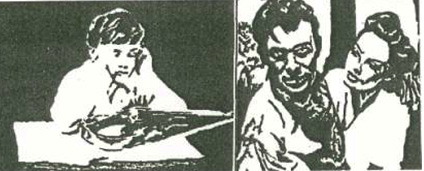
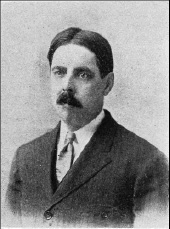
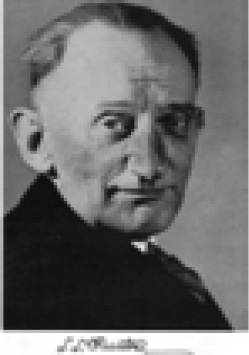
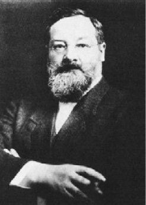
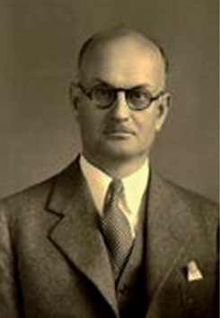
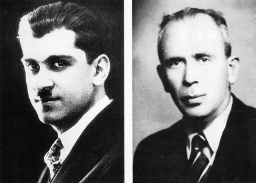
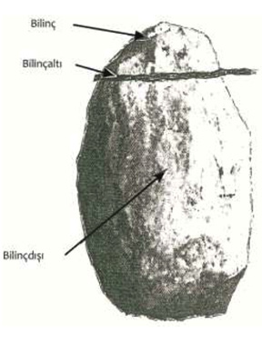
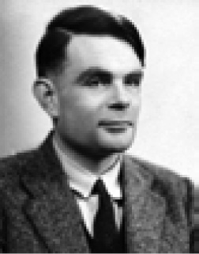

T
tabakalaşma (strafication) Toplumun, her biri yaşam kaynaklarına ve iktidara farklı bir erişim düzeyine, farklı rol ve statülere sahip olan grupların ya da sınıfların oluşması. Bu terimler, sosyoloji ve sosyal psikolojinin temel terimleri arasında yer alıyor. Bkz. toplumsal tabakalaşma.
tabakalaşmış örneklem (stratified sampling) Örneklem yanılgılarını azaltmak ve daha dengeli bir örneklem elde etmek amacıyla popülasyondaki yaş, cinsellik, sınıf, eğitim düzeyi gibi farklı grup, tabaka ve benzerlerinin seçilen örneklemde popülasyon içindeki ağırlıklarıyla orantılı biçimde temsil edilmeleri için her grup ve tabakadan popülasyondaki oranına göre alınan örneklem.
tabii seleksiyon Bkz doğal ayıklama.
tabu (taboo) 1. Özgün anlamıyla aynı anda hem kutsal hem tehlikeli, tekin olmayan ve dinsel yasaklarla örülen bir nesne, kişi, eylem, yer, hayvan ya da bitki. 2. Bir yerin, kişinin, eylemin ve benzerlerinin toplumsal-kültürel olarak yasaklanması; bu biçimde konulan yasaklar. Bkz. bekâret tabusu; ensest tabusu.
tadoma (tadoma) Görme ve işitme engellilerin, parmaklarını konuşmacının dudaklarına ve yüzüne koyarak söylenenleri anlamaya çalıştığı bir tür konuşma yöntemi. Terim, 1930’lu yıllarda bu tekniği kullanan Tad ve Oma adlı iki öğrencinin adlarından oluşturulmuştur.
tahayyül etme Bkz. imgeleme.
tahlil Bkz. çözümleme.
tahmin Bkz. kestirim.
tahmin değişkeni Bkz. kestirim değişkeni.
tahmin etkililiği Bkz. kestirim etkililiği.
tahmine yönelik araştırma Bkz. kestirime yönelik araştırma.
tahmin geçerliği Bkz. kestirim geçerliği.
tahsil Bkz. eğitim; öğrenim.
tahsil kabiliyeti Bkz. öğrenim yeteneği.
takınak (obsession) Doyumu engellenen ve kaygı yaşanmasına yol açan içgüdü ve dürtülere karşı benliği savunmak amacıyla beliren tepki; obsesyon, takınç, baskın düşünce, takıntlı düşünce. Takınaklı kişi, içinde tehlike, yitme, saygınlığı yitirme korkusunu taşıyor. Takınaklı tepki ile kişi, bunların oluşturduğu sıkıntıdan kurtulma çabasını gösteriyor. Takınaklı düşünce nevrozuna 10 yaşından önce çok az rastlanmakla birlikte, yetişkinlerde görülen takınakların yarısı, çocukluk döneminde başlıyor. Örneğin, kişi, yerdeki çatlaklara basınca; geçen arabaları, elektrik direklerini saymayınca, annesinin başına kötü şeyler geleceği korkusuna kapılıyor. Evden çıkarken sağ ayağını atmayı uğursuzluk sayıyor. Takınak, kişinin kendisince de yersiz, aşırı, akıl dışı kabul edilen yoğun ve inatçı bir korku (fobi) biçiminde ortaya çıkıyor. Korkulan şeyden kaçınamama durumunda, yoğun bir kaygı ve panik yaşanıyor. Uçak, açık ve kapalı alan, karanlık, yükseklik, fare, hamam böceği, yılan, örümcek fobisi gibi yaygın olan fobiler birer takınaktır. Bkz. obsesif-kompulsif nevroz; kompulsif tepki.
takınaklı davranış Bkz. kompulsif nevroz.
takınaklı düşünce Bkz. obsessiz-kompulsif nevroz.
takınaklı düşüncelere dalma Bkz. düşüncelere dalma zorlanımı.
takınaklı tip Bkz. libidinal tipler.
takınaklı-zorlanımlı bozukluk Bkz. obsessif-kompulsif bozukluk.
takınaklı-zorlanımlı nevroz Bkz. obsesif-kompulsif nevroz.
takınak nevrozu Bkz. zorlanım.
takıntılı düşünce Bkz. takınak.
takistoskop (tachistoscope) Görsel uyarıcıları kısa; ancak kesin sürelerle sunan bir aygıt. 1-2 milisaniyeye dek duyarlı zaman ayarlaması yapabilen bu aygıt, bellek araştırmaları gibi çeşitli deneylerde ve kimi zaman da tanı amacıyla kullanılıyor. Sözcükler, resimler, imgeler, simgeler, bu aygıtla görüş alanının sağına ya da soluna duyarlı bir biçimde sunulabiliyor.
taklit (imitation) Bir kişinin ya da grubun davranışlarını bilerek ya da bilmeden kopya etme süreci ya da alışkanlığı. Tutum ve davranışlarımızı, becerilerimizi, geleneklerimizi edinmede taklit, belirleyici olan temel öğrenme biçimlerinden biridir. Taklit, genelde normal bir davranış olmasına karşın, örneğin, ekolalide olduğu gibi hastalıklı bir biçim de alabiliyor. Bkz. psikomotor beceriler.
taklit etme ve örnek alma yoluyla öğrenme Bkz. bilişsel öğrenme.
taklit intiharı (suicide contagion) Birçok insanın art arda intihar etmesi; intihar salgını.
taksis Bkz. taktik.
taktik (tactic) 1. Taksis ( taxis). Organizmanın uyarıcı kaynağına yönelmesi ya da bu kaynaktan uzaklaşması. Bitkilerdeki bu yönelmeye tropizm; hayvanlarınkine ise taksis deniyor. 2. Daha geniş kapsamlı bir stratejinin ya da daha kısa süreli bir planın parçası olarak gerçekleştirilen eylem basamakları.
takvim yaşı (life age, calender age, chronological age) Kişinin doğum tarihinden, içinde bulunduğu ana dek geçen süre.
takvim yöntemi (calendar method) Aybaşıları düzenli olan kadınların uygulayabildiği doğal bir gebelikten korunma yöntemi. Bu yöntemde, güvensiz denen dönemde cinsel ilişkiden ya da korumasız cinsel ilişkiden kaçınılıyor. Bu dönem, en kısa ay -17 gün ile en uzun ay -13 gün arasındaki dönemdir. Örneğin, en kısa ayı 25 gün; en uzun ayı 32 gün olan bir kadının güvenli dönemi 25-17= kanamanın başladığı günden itibaren 8. gün ile 32-13=19. gün arası olacaktır.
talamik duygu kuramı (thalamic theory of emotion) Cannon-Bard’ın, coşkuları, beyin kabuğu ile etkileşim içinde olan talamusun yönettiğini savunduğu görüşü. Bkz. Cannon-Bard duygu kuramı.
talamus (thalamus) Beyinde; beyin yarımkürelerinin altında, beyin sapının hemen üstünde diensefalonda yer alan; sağ ve sol olarak iki bölümden oluşan; omurilik, beyin sapı ve beyin kabuğu arasındaki sinyal alışverişinde bir role istasyonu gibi çalışan, çok sayıdaki çekirdek ile gri maddeden oluşan bir merkez. Çekirdekler; beyin kabuğu altı, aktarma ve bağlama çekirdekleri olarak üç grup oluşturuyor. Getirgen ve götürgen demetlerin çekirdeklerinin talamusta bulunması, talamusu beynin röle ve aktarma merkezi yapıyor. Koku duyusu dışındaki tüm uyaranlar talamusta toplandığı için talamus, gelen bu bilgiyi beyin kabuğuna aktararak bilinçli kılıyor. Böylece talamus; bilinçlilik, uyanıklık ve dikkat, duygusal değişiklikler, ağrı, dokunma, seslerin ayırt edilmesi gibi duyumların değerlendirilmesinde etkin bir rol oynuyor Bkz. beyin; Cannon-Bard duygu kuramı.
Talbot-Plateau Yasası (Talbot-Plateau law) Bir ışığın, kesintisiz algılanacak biçimde yanıp sönmesi durumunda algılanan parlaklığının, yanıp sönme süreleri arasındaki orana bağlı olarak azalacağı ilkesi. Örneğin, yanıp sönme sürelerinin eşitliği durumunda algılanan parlaklık, yanma süresindeki parlaklığın yarısına eşit olacaktır. Algılanan bu parlaklığa Talbot-Plateau parlaklığı deniyor.
talep Bkz. istem.
tam algı (apperception) Bir şeyin algılanan özellikleri, eskiden kazanılmış ve benzeş olan ya da onların ilgili bulunduğu bilgilere bağlanıp tam olarak anlaşılabilir duruma geldiğinde gerçekleşen algı.
tam algı yığını (apperception mass) Yeni nesnelerin nasıl algılanacağını, yeni düşüncelerin nasıl kavranılacağını belirleyen ve Herbart’ın zihinde var olduğunu söylediği düşünceler kümesi.
tamamlama (completion) 1. Sinir sisteminin, gelen bilgilerdeki tutarsızlıkları ya da boşlukları görmezlikten gelerek eksiksiz bir bütünlük algılama eğilimi. Buna dayanılarak ihmal sendromunun bir ölçüdeki nedeninin de aşırı tamamlama olabileceği düşünülüyor. 2. (consummation) Cinsel birleşme olmadan evliliği hukuken geçerli saymayan kimi ülkelerde kullanılan bir terim. Cinsel birleşme ise penisin döl yoluna girmesi olarak tanımlanıyor. Eşlerden birisi evliliği tamamlamayı (cinsel ilişkiyi) reddederse, evlilik geçersiz kılınabiliyor. Kimi ataerkil toplumlarda tecavüz de tamamlama sayılıyor ve erkek, söz konusu kadının karısı olduğunu ileri sürebiliyor.
tamamlama testi (completion test) Sayı, resim, çizgi ya da sözcüklerden oluşmuş bir dizideki eksik parçayı ya da parçaları bulmayı gerektiren test.
tamamlayıcı davranış Bkz. tamamlayıcı eylem.
tamamlayıcı eğitim (continuing education) 1. Zorunlu eğitim sınırlarının dışına çıkmış ya da orta öğretim ve yüksek öğretimden ayrılmış gençlerle yetişkinlere okuma, öğrenme ve gelişme olanakları sağlayan her önlem. 2. Yetişkinlere, örgün eğitim programları ya da akademik programlar yerine, esnek programlar sunan özel okul, merkez ya da kurumlarda verilen eğitim.
tamamlayıcı evlilik (complementary marriage) Karıkocanın kesin çizgilerle birbirinden ayrılmış aile rolleri üstlendiği bir evlilik biçimi. Örneğin, ailenin ekonomik gereksinimlerini karşılayan kocanın ev dışında bir uğraşı olmasına karşılık, kadının temel sorumluluğunun evle, çocuk bakımı ve eğitimiyle, aile üyelerinin tamamının duygusal gereksinimlerini karşılamakla sınırlıdır. Bkz. evlilik (Geleneksel Evlilik).
tamamlayıcı eylem (consummatory act) Sıklıkla yinelenen belli bir etkinliği güdüleyen nedensel etkenlerin düzeyini, etkinliğin sonlanmasına yol açacak kadar azaltan bir eylem; tamamlayıcı davranış. Çiftleşmenin kur yapmayı; yeme eyleminin yiyecek arayışını sonlandırması, bunu örneklendiriyor.
tamamlayıcı gereksinimler (complementary needs) İki insan arasındaki ilişkide her birinin diğerinde eksik olan bir şeyi tamamlama eğilimi gösterdiğini savunan görüş. Eşlerden birindeki aşırı egemenlik gereksiniminin, diğerindeki aşırı boyun eğme gereksinimini tamamlaması, bu görüşü örneklendiriyor. Buna göre insanlar, kendilerindeki eksikleri tamamlayacak olan farklı insanların çekimine kapılıyor.
tamamlayıcı içgüdü (complementary instinct) Psikanalize göre, bir içgüdünün birbirine karşıt olan ve birbirini bütünleyen iki görünümü. Bkz. içgüdü kuramı (İçgüdüler).
tamamlayıcı renkler (complementary colors) Kırmızı-yeşil, mavi-sarı ışıkların eşit oranlarda karıştırılması durumunda beyaz rengin elde edilmesinde olduğu gibi, beyaz elde edecek biçimde birbirini tamamlayan renkler. Tamamlayıcı renkler, renk çemberinde yaklaşık olarak birbirinin karşısında yer alıyor.
tamamlayıcı roller Bkz. tamamlayıcı evlilik.
tamamlayıcı terapiler Bkz. alternatif tedaviler.
tamamlayıcı tıp Bkz. alternatif tıp.
tam arama (exhaustive search) Bellekte arama yapılırken bütün seçeneklerin gözden geçirilmesi. Arama, istenilen bilgiye ulaşıldıktan sonra bile sürüyor.
tam çalışma (working thorough) Psikanalize göre, hastanın bilinçdışı araçları dışavurmaya yönelik direnmelerinin bilinçli olarak üstesinden gelmesi ve yaşadığı sorunların kaynağında yatan bastırılmış duygularıyla, korkutucu dürtüleriyle, iç çatışmalarıyla yeniden, yeniden yüzyüze getirildiği süreç. Bu sürecin amacı, hastanın içgörüsünü artırmak ve çatışmalarıyla başa çıkmasına; böylece yeni ve daha yapıcı davranışlar geliştirmesine yardımcı olmaktır.
tam donanımlı (totipotent) Embriyolojide bir hücrenin ya da çekirdeğin, ilgili organizmada bulunan her türlü farklılaşmış hücrenin oluşmasını sağlama yetisi. Tam donanımlı tek hücre, bölünme yoluyla organizmanın tamamını üretebiliyor. Bkz.kromozom; gen; genetik.
tam gözetim kurumları (total institution) İnsanların, yaşamlarının belli dönemlerinde toplumun geri kalanından tecrit edildiği; bütün davranışlarının en küçük ayrıntısına dek planlandığı, denetlendiği hapishane, psikiyatri kliniği gibi yerler. Bu denetleme ve planlama sonucunda söz konusu kişiler topluma yeniden girmekte oldukça zorlanabiliyorlar. Bkz. kurumsallaşma; yeniden toplumsallaşma.
tam iletişim (totalcommunication) İşitme engellilerle olabildiğince etkili bir iletişim sağlamak için her türlü işitsel dil, işaret dili gibi görsel tekniğin bütünleştirilmesine dayalı bir yaklaşım. Bkz. iletişim.
tam itme sağaltımı Bkz. tam itme tedavisi.
tam itme tedavisi (total-push therapy) Myerson’un ağırlıklı olarak hastanede kalan süreğen şizofren hastalar için geliştirdiği ve günümüzde hastane koşullarının önemli ölçüde iyileştirilmesine yol açan destekleyici bir tedavi yaklaşımı; tam itme terapisi, tam itme sağaltımı. Myerson, hastaların moralini yüksek tutmak ve kötüleşmeyi önlemek için, oldukça uyarıcı bir çevre oluşturmaya ve hastaları sürekli olarak günlük yürüyüşler, spor; daha sonra iyileşme görüldükçe müzik, dans, el sanatları, mesleksel tedavi gibi etkinliklerle özendirmeye çalışmıştır. Bkz. tedavi topluluğu.
tam itme terapisi Bkz. tam itme tedavisi.
tam öğrenme (mastery learning) Bloom’un geliştirdiği önemli bir öğrenme modeli. Bloom, tam öğrenme ile ilgili görüşlerini ve onların gerekçelerini şöyle açıklıyor: Bireysel ayrılıklara uygun olarak yapılan öğretim, öğrencilerin yüzde 75’i ile yüzde 90’ını öğrenim hedefine ulaştırabiliyor. Öğrencilerin belli bir ders konusuna ilişkin öğrenim görevlerini yerine getirmede yararlandıkları yetenekleri birbirine eşit değildir. Yeteneklerine bağlı olarak, öğrenme hızları da farklıdır. Her öğrenci, belli bir konuyu farklı sürelerde öğrenebiliyor. O nedenle öğretmen, her öğrenciye, belli bir öğrenim görevini tamamlayabileceği kadar süre vermelidir. Kendisine yeterli süre verildiğinde ve uygun öğrenim ortamı hazırlandığında her öğrenci, öğrenim görevlerini başarıyla sonuçlandırıyor. Her öğrencide farklı olan bir başka değişken, öğrenme güdüsüdür. Her öğrenci, kendi öğrenme güdüsünün gücü ölçüsünde, öğrenim görevini yerine getirmeye çabalıyor; öğrenme miktarını, kendi öğrenme güdüsünün gücü ölçüsünde artırabiliyor. Öğrencinin konuya karşı duyduğu ilgiyi, öğrenmeye etkin katılımını ve öğrenim sırasında karşılaştığı öğrenme güçlüklerini aşma isteğini, onun öğrenme güdüsünü yönlendiren temel etken durumundaki akademik benlik tasarımı besliyor. Öğrenme sırasında yaptığı yanlışlardan pay çıkarmasını; öğrenme sürecinde yaşanan engelleri sabırla aşmasını ise benliğine, öğretmene ve ders konusuna karşı geliştirdiği tutumlar belirliyor. Bir farklılık da öğrenim durumlarını anlayabilmede görülüyor. Bunun belirleyicilerinden biri, kişinin dil ve okuma becerisidir. Dil ve okuma becerilerini; dinleme, dinlediğini anlama, sözlü ve yazılı anlatım gücü oluşturuyor. Dil ve okuma becerisinin yanı sıra, dersle ilgili temel ön bilgi ve beceriler kazanılmış; konuyla ilişkili terimler de daha önce öğrenilmiş ise, öğrenim durumlarına ilişkin yaşantıların edinilmesi kolaylaşıyor. Öğrenmenin gerçekleşmesinde ayrıca, öğretmenin göze ve kulağa hitap eden araçlardan yararlanması, somuttan soyuta ilkesini bireysel yeteneklere göre uygulaması da önem taşıyor. Öğretimin niteliğini en iyi, öğretmen denetliyor. Öğretimi hedefine, öğrencilerin ilgi, gereksinim ve yeteneklerine uygun olarak düzenlenen öğretim durumları ulaştırıyor. Tam öğrenme modelinde öğrenci başarısı, normal dağılım eğrisi yerine, sağa (üst puanlara doğru) çarpık bir dağılım gösteriyor. Eğitimin görevi, öğrenci gizilgücünün gelişimini normal dağılımla sınırlama yerine, bireysel ayrılıklara işlerlik kazandırarak, öğrenciyi ulaşabileceği son noktaya yaklaştırmaktır. Tam öğrenme stratejisiyle yetişen öğrenci, öğrenmeye ayırdığı zamanı gittikçe kısaltıyor. Öğrenci, bunu yalnızca öğrenme durumlarını anlama yeteneği ile gerçekleştirmiyor; okul içinde ve okul dışında aldığı eğitimin niteliği de bu konuda etkili oluyor. Öğretmen, bu iki değişkenle ilgili uygun koşulları yaratarak sınıfta öğrencilerin büyük çoğunluğunun tam öğrenmesini sağlıyor. Çağdaş eğitimde öğretim terimiyle, her öğrencinin anlama yeteneğine göre öğrenim görevinin ve bu görevi yerine getirmek için izlenecek yolların belirlenişi dile getiriliyor. Anlamada sözel yetenek, genel bir etkendir. Sözel yetenek, okul öncesinde ve ilköğretim döneminde fazla etkilenmiyor. Bu yetenekteki değişim, daha sonra da düşük düzeyde sürüyor. Her öğrenme güçlüğünün giderilmesinde olduğu gibi, sözel yeteneğe ilişkin öğrenme güçlüklerinin giderilmesinde de öğrencilere işbirliği ve etkileşime dayalı üçer kişilik küme çalışması yaptırmak, daha yararlı oluyor. Ancak, bundan da yararlı olanı, öğretmenle öğrencinin bire bir ilişkisiyle sürdürülen çalışmalardır. Farklı sözel yetenekleri olan öğrencileri ise, farklı okuma yeteneklerine yanıt verebilen, aynı konuda; ama, birbirinin seçeneği durumundaki ders kitaplarıyla yapılan öğrenme çalışmaları, verimli sonuçlara götürüyor. Çalışma kılavuzlarıyla programlanmış öğretimin sunduğu yöntemlerin, ağır ilerleyen, çok alıştırma ve yinelemeye gereksinim duyan, sık pekiştirme isteyen öğrencilere daha yararlı olduğu görülüyor. Öğrenme isteği ve bilişsel gücü sınırlı öğrencilere ise gör-işit araçları, akademik oyunlar, somut gösteriler, daha ilginç geliyor ve etkili öğrenim yaşantıları kazandırıyor. Öyleyse yapılması gereken, sınıftaki her öğrenciye en elverişli öğrenme olanağı verecek bol ve çeşitli yöntem, araç gereç sağlamak; öğretmenin kılavuzluğunda, kendi anlama yeteneğine uygun düşenleri seçme ve bireysel olarak bunlardan yararlanma fırsatı vermektir. Öğrencinin öğrenmeye güdülenme düzeyi ve öğrenmeye katılma isteğini, onun geçmiş yaşantıları, başarıları ve bilişsel öğrenmelerle ilgili olarak geliştirdiği duyuşsal öğrenmeleri belirliyor. Geçmişteki çabası ödüllendirilmişse, öğrencinin aynı çabayı sürdürdüğü görülüyor. Geçmişteki çabasının bir işe yaramadığını gören öğrenci ise ne içinde bulunduğu andaki öğrenmeye karşı istek duyuyor ne de öğrenmeye katılıyor. Ödülün sıklaştırılması, öğrencide öğrenmeyle ilgili güdü ve çabayı artırıyor. Bütün bu değişkenler, bireysel ayrılıkları besleyen olağan öğrenme koşulları içinde her öğrencinin ilgi ve gereksinimine göre sunulduğu zaman, öğrenme süresinde azalma; öğrenme miktarında ise artış gözlemleniyor. Tam öğrenmeyi sağlayan biçimlendirilmiş değerlendirme stratejisi, konunun öğrenilmemiş yönlerine tanı koymaya yaramaktan başka, hangi yöntem ve araç gerecin, hangi öğrenci için uygun olduğuna tanı koymaya da yarıyor. Ünite değerlendirmesi için, tam öğrenme gerçekleşene dek, seçenek olabilen yöntem ve araç gereçlerden yararlanılıyor. Tam öğrenme modelini değerlendirme stratejisinin ikinci önemli yönünü ise genel değerlendirmenin, bunların toplamı olarak ele alınışı oluşturuyor. Öğrenciler arasında, yarışmadan çok, iş birliğine ağırlık verilerek gerçekleştirilen tam öğrenme çalışmaları ile öğrencilerin yüzde 90’a yakını tam öğrenmeye (A notuna) ulaşmakla kalmıyor; benlik tasarımında da olumlu değişmeler oluyor. Bu da ruh sağlığı için güçlü bir kaynak oluşturuyor. Yine bu modelle öğrencide, çevresini denetleme duygusu geliştiriliyor. Tam öğrenme ile öğrencide, sonraki öğrenmeler için güdülenme yaratılıyor; öğrenci, kendi ilerlemesini görerek öğrenme zevkini tadıyor; öğrenmeye karşı yeni ve sürekli ilgi oluşturuyor. Geleneksel öğretim gören öğrenci ise öğrenmeyi reddediyor ve eğitimin en son amacı olan kendini gerçekleştirme yolunu kendisine kapatıyor. Sönmez, Bloom’un öğrenme modelinde girdi ve işlem değişiklikleri olarak yer alan bilişsel giriş davranışları ve duyuşsal giriş karakteristikleri ile öğretim hizmetinin niteliğini şöyle açıklıyor: (1) Öğrencinin bilişsel giriş davranışları ve duyuşsal giriş karakteristikleri bilinmelidir. Bir derse ya da kursa başlamadan önce, öğrencinin dağarcığında bulunan bildikleri, ilgileri, güdülenmişlikleri, tutumu ve başkaları belirlenmeli; öğretim, bu özellikler göz önünde bulundurularak düzenlenmelidir. Çünkü bilişsel giriş davranışları, başarıda gözlemlenen varyansın .50’sini; duyuşsal giriş karakteristikleri .25’ini; ikisi birlikte işe koşulunca .65’ini açıklayabiliyor. 2. Öğretim hizmeti ise en az şu niteliklerle donanmış olmalıdır: (a) Her eğitim durumunda işaretler (ipuçları) bulunmalıdır. Bu işaretler kimi öğrenciler için yazılı kaynaklar; kimisi için sözlü açıklamalar; kimisi için de gösteri, model ve açıklamaların birleşimi ya da başka işaretler olabilir. (b) Her eğitim durumunda pekiştireç bulunmalıdır. Bunlar, , öğrenciye, kültürel değerlere, dersin niteliğine, zamana, yere ve kazandırılacak hedef davranışlara göre belirlenmelidir. (c) Her eğitim durumunda öğrencinin etkin katılımı sağlanmalıdır. Katılım açıkça ya da zihinsel olabilir. Öğrencinin kendikendine yaptığı yineleme ve alıştırmalar da birer katılımdır. (ç) Her eğitim durumunda dönüt ve düzeltme yer almalıdır. Grupla öğretimde öğrenme sürecinin her öğrenci için etkililik derecesine ilişkin dönütlerden elde edilen kanıtlara gereksinimi bulunuyor. Öğretmenlerin, gerekli yerde yanlış ya da eksikleri giderici önlemleri almaları gerekiyor. Şöyle bir yol izlendiğinde tam öğrenme stratejisinin başarılı olduğu gözlemlenmiştir: Öğrencilere hem işlenen ünitede neler öğrenmiş olduklarını hem de öbür üniteye geçmeden önce başka neleri öğrenmeleri gerektiğini belirleyen izleme testleri uygulanıyor ve öğrenciler, bunların sonuçlarından yararlandırılıyorlar. Öğrencilerin eksik ya da yanlışlarını düzeltmeden, sonraki üniteye geçmelerine izin verilmiyor. Bu tamamlayıcı eğitim, bire bir çalışmayla gerçekleştiriliyor. Buna olanak olmazsa öğrenciler küçük gruplara ayrılarak çalıştırılıyor. (d) Ders ya da kursun üniteleri aşamalı olarak sıralanmalıdır. Bir ünite tam olarak öğrenilmeden sonraki üniteye geçilmiyor. Bilişsel giriş davranışları, duyuşsal giriş karakteristikleri ve öğretim hizmetinin niteliği birlikte gerçekleştirildiğinde bu, başarı varyansının .81’ini açıklıyor.
tam öğrenme stratejisi Bkz. strateji; tam öğrenme.
tam verimlilik (fully functioning) Rogers’a göre, yaşantılara daha açık olma, daha varoluşsal bir yaşam sürdürme, organizmaya daha fazla güvenme, daha tam işlevde bulunma. Bkz. kendini gerçekleştirme
tanatoloji (thanatology) Ölümün ve ölmenin psikolojik ve tıpsal yönlerini inceleyen bilim.
tanatos (thanatos) Freud’a göre, kişiyi saldırganlığa, şiddete, sonsal anlamda özyıkıma güdüleyen içgüdüsel dürtü; ölüm içgüdüsü, ölüm isteği. Bkz. içgüdü kuramı.
tanı (diagnosis) Teşhis. Bkz. tanılama.
tanıdıklık yoluyla bilgi (acquanintance) Duyu organlarımız aracılığı ile dış dünyaya ilişkin edindiğimiz ve doğrudan farkında olduğumuz bilgi. İnsanların yüzleri, bilinen yerler ve benzerleri ile ilgili bildiklerimiz bu gruba giriyor.
tanıdık tecavüzü (acquaintance rape) Tecavüzün hukuksal tanımına uyan ve kurbanın tanıdığı kişilerce yapılan zora dayalı cinsel eylem.
tanıklık psikolojisi (psychology of witness) W. Stern’in ortaya koyduğu ve adalet psikolojisinin bir bölümünü dile getiren terim. Tanıklık psikolojisi, adliyede bildirilenlerin mantık açısından gerçeğe, ahlak kurallarına uygun olup olmadığını, inandırıcılığını ve anlatılan olayların içinde geçtiği koşulların ele alınmış olan konuya etkisini inceliyor.
tanıklık ruhbilimi Bkz. tanıklık psikolojisi.
tanılama (diagnosis) Bir hastalığın ya da normaldışı davranışın belirtilerine ve gelişim özelliklerine bakarak onları öbürlerinden ayırt etme; teşhis etme.
tanılama testi (diagnostic test) 1. Öğrencilerin özellikle zayıf oldukları konuları belirleyip gerekli giderici önlemleri almak amacıyla sınırlı bir ders konusundaki ya da onun küçük bir bölümündeki başarıyı ölçmek için hazırlanmış test. 2. Öğrencinin güçlü ve zayıf yanlarını ortaya çıkarmayı amaçlayan bir sınav türü. 3. Psikolojik danışmada kişinin belli bir özelliğini ya da belli özelliklerini belirlemek üzere hazırlanan standart araç.
tanım (definition) Bir sözcüğün ya da önerinin anlamını, önemini açıklama, özel ve başlıca niteliklerini belirtme. Bkz. döngüsel tanım; işlemsel tanım.
tanıma (recognition) Daha önce görülen, işitilen, yaşanan bir şeyi yeniden gördüğünde, işittiğinde, yaşadığında aynı şeyi görmüş olduğunu anlama, fark etme; ayrımsama. Anımsamadan farklı olarak tanıma, ayrıntılı değildir ve bellek izinin temsil ettiği uyarıcının eylem olarak varlığını gerektirir. Örneğin, daha önce görülen bir yüzün, yerin ya da sunulan herhangi bir uyarıcının yeniden görüldüğünde anımsanması, biliş psikolojisinde tanıma olarak açıklanıyor. Klasik bir tarih sınavı ile çoktan seçmeli bir tarih sınavı arasındaki fark, bu iki anımsama biçimi arasındaki farkı iyi örneklendiriyor. İlkinde soruların doğru yanıtlarının bellekten bulunup çıkarılması gerekirken, ikinci sınav biçiminde doğru yanıtlar, sunulan seçenekler arasında yer alıyor. Bu nedenle, rastlantıya bağlı olduğu için, anımsanan miktarın hatırda tutmayı tam olarak ölçtüğü söylenemez. Öte yandan, tanıma teknikleriyle ölçmede, değerlendiricinin yorumu puanlamaya katılmadığı için, daha nesnel sonuçlar elde ediliyor ve bu ölçme daha ekonomik oluyor. Bkz. üretme-tanıma.
Tanıma Belleği ( (Recognition Memory (RM)) Ayrı bir bellek türü olmaktan çok, öteki bellek sistemleri içinde bir alt küme; örüntü tanıma. Hatırda tutmanın ölçülmesinde kullanılan anımsama ve tanıma arasındaki ilişki, iki farklı yaklaşımla ortaya konuluyor. Bunlardan birincisine göre, tanıma ve anımsama, aynı belleğin, aynı işi yapan iki ayrı alt alanıdır. İkincisine göre, tanıma ve anımsama, birbirinden farklı iki kümedir. Bilginin kodlanması bakımından da tanıma ve anımsama, birbirinden ayrı değerlendiriliyor. Anımsamada işitsel bilgi; tanımada ise görsel bilgi kullanılıyor. Ancak, tanıma anımsamaya göre daha kolaydır. Bilişsel psikologların geliştirdiği bilgi işleme sistemi’ne göre bilgi, duyusal kayıttan sonra STM’ye geçmeden önce, örüntü tanımaya geliyor. Buna bağlı olarak TB, duyusal kayıttaki bilgiyle daha önce kazanılmış olan bilgi arasında bağ kuruyor ve duyusal girdi, anlamlı bir kavramla eşlendiği zaman tanıma gerçekleşmiş oluyor. Tanımanın, daha çok uyarıcıya anlam verme biçiminde düşünülmesi gerekiyor. Bu açıdan, çoktan seçmeli ve doğru-yanlış türü sınavlar, TB’nin işleyiş süreciyle ilgilidir. Tanımayla kodlanmış olan bilgi, STM’ye geçebiliyor. Tanıma belleği, LTM’deki bilgiyi de yoğun bir biçimde kullanıyor. Tanıma belleği için, LTM, STM ve IM’de birçok deney yapılmıştır. Bunların sonucu olarak TB, bütün bellek sistemleriyle yakından ilişkili olsa da ayrı bir bellek grubu olarak düşünülmüyor. Bkz. bellek.
tanıma şeması (cognitive schema) 1. Kişinin geçmiş yaşantılarıyla ilgili bir algılama çerçevesi ya da kalıbı; bilişsel şema. Kişinin bugünkü ve yarınki yaşantıları, bu çerçeve ile ilişkilendirilerek değerlendiriliyor. Buna, yaşantıları gruplandırmada etkili olan Gestalt ilkeleri, en yalın örnek olarak gösteriliyor. Tanıma şeması, bir nesne ya da düşüncenin algılanma ve benimsenme biçimini belirlemek üzere sunulan uyarıcı ya da özelliği ile birleşip yaşantıyla canlı yapıya kazınmış sayılan karmaşık bir örüntüdür. Çok geniş bir kavram olan bu terim, bir nesnenin ayakkabı olarak algılanması gibi çok küçük bir kalıp olabileceği gibi, başka toplumsal gruptan insanların davranışlarını hoş olmayan bir biçimde engellemeye yol açan ırk önyargıları ya da zamanı, geçmiş, gelecek ve şimdi diye üç bölümde kavrama gibi çok daha kapsamlı geniş bir kalıp da olabilir. 2. E. C. Tolman’a göre, bireyin, insan ve hayvanın dış çevreye ilişkin taşıdığı kapalı sayıltı ve beklentisi; canlının bir tür tanıma haritası, hazırlıklı oluş durumu; bilişsel şema.
tanıma yöntemi (recognition method) Daha önce edinilen bilgileri türlü testler aracılığı ile denetleme yöntemi.
tanımlayıcı araştırma (descriptive research) Neden-sonuç ilişkilerinden çok, gözlemlenebilir özellikleri belirlemeyi ve tanımlamayı hedefleyen; başka deyişle deneysel olmayan, gözleme dayalı araştırma.
tanımlayıcı aşama sırası (descriptive hierarchy) Bir uyarımın zihinsel düzlemde farklı ayrıntı düzeyleriyle temsil edildiğini ileri süren görüş. Bu görüşe göre kenarlar gibi basit özellikler alt düzeyde; köşeler gibi daha karmaşık özellikler ise daha üst düzeylerde temsil ediliyor.
tanımlayıcı davranışçılık (descriptive behaviorism) B. F. Skinner’in başlangıçta çevresel olaylar ile davranışlar arasındaki ilişkileri açıklamaya değil, tanımlamaya yönelik çalışmaları için kullandığı terim. Bkz. radikal davranışçılık.
tanımlayıcı istatistik (descriptıve statistics) Belli bir popülasyondan alınan örneklemden elde edilen merkezi eğilim, korelasyon, varyans gibi özel ölçümleri tanımlayan ve özetleyen nicel (sayısal) bilgiler.
tanımlayıcı normlar ( descriptive norms) Hangi davranışların toplumsal onay gördüğüne bakmadan, başkalarının belli bir durumda nasıl davranışlar gösterdiğine ilişkin algılar.
tanımlayıcı psikiyatri (descriptive psychiatry) Ağırlıklı olarak, düşünce, duygu ve davranışların altında yatan psikodinamik süreçleri değil; gözlemlenebilen belirti ve davranışları inceleyen yöntemlerle elde edilen bilgilere dayanan psikiyatri; deskriptif psikiyatri. Bunun ilk örneklerinden biri, Emil Kraepelin’in ruh hastalıklarına ilişkin sistematik tanımlarıdır. Bkz. dinamik psikiyatri.
tanımlayıcı yöntemler (descriptive methods) Davranışı tanımlamaya yönelik yöntemler. Bunların, nedensel açıklamalar sağlaması beklenmiyor.
tanımsal ruh hekimliği Bkz. betimleyici psikiyatri.
tanısal asimilasyon (recognitory assimilation) Piaget’nin asimilasyon kuramına göre, çocuğun yineleyici asimilasyon yetisinden sonra gelişen nesneleri birbirinden ayırt edebilme ve bu farklılıklara dayanarak her birine farklı tepkiler verebilme yetisi. Bu evreyi çok daha gelişmiş olan genelleştirici asimilasyon izliyor. Bkz. PIAGET, Jean.
tanısızlık (agnosia) Tanınıp bilinen varlıkları, görme, onların sesini işitme gibi duyu organları yoluyla ayırt edememe durumu; agnozi.
tanısız zekâ geriliği (unspecified mental retardation) Bilinen bir nedenden kaynaklanmayan ya da standart testlerle belirlenemeyecek kadar ağır olan zekâ geriliği.
Tanı ve İstatistik Kılavuzu DSM-IV (Diagnostic and Statistical Manual) Amerikan Psikiyatri Birliği’nin ruh (akıl) hastalıklarının tanımı, tanısı ve sınıflandırılması için geliştirdiği bir standart. Bu standartta yer alan tanımlar ve tanı ölçütleri, ruh hastalıklarına ilişkin şu ya da bu kuramsal açıklamalara değil; gözlemlere ve istatistiksel verilere dayalı olarak belirlenmiştir. Bu kılavuzda hastalıklar, 5 temel boyut ya da eksende değerlendiriliyor. Bu eksenler sırasıyla şunlardır: 1. eksen: Klinik rahatsızlıkları. II. eksen: Kişilik bozuklukları ve zekâ geriliği. III. eksen: Genel tıpsal rahatsızlıklar. IV. eksen: Psikososyal ve çevresel sorunlar. V. eksen: Genel işleyiş değerlendirmesi. Örneğin, bir çocuğa 1. ve 2. eksende olduğu tanısı konulabilir; sara gibi genel tıpsal bir rahatsızlığı bulunduğu; 9 sınıftan (kategoriden) birisinde, anne babasının boşanmış olması gibi psikososyal sorunları olduğu saptanabilir ve genel işleyiş değerlendirme ölçeğinde önemli belirtileri ya da özürleri bulunduğu belirlenebilir. DSM-IV, türlü gerekçelerle yoğun eleştirilere uğramıştır. Bunlardan ilki, kılavuzun sınıflandırma sisteminde kişide belli bir hastalığın ya bulunduğu ya da bulunmadığı gibi ikili bir değerlendirme yapmasıdır. Oysa boyutsal yaklaşımlar, belli bir özelliğin bir insanda ne düzeyde bulunduğunu tanımlıyor. Örneğin, bir hastalığın küçük bir özelliğini taşımayan bir çocuk, söz konusu hastalığı yokmuş gibi değerlendiriliyor. İkincisi, belirti listelerindeki kesme noktaları keyfi gibi görünüyor. Örneğin, 9 dikkatsizlik belirtisinden 5’ine; 9 aşırı etkinlik-dürtüsellik etkinlik-dürtüsellik belirtisinden de 5’ine sahip olan bir çocuğa aşırı etkinlik ve dikkat eksikliği tanısı konabiliyor. Oysa bunlardan herhangi birinin 6’sını gösteren çocuğa bu tanı konacaktır. Bir başka eleştiri de DSM’nin, çok genel kapsamlı olduğu ve kesinlikle bir ruh hastalığı olmayan sorunları ya da güçlükleri içerdiğidir. Örneğin, el yazısı becerisi zayıf olan bir çocuğa zihinsel bir bozukluk tanısı konacaktır. Birçok insan, kötü yazı yazmayı bir ruh hastalığı olarak değerlendirmeyecektir. Aynı biçimde sıklıkla kızan, başkalarını rahatsız eden, erişkinlerle tartışan bir çocuğa ters başkaldırıcılık bozukluğu tanısı konabilir. Bu da bu türden psikiyatrik tanıların, normal yaşam alanlarına psikiyatrinin yersiz müdahalesi, o alanları denetlemesi oluyor. Son olarak, DSM’nin bir tür güç aracı olduğu; belli grupları; örneğin, kadınları, azınlıkları, çocukları denetim altında tutmaya, haklarını çiğnemeye, kurulu düzeni korumaya yönelik bir tür araç olduğu yönünde eleştiriler yapılmıştır. Kılavuz, DSM-III, DSM-IIIR, DSM-IV gibi revizyon numaralarıyla anılıyor. Bkz. uluslar arası hastalık sınıflandırması.
Tanrı (God) Evreni ve evreni yöneten kuralları yarattığı varsayılan ve çağdaş dinlerin çoğunun dayandığı doğaüstü güç; Allah. Tek, her şeye gücü yeten Tanrı kavramı, antik dünyanın ilk despotlarının bir yansıması olarak ortaya çıkmış ve o günden sonra Tanrı, toplumdaki egemen sınıfın statüsünü yansıtır duruma gelmiştir. Çünkü Tanrı, her şeyi yaratan olmasının ötesinde, toplumsal yaşamı düzenleyen, gözlemleyen ve yargılayan, doğa ve toplum yasalarını değiştiren ya da hükümsüz kılan bir role sahiptir. Postmodern teolojide, Tanrı kavramının olduğu kadar kutsallaştırma-dünyasallaştırma süreçlerinin de açıkça insana dayalı süreçler olduğu ve toplumsal değişimlere bağlı olarak mutlaka değiştiği savunuluyor.
Tanrı tanımazlık (atheism) 1. Tanrı ya da yüce bir varlık tanımama. 2. Kişisel bir Tanrı tanımama.
Tanzimat Döneminde Eğitim Bkz. Türklerde eğitim.
Tanzimat devri (the years 1839-1876 in Ottoman history ) Osmanlı Devleti’nde, Mustafa Reşit Paşa’nın önderliğinde girişilmiş planlı ilk Batılılaşma-yenileşme hareketi dönemi. Tanzimat hareketinin genel amacı, yüzyıllardır yalnızca bir şeriat ve Doğu devleti olan Osmanlı Devleti’nin yönünü Batıya çevirmek ve oranın ilkelerini benimsemek; yaşayabilmek için bilim, toplum ve uygarlık anlayışı bakımından da batılaşmaktır. Uzun yıllar Avrupa’da elçilik yapan, geniş bir kavrayışa ve güçlü bir yurt sevgisine sahip olan Mustafa Reşit Paşa, görüşlerini kabul ettirdiği padişay Abdülmecit’in ağzından kaleme aldığı Tanzimat Fermanı’nı 3 Kasım 1839’da İstanbul’da Gülhane Parkı’nda geniş bir kalabalık önünde okuyup dünyaya ve ülkeye duyurdu. Fransız İnsan Hakları Bildirisi’nden etkilenmiş olan bu fermanla yurttaşların ırz, mal güvenliği, yurttaşlık hak ve özgürlükleri sağlanıyor; adalet, vergi, maliye, askerlik, milli eğitim ve daha başka konularda batıya dayalı çağcıl kurumların oluşturulması öngörülüyordu. Medreselerin yanı sıra, ilkokuldan üniversiteye dek çağdaş eğitim verecek okulların açılması; şeriat mahkemelerinin yanında çağdaş mahkemelerin de kurulması gerekli görülüyordu. Sanat, edebiyat ve bilimsel düşünmedeki yararlı etkileri, Tanzimat’ın getirdiği yeniliklerin başında geliyordu. Tanzimat, belli bir süre içinde tüm yönleri ile tam sonuç verememiş olsa da bu hareketin Osmanlı Devleti’ne bir tür yaşama aşısı görevi yaptığı yadsınamaz.
Tanzimat Fermanı Bkz.Tanzimat devri.
tapıncak Bkz. fetiş.
tapıncakçılık Bkz. fetişçilik.
tarafsızlık Bkz. yansızlık.
tarafsız tahmin Bkz. yansız kestirim.
tarafsız varyans tahmini Bkz. yansız varyans kestirimi.
tarama (I) (scanning) 1. Belli bilgilere ulaşmak amacıyla çevrenin etkin bir biçimde gözden geçirilmesi. Bu terim genellikle okuma, araba kullanma gibi günlük etkinliklerde gerekli bir beceri olan görsel tarama için kullanılıyor. 2. Tıpta, vücudun belli bir bölgesini; örneğin, beynin resmini çıkarma; bu biçimde elde edilen resim ya da bu amaçla kullanılan manyetik rezonanslı görüntüleme ve benzeri yöntemler.
tarama (II) (screening) Bedensel ya da ruhsal anlamda sağlık ve gelişim sorunları açısından risk taşıyan ya da hastalığın henüz ilk aşamasında olan kişilerin belirlenmesi amacıyla hedef kitle üzerinde yapılan hızlı bir ön çalışma.
Tarasoff Kararı (Tarasoff Decision) California mahkemelerinden birinin, hastanın belli kişi ya da kişiler açısından risk oluşturduğunun farkına varması durumunda terapiste ilgili kişi ya da kişileri uyarma yükümlülüğü getiren kararı. Bu tür durumlarda terapist, gizlilik kuralı dışına çıkabilme hakkına sahip bulunuyor.
tardiv diskenzi (tardive dyskinesia) Psikoaktif ilaçların, ayrıca beyin travmalarında kullanılan türlü ilaçların uzun süre kullanımıyla ilişkili olarak ortaya çıkan ve işlevsiz, istemsiz hareketlerle tanımlanan, birçok durumda geri dönüşü olmayan bir nörolojik sendrom. Kullanılan ilaçların kesilmesi, belirtilerin sıklıkla görülmesine ve iyice ağırlaşmasına yol açıyor. Yüzde tikler, yüz buruşturma, göz kırpma, dudak şapırdatma, dil şapırdatma; kafayı ileri geri, sağa sola savurma, ayak vurma; diz, bacak hareketleri, sarsak duruş, kafa sallama, bu istemsiz hareketlerdendir. Bozukluk, ayrıca soluk alıp verme güçlüğü, yemek yiyememe, ağız yaraları, ayakta durma ve yürüme güçlükleri gibi ciddi sorunlar da yaratabiliyor.
tartışma (discussion) 1. Bir konu, sorun ya da soru üzerinde, katılanların içten bir karara ya da sonuca varmayı istedikleri etkinlik; münakaşa. Tartışma çoğu kez bir öğrenme yolu olarak kullanılıyor. Bu, bir gerçeğe ulaşmaktan çok, bir görüşü ispatlamanın öne çıktığı bilimsel ya da savlı tartışma ile karıştırılmamalıdır. Bunda amaç, inandırma ya da kendi düşüncesine yandaş sağlama ya da üstünlüğünü ortaya koyma değil; konuya açıklık kazandırma ve konunun anlaşılmasına katkıda bulunmayı amaçlayan iki ya da daha çok kişinin görüşlerinin alınması ya da karşılaştırılması temeldir. Ancak, bu düzeydeki tartışmalara çok az rastlanıyor. Bu amaçla gerçekleştirilmek istenen tartışmalara sen-ben savı, kendini gösterme çabaları karıştığında, tartışma, amacından saptırılmış oluyor. 2. Bir konu ya da sorunun değişik yönlerini öğrenmek ve türlü görüşleri yansız olarak açıklamak isteyen bir kişinin o konu ya da sorunu gözden geçirmesi ya da başka biri ile incelemesi. Bu, sözlü ya da yazılı oluyor.
tasa (worry) Genellikle çok önem verilen bir varlığın yitirilmesi sonucunda duyulan üzücü ya da tedirgin edici durumların ortaya çıkmasını önlemeye uğraşma sırasında algılanan tedirgin edici duygu; elem. Bkz. kaygı.
tasarım (design) 1. Ortaya konulacak bir iş, elde edilecek bir sonuç ile ilgili düşünce, tasarı, tasarlanmış şey; proje. 2. Eğitimde, okulun içinde bulunduğu köyü, kasabayı, bir mahalleyi, çevrenin bir yönünü incelemek gibi eğitsel değeri olan ve belli bir amaca yönelik bir çalışma. Eğitsel projeler, genellikle okul dışında inceleme yapmayı, bilgi toplamayı ve sonuçta sorun çözmeyi gerektiriyor. Çoğu kez, harita, model yapma gibi pratik çalışmaları da içeriyor. Proje konuları, öğrencinin doğal merak ve ilgilerine dayandırılıyor. Belli bir ders sınırını aşıyor; sınıf çalışması kadar bireysel çalışmayı da gerektiriyor. Belli bilgiler edinme yerine birtakım tutumların, zihinsel becerilerin geliştirilmesini hedefliyor. Bu çalışmalarda öğretmen, bir otorite, bir konuşmacı olmaktan çıkıp yardımcı ve kılavuz rolünü üstleniyor. Ders ve vakit çizelgesinin esnekleştiği bu çalışmalar sırasında derslik, bir işlik görünümü kazanıyor. Proje çalışması sonunda elde edilen ürün, bir bildiri ya da gösterim olarak ilgililere sunuluyor. Orta öğretimden çok ilköğretimde ve yüksek öğretimde yer verilen proje çalışmalarının temelinde yatan ilke, öğretimi bireyselleştirmektir.
tasarım çalışması Bkz. tasarım.
tasarımsal şemalar Bkz. bilişsel gelişim kuramı.
tasarım yöntemi (project method) Öğretim sırasında toplumsal çevrede doğal olarak beliren ve bir amaca ulaşmak için üzerinde çalışılan konu; proje metodu. Tasarım Yönteminin Uygulama Koşulları: (1) Çalışmalar, öğrencilerin istek ve amaçlarına uygun bir konu üzerinde sürdürülüyor. (2) Öğrenciler etkin kılınıyor; yalnızca bilgi toplanmıyor; bir işi gerçekleştirilmeye çalışılıyor. (3) Tasarım, öğrenci yaşamının doğal akışına uygun olarak başarılıyor; zora dayandırılmıyor. (4) Gerektiğinde öğrencilerin işbirliği yapmalarına olanak veriliyor. Bu nitelikteki çalışmalarla, çocukların yetenekleri, inceleme ve araştırma becerileri gelişiyor. Öğrencilerde iş yapma isteği, ortaya konulan yapıttan haz duyma eğilimi kökleşiyor. Tasarım geliştirmede ilk koşul, öğrencide içten bir ilgi yaratmakktır. Bunun için, yapılacak işin, ilgi çekici olmasına dikkat ediliyor. Bu koşullar var edilerek başlanan tasarım çalışmaları, öğrenciyi güçlü bir amaçla iş düzenlemeye; onu adım adım izlemeye; bunu yaparken karşısına çıkan zorlukları severek göğüsleyip aşmaya yöneltiyor. Köy enstitülerinde bu yöntemle ilginç ve başarılı çalışmalar yapılmıştır.
tasarruf yöntemi (savings method) Belleği ölçmekte kullanılan bir yöntem. Bu yöntemde deneklerden, eski; ama unutulmuş gibi görünen bilgileri yeniden öğrenmeleri isteniyor. İlk öğrenme için gerekli olan süre ile yeniden öğrenme için gerek duyulan süre karşılaştırılıyor ve bu karşılaştırma sonucunda bir tasarruf puanı elde ediliyor. Bkz. anımsama; tanıma.
tasvir etme Bkz. betimleme.
taşırma sağaltımı Bkz. taşırma tedavisi.
taşırma tedavisi (flooding therapy) Fobi ve kaygı içerikli bozukluklara yönelik bir davranışçı tedavi tekniği; taşırma terapisi, taşırma sağaltımı. Kişi bu tedavide korkulan; ancak, zararsız olan kaygı uyandırıcı durumla gerçek yaşamda ya da düşsel olarak karşı karşıya getiriliyor ve bu, uyarıcı artık kaygı yaratmayacak duruma gelinceye dek yineleniyor. Bkz. çöktürme tedavisi.
taşırma terapisi Bkz taşırma tedavisi.
taşifagi (tachyphagia) Aşırı hızlı yeme.
taşiferni (tachyphrenia) Hızlı zihinsel işleyiş.
taşiflaksi (tachyphylaxis) Sık, yinelenen uygulamaya bağlı olarak belli bir ilaca karşı aşırı hızlı tolerans geliştirme. Bkz. tolerans.
taşikardi tachycardia) Aşırı hızlı; genellikle dakikada 100 ya da daha fazla kalp atışıyla tanımlanan bir kalp ritim bozukluğu. Bu aşırı hız, sıklıkla ilaçlarla ya da kaygıyla ilişkili olarak da ortaya çıkıyor.
taşkın-çöküntülü psikoz Bkz. manik-depresif psikoz.
taşkınlık Bkz. mani.
taşkınlık hastalığı Bkz taşkın psikoz.
taşkınlık kuruntusu (expansive delusion) Genelleştirilmiş bir varlıklı, güçlü, önemli, görkemli olma kuruntusu.
taşkın psikoz Bkz. manik-depresif psikoz ((a) Basit Taşkınlık, (b) İlerlemiş Taşkınlık, (c) Sabuklamalı Taşkınlık, (d) Karışık Taşkınlık).
taşkın ruh durumu (expansive mood) Duyguların kısıtlamasız dışavurumu, aşırı bir önemlilik ve görkemlilik duygusu.
taşlaşma (petrification) R. D. Laig’in adlandırmasıyla önemli bir ruhsal tehdit altındaki kişinin kendini ya da tehdit edilenleri kişiliksizleştirdiği (taşlaştırdığı) bir tür savunma tepkisi.
tat (taste) Tat alma duyusu; bu biçimde algılanan tat. Tat duygusu, yiyecek maddelerinin tat alıcıları üzerindeki deliklerden giren moleküllerin ilgili alıcılarla kimyasal tepkime oluşturarak sinir sinyalleri yaratmasıyla ortaya çıkıyor. Bu biçimde algılanan tadın türü, alıcıya ve maddenin yoğunluğuna bağlı olarak değişiyor.
T.A.T. Bkz. tematik değerlendirme testi; konusal algılama testi.
tat alıcıları (taste buds) Dilin belli bölgelerinde yoğunlaşan ve farklı tatları algılayan duyu alıcıları.
tat duyusu (gustation) Ağza konulan nesnelerin tadını anlamayı sağlayan duyu.
tat hallüsinasyonu Bkz. tat sanrısı.
tatlı limon mekanizması (sweet-leman mechanism) Eldekiyle yetinmek için gerekçeler yaratılarak hoşnutsuzluğun haklı çıkarıldığı bir tür akılsallaştırma. Örneğin, yeni tanıştığı bir erkeğin kendisini reddeden bir genç kız, var olan erkek arkadaşının gözden kaçırdığı daha üstün özellikleri olduğunu fark ediyor. Bkz. ekşi üzüm mekanizması.
tatmin Bkz. doyum.
tat sanrısı (gustatory hallucination) Tat duyusuyla var olmayan anormal tatlar almayı içeren sanrı; tat hallüsinasyonu.
tat tomurcukları (taste buds) Ağız boşluğunda tat duyumlarını algılamaya yarayan ve kimyasal süreçlerle uyarılarak tatlı, acı, ekşi, tuzlu gibi tat bileşiklerini ayırt eden küçük duyu merkezleri.
tat yitimi (taste blindness) Tat alma duyusunun tümden yok olması ya da kimi tatlara karşı bir körelme olması. Bu özellik kalıtımsaldır
taurin (taurine) Merkez sinir sisteminde, iskelet kaslarında bol miktarda; beyinde ve kalpte yoğun olarak bulunan bir aminoasit. Merkezi sinir sisteminin gelişiminde ve korunmasında, sinir ileticilerinin etkinliğinin düzenlenmesinde; ayrıca sara nöbetlerinin denetiminde taurinin belli bir rol oynadığına inanılıyor.
tavır Bkz. tutum.
tavır bozukluğu Bkz. tutum bozukluğu.
tayf Bkz. spektrum.
t dağılımı (t distribution) Ortalamalar arasındaki varsayımları test etmekte kullanılan bir olasılık eğrisi. Örneklemin büyüklüğü (serbestlik derecesi) arttıkça t dağılımı, normal dağılıma daha çok yakınsıyor.
Teacher Collins sendromu (Teacher Collins syndrome) Küçük gözler, küçük ve basık çene, büyük burun, biçimsiz kulaklar gibi yüz anormallikleri ile tanımlanan otozomal baskın kalıtsal bir hastalık. Bu hastaların birçoğunda görme ve işitme yitimi; kimilerinde de zekâ geriliği gözlemleniyor.
tecavüz (rape) Karşısındakinin rızası olmadan, şiddet kullanarak ya da şiddet kullanacağını söyleyip gözdağı vererek cinsel ilişki kurma. Bu şiddet, bedensel olabileceği gibi, işten atma, özel yaşamla ilgili bilgileri açıklama ve benzerleri biçiminde de olabiliyor. Genellikle erkekten kadına yönelik olsa da kimi koşullarda erkekten erkeğe ya da kadından erkeğe yönelik olanlarına da rastlanıyor. Klasik psikanaliz, tecavüzü hem libidinal hem de saldırganlık dürtülerini bir çırpıda doyurmaya yönelik bir eylem olarak değerlendiriyor. Bunun yanı sıra, kurbanı küçük düşürme güdüsü de söz konusu oluyor. Feminist kuram ise tecavüzü erkek egemenliğinin kaba bir biçimde ortaya konması ve dayatılması olarak açıklıyor. Bkz. cinsel suçlar; rıza yaşı; tecavüz miti; tecavüz travması sendromu.
tecavüz örselenmesi sendromu Bkz. tecavüz travması sendromu.
tecavüz miti (rape myth) Kadınların, bilinçdışının derinliklerinde bir yerde cinsel ilişkiye zorlanmaktan zevk aldığı; tecavüzü cinsel anlamda heyecan verici buldukları inancı.
tecavüz travması sendromu (rape trauma syndrome) Tecavüz kurbanlarının yaşadığı kafa karışıklığı, korku, suçluluk duygusu, aşağılanmış olma, öfke ve utanç duyguları, tek başına kalma korkusu, cinselliğe yönelik fobik tutum gibi belirtiler kümesi. Vajinismus, kirlilikten arınma anlamında simgesel olarak ortaya çıkan sıklıkla yıkanma zorlanımı, erkekte iktidarsızlık gibi belirtiler, tecavüzden yıllarca sonra bile sürebiliyor ve kadının tecavüzü davet ettiği, hak ettiği ya da giyim kuşamıyla, davranışıyla karşısındakini tahrik ettiği suçlamalarıyla daha da ağırlaşabiliyor. Bkz. tecavüz; tecavüz miti.
tecrit Bkz. ayırma.
tecrit olmaya karşı yakınlık Bkz. insanın sekiz çağı ((6) Yalnız Kalmaya Karşı Yakınlaşma Duygusunun Gelişimi).
tecrübe Bkz. deney, deneyim.
tedai Bkz. çağrışım.
tedavi (therapy) Hastalıkların iyileştirilmesine, hafifleştirilmesine ya da önlenmesine yönelik her türlü psikiyatrik ya da psikolojik uygulama; terapi, sağaltım. Bkz. psikoterapi; psikoterapi yöntem ve teknikleri.
tedavi atmosferi (therapeutic). C. R. Rogers’ın, hastanın duygularını, çatışmalarını, sorunlarını dile getirme konusunda kendini özgür duyumsadığı, tutum ve tepkilerinde yapıcı değişiklikler yarattığı bir benimseme, anlayış ve koşulsuz olumlu saygı ortamı; sağaltım ortamı.
tedavi bunalımı (therapeutic crisis) Genellikle ani bir içgözlem, eylemleme ya da hastanın önemli bir şeyi keşfetmesi gibi nedenlerle tedavi sürecinde yaşanan bir dönüm noktası; sağaltım bunalımı. Bu bunalım olumlu da olumsuz da olabileceği için, bunun nasıl ele alındığına bağlı olarak tedavinin daha iyiye ya da daha kötüye gitmesine yol açabiliyor.
tedavi edici danışma (therapeutic counseling) Duygusal sorunları, dile dayalı tekniklerle tedavi etme; sağaltıcı danışma. Terapist, daha iyi uyum sağlaması için hastasına, aydınlatıcı çözümleme ve yorumlar yapıyor, önerilerde bulunuyor.
tedavi edici film tekniği Bkz. psikodrama.
tedavi edici ruh sağlığı Bkz. ruh sağlığı ((2) Tedavi Edici Ruh Sağlığı).
tedavi krizi Bkz. tedavi bunalımı.
tedavi topluluğu (therapeutic community) Maxwell Jones’un adlandırmasıyla hastayı verimli toplumsal, kültürel normlar çerçevesinde davranmaya özendiren özel olarak tasarlanmış bir ruh hastalıkları hastanesi ortamı. Bu tasarlamada çevrenin tümü ve hastanenin tüm ayrıntıları, iyileştirmeyi kolaylaştıran ve kurumun yetersizliklerini ortadan kaldırmaya ya da bunlar için önlem almaya yönelik kapsamlı ve kesintisiz programlar oluşturuluyor. Bu program, standart tedavi uygulamalarının yanı sıra, hasta ile personel arasındaki etkileşim; hastalar arasında yapıcı toplumsal ilişkilerin geliştirilmesi, mimari yapı, mobilyalar, bahçenin estetik özellikleri, hasta yönetimine katılım, mesleksel çalışmalar, boş zaman etkinlikleri, eğitsel etkinlikler gibi her türlü destek tedavisini de içeriyor. Bkz. tam itme tedavisi.
tedavi türleri Bkz. psikoterapi yöntem ve teknikleri.
tedirginlik (restlessness) 1. Can sıkıntısı nedeniyle amaçsız, sürekli dönüp dolaşma durumu; huzursuzluk, erinçsizlik. 2. Bedensel ve ruhsal yönden rahat olamama durumu.
tedrici maruz bırakma Bkz. derece derece etkileme.
tefrik etme Bkz. ayırt etme.
tefsir Bkz. yorum.
tegmentum (tegmentum) Orta beyinde, kırmızı çekirdek, siyah madde ve okülomotor sinirin çekirdeği ile köklerinin bulunduğu bölüm.
tehdit mimiği (threat gesture) Bir hayvanın, aynı türden başka bir üyeye saldırmak üzere olduğunu gösteren ve bakma, havlama, miyavlama, eşinme gibi sterotipik bir davranış. Bu mimikler genellikle gerçek bir saldırı isteğinden çok, istenmeyen hayvanı korkutarak uzaklaştırmayı amaçlıyor.
tekâmül Bkz. evrim.
tekâmül psikolojisi Bkz. evrim psikolojisi.
tek anne babalı disomi (uniparental disomy) Bir kromozom çiftinin ikisinin de aynı anne ya da babadan gelmesi.
tekbiçimli dağılım (uniform distribution) Doğabilecek bütün sonuçların, bütün olayların eşit gerçekleşme olasılığı bulunan bir dağılım. Bu dağılım sonucunda ortaya çıkan grafik, yatay eksene koşut bir çizgi olduğu için, buna dörtgensel dağılım da deniyor.
tek boyutlu (unidimentional) Tek bir boyut içeren ya da tek, arı bir etkenden oluşan değişken.
tek çocuk olmak Bkz. büyük, ortanca, küçük ve tek çocukta kişilik gelişimi.
tek değişkenli analiz Bkz. tek değişkenli çözümleme.
tek değişkenli çözümleme (univariate analysis) Belli bir anda yalnızca bir etkeni ya da değişkeni hesaba katan istetistiksel bir çözümleme; tek değişkenli analiz. Örneğin, akademik başarıyla yalnızca cinsellik arasındaki ilişkinin ele alınması; toplumsal-ekonomik statü, etnik köken, anne babanın boşanmış, dul, ayrı olması gibi aile yapısı ve benzeri etkenlerin hesaba katılmaması. Bkz. çok değişkenli çözümleme.
tek değişkenli dizayn Bkz. tek değişkenli tasarım.
tek değişkenli tasarım (univariate desing) Yalnızca bir değişken içeren deneysel tasarım.
tek doğrultulu evrim (unilinear evolution) Bütün toplumların aynı gelişim aşamalarından geçtiğini savunan ve günümüzde artık pek ilgi görmeyen toplumsal-kültürel evrimci kuram. Bkz. evrimci kuram.
tek eşeyli (unisexual) Organizmanın ya erkek ya da dişi olması.
tekeşlilik (monogamy) Tarafların yalnızca bir kişiyle eşlendiği bir çiftleşme-evlilik sistemi. Genellikle cinsel açıdan başkalarını dışlayıcı olan tekeşlilik, dünyada en yaygın olan evlilik biçimidir. Bkz. çokeşlilik.
tekil temsiller (single representations) Yeni Piaget terminolojisinde çocukların kendilerini tanımlama sürecinde, gelişimlerinde kendilerini birbiriyle ilişkisiz özelliklerle ve ya hep ya hiç terimleriyle tanımladıkları ilk evre. Bkz. bilişsel gelişim kuramı.
tek-kör (single-blind) Deneklerin, deney koşulları ya da araştırmanın amacı konusunda bilgilendirilmediği; ancak, deneyi uygulayanların, bu koşullar konusunda bilgi sahibi oldukları bir deney tekniği. Bir de bir tür denetimli araştırma/deney tekniği olan çift kör tekniği uygulanıyor. Bunda ise araştırmanın asıl amacından ya da kimin kontrol, kimin deney grubunda bulunduğundan ne araştırma ya da deneye katılan deneklerin ne de araştırmayı ya da deneyi uygulayan kişilerin haberi oluyor. Örneğin, yeni bir ilacın uygulanması ile ilgili bir araştırmada hasta ve doktor, hangi hastaların etken madde içeren ilacı; hangilerinin plasebo aldığını bilmiyor. Bu yolla araştırmacının ya da deneklerin beklentilerinin (kişisel önyargıların) ya da plasebo etkisinin deney sonucunu bozması önlenmiş oluyor.
tek kutuplu depresyon Bkz. manik-depresif psikoz ((2) Çöküntülü Psikoz).
tek kutuplu taşkınlık Bkz. manik-depresif psikoz ((1) Taşkın Psikoz).
tek modlu Bkz. tek tepedeğerli.
teknik (technique) (uygulayım) 1. Bir sanat, üretim ve öğretim etkinliği için gereken beceri, işlem ya da yol. 2. Mekanik uğraşılarla, sanayi ile ilgili işlerle ya da uygulamalı bilimlerle ilgili. 3. Matemetik, fizik, kimya gibi bilimlerden elde edilen verileri iş ve yapım alanlarında uygulama.
teknikbilim Bkz. teknoloji.
teknofobi (technophobia) Teknoloji korkusu.
teknoloji (technology) Bir endüstri koluyla ilgili yapım yöntemlerinin, aygıtlarının incelenmesiyle oluşan bilgi kolu; uygulayımbilim. Bkz. bilim; teknik.
tekrarlama Bkz. yineleme.
tekrarlama kompulsiyonu Bkz. yineleme zorlanımı.
tekrarlama kuramı Bkz. yineleme kuramı.
tekrarlama öğrenimi Bkz. yineleme öğrenimi.
tekrarlayıcı asimilasyon Bkz. yineleyici asimilasyon.
tek sayılar Bkz. bozma.
tek sınama öğrenimi (one-trial learning) 1. Guthrie’ye göre, belirli bir uyaranla sınanan iki tepki arasında tam bir çağrışımsal bağın kurulması. 2. Skinner’e göre, uyaranla tepkinin ilk birleştirilmesinde kullanılan pekiştiricinin, aynı uyaran karşısında aynı tepkinin ortaya çıkması olasılığını artırması.
tek tepe değerli (unimodal) Yalnızca bir boyutu olan; tek modlu. Yalnızca bir tepe noktası bulunan bir frekans dağılımı Bkz. tepe değer.
tektum (tectum) Orta beyindeki üst ve alt tomurcuklardan oluşan arka (dorsal) bölüm. Tektumun işitsel ve görsel uyarıcılara yönelik refleks tepkilerine aracılık ettiği düşünülüyor.
tek yönlü gözlem penceresi (one way screen) Oyun tedavisi odalarının ya da çocuk inceleme odalarının bir duvarına yerleştirilen ve ancak gözlemcilerin bulunduğu yerden içeriyi gözlemlemeye yarayan cam.
tek yumurta ikizleri (identical twins) Dişinin döllenen tek yumurtasından iki yavrunun oluşması. Tek yumurta (monozygote) ikizleri diye adlandırılan iki yavru dölün kromozom ve genleri (genotipi) ile gözlemlenebilir özellikleri (fenotipi) birbirinin aynıdır. Bu nedenle kalıtım ve çevre etkisinin incelendiği araştırmalarda tek yumurta ikizleri sıkça kullanılıyor.
telafi Bkz. ödünleme.
telafi edici ceza Bkz. ödünleyici ceza.
telaffuz güçlüğü (paralalia literalis) Kimi sesleri doğru söylemede zorlanma; söyleyiş güçlüğü. Bu bozukluk, genellikle kekemelikle birlikte ortaya çıkıyor.
telefon sapıklığı (telephonescaatalogia) Rızası olmadan, insanlara yeniden yeniden telefon edip muzır, kaba şeyler söyleyerek cinsel haz alma.
telensefalon (telencephalon) Ön beynin, erişkinde beyin kabuğu, medullar merkez, korpusstriatyum, rinensefalon ve yan odacık oluşumunu sağlayan rostral bölümü.
teleoloji (teleology) Felsefede, doğal olayların hedef yönelimli; bu hedefin de önceden belirlenmiş (yazgı) olduğu görüşü. (Meşe tohumunun yazgısı, meşe ağacı olmaktır.) Aşırıya varıldığında bu görüş, bir insanın örneğin, zekâ (IQ) testleri, yetenek testleri, yönelim testleri ve tercih testleriyle ortaya çıkarılabilecek bir doğal yazgısı bulunduğuna ya da bir ulusun başka bir ulusu yok etmesinin yazgı olduğuna inanma biçimini alabiliyor.
telepati (telepathy) Parapsikolojide, başkalarının düşüncelerini, duygularını okuma yetisi. Bkz. duyu ötesi algı.
teletraktör (teletractor) Ses dalgalarını yükseltip deri üzerinde duyumsanabilen titreşimlere dönüştürerek çalışan ve sağırlara dil öğretiminde kullanılan bir aygıt.
telgraf dili Bkz. dil psikolojisi.
telkin (suggestion) Kişiyi bir düşünceyi, inancı ya da tutumu, eleştirel yaklaşımsız benimsemeye ya da belli bir davranışı kabul etmeye özendirme; bu amaçla kullanılan yöntem ya da araç. Telkin, hipnozda olduğu gibi doğrudan sözel; tanık göstererek dolaylı ya da şampuan reklamlarında olduğu gibi görsel olabiliyor. Bkz. kendi kendine telkin; propaganda; telkin tedavisi.
telkine açıklık (suggestibility) Başkalarının telkin, düşünce, inanç ve tutumlarına eleştirel yaklaşımsız boyun eğme eğilimi. Bu eğilim, kişinin, örneğin, kolaylıkla hipnoza sokulmasına ya da kitle hareketlerinde, hipnotik bir kendinden geçme durumundaymışçasına şiddet eylemlerine katılımına yol açıyor.
telkine aşırı yatkınlık (hyper suggestability) Hipnoz uygulayanın telkin ve yönergesine uymaya yönelik güçlü bir eğilim.
telkin tedavisi (suggestion therapy) Rahatsız edici belirtilerin doğrudan telkinle ve güvenceyle hafifletildiği kısa süreli bir tür psikoterapi; telkin terapisi, telkin sağaltımı. Kimi zaman hipnozla da birleştirilen bu teknik, stresin azaltılmasında ve yüzeysel dönüşüm belirtilerinin hafifletilmesinde de etkili oluyor. Bu teknikte belirtilerin anlamına ilişkin açıklamalar yapılabilse de kişiliği değiştirmeye yönelik bir çaba söz konusu değildir.
tema (thema) Bir söylevde, öğretici ya da yazınsal bir yapıtta işlenen konu, düşünce, görüş.
tematik algılama testleri Bkz. tematik değerlendirme testi.
temas hallüsinasyonu Bkz. dokunma sanrısı.
tematik değerlendirme testi (Thematic Apperception Test (TAT)) H. A. Murray ve arkadaşlarının farklı yorumlara açık 19 resme ilişkin anlatılan öykülere dayanılarak, kişinin tutum, çalışma, duygu ve kişilik yapısını ortaya çıkarmak amacıyla geliştirdiği bir yansıtıcı test; resim yorumlama testi, konusal algılama testi. Bu testin uygulanışında denekten, örgütlenmemiş ve bu nedenle yoruma elverişli olan bu resimlere ilişkin birer öykü anlatması isteniyor. Deneğin anlattıkları, onun iç dünyasının yansıtıcıları olarak yorumlanıyor. Belirli durum ya da olayları içeren bu resimlere ilişkin anlatılan öykülerin temaları (ana konuları) çözümlendiğinde, anlatıcının temel gereksinimleri, temel kişilik özellikleri, değerleri, güdüleri, çağrışım türleri ve karmaşaları konusunda önemli ipuçları elde ediliyor.

Tematik Değerlendirme Testinden İki Örnek
temel araştırma (basic research) Doğrudan uygulamaya dönük olmayan; kuramsal ilgiden ya da düşünsel meraktan kaynaklanan sorulara yanıt bulmayı amaçlayan araştırma. Bkz. uygulamalı araştırma.
temel bastırma Bkz. bastırma.
temel beceri (fundamental skill) Okuma, yazma, toplama, çıkarma, çarpma ve bölme gibi daha ileri öğrenim için gerekli olan beceri. Bkz. temel beceri alanı.
temel beceri alanı (basic skill area) Bireyin yaşamında ve işinde gereksinim duyduğu okuma, yazma, dinleme, konuşma ve aritmetik gibi beceri alanları.
temel bilimler (basic sciences) 1. Fizik, kimya, biyoloji gibi klasik bilim alanları. 2. Bilimin uzmanlık alanları için temel ve ortak sayılan genel bulgu ve ilkeleri.
temel bilişsel süreçler Bkz. bilişsel süreçler.
temel biyolojik ritimler (biyolojik saat) Bkz. üst kiyazmatik çekirdek.
temel bunalım (basic anxiety) Horney’a göre, çocukluk döneminde, çevre karşısında duyulan düşmanlık, yalnızlık ve çaresizlik duyguları.
temel çatışma (basic conflict) Horney’a göre; (1) Temel nevrotik eğilimler arasındaki iç çatışmalar; (2) Zorlanımlı iki dürtü ya da nevrotik çözüm arasındaki; örneğin özgizleyici ve taşkın çözümler arasındaki iç çatışmalar ya da (3) Gurur sistemi içindeki ideal özle küçümsenen öz arasındaki çatışmalar. Bkz. çekirdek karmaşa; HORNEY, Karen ; nevrotik çözüm; toplumsal çevre.
temel çizgisi (baseline) Ölçülen niteliğin gözlem, deney ya da müdahaleden önceki normal ya da ilk değerini temsil eden bir gözlem ya da değer. Temel çizgisi, deneysel işleme ya da çevresel uyarıma tepki olarak ortaya çıkan değerlerle ilk değerleri karşılaştırma amacıyla kullanılıyor.
temel çözüm (major solution) Horney’a göre, temel çatışmalardan birinin bilince çıkmasını önlemek için yapılan zorunlu etkinlikler. Bkz. bütüncü yaklaşım.
temel değişmezler (mental fundamentals) İnsanın düşünebilmesi, bilgi üretebilmesi ve ürettiklerini öbür insanlarla paylaşabilmesi için öncelliği olan anlamlılık, düzenlilik, tutarlılık gibi kategorik ortaklıklar.
temel epistemik model (basic epistemic model) Gerçekliğin evrimiyle ilgili bir temel bilişsel model. Bu modele göre, yeni durumlar, gerçekliğin önceki tarihiyle tanımlanan durumların üstüne bindikçe büyüyen bir silindir olarak canlandırılabiliyor. Silindirin ön yüzü, kavramı oluşturan açısından “o anki gerçekliği” oluşturuyor. Bkz. bilişsel gelişim kuramı.
temel erojen bölgeler (primary erogenous zones) Vücudun cinsel organlar, kalçalar, anüs, göğüsler, ağız, boğaz, kulak memeleri gibi yoğun sinir uçlarını içeren ve dokunmaya çok duyarlı olan bölgeleri. Bkz. erojen bölgeler.
temel erdemler (basic virtues) Erikson’un, insanın sekiz çağına sonradan eklediği sekiz erdem: (1) Temel güvensizliğe karşı temel güven duygusunun gelişimi: Dürtü ve umut. (2) Utanma ve kuşkuya karşı bağımsızlık duygusunun gelişimi: Özdenetim ve istenç. (3) Suçluluk duygusuna karşı girişim duygusunun gelişimi: Yön ve amaç. (4) Aşağılık duygusuna karşı çalışma ve yapıcılık duygularının gelişimi: yöntem ve yeterlik. (5) Kimlik karmaşasına karşı kimlik duygusunun gelişimi: Adama ve bağlılık. (6) Yalnızlığa karşı yakınlaşma duygusunun gelişimi: Bağlanma ve sevgi. (7) Durağanlığa karşı üretkenlik duygusunun gelişimi: Üreme ve bakım verme. (8) Umutsuzluğa karşı benlik bütünlüğünün oluşumu: Çekilme ve bilgelik. Bkz. insanın sekiz çağı.
temel etkinsizlik-etkinlik döngüsü (basic rest-activity cycle) Uyku sırasında biyolojik saatle denetlenen uyanıklığın gevşeyip derinleşmesi döngüsü. Bu döngü insanlarda 90 dakika kadar sürüyor ve REM uykusu ile yavaş dalgalı uyku döngülerini denetliyor.
temel frekans (fundamental frequency) Ses algısında, karmaşık bir sesin en düşük ve genellikle en şiddetli frekansı. Bu frekans, sıklıkla sesin temel tizliği olarak algılanıyor.
temel gerçekler (basic realities) Erich Fromm’a göre, Marx’ın toplumsal-ekonomik yapıda; Freud’un ise, bireyin cinsel enerjisinin (libidosunun) denetiminde bulduğu gerçekler. Ancak, ikisi de insanların kafasını dolduran ve inançlarının temelini oluşturan kalıp düşüncelere, ussallaştırmalara ve ideolojilere aynı güvensizliği gösteriyor. İkisi de uyanmanın, özgürlüğe kavuşmanın, gerçeklerin önündeki engellerin kaldırılmasının gerekliliğini savunuyor. İki kuramcının birleştiği bir başka ortak nokta, “Her birey, insanlık denen oluşumu temsil ediyor.” biçiminde dile getirilebilen insancıl anlayıştır. Ancak, Freud insanı “kendine yeten ve içgüdüsel gereksinimlerini gidermek için başka insanlara ikinci dereceden gereksinim duyan bir varlık”; Marx ise “toplumsal bir varlık” olarak tanımlıyor. Marx, ruhsal hastalıklara yol açan etkenleri, yabancılaşma ve güdükleşme kavramları ile; ruh sağlığını oluşturan etkenleri ise üretken insan ve özgür insan kavramlarıyla dile getiriyor. Freud’un yaklaşımına göre ise insan, libido denen yaşam enerjisinin hareket ettirdiği bir makinedir. Freud da Marx da insanın gelişimini evrimci bir bakışla değerlendirmiştir. Freud’a göre ilk insan, içgüdüsel gereksinimlerini ve ilkel cinselliğinin bir parçası olan sapık (doğal) içgüdülerini tümüyle doyuran kişidir. Ancak, ilkel insan, o yaşam biçimini sürdürüp gelseydi, bugünkü kültür ve uygarlığı yaratamayacaktı. O insan, Freud’un tam olarak açıklayamadığı nedenlerle, daha sonra uygarlaşmaya başladı. İnsanın üretkenliğe ve yaratıcılığa yönelişi, onu kimi içgüdülerini doyurmaktan uzaklaştırdı. Doyurulması engellenen içgüdüleri, cinsel nitelikten yalıtılarak bir ahlaksal ve duygusal enerjiye dönüştürüldü. Değişime uğrayan (yüceltilen) cinsel enerji, uygarlığın yapı taşı oldu. Uygarlık geliştikçe, insanoğlu daha fazla yüceltme gereksinimi duydu ve bu amaçla içgüdülerinin doyumu engellendi. Bu engellenme sürdükçe de insanın nevrotik olma olasılığı arttı. Bkz. özgürlükten kaçış yaklaşımı (Marx ve Freud’a Göre Temel Gerçekler)
temel gereksinimler (basic needs) Bedensel gereksinimler, güven içinde olma, sevilme, beğenilme, değer verilme, bağlılık, çabaların başarı ile sonuçlanması (verimlilik) gibi yaş, cinsellik ya da yaşam düzeyi düşünülmeden herkeste ortak olan gereksinimler; temel ihtiyaçlar. Bkz. birincil gereksinimler; gereksinimler aşama sırası.
temel güdüler Bkz. güdülenme; MASLOW, Abraham.
temel güven duygusu Bkz. insanın sekiz çağı ((1) Temel Güvensizliğe Karşı Temel Güven Duygusunun Gelişimi) .
temel ihtiyaçlar Bkz. temel gereksinimler.
temel kabiliyet testi Bkz. yetenek testleri.
temel kaygı (basic anxiety) Horney’a göre, çocuğun düşman gördüğü bir dünya içinde duyduğu yalnızlık ve çaresizlik duygusu. Olumsuz etkenler, çocukta güvensizlik duygusunun gelişmesine yol açıyor. Bu etkenler, doğrudan ya da dolaylı baskı, çelişkili tutumlar, çocuğun gereksinimlerine saygı göstermeme, yaptıklarını beğenmeme, çocuğa sıcak ve yakın davranmama, ilgisizlik, anne babanın görüş ayrılıklarında yan tutma zorunluluğu gibi çok çeşitlidir. Çocuğa aşırı ya da yetersiz sorumluluk verme, haksız davranma, verilen sözü yerine getirmeme, onu öbür çocuklardan ayırma, kardeşler arasında ayrım yapma, çocuğa önder olamama gibi etkenler de bunlardandır. Bkz. nevrotik çözüm.
temel kişilik tipi (basic personality type) Kardiner’e göre, bir toplumun bireylerinde ortak yaşantıların sonucunda gelişen kişilik özelliklerinin bütünü.
temel kural (basic rule) Psikanalizin ana kuralı. Psikanalizin temel kuralı, ruh çözümlemeciyle değil; hastayla ilgilidir. Ruh çözümlemede (psikanalizde) hastadan, aklına ne gelirse gelsin, ruh çözümlemeciye olduğu gibi anlatması isteniyor. Bu kurala göre, klinik anlamda, hastanın direnme ve savunmalarına uymayarak aklına gelenleri dışa vurması gerekiyor. Bkz. özgür çağrışım.
temel kusur (basic fault) Gelişiminin tümü hatalı ve eksik olan hastanın hastalıklı özelliklerini tanımlamak için Baliant’ın kullandığı terim. Baliant’a göre temel kusur, ancak hastanın çözümlemeciye yönelik oral bir bağımlılık durumuna gerilemesine ve yeni bir başlangıç yapmasına izin verilmesiyle giderilebiliyor.
temel kuşku duygusu Bkz. insanın sekiz çağı ((2) Utanç ve Kuşkuya Karşı Bağımsızlık Duygusunun Gelişimi).
temel mekanizma Bkz. bastırma.
temel oran yanılgısı (base-rate fallacy) İnsanların çoğu için geçerli olan temel oran bilgilerini görmezden gelme ve bunun yerine değerlendirilen durumun ayırt edici özelliklerini öne çıkarma eğilimi.
temel özseverlik Bkz. gerileme.
temel psikoloji (basic psychology) Psikoloji konularını uygulama yerine yalnızca bilgi edinmek amacıyla inceleyen psikoloji; temel ruhbilim. Bkz. genel psikoloji; psikoloji.
temel renkler (primary colors) Başka renklere indirgenemeyen kırmızı, yeşil ve mavi renkler. Beyaz da içinde olmak üzere öbür renkler, bu üç renkten herhangi ikisinin ya da üçünün çeşitli oranlarda karıştırılmasıyla elde adiliyor ve bu üç rengin terimleriyle anlatılabiliyor. Televizyon teknolojisinde ve bilgisayarda renk üretimi, bu üç renkle gerçekleştiriliyor.
temel savunma mekanizması Bkz. bastırma.
temel süreç Bkz. yapısal kuram (İlkelbenlik).
temel şikâyet (chief complaint) Hastanın tıpsal ya da ruhsal tedaviye gelmesi için gerekçe olarak gösterdiği temel belirti.
temel titreme (essential tremor) Amaçlı hareket etkinliği ile ilişkili bir titreme. Belirlenebilir bir neden olmaksızın rastlanan en yaygın titreme türü budur. Stres, kaygı, kafein gibi uyarıcı maddeler, sıklıkla titremenin artmasına yol açıyor. Bu tür titreme genellikle tadaviye gerek duyurmuyor.
temel yaş Bkz. temel zekâ yaşı.
temel yaşam alanı (fundamental niche) Bir hayvanın, rakiplerinin bulunmadığı en uygun koşullarda bulunacağı çok boyutlu yer; tercih edilen yaşam alanı.
temel yönelim (basic orientations) Horney’ın başkalarına yönelme (sevgi), başkalarına karşı olma (saldırı) ve başkalarından uzaklaşma (bağımsızlık) olarak belirlediği temel stratejileri anlatan kişilik özellikleri. Bkz. bütüncü kuram.
temel zekâ yaşı (basal mental age) Stanford-Binet’nin yaptığı gibi standartlaştırılmış bir testte bütün soruların doğru olarak yanıtlandığı en yüksek yaş düzeyi. Örneğin, 10 yaşındaki bir çocuk, ancak 8 yaşla ilgili soruların tamamını doğru olarak yanıtlamışsa, o çocuğun temel zekâ yaşı 8 demektir. Bkz. Stanford-Binet ölçeği.
temel zihinsel yetenekler (Primary Mental Ağabeylities-PMA) 1. Türlü biçimlerde birleştiklerinde başlıca yetenekleri oluşturacakları varsayılan temel yetenek öğesi ya da birimi. Temel zihinsel yetenekler, faktör analizi ile ortaya konuluyor. Birbirinden bağımsız olan bu öğeler, yalnızca belli bir takım zihinsel işlemlerde yer alıyor ve çok etkenli testlerle ölçülüyor. 2. L. L. Thurston ile T. G. Thurston’un faktör analiziyle ortaya koydukları yedi temel yetenek. Özellikle zekâ kavramına açıklık getiren bu temel yetenekler, özetle şunlardır: (a) Dil kavrayışı (verbal comprehension-V). (b) Sözcük bulma hızı (word fluency). (c) Sayı kavrayışı (number-N). (ç) Uzay kavrayışı (space-S). (d) Çağrışıma dayanan bellek (associative memory-M). (e) Algı hızı (perceptual speed-P). (f) Yargılama, uslamlama ya da tümevarım (reasoning). Adı geçen araştırmacıların bu yedi temel yeteneği ölçmek üzere 1938’de hazırladıkları grup zekâ testinin adı. Bu testleri 5-7, 7-11 ve 11-17 yaşlar için “Temel Kabiliyetler Testi” adıyla 3 takım olarak R. Öncül dilimize çevirmiş ve bunlar ülkemizde de kullanılmıştır.
temizlik fobisi Bkz. kirlenme korkusu.
temporal loplar Bkz. loplar.
temrin Bkz. alıştırma.
temsil (representation) 1. Olayları, olguları ve nesneleri zihinde temsil eden, simgeleştiren ya da onların yerini alan kavram, imge ya da düşünce; onlara ilişkin bellek izleri. Biliş psikolojisinde zihnin nesnelerini doğrudan kazanmadığı, söz konusu nesneleri temsil ettiği varsayılan düşünceler ve imgeler aracılığıyla kavradığı kabul ediliyor. Bu durumuyla temsil, oldukça öznel bir süreçtir ve bireysel yaşantıya dayalı olarak toplumsal bağlamda biçimleniyor. 2. Psikanalizde bir nesnenin, olayın ya da bilinçsiz bir dürtünün karşılığı olan simge, imge ve benzerlerini kullanım süreci. Örneğin, rüyalar ve düşlemler, bastırılan dürtülerin, bilinçdışı etkenlerin temsilleri olarak yorumlanıyor.
temsil becerileri (representational skills) Piaget kuramında, nesneleri ve yaşantıları büyük ölçüde simgeler kullanarak zihinsel düzlemde temsil etme; insanları, nesneleri ve olayları, imge, sözcük gibi simgelerin yardımıyla anlama yetisi. Bkz. bilişsel gelişim kuramı.
temsil evresi (representational stage) Piaget kuramında, işlemsellik öncesi evre ile biten bilişsel gelişim evresi. Piaget, çocuğun bu dönemde nesneleri ve yaşantıları büyük ölçüde simgelerin yardımıyla zihinsel olarak temsil etme yetisini kazanmaya başladığını varsayıyor. Bkz. bilişsel gelişim kuramı.
temsili deneme yanılma (vicarious trial and error) Zihinsel deneme yanılma; bir karar vermeden ya da harekete geçmeden önce çeşitli seçenekleri gözden geçirme. Satranç oyuncusunun yapacağı hamleleri önceden planlaması ve bu hamlelerin olası sonuçlarını tartması, bunu örneklendiriyor.
temsili doyum (vicarious satisfaction) Başkalarının başarılarını izleyerek yaşanan doyum. Bir futbol yanlısının, takımının başarısından ya da anne babaların, kendilerinin ulaşamadıkları şeylere çocuklarının ulaşmasından aldıkları haz, bunu örneklendiriyor.
temsili haritalama (representational mapping) Yeni Piagetci terminolojide kendini tanımlamanın gelişimindeki ikinci evre. Çocuk, bu evrede benliğin çeşitli özellikleri arasındaki mantık bağlarını kuruyor; ama bu özellikleri hâlâ ya hep ya hiç terimleriyle değerlendiriyor.
temsili işlev (vicarious function) 1. İnsanın beyin hasarlarnın olumsuz etkilerini iyileştirme yetisini, beynin birçok işlevinin yerelleşmediğini, zedelenen beyin bölgelerinin işlevlerini yitirmesi sonucunda bu işlevlerden kimisinin beynin öbür bölgelerince üstlenildiğini gösteren bulgularla açıklayan bir kuram; temsili beyin işlevi.
temsili öğrenme (modeling) 1. Model alınan kişinin davranışlarını gözlemleyerek ve taklit ederek öğrenme; modelleme. Küçük çocukların sözel ve devimsel öğrenmelerinin önemli bir bölümü, bu öğrenme biçimiyle gerçekleşiyor. Modelleme, sosyal psikolojide, toplumsallaşmanın altında yatan temel süreçlerden birisi olarak görülüyor. Çocuk, sıklıkla anne babasını, öbür yetişkinleri ve başka çocukları taklit ederek öğreniyor. Taklit edilenler, kitaplarda geçen ya da TV’deki kahramanlar gibi simgesel de olabiliyor. 2. Öğrenmenin yalnızca gözlemle temsili olarak gerçekleştiği; kişinin etkili ve uygun davranan kişileri gözlemleyerek davranışlarını düzelttiği bir davranışçı tedavi tekniği. Bu teknik, birinci açıklamadaki normal sürece benziyor. İkisi arasındaki fark, birinci açıklamadakinin doğal ortamlarda gerçekleşmesine karşılık, ikincinin yapay ortamlarda ve uyumsuz davranışı düzeltmeye yönelik oluşudur. Bkz. gözlemsel öğrenme; toplumsal öğrenme kuramı.
temsili pekiştirme (vicarious reinforcement) Toplumsal öğrenme kuramcılarına göre, bir modelin cezalandırıldığını ya da ödüllendirildiğini izleyen kişide gerçekleşen pekiştirme. Örneğin, modelin cezalandırıldığını gören kişinin, aynı davranışı gösterme olasılığı azalıyor.
temsili yaşam (vicarious living) K. Horney’a göre, kendi aşağılık, yetersizlik, anlamsızlık duygularından, sığ yaşamının sıkıntılarından kurtulmak için magazin, televizyon, film kahramanlarının yaşamlarıyla özdeşleşip, onların yaşadıklarında doyum arayan kişilerin yaşam biçimi.
temsil sistemleri (representational systems) Yeni Piagetci terminolojide kendini tanımlamanın gelişiminde benliğin dengesi, bütünleşmesi ve çeşitli özelliklerinin değerlendirilmesinin gerçekleştirildiği üçüncü evre. İkinci evre temsili haritalamadır.
tensel (sensual) Duyu etkinlikleriyle; özellikle de cinsellikle ilgili (doyum).
tensel benlik (body ego) Benliğin (benin) özü olan beden üzerinde yaşanarak edinilen benlik imgesi.
tensel ceza (corporal punishment) Kulak çekme, dayak ve benzeri şeylerle bedene acı veren ceza.
tentoryum (tentorium) Sert zarın, beyinciğin yüzeyini beyin kabuğunun artkafa ve şakak loplarından ayıran tabakası.
teomani (theomania) Kişinin tanrı olduğuna ya da tanrıyla ilişkisi bulunduğuna inanması kuruntusu.
teorem (theorem) 1. Bir dizi mantık işlemiyle doğruluğu ya da yanlışlığı kanıtlanabilen bilimsel önerme. 2. Genelde doğru olarak kabul edilen bir anlatım.
teori Bkz. kuram.
tepedeğer (mode) İstatistik ortalama ölçülerinden biri. Gözlemlenen ölçümlerden frekansı en çok olan değer; mod. Normal dağılımda aritmetik ortalama, ortanca ve tepedeğer, birbirine eşit ve aynı nokta üzerinde bulunuyor.
tepi (impulse) 1. Bir sinir ya da kas lifi boyunca iletilen deloparizasyon dalgası; impals. 2. Eylem gizilgücü. 3. İstençli bir yöntem ya da uyarının denetimi söz konusu olmadan birdenbire yapılan güçlü; kimi zaman karşı konulamaz bir davranım. 4. Freud’a göre, ilkelbenliğe bağlı cinsellik, düşmanlık, açlık gibi içgüdüsel bir davranış. Bkz. dürtü.
tepilenim (impulsion) Belirli bir davranışı yapma zorunluluğu duyma. Kişinin, tepkiyi ortaya çıkaran uyaranlara karşı özel bir duyarlığı oluyor.
tepisel (impulsive) Düşünmeden, birdenbire yapılan (tepki).
tepi sunuşu (impulse presentation) Freud’a göre, tepi durumu ya da fizyolojik etkinliğin bilinç düzeyindeki görünümü.
tepke Bkz. refleks.
tepke arkı Bkz. refleks arkı.
tepkebilim Bkz. refleksoloji.
tepke ketleme Bkz. refleks ketleme.
tepke zinciri Bkz. refleks zinciri.
tepki (response) 1. Kuramsal farklılıkları ve karmaşıklıkları bir yana bırakılırsa, organizmanın uyarıcı karşısında gösterdiği her türlü sinir, kas, salgı ve benzeri tepkileri; reaksiyon 2. Bir nesneyi tutmak gibi, sonucuyla ya da eli havaya kaldırmak gibi, topografik konumuyla tanımlanan bir davranış birimi. 3. Özellikle anket türü araştırmalarda sorulara verilen yanıtlar. Bkz. tepki aralığı; tepki aşama sırası; tepki büyüklüğü; tepkici, başkaldırıcı çocuk; tepki değişkeni; tepki dolaşımı; tepki eşiği; tepki gecikmesi; tepki geliştirme; tepki genelleştirme; tepki gizilgücü; tepki gücü; tepki koşullama; tepki oluşumu; tepki ölçütü; tepki önleme; tepki psikolojisi; tepkisel alkolizm; tepkisel bağlanma bozukluğu; tepkisel davranış; tepkisel benlik değişikliği; tepkisel depresyon; tepkisel ketleme; tepkisel koşullama; tepkisel öğrenme; tepkisel ölçümler; tepkisel pekiştirme; tepkisel psikoz; tepkisel saldırganlık; tepkisel şizofreni; tepkisizlik dönemi; tepki süresi; tepki yanlılığı; tepki yeğinliği; tepki yenilenmesi; tepki zamanı; tepki zinciri.
tepki aralığı (reaction range) Kalıtsal bir özelliğin ortaya çıkışındaki çevresel etkenlere bağlı değişkenlik; bireyin tepkilerinin genetik etkenlerle belirlenen sınırları. Bireyin bedensel ve ruhsal sınırlarını genetik etkenler; bu sınırlara ulaşılıp ulaşılamayacağını ise çevre ve yaşantılar belirliyor.
tepki aşama sırası (response hierarchy) Belirli bir durumda ortaya konacak olan davranış dizisinin birbirini izleme olasılığı; tepki hiyerarşisi.
tepki büyüklüğü (response magnitude) Bir tepkinin, süre, hız, sıklık, yüzde ya da oran gibi ölçülerinden herhangi biri.
tepkici, başkaldırıcı çocuk Bkz. büyük, ortanca, küçük ve tek çocukta kişilik gelişimi.
tepki değişkeni (response variable) Deneydeki bağımlı değişken.
tepki dolaşımı (response circuit) Sinir hücrelerinin alıcı sinirlerden iletici sinirlere doğru düzenlenişi.
tepki eşiği (response threshold) Bir karşılığın ortaya çıkabilmesi için gerekli olan en düşük uyaran gücü.
tepki gecikmesi (response latency) Uyarımın başlamasıyla tepkinin başlaması arasında geçen süre. Bu zaman aralığı kimi kez koşullanmanın gücü için bir ölçüt olarak kullanılıyor.
tepki geliştirme (reaction formation) Freud’a göre, bilinçdışı duygu ve eğilimleri, onların karşıtı olan duygu ve davranışlarla açığa vurma özelliği. Örneğin, baskı altındaki korku, saldırganlık, nefret; saygı ya da sevgi olarak gösteriliyor.
tepki genelleştirme (response generalization) Belli ve düzenli bir tepki yaratabilen uyarıcının, ayrıca farklı; ancak uyarıcıyla ilişkili başka tepkiler de oluşturması. Bkz. uyarıcı genelleştirme.
tepki gizilgücü (reaction potential or SER) Hull’e göre, alışkanlık gücüyle, ilişkili dürtünün çarpımından oluşan, belirli bir tepkinin ortaya çıkabilme olasılığı; tepkisel potansiyel.
tepki gücü (response strength) Belirli bir süre içinde tepkinin yenilenmesi ya da durağan kalmasının sonucu olarak görünen güç.
tepki hiyerarşisi Bkz. tepki aşama sırası.
tepki koşullama (respondent conditioning) B. F. Skinner’ın klasik koşullama anlamında kullandığı terim.
tepki kriteri Bkz. tepki ölçütü.
tepki oluşumu (reaction formation) 1. Psikanalize göre; birey açısından kabul edilemez olan, kaygı yaratan ya da tehdit oluşturan dürtü, duygu ve benzerlerinin yadsınarak (bastırılarak) tam tersi bir dürtü ve duyguların benimsenmesiyle tanımlanan bir savunma mekanizması. Bu mekanizma, çok erken yaşlarda ve bilinçdışı olarak oluşup işliyor. Gerçek duygu, dürtü ve isteklerini saklamaya, kendini farklı göstermeye yönelik bilinçli yadsımayla bu mekanizma karıştırılmamalıdır. İkinci durumda, bilinçli algı düzeyinde, gerçek anlamda bir dönüşüm söz konusudur. Örneğin, sevgiyi yitirme, cezalandırılma korkusuyla anne babasına yönelik nefretini bastırarak, onlara sevgiyle, hayranlıkla bağlanan çocuğun bilinç düzeyinde duyumsadığı şey nefret değil; sevgidir. 2. Cohen’e göre, bireyin ulaşmak isteyip de ulaşamayacağı hedefleri kötü (ekşi üzüm) olarak değerlendirdiği bir savunma mekanizması. Örneğin, üniversiteye gitme umudu olmayan bir genç, üniversite eğitimini, zaman yitirme olarak değerlendiriyor. Bkz. benliğin savunma mekanizmaları (bastırma; ters tepki).
tepki ölçütü (response criterion) Sinyal saptama kuramında, kişinin sinyalle paraziti birbirinden ayırt etmekte kullandığı ölçüt. Sinyal gücü, kişinin güdülenmesini ve beklentilerini yansıtan bir ölçütü aştığında “Sinyal var.” kararı veriliyor.
tepki önleme (response prevention) Davranışçı tedavilerde, kaçınma tepkilerinin sürdürülmesini hızlandırmak için kişinin kaçınma tepkilerinin engellenmesi. Bu engellenme, kişinin tepki vermemesi durumun da olumsuz sonuçlarla karşılaşmadığını görmesini sağlıyor. Bkz. geciktirme tedavisi.
tepki psikolojisi (reaction psychology) Akılsal süreçleri yadsımamakla birlikte, canlının öncelikle devimsel süreçlerine ağırlık veren psikolojik görüş; tepki ruhbilimi. Bu görüşe göre tepki, her şeyden önce, uyarıcıya tepkide bulunmaktır.
tepki ruhbilimi Bkz. tepki psikolojisi.
tepkisel alkolizm Bkz. alfa alkolizm.
tepkisel bağlanma bozukluğu (reactiveattachment disorder) Çocuğun bebeklik ya da 5 yaş öncesi döneminde sevgi ve sevecenlikten yoksun kalması, duygusal gereksinimlerinin karşılanmaması ya da toplumsal tecrit yaşaması sonucu, ait olma duygusu gibi normal toplumsal ilişkiler geliştirecek ortamı bulamamasının yol açtığı bir bozukluk; analitik depresyon. Bozukluğun tipik belirtileri, gözle izleme, gülümseme, gözle ya da sesle karşılık verme, annenin ya da bakıcının sesine yönelme , oyunlara katılma gibi genel toplumsal etkileşimine yönelik davranışların bulunmaması; cılız bir sesle ağlama, aşırı uyuma, çevreye karşı ilgisizlik, kilo yitirme ya da kilo almamadır. Zekâ geriliği ya da başka belirgin gelişim bozukluklarının bulunması durumunda bu tanı konuluyor. Ketlemeli ve ketlemesiz olarak değerlendirilen tepkisel bağlanma bozukluğunun ketlemeli olanında tepkisizlik ağır basıyor ve tepkiler, aşırı dikkatli, çekingen ya da aşırı ikircikli ve çelişkili oluyor. Dikkat donuklaşıyor. Ketlemesiz olanında ise yabancılarla kolay içtenlik kurma ya da bağlanma figürü seçiminde seçici olmamak gibi bir ayrım gözetmeyen toplumsallık, tipik özellik olarak beliriyor. Bu bozuklukları yaşayan çocukların büyük çoğunluğunun bakımının belirgin bir biçimde normal dışı ortamlarda gerçekleştiği görülüyor. Ya bakıcılar, çocuğun temel bedensel ve duygusal gereksinimlerini sürekli savsaklıyor ya da bakıcının sürekli değişimi, çocukta kararlı bir bağlanma oluşumunu önlüyor. Bkz. analitik depresyon; büyüyememe.
tepkisel davranış (reactive behavior) Dış çevreden gelen bir uyaranın etkisi ile ortaya çıkan davranış türü.
tepkisel benlik değişikliği (reactive ego alteration) Ruhsal enerjinin, cinsellik ya da saldırganlık dürtülerinin bastırılmasına harcanması sonucu bu dürtülere yönelik tepki oluşumunun , benliğin yapısında değişikliğe yol açması. Gerçekte nefret ettiği çocuklarına aşırı duyarlık gösteren histerik anne, bunu örneklendiriyor.
tepkisel depresyon (reactive depression) İşini, sevdiklerini yitirme, ekonomik sıkıntılar gibi aşırı bunaltıcı bir olayın tetiklediği geçici, yinelenmeyen bir depresyon.
tepkisel ketleme (reactive inhibition) Hull’a göre, bir tepkinin şiddetinin, artan uygulamayla ya da yorgunlukla birlikte azalma eğilimi. Bkz. ketleme.
tepkisel koşullama Bkz. duyarsızlaştırma; klasik tepkisel koşullama.
tepkisellik kuramı (reactance theory) “Yasaklar çekiciliği artırır.” görüşüne dayanan bir kuram. Bu kurama göre, bir şeyi yapma ya da seçme özgürlüğünün kısıtlandığını, yasaklandığını duyumsayan ya da düşünen insanda, kendi özgürlüğünü yeniden ortaya koymak üzere, kısıtlanan ya da yasaklanan şeyi yapma eğilimi artıyor. Seçme ya da karar verme özgürlüklerinin kısıtlandığını ve başka seçimlere ya da kararlara zorlandıklarını duyunsayan insanların gözünde, kısıtlanan, yasaklanan eylem ya da nesnenin çekiciliği artıyor. İnsanlar, zorlandıkları seçime ya da karara karşı, güçlü bir direniş gösteriyorlar. Bkz. Romeo ve Jüliet etkisi.
tepkisel öğrenme Bkz. davranışçı psikoloji.
tepkisel ölçümler (reactive measures) İnceleme konusu olan değişkende değişiklik yapan ölçümler. Örneğin, deneğin gözlendiğinin bilincinde olması, gözleme konu olan davranışlarında deneysel uygulamanın yapacağı değişiklikten daha büyük değişiklikler yaratabiliyor. Bu da araştırma sonuçlarında belirgin bir kirlilik yaratıyor. Bkz. örtülü gözlem.
tepkisel pekiştirme (reactive reinforcement) Freud’a göre, bilinçteki bir sürecin, bilinçdışındaki bir süreci karşı yönde harekete geçirmesi.
tepkisel potansiyel Bkz. tepki gizilgücü.
tepkisel psikoz (reactive psychosis) Ağır çevresel baskıya ve strese, travmaya tepki olarak gelişen şiddetli; ancak geçici bir psikoz. Bkz. psikoz.
tepkisel saldırganlık Bkz. saldırganlık ve şiddete yönelme.
tepkisel şizofreni (reactive schizophrenia) Aşırı stres gibi güçlü yatkınlaştırıcı ya da tetikleyici çevresel etkenlere tepki olarak ortaya çıkan bir akut şizofreni türü. Bu bozukluk genellikle hızlı başlıyor ve kısa sürüyor. Hasta, çocukluğunda çevresine iyi bir uyum sağlamış, ergenlik döneminde karşı cinse ilgi göstermiştir. Prognoz, diğer şizofreni türlerine göre daha umut vericidir. Bkz şizofreni; şizofreniform bozukluk.
tepkisel zihin Bkz. engram bankası.
tepkisizlik dönemi (refractory period) 1. Sinir hücrelerindeki eylem gizilgüçleri arasında geçen kısa bir dinlenme dönemi. Bu dönem, bir sinir hücresi aksonu boyunca saniyede yüzlerce eylem gizilgücü (sinyal) gönderebilecek kadar kısadır. Ancak, bu süre içinde, özellikle başlangıçta hücre tepkisizdir. 2. Masters ve Johnson’un öngördüğü cinsel tepki modelinde orgazmdan hemen sonra başlayan çözülme evresi ve erkeğin yeni bir orgazma ulaşma (penisin dikleşme) yetisini geçici olarak yitirdiği toparlanma evresi. 3. Bir tepkiyi izleyen ve hemen hiçbir uyarıcının başka bir tepki yaratamadığı dönem.
tepki süresi 1. (reaction time) -Bir uyarıcının sunumu ile organizmanın bu uyarıcıya gösterdiği tepkinin başlangıcı arasında geçen süre. 2. (response time) Bir tepkinin verilmesi için gereken süre. Bkz. CATTELL, James McKeen; şizofreni; tepki.
tepki şartlandırma Bkz. tepki koşullama.
tepki yanlılığı (response bias) Kişinin belli bir biçimde tepki verme eğilimi. Tepkiyi oluşturan uyarıcıların niteliğinden bağımsız olan ve kişilik yapısıyla ilişkili gibi görünen bu eğilim, araştırmalarda önemli sorunlara yol açabiliyor. Örneğin, “evet-hayır” seçenekli bir ankette, genelde “evet” deme eğilimindeki kişilerle “hayır” deme eğilimindeki kişiler, farklı sonuçlar veriyor. Kişinin, soruların içeriğinden çok, yanıtların toplumsal anlamlarını göz önünde tutarak, gerçek tutumları yerine, toplumsal açıdan kabul edilebilir gibi görünen tutumları yansıtarak yanıt vermesi de bunu örneklendiriyor.
tepki yeğinliği (response intensity) Uyaranın ya da güdünün gücünde baş gösteren değişimlere uygun olarak kasların ve salgı bezlerinin etkinliklerinde beliren değişiklikler.
tepki yenilenmesi (abreaction) 1950’lerden önce Freud öğretisini izleyen psikanalistlerin, hastanın bilinçli olarak direnemediği için bastırmış olduklarına inanadıkları acı, ağrı verici deneyimini bilinç düzeyine getirip hastaya anılarında yeniden yaşatarak hastada duygusal bir boşalma, rahatlama ya da bir duyarsızlaşma, içgörü kazandırmak amacıyla uyguladıkları bir tedavi yöntemi; katarsis, boşalım.
tepki yeterliği (response adequacy) Canlının tepkiyi uyaran bir durumda, güdü ya da gereksinimlerine uygun değişiklikler yapabilmesi.
tepki zamanı (reaction time) Duyusal bir uyarıcı ile bu uyarıcıya yapılan tepki arasında geçen zaman. Yalın bir tepki zamanını ölçmek için yapılan bir deneyde deneğe, uyarıcı olarak küçük bir ışık gösterildiğinde, elinin altındaki düğmeye basması isteniyor. Deneğin, uyarıcıyı görmesi ile ona tepki göstermesi arasında geçen zaman, duyarlı bir saatle saptanıyor. Böylece deneğin tepki zamanı ölçülmüş oluyor. Çok değişik tepki zamanı deneyleri ve tepki zamanı terimleri bulunuyor. Ayırt etme tepki zamanı, seçmeli tepki zamanı, çağrışım tepki zamanı bunlardan birkaçıdır.
tepki zinciri (response chain) Her tepkinin, bir sonraki tepki için bir ipucu olarak iş gördüğü sıralı tepkiler. Tepkilerin biçim bakımından birbirine benzemesi; örneğin, bir Skinner kutusunda hayvanın bir kola yeniden yeniden basması durumunda zincir bağdaşıktır; örneğin klasik vitesli bir araba kullanırken debriyaja basmak, vitesi değiştirmek, ayağı debriyajdan çekmek gibi farklı durumunda ise çok türlüdür.
terapi (therapy) Bkz. tedavi.
terapist (therapist) Hastaları tedavi etmeye çalışan ve bu amaçla eğitilmiş olan sağlık işgöreni; tedavi eden, sağaltıcı.
terapi türleri Bkz. tedavi türleri.
terapötik (therapeutic) 1. Terapiyle ilgili. 2. Tedavi edici, iyileştirici etkisi olan.
teratojen (teratogen) Annenin gebelik sırasında alması ya da aldırılması durumunda embriyon ya da fetüs gelişimini engelleyen, bu gelişimde anormallikler yaratan; böylece doğum anormalliklerine yol açan alkol, radyasyon, kimi ilaçlar, uyuşturucular, sigara gibi fiziksel ve kimyasal etkenler. Ne tür etkileri olduğu bilinen ilaçların ve maddelerin sınıflandırılmış adlarıyla birkaçı angiotensin dönüştürücü enzim engelleyiciler, androjenler (erkek hormonları), antibiyotikler, pıhtılaşma önleyicileri (antikoagulan), antikonvülsanlar, antidepresanlar, antimetabolite-antikanser ilaçları, alkol, sigara ve uyuşturucu kapsamına giren maddelerdir.
teratoloji (teratogenic) Teratojen etkisi gösteren madde bilgisi.
terbiyeci Bkz. eğitimci.
tercih edilen yaşam alanı Bkz. temel yaşam alanı.
tercih etme Bkz. yeğleme.
tercihli algı (preferential perception) Çocuğun artık siyah-beyaz gibi yüksek karşıt şekiller üzerinde sabit bir biçimde odaklaşmayı bırakıp, kimi şekil ve renkleri birbirinden ayırmaya, bunlardan birini yeğlemeye ve onun üzerinde odaklaşmaya başlamasıyla ve buna bağlı olarak belli bir algısal esneklikle tanımlanan görsel algı biçimi; yeğlemeli algı.
tercihli dilsizlik Bkz. seçici dilsizlik.
tercihli iştah yitimi (elective anorexia) Daha az yemeye yönelik bilinçli çabalarla ilişkili ve yiyeceklere karşı bir tiksinti eşliğinde gelişen iştah yitimi; tercihli anoreksi.
terim (term) Felsefe, siyaset, sanat, edebiyat ya da belli bir bilim dalında yaygın olarak kullanılan ve genel sözlük anlamı dışında özel anlamı olan sözcük ya da sözcük kümesi; ıstılah.
terimbilim Bkz. terminoloji.
terk edilme tehdidi (abandonment threat) Disiplin amacıyla anne babaların çocuğa karşı kasıtlı olarak ya da bir öfke anında söyledikleri onu terk etme ya da kötü adamlara verme tehdidi. Bu gibi tehditler, genellikle akut kaygı ve anne babaya bağımlılık eğilimi yaratıyor.
terk edilme tepkisi (abandonment reaction) Anne babadan birinin ya da her ikisinin terk ettiği ya da ihmal ettiği çocukların yaşadığı bir duygusal yoksunluk, destek yitirme ve yalnızlık duygusu. Terk edilme tepkisi ayrıca, sevdikleri ve bağlı oldukları kişiyi yitiren erişkinlerde de ortaya çıkıyor.
terk edilmeye aldırmama Bkz. güvenli bağlanma.
termal duyu Bkz. ısı duyusu.
termik alıcılar Bkz. alıcı.
terminoloji (terminology) Sanatın, edebiyatın, bir bilim dalının, düşünsel ya da siyasal ekolün anlambilim ya da bilgisel çatısını oluşturan ve daha çok terim niteliği taşıyan sözcük ve kavramlar bütünü; terimbilim.
terör (terror) Bir gücü, bir iktidarı zorla kabul ettirmek amacıyla sistemli olarak şiddet kullanma, yıldırma; tedhiş.
terörist (terrorist) Terörizmle ilgili, terör yaratan.
ters (invert) Klasik psikanaliz dilinde ve argoda “eşcinsel”.
tersinden görülebilen figür (reversible figüre) Perspektifin kolayca tersine çevrilebildiği ikircikli bir figür. Bkz. Rubin figürü; merdiven yanılsaması.
tersine çevirme (reversal) 1. Psikanalize göre, bir içgüdünün hedefini tersine döndürme. Örneğin, kendine zarar vermeye yönelik özezerlik dürtüsü, başkalarına zarar verme dürtüsüne (elezerliğe) dönüşebiliyor. 2. Tersine çevrilebilirlik. 3. “Sol kol” demek yerine “kol sol” demede olduğu gibi, iki sözcüğün ya da iki fonetik segmanın yer değiştirmesi ile tanımlanan bir dil sürçmesi. 4. Üç boyutlu bir figürün, iki ya da daha fazla biçimde yorumlanması. Bkz. tersinden görülebilen figür.
tersine çevrilebilirlik (reversibility) Piaget’nin bilişsel gelişim kuramında biçimsel işlemsel evrede kazanılan toplama, çıkarma, çarpma, bölme gibi matematiksel işlemleri tersine çevirme; olayların sırasını tersine çevirecek ya da başlangıç durumuna getirecek zihinsel işlemleri yapma yetisi. Örneğin, çocuk, şişeye doldurulan suyun, yeniden bardağa boşaltıldığında aynı kalacağını anlıyor. Bkz. korunum.
tersine çevrilemezlik (irreversibility) Piaget’ye göre, işlemsellik öncesi evrede, bir işlemin iki ya da daha fazla yöne gidebileceğini anlayamamadan doğan bir sınırlama. Bkz. bilişsel gelişim kuramı.
tersine dönebilirlik Bkz. tersine çevrilebilirlik.
tersine dönme (inversion) 1. İçi dışına, baş aşağı ve benzeri dönme. 2. Özellikle ilk dönem psikanalizinde eşcinsellik. 3. Genetikte kromozomun bir bölümünün kesilip baş aşağı dönerek yeniden kromozoma eklendiği kromozom bozukluğu.
ters tepki (reaction formation) Birbiriyle ilişkili tutumların yol açtığı davranış örüntülerinin oluşturduğu savunma mekanizması. Ters tepki savunması, kişiliğin tümünü değiştirerek belli bir kişilik oluşturuyor. İçgüdüsel bir tehlike baş gösterir göstermez, benlik kaygıya giriyor. Çünkü ters tepki savunması, her an bir tehlike varmış gibi, benliği sürekli beklemede tutuyor. Bastırılmış olan tehlikeli dürtüye ve onun türevlerine karşı, kişiliği tanımlayacak nitelikte bir savunma örgüsü oluşturulmuştur. Örneğin, durmadan temizlikle uğraşan kişiyi hiç kimse bu uğraşından caydıramıyor. Katı takıntılı davranışı, düzen merakı, belli koşullara uymaktan uzak kalamaması; çevresindekilerden de bu koşullara uymalarını beklemesi ve bunu başarması, bu yolla oluşturduğu törensel kurallar dizisinin varlığı, onun tüm kişiliğine sinmiştir. Bu kişi, temiz olmasının yanı sıra planlı, düzenli, katı, ezici ve suçlayıcıdır. Savunma örgüsünü oluşturan işlerin her birini, belli bir sıra ve düzen içinde yapmaktadır. Öyle de olsa, ters tepki savunmasına saplananlar, yaşamlarının bir yerinde açık veriyorlar. Ters tepki ile savunulan bilinçdışı yoğun istek, bir yerde ortaya çıkıyor. Örneğin, temizlik yapmaktan bitkin düşen; “pistir” diye evin dışında tuvalete gitmeyen deneğin sokakta altına ettiği görülüyor. Aşırı çapkın kişi, cinsel yetersizlik yaşıyor. Bu kişi, içindeki yetersizlik duygusunu yok edebilmek uğruna, her gün ayrı bir kadın peşinde koşuyor. Aşırı nazik, saygılı, gereksiz kibar davranışların tersi olan kabalığı, nefreti, düşmanlığı bilinçdışında tutmak için sürekli uğraş veren bu kişilerin, beklenmedik bir anda, akla durgunluk veren incitici bir söz söyledikleri, böyle bir davranış gösterdiklerine tanık olunuyor. Ters tepki, yasak olan tutuma karşı yapılan savunmadır. Ancak, yasağı gerçekler değil, kişinin benliği koyuyor ve tanımlıyor. Benliğin yasakladığı, çevrede yasak olmayabiliyor. Örneğin, toplumun desteklediği sevmeyi, kimilerinin benliği yasaklıyor ve onun yerine öfkeyi özgür bırakıyor. Bkz. bozma.
ters U ilişkisi Bkz. Yerkes Dotson yasası
ters yüz etme deseni (reversal pattern) Bir davranışçı araştırma deseni. Bu uygulamada önce, veri toplanıyor (A). Sonra, davranış değiştirme programı (tedavi) uygulanıyor (B) ve davranış değiştirme programı kaldırılıyor. Ardından yeniden veri toplanıyor (A), yeniden davranış değiştirme programı uygulanıyor (B). Ters yüz etme, böylece uzmana, uyguladığı davranış değiştirme programının etkili olup olmadığını görme olanağını veriyor. Genellikle iki kez gerçekleştirilen ters yüz etme, hiç ilgilenilmemiş durumlarda ikiden fazla da uygulanıyor. Veri toplama (A) aşaması, davranış kararlılık kazanıncaya dek sürdürülüyor. Güçlü bir desen olmasına karşın bununla her davranış, ters yüz edilemiyor. Örneğin, okuma bilmeyen bir kişiye, bir teknik uygulayarak okumayı öğrettikten sonra, o tekniği kaldırdığımızda, bu kişinin, yeniden okuma bilmeme durumuna dönmesi olanaksızdır. Çünkü, davranış repertuarından çıkmayan davranışlar vardır. Kimi durumlarda davranışı ters yüz etmek ise, örneğin, intihar gibi, kişinin yaşamına mal olabiliyor. Bu tür durumlarda ters yüz etme deseni kullanılmıyor. Ayrıca, ters yüz etme deseniyle bağımsız değişkenimizden dolayı bir değişiklik olsa bile, ters yüz etme deseniyle, istatistiksel olarak, anlamlı bir ilişki bulunamayabiliyor. İşte, bu yetersizlikleri ortadan kaldırmak için, davranışçı uygulamalarda çok temel düzeyli desen kullanılıyor. Bkz. davranış değiştirme teknikleri.
tesadüfi kriz Bkz. rastlantısal bunalım.
test (test) 1. Mantıkta, bir varsayım ya da önermenin kusursuz, gerçek ya da doğru olup olmadığını belirlemede kullanılan ölçütler ya da işlemler. Geçerliğini ortaya koymak için uslamlamaya uygulanan her türlü işlem. 2. İstatistikte, kuramsal bir standartla karşılaştırarak bir istatistiğin (örneklem değerinin) gerçek değerini ya da niteliğini ortaya koyacak bir işlem gerçekleştirme; istatistiksel yoklama. Daha geniş sayısal veriler sağlayan bir derste yapılan sınav, istatistiksel anlamlılık yoklamaları gibi çeşitli ölçmeler. 3. Eğitim ve psikolojide, belli bir alandaki başarı ya da yeteneği ölçmek için uygulanan bir dizi standartlaştırılmış soru, bir sınav ya da yoklama. Başarıyı, ilgiyi ve yeteneği ölçmeye yarayan her tür araç ya da işlem. Test, belli bir çevrede istenen davranışların bir örneğini elde etmek üzere, tepkide bulunması için kişiye sunulan standart ve denetimli bir ortam olarak da düşünülebiliyor. Tepkide bulunulacak ortam, çoğu kez soru ya da dilsel bir uyarıcı biçimindedir. Ancak, yine de yetkililerin birçoğu testi, en büyük başarıyı ölçme ile sınırlıyor. Testteki her birim, en iyi başarıyı göstermesi için bireye meydan okuyan bir ödev gibi düşünülüyor. Ancak bugün, ödev ve en büyük başarı anlayışı tavsamıştır. Bunun bir gereği olarak tutum ölçekleri ile bireyin kendi özelliklerini ortaya koyduğu envanterlere de test kavramı içinde yer veriliyor. Bugün okullarda ve psikoloji kliniklerinde kullanılan her test, şu beş basamaktan geçirilerek standartlaştırılmıştır: (1) Testte yer alacak soru ya da ödevler seçiliyor, hazırlanıyor ve yazılıyor. (2) Seçilen sorular, büyük bir örneklem grubu üzerinde deneniyor. Bu denemenin sonunda çürük sorular ayıklanıyor; yaklaşık test süresi ve puanlama esasları saptanıyor. (3) Yurdun her köşesinden seçilen örneklem grubu üzerinde standartlaştırma uygulaması gerçekleştiriliyor. Bu çalışma, alanın uzmanlarının yıllarını alıyor ve büyük harcamalar gerektiriyor. (4) Bu standartlaştırma çalışmalarına dayanılarak testin standartları (normları) hazırlanıyor. Test, bireysel zekâ testi ise ölçüler, zekâ yaşı (Z.Y.) ya da zekâ bölümleri (Z.B.) olarak; grup testi ise yüzde birimleri olarak saptanıyor. (5) Testlerin geçerlik ve güvenirliği belirleniyor. Geçerlik ölçüleri, testin ölçme amacını ne ölçüde gerçekleştirdiğini; güvenirlik ölçüleri ise testin değişik zamanlarda uygulandığında aynı sonucu ne ölçüde verdiğini gösteriyor. Psikolojoglar ve eğitimciler, zekâ ve özel yetenekleri ölçmede çok değişik testler uyguluyorlar. Bunun dışında endüstride, askerlikte ve değişik eğitim alanlarında kullanılan özel yetenek testleri ve zekâ testleri de bulunuyor. Bu testler genel olarak şöyle gruplandırılıyor: (1) Bireysel Testler ve Grup Testleri. (2) Dile Dayalı Testler ve İşe Dayalı Testler. Bireysel testleri, o alanda yetişmiş kişiler, tek kişiye uyguluyor. Grup testleri ise aynı anda bir grup adaya verilebiliyor. Dile dayalı testler, sözlü ya da yazılı dilin kavranılma derecesi ile kullanım yeterliğini ölçüyor. İşe dayalı testlerin temel özelliği ise dilin kullanımını hemen hiç gerektirmeyen; eşya, alet ve şekil gibi dile dayanmayan öğelerden yararlanılarak hazırlanan testlerdir. Test ile deney arasında ise şu farklar vardır: Testle genel olarak bireysel ayrılıklar ölçülüyor. Deneyde ise ayrılıklar ya değişmez tutuluyor ya da tümüyle ortadan kaldırılıyor. Ancak, testin, geniş anlamda deneylerdeki payı da önemlidir. Test sözcüğünü bu anlamda ilk kez Amerikalı psikolog J. M. Cattell kullanmıştır. Bkz. psikolojik testler; test bataryası; test edilebilirlik; test eş takımı; testin değerlendirilmesi; testin temsil gücü.
test bataryası (test battery) Her biri farklı bir alanı ölçen; ancak, aynı örneklem üzerinde normlaştırılan ve aynı kişilere uygulanacak biçimde tasarlanan bir dizi alt test. Test bataryasının uygulanmasıyla elde edilen puanlar ya ayrı ayrı değerlendiriliyor ya da birleştirilip tek bir puana dönüştürülüyor.
test edilebilirlik (testability) Bilimsel bir kuramın, varsayımın ya da önermenin geçerliğini ve uygulanabilirliğini belirleyecek sistematik ölçme ve değerlendirmelere elverişliliği.
test eş takımı (alternate test) Tümüyle aynı olmamakla birlikte, biri öbürünün yerine konulabilecek biçimde hazırlanmış olan test takımları. Soruları ve yapısı birbirine benzeyen iki teste eşleştirilmiş takımlar deniyor. Ham puanları aynı istatistik ortalamaya sahip olan iki test, denk takım olarak adlandırılıyor. Ortalamaları ya da standart kaymaları ve birbirine eşit olmamakla birlikte, ham puanları bir denkleştirme çizelgesi yardımıyla birbirine çevrilebilecek biçimde standartlaştırılmış olan testlere koşut takımlar adı veriliyor. Test eş takımlarının türlü yönlerden benzerlikleri olabiliyor. Test soruları arasında en azından karşılıklı yüksek bir bağıntı bulunan testler eştakım sayılıyor. Henüz herkes kullanmasa da iki testin eştakım oluşunu anlatmak için teknik olarak kullanılan terimlerden üçü yukarıda belirtilmiştir.
testin değerlendirilmesi (test evaluation) Bir testin geçerlik, güvenirlik, uygulama ve puanlama kolaylığı, normlarının elverişliliği, eş takımlarının bulunması ve yorumlama kolaylığı gibi özellikler bakımından değerini deneysel ya da nesnel biçimde belirleme işi.
testin temsil gücü (test representativeness) Test sorularının, bir testin ölçme amacına uygunluk derecesi. Bir aritmetik temel işlemler testinde, temel sayılan işlemleri testin kapsama derecesi.
testis (testis) Testis torbasında bulunan ve temel erkeklik hormonu olan testosteron ile spermatozoa’yı üreten erkeklik salgı bezi. Üreme organlarının; vücutta ve yüzde kıllanma, sesin kalınlaşması gibi erkek cinsel özelliklerinin gelişimini de bu hormonlar sağlıyor.
test kaygısı Bkz. performans kaygısı.
testleri standartlaştırma (test standardization) 1. Bir testi uygulamak ve puanlamak için değişmez yollar saptama. 2. Bir test için normlar saptama.
testosteron (testosterone) Testislerde ve böbreküstü bezlerinde üretilen steroid bir hormon. Erkekte ağır basan hormon olmasına karşın bu hormon, kadın vücudunda da az ölçüde bulunuyor. Sperm üretiminde, erkeğin üreme organlarının ve cinsel özelliklerinin gelişiminde, kemik ve kas gelişiminde belirleyici bir etkendir. Ayrıca saldırganlıkta da önemli bir etken olduğu biliniyor.
testör Bkz. izlenimci, açıklayıcı yaklaşım.
test takımı (test form) Belli bir görevi ya da özelliği ortaya çıkarmak üzere teste konmuş olan soruların bir oturum ya da sınamada verilecek biçimde bir araya getirilmiş olanları.
test yanlılığı (test fidelity) Bir testte ya da testin uygulanışında kültür, ırk, toplumsal-ekonomik statü, cinsellik gibi yetenekle ilişkisi olmayan etkenler nedeniyle belli bir gruba üstünlük sağlayan ya da engel oluşturan yanlılık.
test yaşı (test age) Bir testte elde edilip yaş birimlerine ya da yaş eşdeğerlerine standartlaştırılan puan.
test-yeniden test güvenirliği (test-retest reliability) Testlerin tutarlılık ölçüsü. Güvenirliği belirlemek için sözü edilen test, belli aralıklarla yeniden uygulanıyor ve elde edilen puanlar karşılaştırılıyor. Farklı zamanlarda uygulanan testlerden elde edilen puanlar birbirine ne kadar yakınsa, test o kadar güvenilir sayılıyor. Ancak, aralıklarda testin sorularının anımsanması ya da testi almanın kendi içinde öğretici bir öğe olması gibi etkenler, özellikle bilgiye dayalı testlerle tutum envanterleri ve benzerlerinde bu güvenirliğin, oldukça yüksek çıkmasına neden oluyor.
test yineleme güvenliği (test-retest reliability) Aynı takım ya da eştakım tastin aynı kişiye iki kez uygulanması sonucu elde edilen puanlar arasındaki korelasyon katsayısı ile belirlenen güvenirlik.
teşebbüs Bkz. girişim.
teşhircilik Bkz. göstermecilik.
teşhis Bkz. tanı.
teşvik edici Bkz. özendirici.
teşvik etme (encourage) 1. İsteklendirme. 2. Özendirme. 3. Yüreklendirme.
teşvik kuramı (incentive theory) Davranışın hedef yönelimli olduğunu savunan bir güdü kuramı. Bu kurama göre eylemler, olumlu teşvikçiler adı verilen ve istenen uyarıcılara ulaşmaya; olumsuz teşvikçiler enilen ve istenmeyen uyarıcılardan kaçınmaya yöneliktir.
tetikleyici (trigger) Bir uyarıcı olarak iş gören ve bir tepkiyi ya da tepkiler zincirini başlatan, harekete geçiren, ortaya çıkaran ya da şiddetini artıran etken.
tetikleyici neden (precipitating cause) Ruhsal bozukluğun en yakın nedeni olarak gösterilen belli bir etken ya da stres yükleyen bir yaşantı. Ruhsal bozukluklar, kişiyi genellikle ruhsal bozukluğa yatkın kılan bir dizi stres etkeniyle ilişkili olsa da belli bir etken yatkınlığı, açık bozukluğa dönüştürüyor.
tetikleyici olay (trigger incident) Travmatik bir olayın yarattığı bir tepki yapısını harekete geçiren bir uyarıcı olay. Bu olayın kendi içinde travmatik olması gerekmiyor; yalnızca anımsatıcı olması yetiyor. Örneğin, belli bir koku, görünüm, renk, ses ve benzerleri, tetikleyici olabiliyor.
tezat hassasiyeti Bkz. karşıt duyarlığı.
tezat tesiri Bkz. karşıt etkisi.
T-grubu (T-group) Önderlik ve iletişim becerilerinin gelişimini ve tutum değişikliğini özendirmeye yönelik deneyimsel grupların ortak adı. Bu gruplar, K. Lewin’in küçük grup dinamikleri alanındaki çatışmalarından doğmuş olup kimi zaman karşılaşım grubu ile eşanlamda kullanılsa da t-grupları, kişisel gelişimden çok, bireyler arası pratik becerilerin kazanılmasında odaklaşıyor.
THORNDIKE, Edward Lee (1874-1949) Öğrenme kuramı ve eğitim psikolojisine ilişkin görüşleriyle ülkesindeki eğitim kurumlarının biçimlendirilmesinde etkili olan ABD’li psikolog ve eğitimbilimci. Karşılaştırmalı psikolojinin kurucusu. Massachusets’te Williamsburg’da doğdu; Newyok Eyaleti’nde Montrose’da öldü. Vesleyan Üniversitesinde dilbilim öğrenimi gördü. Bu sırada okuduğu William James’in Psikolojinin İlkeleri adlı kitabının onu derinden etkilemesi üzerine Harvard Üniversitesi’ne girerek James’in yanında psikoloji dalında uzmanlık çalışmalarına başladı. Orada geçirdiği iki yıl boyunca hayvanlar üzerinde çok sayıda öğrenme deneyleri gerçekleştirdi. Kafese kapatılan kedilerin, bir ödül söz konusu olunca deneme yanılma ile oradan kaçmayı öğrendiklerini kanıtladığı teziyle Columbia Üniversitesi’nden doktora derecesini aldı. 1898’de Hayvan Zekâsı adıyla kitaplaştırdığı tezi, deneysel yöntem, karşılaştırmalı hayvan psikolojisi ve öğrenme kuramı konusunda klasik bir yapıt oldu. Columbia Üniversitesi Teachers College’da psikoloji okutmanlığına başlayan Thorndike, 1904’te eğitim psikolojisi profesörü oldu. İki yıl, ABD ordusunun Personel Sınıflandırma Komitesi’nde görev aldı ve askeri personelin zihinsel yetilerini ölçmek için çalışmalar yaptı. 1921’de Eğitim Araştırmaları Enstitüsü Müdürlüğü’ne getirildi. Psikolojiyi matematik, cebir, okuma yazma, yabancı dil öğretme ve öğrenme alanlarına ilk uygulayanlardan biri oldu. Okulların daha etkili bir öğretim gerçekleştirmeleri için ne yapılması gerektiği konusundaki tartışmalara katıldı ve yaygın kabul gören görüşler ortaya koydu. Ölünceye dek bilimsel çalışmalarını sürdürdü. Birçok onursal unvanları olan Thorndike, Amerikan Ulusal Bilimler Akademisi üyesiydi. Thorndike, özellikle çağdaş eğitim psikolojisinin temel konuları olan öğrenme ve bireysel ayrılıklar, ölçme gibi konular üzerinde çalıştı. Bir zihinsel süreç olarak öğrenmenin incelenmesine özel bir önem verdi. Hayvan deneylerine dayanarak geliştirdiği öğrenme kuramında zihni, bir uyarıya tepki verilmesini sağlayan sinir ve beyin hücrelerinin etkinlikleriyle kimyasal elektriksel işlevlerin bütünlüğünü anlatan bir terim olarak tanımladı. Ona göre duygu, istek, bilgi gibi olguların tümü, belli uyaranlarla belli tepkilerin biçimlendirdiği bir bağlantılılık durumudur. Öğrenme, ancak tepki, çevre üzerinde bir etki yaratabildiği zaman söz konusu oluyor. Öğrenmeyi, tepkinin yarattığı hoşnut edici etkiler gerçekleştiriyor; tersi durum söz konusu olduğunda ise öğrenme süreci zayıflıyor. Bu, öğrenmenin bir uyarı durumuyla tepki arasındaki bağlantının güçlenmesiyle oluştuğunu gösteriyor. Onun için basit öğrenme ile yüksek zihinsel süreçler arasında nitelik değil; nicelik ayrımı vardır. Her öğrenme de yeni bir tepki bağlantısının oluşması demektir; belirli bir becerinin öğrenilmesi, benzer bir başka becerinin öğrenilmesini belirgin olarak kolaylaştırmıyor. Thorndike’ın bu görüşü, ABD okul sisteminin yararlılık temeline dayanarak pratik amaçlara göre yeniden örgütlenmesinde önemli bir etken olmuştur. Zihinsel farklılıklar üzerinde de çalışan ve çeşitli ölçüm testleri geliştiren Thorndike, insanın zihinsel yetileri arasında kalıtımsal olanları birincil olarak görmüştür. Çevreyi önemseyen açıklamaları küçümseyip ırk ıslahı çalışmalarının bireyin ve toplumun geliştirilmesine yardımcı olabileceğini düşünmüştür. Bu görüşüyle sıradan Amerikan insanının “İyi insan, her yerde, her koşulda iyidir.” yargısının pekiştirilmesine katkı sağlamıştır. Kuramları tartışılır olsa da Thorndike’ın görüşleri eğitim kurumlarını somut bir biçimde etkilemiş ve yaygın olarak uygulamaya aktarılmıştır. Bu özelliği ile yüzyılın en önemli eğitim psikologları arasında yer almıştır. Elde ettiği bulguları, yasa ya da ilke olarak düzenleyen Thorndike’ın öğrenme ilkeleri birer tümceyle şöyle özetlenebilir: (1) Öğrenme, hem uygulama hem de odül gerektiriyor (etki yasası). (2) Aynı eylem dizisi içinde olmaları durumunda, bir dizi uyarıcı-tepki bağlantısı gerçekleşebiliyor (hazırlık yasası). (3) Daha önce karşılaşılan durumlar sayesinde öğrenme aktarılabiliyor (öğrenmenin geçişi yasası). (4) Zekâ, öğrenilen bağlantıların sayısının bir işlevidir. Başlıca yapıtları: Animal Intelligence, 1898 (Hayvan Zekâsı); An Introduction to thy Theory of Mental and Spocial Measurenent, 1904 (Zihinsel ve Toplumsal Ölçümler Kuramına Bir Giriş); The Principles of Teaching Basel on Psychology, 1906 (Psikoloji Temelinde Öğretimin İlkeleri); Education Psychology, 3 cilt, 1913-1914 (Eğitim Psikolojisi); The Fundamentals of Learning, 1932 (Öğrenmenin Temelleri); The Psychology of Wants, Interest and Attitudes, 1935 (İstekler, İlgiler ve Tutumlar Psikolojisi); Human Nature and the Social Order, 1940 (İnsan Dopğası ve Toplumsal Düzen). Bkz. bağlantıcılık; bulmaca kutusu; dürtü azaltma kuramı; etki yasası; görgül etki yasası; güçlü etki yasası; olumsuz etki yasası; öğrenme; öğrenme kuramları; zekâ.

THURSTONE, Louis Leon (1887-1955) ABD’li psikolog ve psikometrist. Thurstone, Chicago’da doğdu; Kuzey Carolina Eyaleti’ndeki Chapel Hill’de öldü. Elektrik mühendisliği eğitimi gördü. Bir süre Thomas Edison’un laboratuarında araştırmalar yaptı. Minnesota Üniversitesi Mühendislik Koleji’nde geometri ve teknik resim dersleri verdi. Öğrenme sürecinin deneysel olarak incelenmesine ilgi duyan Thurstone, Chicago Üniversitesi’nde psikoloji dalında yüksek lisans ve doktora yaptı. Bir süre Carnegie Enstitüsünde çalıştı. 1923’te hükümetin yönlendirdiği bir araştırmada psikolojik testler hazırladı. Ertesi yıl, Chicago Üniversitesi’nde öğretim görevlisi olarak test kuramları ve istatistik dersleri vermeye başladı. 1927’de psikoloji profesörü oldu. Burada bir psikometri laboratuarı kurdu. Bunu 1952’de Kuzey Carolina Üniversitesi’ne taşıdı; ölümüne dek orada çalıştı. 1936’da kurucuları arasında bulunan Psikometri Derneği’nin ilk başkanı oldu. 1952’de de Amerikan Psikoloji Derneği’nin başkanlığına getirildi. Yaşamı süresince zihinsel yetiler, zekâ, tutumlar, toplumsal yargı ve kişilik alanlarında geçerli ölçme yöntemleri geliştirme, Thurston’un ilgi odağı oldu. 1924’te yayımladığı Zekânın Doğası adlı önemli yapıtında zekâyı bir soyutlama yeteneği olarak ele aldı ve bir zihinsel özellik olarak zekânın sürekli gelişen deneme-yanılmalar kapasitesi olduğu savını destekledi. Testlerde geçerli olan zekâ yaşı kavramını eleştirerek çocuklar için kullanılan zekâ yaşını ölçme yönteminin, yetişkinlerin zekâlarını göstermede yetersiz kaldığını savundu ve yeni standartlar oluşturmaya çalıştı. Spearman’ın g (genel zekâ) faktörü yöntemine de karşı çıktı; zekânın, birbirinden farklı çok sayıda ve değişebilen öğelerin birleşmesinden oluştuğunu; genel zekâ diye bir şeyin olamayacağını belirtti. Geliştirdiği, bireylerin toplumsal tutumlarını istatistiksel olarak saptayan yöntem, yaygın bir kullanım alanı buldu. Görüşleri, üniversite dışındaki askeri kurumlar, öğretim kurumları ve sanayi kesiminde de etkili oldu. Psikoloji üzerindeki çalışmalarınan önce titreşimsiz film kamersasını ve projektörü geliştirmiş; ırmak ve şelalelerden “saf enerji” elde etme teknikleri üzerinde çalışmıştı. Faktör analizi, ölçüm teknikleri, zekâ kuramları konusundaki çalışmalarıyla psikolojiye önemli katkılarda bulundu. Bugün bilinen ve kullanılan standartlaştırılmış Düşünsel zekâ (IQ) puanı (ortalaması 100; standart sapması 15 olan), onun buluşudur. Başlıca yapıtları: The Nature of Intelligence, 1924 (Zekânın Doğası); The Fundamentals of Statistics, 1925 (İstatistiğin Temelleri); The Vectors of Mind, 1935 (Zihnin Vektörleri); The Measurements of Values (ö.s.), 1959 (Değerlerin Ölçülmesi). Bkz. birincil beceriler; etken kuramı; grup etken kuramı; Thurstone tutum ölçekleri.

Thurstone tutum ölçekleri (Thurstone Attitude scales) Psikometrist L. L. Turstone’un geliştirdiği tutum belirleme ölçekleri. Bu ölçekler, her biri, eşit aralılarla belirleme yöntemine göre seçilen ve sansür, kürtaj, idam cezası gibi konularda en az 100 kişinin yargısına dayanılarak bir ölçek puanı verilen anlatımlardan oluşturulmuştur. Bkz. Likert ölçeği.
tıbbi ruhiyat Bkz. tıpsal psikoloji.
tıbbi terapi Bkz. tıpsal tedaviler.
tıkama (psychic interference) 1. Nörolojide, yöresel uyuşturma sonucu sinir ve kaslarda akımın geçişinin engellenmesi. Engel, yerel uyuşturmalarda olduğu gibi bir dış engel niteliğindedir. Genellikle omurilik tkanıklığı gibi tıkanıklığın yeri belirtiliyor. 2. Psikanalizde, bilinçdışı bir çatışma ya da gerginlik gibi bir iç direnme sonucunda başlamış olan bir eylemin birden durması, çağrışımın kesilmesi. 3. Düşünmenin ya da bir eylemin, beklenmeyen bir engel çıkmış gibi birden durması, takılıp kalması. Bunamalarda, içe kapanmalarda çok görülen bu tıkanmaların, nesnel durumla ya da gerçek unutma ile açıklanma olanağı bulunmuyor.
tımarhane (asylum) Ruh hastasının barındığı yer. Psikiyatrik tutumun ülkemizde bugünkü anlamıyla egemen olmadığı, hastaların dayakla iyileştirilebileceğine inanılan dönemlerde Osmanlılar, ruh hastalıkları hastanelerine tımarhane diyorlardı.
tını (timbre) Sesin algılanan niteliği ya da rengi. Tını, fiziksel anlamda, ses dalgalarının karmaşıklığı ile tanımlanıyor. Arı tonlarla çok az karşılaşılıyor. İşittiğimiz sesler, çoğunlukla birleşik ses dalgalarından oluştuğu için renklidir. Örneğin, farklı müzik aletleriyle çalınan aynı notanın ses niteliğindeki fark da tınıdır. Bir aletin özgün yapısının ürettiği harmonikler ve birleşik notalar, rezonanslar ve benzerleri, temel notaya eşlik ediyor.
tıp (medicine, medical science) Hastalıkları, sakatlıkları iyileştirmek, hafifletmek ya da önlemek amacıyla başvurulan teknik ve bilimsel çalışmaların tümü; hekimlik.
tıpsallaştırma (medicalization) Aykırı davranışları ya da yasak davranışları bir suç ya da günah olarak değil; tedavi edilmesi gereken bozukluk olarak tanımlama. Yüzyıllar boyunca suç olarak tanımlanan alkolizm, uyuşturucu madde bağımlılığı, eşcinsellik, kumar gibi birçok davranış, günümüzde artık suç olmaktan çıkarılarak tıpsallaştırılmıştır. Bu ayrıca, iktidarlarca, sistem karşıtlarını şizofren ya da bizdeki gibi meczup (tedavi edilmesi gereken hasta” olarak dışlamakta kullanılan bir yöntem olmuştur.
tıpsal model (medical model) Klinik psikolojisinde ve psikiyatride, anormal davranışların ve ruhsal bozuklukların, altta yatan biyolojik bir nedenin (hastalığın) belirtileri olduğunu ve tıpsal yöntemlerle tedavi edilmesi gerektiğini savunan görüş. Tıpsal model, ruh hastalıklarının nedeni olarak inanç sistemlerini, toplumsal öğrenmeyi ve benzerlerini gösteren bilişçi-davranışçı yaklaşımlarla karşıt görüştedir.
tıpsal psikoloji (medical psychology) Psikoloji bilgi ve yöntemlerini hastalıkların tedavisine uygulayan psikoloji dalı; tıbbi ruhiyat, hekimlik psikolojisi.
tıpsal tedaviler (medical therapies) Ruhsal bozukluğun nedeni olduğuna inanılan bedensel durumu düzeltmeyi hedefleyen ilaç, elektroşok, psikocerrahi tedavi gibi tedaviler.
tırnaklarını kemirme dürtüsü Bkz. tırnak yeme.
tırnak yeme (nail biting) 5-6 yaşlarında başlayıp, 11-15 yaşlarında sıklaşan; okul çocuklarının yüzde 10’u ile yüzde 30’unda gözlemlenen psikolojik kökenli bozukluk. Tırnaklarını en çok, aşırı hareketli, dışadönük ve otorite olmaya istekli normal ve zeki; ama huzursuz olan çocuklar kemiriyorlar. Tırnak yeme, çocuğun sıkıntı, ruhsal gerilim ya da saldırganlık duygularını açığa vuramadığı durumlarda, saldırganlık dürtüsünü kendine yöneltmesi olarak açıklanıyor. Mastürbasyon gibi, gerilimin giderilmesini sağlıyor. Yerleşmesi, önemli ruhsal sorunların habercisidir. Bu çocukların ailelerinde de sıkça tırnak yiyenlere rastlanıyor. Önlem için çocuğa baskı yapmak, yasak koymak, çocuğun sıkıntısını artırmaktan başka bir işe yaramadığı gibi sorunu daha da ağırlaştırıyor. Yapılması gereken, ailede ve okuldaki baskıyı kaldırmaktır. Yatağını ıslatma, öfke bunalımları gibi belirtilerle birlikte görülen tırnak yeme olaylarında, zaman yitirmeden psikolojik tedavi uygulanmalıdır. Bkz. çocuk ve ergende görülen uyumsuzluklar; eğitim güçlükleri.
tik (tic) Beden, özellikle yüz kaslarının istenç dışı aralıklı kasılmaları biçiminde ortaya çıkan bir tepki; seyirce. Yüz tiklerinin yanı sıra, burun oynatma, kaş kaldırma, göz kırpma; baş, omuz oynatma, burun çekme ve boğaz temizleme tiklerine de rastlanıyor. Tikler, başlangıçta gezici iken, sonra yerleşik duruma geliyor.En çok, aşırı heyecandan, korku ve ürküden sonra ortaya çıkıyor. 6 yaşından sonra ve daha çok, tedirgin, gergin erkek çocuklarda görülüyor. Titiz, kuralcı, sıkı denetimci anne babaların çocukları, örseleyici, sarsıcı bir olaya tik ile yanıt veriyorlar. Tike dikkat çekmek, tikin artmasına yol açıyor. Yüz tikleri, çoğunlukla ruhsal nedenlere; vücudun başka yerlerindeki tikler ise organik nedenlere dayanıyor. Bunların çoğu geçicidir. Kimi tikler, bilişsel tedaviyle yatıştırılabilse de bilinçdışı nedenlere dayananlara, ruh çömzümsel (psikanalitik) tedavi gerekiyor Bkz. tik bozukluğu.
tik bozukluğu (tic disorders) DSM-IV’e göre, hareket ya da ses tikleriyle tanımlanan ve genellikle çocukluk ya da ergenlik döneminde ortaya çıkan Tourette sendromu, süreğen hareket ya da sesle ilgili tik bozukluğu ve benzeri süreğen ya da geçici bozukluklar.
tikel (particular) 1. Aynı sınıfta yer alan birimlerin her biri. 2. Bir birimin, bütünü bağlamayan bir niteliği ya da özelliği; tümel olmayan.
tiksindirme tedavisi (aversion therapy) Bozuk bir davranışı, koşullama sırasında gerçek ya da düşsel bir tiksindiriciyle birleştirerek uyumsuz davranışı düzeltme ya da azaltma .
tiksinti (hate) Kişiler ya da nesnelere karşı duyulan öfke, iğrenme ve yok olma dileğinden oluşan sürekli duygu.
timin Bkz. DNA
timus bezi (thymus gland) Göğüs kafesinin arkasında, kalbin üzerinde bulunan ve T-lenfositlerinin üretiminde; buna bağlı olarak bağışıklık sisteminde önemli bir rol oynayan salgı bezi.
tin Bkz ruh.
tiner Bkz. nitritler; popper; inhalanlar.
tinsel denge Bkz. ruhsal denge.
tip (type) Bir türden olan varlıkların nesnelerin ana özelliklerini büyük ölçüde kendinde toplayan örnek.
tipbilim Bkz. tipoloji.
tipleme (typing) Kişileri, nesneleri, olayları sınıflandırma.
tipoloji (typology) Psikoloji ve psikiyatride insanların bedensel özellikler, ruhsal özellikler arasındaki ilişkiler, davranış biçimleri gibi belli ölçütlere dayalı olarak çeşitli tiplere ayrılıp sınıflandırılması ve sınıflandırılan tiplerin incelenmesi ile uğraşan bilim dalı; tipbilim, tip bilimi. Yeryüzündeki insan sayısı kadar kişilik bulunmasına karşın, ilk çağlardan bu yana, belirleyici kişilik özelliklerinin oluşturduğu yapılardan yola çıkılarak ayrı kişilik tipleri ortaya konulmuştur. Tip sınıflaması yapanların, belli bir yönden bakarak kişiliği değerlendirdikleri ve sınırlı sayıda kişide görülebilen belirli nitelikleri ölçü aldıkları ve onlardan yola çıkarak kişilik tiplerini ortaya koydukları görülüyor. Onun için kişiliğe ilişkin bir yargıya varmak gerektiğinde bunlardan biri değil, tümü incelenmelidir. Tipolojilerin Toplandığı, üç büyük sınıf: Tipolojiler, şu üç büyük sınıfta toplanıyor. (1) Morfolojik Tipolojiler: Daha çok ırk tipleriyle uğraşıyor. Schreider bunlara bedensel tipler diyor. (2) Fizyolojik Tipler: Bu tiplerde bireysel ayrılıkların sınıflandırılmasına temel olarak, iç salgı bezleriyle özerk sinir sisteminin işleyişi alınıyor. Elde edilen sonuçlar, genel olarak antropolojiye bağlanıyor. (3) Psikolojik Tipler: Bunlar da kişiliğin betimlenmesine ya da analitik kavramlara (yapıya) dayanıyor. Kimisi kişiliğin tek bir yönünü; kimisi ise birkaç niteliğini birden ele alıyor (mixtes). Bu karışık tipolojilerde (mixtes’te) morfolojik, sosyolojik ve psikolojik olanlar arasındaki bağlantılar temel alınıyor. Bu tipolojiler en çok tıpta kullanılıyor. Bkz. Binet’nin zihinsel yapı sınıflaması; Eysenck’in ruhsal yapı sınıflaması; Freud’un ruhsal yapı sınıflaması; Galen’in huy sınıflaması; Hipokrat’ın bedensel yapı sınıflaması; Jung’un ruhsal yapı sınıflaması; Kretschmer’in bedensel yapı sınıflaması; psikoz öncesi yapı sınıflaması; Sheldon’un bedensel yapı sınıflaması; tip; tip yanılgısı.
tip yanılgısı (type fallacy) İnsanları farklı tiplere ayırarak sınıflandırma ve onlara bu sınıfın arı tipleriymiş gibi davranma eğilimi. Kuramlarda tanımlanan ve süreklilik içeren bir boyutta ölçüm yapıldığı söylenen arı tiplere gerçek yaşamda pek rastlanmıyor. Gerçek böyle olsa da insanlar, bu tür sınıflandırmalara gereksinim duyuyor; bunlara göre insanları etiketliyor; söz konusu etiketle tanımlananlara arı tiplermiş gibi bakıyor. Bkz. etiketleme kuramı.
tiroid bezi (thyroid gland) İnsan vücudundaki en büyük salgı bezi. Boğazın alt bölümünde; gırtlağın ön ve yan bölümlerinde bulunup tiroksin ve triidotyronin adı verilen tiroid hormonlarını salgılayan tiroid bezi, vücuttaki her hücrenin işleyişinde temel bir rol oynuyor. Metabolizmanın, kalp atışının, kan basıncının (tansiyonun), vücut ısısının, enerji dönüşümünün düzenlenmesi, kas ve iskelet gelişimi, cinsel gelişim, bu işleyişler arasında yer alıyor. Tiroid salgısının dengesizliği, bütün bu organlarda aksaklıklar yaratıyor. Bkz. endokrin bezleri; hipertiroidizm; içsalgı bezleri; kretenizm.
tiroid uyarıcı hormon Bkz. tiyropropin.
tirosin (tyrosine) Temel olmayıp kimi hastalık ya da beslenme sorunlarında temel önem kazanabilen bir aminoasit. Temel aminoasitlerden biri olan fenailalaninden sentezlenen tirosin, vücuttaki dopamin, epinefrin, norepinefrin gibi sinir ileticilerinin öncülüdür. Bu maddeler; ruh durumu, zihinsel işleyiş, bellek işlevleri, uyanıklık ve benzerleri üzerinde önemli bir rol oynuyor.
tiryakilik (addiction) Organizmanın alkol, sigara, esrar ve eroin gibi psikoaktif bir maddeye ruhsal ya da bedensel olarak bağımlı duruma gelmesi; madde bağımlılığı. Sürekli kullanıma yol açan bir zorlanımlı istek, artan tolerans nedeniyle dozu artırma gereksinimi, kafanın sürekli olarak maddeyi elde etme ve kullanma düşünceleriyle dolu olması, söz konusu maddeyi azaltmaya ya da denetim altına almaya yönelik yinelenen sonuçsuz girişimler ve maddenin birdenbire azaltılması ya da kesilmesi durumunda ortaya çıkan akut uzaklaşım belirtileri ya da perhiz belirtileri, tiryakiliğin ölçütleri arasında yer alıyor. Bu bağımlılığın hem ruhsal hem de bedensel bir bileşeni bulunuyor. Ruhsal bağımlılık, bedensel bağımlılıktan daha uzun sürüyor. Tiryakilik, bir maddeyle olduğu gibi, kumar, aşırı mastürbasyon, cinsel etkinlik gibi bir davranışla ilgili de olabiliyor. Kimi insanlar, tiryakiliğe yönelik biyolojik ya da genetik bir yatkınlık gösteriyorlar.
TITCHNER, Edward Bradford (1867-1927) Titchner, Chichester’de doğdu; New York’ta öldü. W. Wundt’un öğrencisi oldu. Leipzig’de ve ABD’de deneysel psikoloji üzerinde çalıştı. Titchener’ın Anglosakson psikoloji çalışmaları üzerinde büyük ölçüde etkisi oldu. Başlıca yapıtları: An Outline of Psychology, 1896 (Psikolojiye Bir Bakış); Feeling and Attention, 1908 (Duyma ve Dikkat); Thought-Process, 1909 (Düşünme Oluşumu); Lehrbuch der Psychologie, 1910-1912 Psikoloji Ders Kitabı); A Beginner’s Psycholohy, 1915 (Psikolojiye Giriş) Experimental Psychology, 1927 (Deneysel Psikoloji).

titreme (tremor) Vücutta ya da vücudun bir bölümünde; örneğin, ellerde, bacaklarda, dudaklarda, çenede görülen ve organsal ya da ruhsal nedenlerle ortaya çıkan istem dışı küçük küçük ve hızlı salınım hareketleri. Yaşlanma, merkezi sinir sistemi hastalıkları, ilaç yan etkileri ve benzerleri, titremenin organik nedenlerini; kaygı, korku, aşırı heyecan ve benzeri de ruhsal nedenlerini oluşturuyor. Kişinin titremeyi denetlemeye çalışması, genellikle titremenin daha da artmasına yol açıyor.
titreme hezeyanı Bkz. titreşik sabuklama.
titreşik sabuklama (delirium tremens) Uzun süre aşırı alkol tüketiminden kaynaklanan ve genellikle aşırı alkol alımının kesilmesinden sonraki 1-4 gün içinde ortaya çıkan akut; kimi de ölümcül bir psikotik tepki; titreme hezeyanı. Zihin bulanıklığı, heyecan, canlı ve ürkütücü görsel-işitsel sanrılar, nöbetler, kaygı, kol ve bacaklarda, dilde titreme, kas spazmları, ateş, terleme, karın ve göğüs ağrısı, titreşik sabuklamanın tipik belirtilerindendir. Literatürde, alkol kullanımıyla gelişen bozukluklara alkol halusinozu; alkolun kesilmesinden sonra gelişen sabuklamaya da alkolden uzaklaşım sendromu deniyor.
titreşim alıcıları titreşim hissi Bkz. titreşim duyarlığı.
titreşim duyarlığı (vibratory sensitivity) Hızla titreşen bir varlığın çıkardığı uyaranlara karşı duyarlık.
tiyamin (thiamine) B vitamini kompleksinin, karbonhidratların gliloza dönüştürülmesi için gereksinim duyulan koenzim olarak iş gören B 1 vitamini. Bu vitamin, kas ve iskelet sisteminin, sinir sisteminin işleyişi için gerekli bir vitamindir. Alkolizm, beriberi, Wernicke-Korsakoff sendromu gibi bozukluklarda belirginleşen eksikliği iştah yitimi, uykusuzluk, yorgunluk, zayıflık, daha ileri durumlarda felç, sinirlilik, kilo yitimi, zihinsel işlevlerde zayıflama gibi sorunlara yol açıyor.
tiymin (thymine) DNA’yı oluşturan dört nükleikasit bazından biri.
tiyroksin (thyroxine) Tiroit bezinin ürettiği; bedensel gelişimde ve metabolizmada önemli bir rol oynayan bir hormon. Vücudun vitamin gereksinimi, enfeksiyonlara karşı savunma, yağ, karbonhidrat ve protein metabolizması, bu hormonun düzeyinden etkileniyor. Bu hormonun aşırı salgılanması, hipertroidizme; az salgılanması da hipotroidizme yol açıyor. Bkz. kretenizm.
tiyrotropin (thyrotropin) Hipofiz bezinin ürettiği ve tiroit bezinin gelişimini ve işlevlerini denetleyen bir hormon.
T grubu (training group) Üyeleri, kendi toplumsal etkileşimlerini inceleyen ve toplumsal becerilerini iyileştirmeye çalışan bir grup; yetiştirim kümesi. Katılımın çok önemli olduğu geliştirme grubunun amacı, başka kişilerle bir arada çalışma becerisi geliştirmektir. Kendi davranışlarını incelemekten başka bir amaçları olmayan bu örgütsüz grupların atanmış bir önderleri yoktur. Başlıca inceleme konuları, şu anda burada nelerin olduğudur. Gerçekte tedavi amaçlı kullanılan bu yöntem, 1960 ortalarında ve sonlarında moda olmuştu. Bugün, yetiştiricilerin kullandığı bir araç durumuna gelen bu yöntemin, doğası gereği, grup tedavi edici rolü kuşkuludur. Çünkü bunun için derin bir birey ve grup psikolojisi anlayışına gereksinim vardır. Gerçekte bu, günlerce yalnız kandilerini amaç edinen oturumlardan oluşan bir grup yetiştirme tekniğidir. Bu oturumlarda kişiler arası algılama, sözlü anlatım, iletişim ve çözümleme yaşantıları yer alıyor. Katılımcılar, yaşanan grup olaylarını kavrama ve grubun işlevlerinin bilincine varma olanağını elde ediyorlar. Bu anlamıyla T grubu uygulaması bir duyarlılaştırma yetiştirmesidir. Bkz. duyarlık eğitimi.
T labirenti (T-maze) İki kanatlı bir erişim yolu bulunan ve kollarından birinde ya da ikisinde de pekiştireç bulunabilen T biçiminde basit bir labirent. Pratikte koşullama deneylerinde birkaç t labirenti “birleştirilerek daha karmaşık labirentler oluşturuluyor.
tohum (zygote) Dişi ve erkeğin cinsel hücrelerinin birleşmesi ile ortaya çıkan çekirdek canlı; zigot. Bkz. sperm; yumurta.
tohum evresi (germinal stage) Döllenmeyle başlayan ilk iki haftalık dönem. Hızlı hücre bölünmesi ve karmaşıklığın artmasıyla tanımlanan bu evre, embriyonun döl yatağına tutunmasıyla son buluyor.
tohumsu dönem (germinal period) İnsanda doğum öncesi gelişimin ilk iki haftalık süresini kapsayan dönem. Bkz. tohum; tohum evresi.
toksemi (toxemia) Kanda zehirli maddelerin (toksinlerin) bulunmasıyla tanımlanan hastalık. Bu hastalık, enfeksiyonel bir hastalıktan, zehirlenmeden ya da vücudun etkilendiği başka maddelerden kaynaklanabiliyor.
toksik bilimi Bkz. toksikoloji.
toksik-enfeksiyonel psikoz (toxic infectious psychosis) Enfeksiyonel bir hastalık ya da vücudun karşılaştığı zehirli bir madde sonucu ortaya çıkan ve sabuklama, stupor, sara’ya benzer nöbetler, halusinoz, zihin bulanıklığı, tutarsızlık gibi belirtilerle ortaya çıkan ağır bir ruh hastalığı. Bkz. toksin; toksik psikoz; toksik sabuklama.
toksik hezeyan Bkz. toksik sabuklama.
toksik madde Bkz. toksin.
toksikoloji (toxicology) Maddelerin vücuttaki toksik (zehirsel) etkilerini, bu maddelerin saptanmasını ve alınması durumunda tedavisini inceleyen bilim dalı; toksik bilimi. Bkz. toksin.
toksikomani (toxicomania) Zehir almaya yöneklik hastalıklı bir istek ya da ağır bir uyuşturucu bağımlılığı. Bkz. toksin.
toksik pisikoz (toxic psychısis) Enfeksiyonel hastalıklar, bitkinlik, zehirli maddelerin ya da ilaçların alınması gibi nedenlerden kaynaklanan akut ya da süreğen beyin hastalığı. Toksik psikozun en yaygın dışavurumu, sabuklamadır. Toksik durumun geçici, kişiliğin dengeli olması durumunda çabucak düzeliyor; değilse, kalıcı bir psikoz ortaya çıkabiliyor.
toksik sabuklama (toxic delirium) Zatürre, kızıl humma, sıtma, üremi gibi enfeksiyonel hastalıkların akut ya da nekahet dönemlerinde gözlemlenen sabuklama.
toksin (toxin) Mikropların salgıladığı, hastalığa ya da ölüme yol açabilen zehir. Bu terim, sıklıkla kimi bitkilerin, hayvanların ve bakterilerin ürettiği ve öbür canlılar için son derece toksik olan protein türleri için kullanılıyor. Ancak, DDT gibi insan eliyle üretilen toksinler de vardır.
toksoid ( toxoid) Zararlı (toksik) etkilerini yitirecek biçimde işlenen ve vucuda verildiğinde, söz konusu toksine karşı bağışıklık yaratabilen zayıflatılmış toksin. Aşılar, bu ilkeye göre hazırlanıyor.
tolerans (tolerance) 1. Herhangi bir zarar görmeden strese, yüke, baskıya ve benzerlerine dayanma, katlanma yetisi. 2. İlk tanımla ilişkili olarak farklı tutum, inanç ve kültürleri hoşgörüyle karşılama. Bu, mutlak farklılıkları benimseme anlamına gelmiyor. 3. İlaç, alkol, sigara gibi bir maddenin sürekli kullanılmasına bağlı olarak, aynı dozda alınan maddenin etkisinin azalması ve öncekiyle aynı etkiyi sağlamak için alınan madde ölçüsünün sürekli artırılması durumu. Bu durum, madde bağımlılığının iki temel göstergesinden biridir. Bkz. taşiflaksi; uzaklaşım.
tolerans düzeyi (tolerance level) 1. Bir maddenin, aşılması durumunda zararlı sonuçlar doğurabilen düzeyi. 2. Bir uyarıcının, örneğin, duyu organlarında bozukluk yaratmadan algılanabildiği en yüksek düzey.
TOLMAN, Edward Chase (1886-1959) ABD’li psikolog. Davranışçı psikolojinin temsilcilerinden. Tolman, Massachussetts Eyaleti’nde, West Newton’da orta halli bir ailenin çocuğu olarak dünyaya geldi; California Eyaleti’nde Berkeley’de öldü. Teknoloji Enstitüsü’nde elektro-kimya okudu. Harvard Üniversitesinde felsefe kurslarına katıldı; ancak daha sonra psikolog olmaya karar vererek aynı üniversitede psikoloji yüksek lisans öğrenimine başladı. Doktora için gittiği Almanya’da Gestalt psikolojisini tanıdı. Doktorasını aldıktan sonra Northwestern Üniversitesi’nde araştırma görevlisi olarak çalışmaya başladı. Tolman, 1937’de Uluslar arası Bilim Akademisi üyesi oldu. Aynı yıl, Amerikan Psikoloji Birliği’nin başkanlığını yaptı. 1941-1947 yılları rasında genel psikoloji bölümünü yönetti. 1920’de yayımladığı Davranışçılık için Yeni Bir Formül başlıklı yazısında psikolojinin öznel verilere dayanmayı sürdürerek bir bilim olamayacağını vurguladı. Uyarım-tepki fomülünü temel alan davranışçılığın, zihnin bir yapı olarak anlaşılmasını güçleştirdiğini; bu nedenle Thorndike ve Hull’un bu görüşüne katılmadığını açıkladı. Watson’ın zihinsel olan her şeyi psikolojinin kapsamı dışına çıkarma çabasına karşı çıktı. Berkeley’deki laboratuarında tavsanların bir labirent içinde öğrenmeleri konusundaki çalışmalarıyla Berkeley Psikoloji Bölümü’nün dünyada ünlenmesine yol açtı. 1932’de İnsan ve Hayvanlarda Amaçlı Davranış adlı kitabını yayımlandı. Bu yapıtında, öğrenmenin yalnızca koşullama ve benzeri evrensel süreçlere bağlı olmadığını ileri sürerek dürtülerin, algıların ve amaçların nasıl önemli bir role sahip olduklarını laboratuvar araştırmalarının ışığında ortaya koydu. Ona göre öğrenme, organizmanın çevreye ilişkin bilgileri ile çevreyle ilişki kurma biçimi sonucunda ortaya çıkıyor. Öğrenme sürecinde ödüllendirmenin, öğrenme sürecinin odak noktasında yer almadığını; tavşanların labireni ödül almadan öğrendiklerini; ödülün öğrenmeyi sağlayıcı değil; kışkırtıcı, süreci hızlandırıcı bir etken olduğunu belirtti. Tolman, öbür davranışçılardan farklı olarak çevresel uyaranla gözlemlenir davranış arasındaki sürece müdahale eden birçok değişken olduğunu savundu. Bunlar arasına biliş (cognition), beklenti (expectancy) ve amaçların özel bir önemi olduğunu belirtti. Tolman’a göre davranış, amaca yönelik türlü kas hareketlerinden oluşan ve bilişsel süreçlerle örgütlenen bir edimdir. Onun için davranışı fizyolojik ya da mekanik bir etkinlik olarak değil; amaçlar açısından ele aldı. Bu nedenle onun psikolojisi kimilerince amaçlılık psikolojisi olarak anılmıştır. Yaşadığı dönemde yeterli ilgi görmeyen yapıtları, 1960’larda yeniden önem kazanmış; birçok deneysel psikolog, çalışmalarında Tolman’ın kavramlarını kullanmıştır. Tolman, 1918’de ders vermeye başladığı California Üniversitesi’ndeki çalışmalarını ölümüne dek sürdürdü. Başlıca yapıtları: Purpositive Behavior in Animals and Me, 1932 (İnsan ve Hayvanşlarda Amaçlı Davranış); Drives Toward War, 1942 (Savaş Dürtüleri); A History of Psychology Autobiogrphy, 1952 (Özyaşamöyküsüyle Bir Psikoloji Tarihi).Bkz. ara değişken; beklentisel kuram; bilişsel harita; ödül beklentisi; öğrenme kuramları; Tolman’ın amaçlı davranışçılığı.

Tolman’ın amaçlı davranışçılığı (Tolman’s purposive behaviorism) Özellikle hayvanlarda öğrenme süreçlerinin incelenmesinde Gestalt ilkeleri ile davranışçılık ilkelerini birleştiren bir yaklaşım; amaçlı davranışçılık. ABD’li psikolog E. C. Tolman’ın ortaya koyduğu bu yaklaşıma göre örneğin labirentte koşan bir hayvan, çevresel ipuçlarından ve öznel beklentilerden oluşan işaret bütünlerinden bir bilişsel harita çıkarıyor. Yer öğrenme (hedefe ulaşmak için aynı yerden başlama), ödül beklentisi ve ödülsüz örtülü öğrenme, öğrenmeyi etkileyen diğer etkenlerdendir. Sürecin tümü, fizyolojik dürtüler, çevresel uyarıcılar, kalıtım, geçmiş deneyimler ve olgunluk gibi değişkenlerin bir birleşimidir. Bkz. TOLMAN, Edward Chase; Uyarıcı-Organizma-Tepki (U-O-T).
tomografi (tomography) Bilgisayarın da yardımıyla X ışınlarını kullanarak vücut dokularının üç boyutlu görüntüsünü almaya yarayan bir teknik.
ton (hue) Rengin, arı ışığın dalga boyuyla ilişkili algısal bir boyutu. Günlük dilde “renk” dediğimiz şey. Farklı dalga boyuna sahip ışıkların karışımı, belli bir ton etkisi yaratıyor. Bilimsel bakımdan renk; ton, doygunluk ve parlaklık bileşenlerine ayrılıyor.
TONGUÇ, İsmail Hakkı (1897-1960) Tonguç, Silistre ilinin Totrakan sancağına bağlı Tataratmaca köyünde doğdu; Ankara’da öldü. İlkokulu köyünde, rüştüyeyi Silistre’de bitirdikten sonra okumak için İstanbul’a gitti. Maarif Nazırı Şükrü Bey’e ulaşarak okumak istediğini iletti. Kendisine parasız yatılı Kastamonu Öğretmen Okulu’nun kapısı böyle açıldı. Daha sonra nakledildiği İstanbul Öğretmen Okulu’nu 1918’de bitirdi. 20 arkadaşıyla birlikte ileri öğrenim için Almanya’ya gönderildi. Kurtuluş Savaşı nedeniyle öğrenimi sık sık kesintiye uğradı. Bu nedenle orada ancak resim, el işi, beden eğitimi ve iş eğitimi konularında kısa süreli kurs ve seminerlere katılabildi. Dönüşte 1925’e dek Eskişehir, Konya, Adana ve Ankara öğretmen okullarında resim-elişleri ve beden eğitimi öğretmenliği yaptı. 1926’da atandığı Levazım ve Ders Araçları Genel Müdürlüğü görevini 1932’de Gazi Eğitim Enstitüsü Resim-Elişleri Bölümü’nü kurma görevi verilene dek sürdürdü. 1935 yılına dek bu bölümün yöneticiliğini yaptı. 3 Ağustos 1935’te İlköğretim Genel Müdürlüğü görevine getirildi. Bu görevi 21 Eylül 1946’ya dek yürüttü. O tarihten 2 Nisan 1949’a dek Talim Terbiye Kurulu üyeliği yaptı. Buradan Ankara Atatürk Lisesi resim öğretmenliği görevine atandı. 11 Eylül 1950’de Bakanlık emrine alındı. Uzun süreli davalar sonunda Danıştay, Bakanlık emri kararını kaldırdı ve Tonguç, 27 Şubat 1954’te emekli oldu. Ülkemizde ve dünyada öğretmenlik, okul ve eğitim yöneticiliği ve yazarlığından çok, Köy Enstitüleri’nin kurucusu ve yaşatıcısı olarak tanınan bir kişi oldu. 1930’larda özellikle köy çocuklarının ilköğretimden geçirilmesi gibi önemli bir sorun, hâlâ etkili bir çözüm bekliyordu. Köylerimizin yüzde 80’i okuldan ve öğretmenden yoksundu. Var olanların sayısı da istifa gibi nedenlerle daha da azalıyordu. Oysa köye eğitimi götürmedikçe Atatürk devrimlerini kentin ötesine geçirmek olanaksızdı. Köye dayanmayan hiçbir örgüt ya da hareket verimli sonuç alamazdı. Tonguç, İlköğretim Genel Müdürü olarak, kısa bir sürede 40-50 bin öğretmen yetiştirebilecek bir plan yaptı. Bu planın uygulanmasıyla 20 Köy Enstitüsü kuruldu. Köy enstitülerinin amaçları, kuruluşları ve eğitim etkinlikleri, Türklerde Eğitim (Türkiye Cumhuriyeti’nde eğitim devrimi ve sonrası) maddesinde ayrıntılı olarak açıklanmıştır. Tonguç, Pestalozzi, Kerschensteiner ve Dewey gibi ünlü eğitimcilerden derinden etkilenmiş, onlar gibi iş eğitiminin önemine inanmıştı. Ona göre “Uygulanmayan bilgi, boş ve gereksiz bilgidir. Bilmek demek, yapmak demektir.” O nedenle kurduğu köy enstitülerinde eğitim, işe, beceriye, üretime dayandırıldı. Derslerin yarısı genel konulara, yarısı da tarım ve teknik öğretim uygulamalarına ayrıldı. Ensttitülerde yetişen öğretmenler, köye bilginin yanı sıra becerilerle de donatılmış olarak dönüyor; köyün her açıdan kalkınmasına önderlik ve rehberlik ediyorlardı. Öğretmen köyde örnek tarım ve hayvancılık yapıyor, kooperatif açıyor, demircilik, yapıcılık, dülgerlik atelyeleri açarak bunları köylüye öğretiyordu. Bu niteliği ile köy enstitüleri gerçekte birer iş okuluydu; köy gençlerini iş içinde iş yaparak iş için eğitmek üzere kurulmuştu. Devletin güçsüz, karanlığın yaygın olduğu; önemli dünya ve yurt olaylarının yaşandığı 1940’lı yıllarda çok kısa sürede, ulusal bütçeye fazla yük olmadan 20 köy enstitüsünün; bir de Yüksek Köy Enstitüsü’nün kurulması, o yılların kahramanlık öyküsü, görkemli bir eğitim savaşımıdır. Tarihimizde ilk kez köylerimiz, kendi öğretmenleri yanında sağlık memuruna ve ebeye kavuşacaktı. Bilgisizliğin karanlığı dağıtılacak, köy insanı sağlığına kavuşacak ve her yönden canlanacaktı. Bu amaçla Tonguç, okul yöneticileri ve öğretmenleriyle ve karşılaşılan sorunlarla ayrı ayrı ilgileniyor ve birlikte çözüm arıyordu. İsmail Hakkı Tonguç’un bu başarısında, “İlköğretim davası, insan olma, millet olma davasıdır.” diyen, dönemin Cumhurbaşkanı İsmet İnönü ile onu sonuna dek destekleyen Milli Eğitim Bakanı Hasan Ali Yücel’in payı elbette büyüktür. Dünyanın hayranlıkla izlediği bu özgün eğitim deneyimi, ülkemizde 1945’ten sonraki siyasal gelişmelerden yararlanan çıkarcı çevrelerce, önce Tonguç görevden alınarak; Hasan Ali Yücel Milli Eğitim Bakanlığı’ndan ayırılarak kısa sürede sona erdirilmiştir. 17 Nisan 1940’ta 3803 sayılı yasayla kurulan köy enstütüleri, 1947’de yapılan değişikliklerle özünü yitirmiş; 1953-1954 öğretim yılında da İlköğretmen okuluna dönüştürülerek tümüyle kapatılmıştır. Öyle de bu çağdaş eğitim hareketi Türk eğitim sistemini, işi ve üretkenliği sokarak; devleti ilk kez köye götürmeyi başararak; tarihte ilk kez kız ve erkek köy çocuklarına ilköğretimden sonraki eğitim kurumlarının kapılaranı açarak izi silinemeyecek güçlü bie etkide bulunmuştur. Bu kurumlar, köylerimiz için 17373 öğretmen, 1248 sağlık memuru yetiştirmiştir. Başlıca yapıtları: Köyde Eğitim, 1938; Canlandırılacak Köy, 1939; Köy Enstitülerimizde Eğitim Öğretim İlkeleri, 1943; İlköğretim Kavramı,1946.

Hasan Ali YÜCEL Milli Eğitim Bakanı - İsmail Hakkı TONGUÇ M.E.B. İlköğretim Genel Müdürü
tonometre (tonometer) 1. Kas gerginliğini ölçmekte kullanılan bir alet. 2. Bir ses tonunun perdesini ölçmeye yarayan bir alet.
ton sağırlığı (tone deafness) Normal işitme yetisi bulunmasına karşın, işitme aralığında bulunan farklı frekanstan iki sesi birbirinden ayırt etme yetisinden yoksunluk.
toparlanma (resilience) 1. Bireyin ruh sağlığı üzerinde normalde önemli olumsuz etkiler yaratabilen stres koşullarından kurtulma yetisi. 2. Bir toplumun ya da ekosistemin düzensizliklerden temel öğelerini ya da ilişki yapılarını yitirmeden kurtulabilme yetisi.
topektomi (topectomy) Elektrokonvulsif ya da başka tedavi biçimlerine yanıt vermeyen şizofreni, obsesif-kompulsif nevroz gibi tepkisiz ruh hastalıklarında ön beyin kabuğunun belli bölgelerinin kesildiği cerrahi bir işlem.
toplamalı sıralama tekniği Bkz. tutum ölçeği.
toplama manyaklığı Bkz. toplama taşkınlığı.
toplama taşkınlığı (collecting mania) Ayrım gözetmeyen, özellikle de çer çöp biriktirmeye yönelik hastalıklı, zorlanımlı bir takınak. Bu durum, sıklıkla süreğen şizofrenide ve yaşlılık bunamasında görülüyor. Psikanalitik kuram, bu takınağı dışkıl erotizmle ilişkilendiriliyor. Bkz. dışkıl kşilik; istifçi kişilik.
toplamı sıfırlı oyun (zero-sum game) İki taraftan birinin kazanmasının, öbür tarafın yitirmesi anlamına gelen bir tür yarış ortamı. Sonuçta kazançların toplamı sıfır oluyor. Bkz. toplamı sıfırsız oyun.
toplamı sıfırsız oyun (non-zero-sum game) Sonucunun sıfır olması gerekmeyen; oyuncuların riske attıklarından fazlasını kazanabildiği bir oyun. İşbirliği yapmaları durumunda bütün taraflar kazançlı; rekabet durumunda ise zararlı çıkabiliyorlar. Bkz. toplamı sıfırlı oyun.
toplamlı oranlama (summated rating) Kimi testlerde deneklerin verdiği “kabul ediyorum, kabul etmiyorum” türünden yanıtların belli bir standarda göre puanlandıktan sonra bu puanların toplanarak bir rakam elde edilmesiyle tanımlanan bir puanlama tekniği. Örneğin, kişinin standart bir stres ölçeğinde kişinin verdiği yanıtlara denk düşen puanlar toplanıyor; bulunan rakamla kişinin yaşadığı stres arasında bir ilişki kuruluyor.
toplum (society) Normlar, değer yargıları; davranış, statü, aşama sırası tanımları, işbölümü gibi ortak, ayırt edici bir kültürü olan; sınırları belli bir coğrafyada aynı siyasal otorite altında yaşayan, kendilerini başkalarından farklı, bütünlüklü bir grup olarak duyumsayan insaanlar topluluğu. Bkz. sosyal antropoloji; sosyal psikiyatri; sosyal psikoloji; sosyal psikolog; topluma karşı; topluma kazandırma; toplumbilim; toplumculuk; toplum dışı kişilik; toplum dışı kişilik bozukluğu; toplum dinamikleri; toplum içincilik; toplum karşıtı davranış; toplum karşıtı kişilik; toplum karşıtı kişilik bozukluğu; toplum psikolojisi; toplumsal alan; toplumsal alışkanlık; toplumsal ayırma sendromu; toplumsal baskı; toplumsal belirleyiciler; toplumsal benlik; toplumsal bilinç; toplumsal biliş; toplumsal buluşma; toplumsal bunalım; toplumsal bütünleşme; toplumsal büyüme; toplumsal çatışma; toplumsal çevre; toplumsal Darwincilik; toplumsal davranış; toplumsal dayanışma; toplumsal değerler; toplumsal değişim; toplumsal değiş tokuş kuramı; toplumsal denetim; toplumsal destek; toplumsal devingenlik; toplumsal düzey; toplumsal etki kuramı; toplumsal etkileşim; toplumsal evrenseller; toplumsal gelişim; toplumsal gerçeklik; toplumsal gereksinimler; toplumsal gerginlik; toplumsal güç; toplumsal güdü; toplumsal güvenlik; toplumsal hareketlilik; toplumsal hastalık; toplumsal hava; toplumsal hizmet; toplumsal ikilem; toplumsal ikili; toplumsal iklim; toplumsal ilişki çizgesi; toplumsal ilişki ölçümü; toplumsal istenirlik; toplumsal kalıt; toplumsal karşılaştırma kuramı; toplumsal kaygı; toplumsal ketleme; toplumsal kimlik kuramı; toplumsal kod; toplumsal kolaylaştırma; toplumsal kuram; toplumsallaşma; toplumsallaşma araçları; toplumsal nesne; toplumsal normlar; toplumsal nüfuz; toplumsal olgular; toplumsal olgunluk; toplumsal öğrenme; toplumsal öğrenme kuramı; toplumsal örgütlenme; toplumsal referans noktası alma; toplumsal rol; toplumsal rol kuramı; toplumsal-ruhsal bunalım; toplumsal-ruhsal gelişim; toplumsal-ruhsal gelişim kuramı; toplumsal-ruhsal olgunluk; toplumsal-ruhsal ortam; toplumsal-ruhsal stres; toplumsal seçim; toplumsal sınıf; toplumsal sorumluluk; toplumsal sözleşme kuramı; toplumsal statü; toplumsal tabakalaşma; toplumsal tedavi; toplumsal uyum; toplumsal uyumluluk; toplumsal uyumsuz çocuk; toplumsal uyumsuzluk; toplumsal uzaklık; toplumsal uzaklık ölçeği; toplumsal varlık; toplumsal ve duygusal gelişim; toplumsal yakınlık ölçeği; toplumsal yapı; toplumsal yaşlılık bilimi; toplumsal yoksunluk; toplumsal yükleyici; toplumsal zekâ; toplumun ahlak standartları; toplumun değer karmaşası, toplum yanlısı davranış; toplum yanlısı saldırganlık.
topluma karşı (antisocial) Toplumun kurallarına ya da törel değerlerine uymayan; onları bozucu davranışlar gösteren (kişi).
topluma kazandırma (decarceration)) Ruh hastalıkları hastanesi, hapishane gibi yerlerden olabildiğince çok sayıda insanı dışarı salmaya yönelik, “olabilecek en az kısıtlayıcı seçenek” anlatımıyla tanımlanan bir rehabilitasyon anlayışı.
toplumbilim (sociology) İnsan davranışlarını, toplumsal ilişkileri, etkileşim yapılarını; grupların, toplulukların, kurumların oluşumunu, yapısını, işleyişini inceleyen bilim dalı; sosyoloji. Toplumbilimin psikolojiden farkı; insanı öbür insanlarla ilişkisi ve etkileşimi bakımından değerlendirmesidir. Bkz. sosyal bilimler; sosyal psikoloji.
toplumculuk (socialism) Üretim ve değişim araçlarının özel mülkiyette bulunmasını eleştiren ve bunların toplumun hizmetine sunulmasını öngören öğretilere verilen ad; sosyalizm. İnsanın insanı sömürmesine karşı olan toplumculuk, her insanın ulusal gelirden emeği ölçüsünde pay alması temeline dayanıyor. Sosyalist toplum, işçi sınıfından, köylülerden, emekten yana aydınlardan oluşuyor. Toplumcu üretim, emeğe dayanan makineli üretimi öngörüyor.Toplumcu düzende biri toplumcu devlet mülkiyeti; öbürü de kooperatif mülkiyeti olmak üzere iki tür mülkiyet bulunuyor. Bu, bir yandan devlet işletmesi; öte yandan da kooperatif işletetmeleri ortaya çıkıyor. Yönetim yetkisi, devlet mülkiyetinde bulunuyor. Büyük sanayi, ticaret, bankacılık, sigortacılık, tarım, ulaştırma kamunun oluyor. Küçük endüstri sahipleriyle köylüler, kooperatiflerde örgütleniyorlar. Emekçi, ürettiği ürünün bir bölümü ile kişisel gereksinimlerini karşılıyor; artanla da sağlık, eğitim, kültürel çalışmalar, yurt savunması gibi toplumsal gereksinimler karşılanıyor. Toplumculuğu birçok düşünür, İlk Çağ’dan beri türlü biçimlerde savınmuştur.. Platon, Thomas More, Campanella, Robert Oven, Saint Simon, Fourler, Louis Blanc, Prouthon, bilimsel sosyalizmin kurucuları olan Karl Marx ve Frederich Endels, önde gelen temsilcileridir. Bugün toplumculuk, yalnızca bir öğreti olmaktan çıkmış; ayrı özellikler taşıyan toplumsal rejimler anlamı kazanmıştır.
toplum dışı (asocial) 1. Töreleri, kuralları ya da alışılmış toplumsal ilişkileri önemsememeye, bunlara ilgi göstermemeye ilişkin; asosyal. 2. Toplumsal değer ya da anlamdan yoksun. Bkz. psikopat.
toplumdışı kişilik (antisocial personality) Temelde toplumsallaşmamış olan ve bu yüzden sürekli olarak toplumla ya da grupla çatışan; topluma ya da gruba karşı zararlı, yıkıcı davranışlar gösteren; toplumu ya da grubu tehdit eden bireyin kişilik yapısı; antisosyal karakter, toplum karşıtı kişilik. Bkz. asosyal.
toplumdışı kişilik bozukluğu (antisocial personality disorder) Çocuklukta ya da ergenlik başlarında ortaya çıkan ve erişkinlik yıllarında süren, başkalarının haklarını dikkate almama ya da çiğneme gibi yaygın bir davranış örüntüsüyle tanımlanan bir kişilik bozukluğu; psikopati, sosyopati, antisosyal davranış bozukluğu, toplum karşıtı kişilik bozukluğu. Nezaketsizlik, yinelenen yalan söyleme, hırsızlık, sevgiye dayalı kalıcı ilişkiler kuramama, sıkıntıya gelememe, duygudaşlık kuramama, sorumsuzluk, acımasızlık, cezadan ders çıkaramama, engellenmeye dayanamama, birine bağlılık gösterememe, şiddete yönelme ve benzerleri, toplumdışı kişilik bozukluklarının başlıcalarıdır. Bu tipler, temelde toplumsallaşmamış olsalar da var olan toplumsal becerilerini, başkalarını sömürmek ve kendi çıkarlarına yönlendirmek için ustalıkla kullanıyorlar. Bir kişiye toplumdışı tanısı koymak için, onun 18 yaşına gelmesini beklemek gerekiyor. Ancak, o kişiye 15 yaşından önce, tutum bozukluğu tanısı konmuş olmalıdır.
toplum dinamikleri (social dynamics) 1. Sosyal psikolojinin, toplumsal ve kültürel değişim süreçlerini ve bu süreçlerin etkilerini inceleyen dalı. 2. Topc cxlumsal ve kültürel değişimlerin altında yatan etkenler ve süreçler.
toplum içi kişilik Bkz. persona.
toplumiçincilik (sociocentrism) Kişinin kendi toplumsal grubunun normlarını, değer yargılarını ve benzerlerini evrensel kabul etme ve diğer bütün grupları bu standarda göre değerlendirme eğilimi. Bkz. beniçincilik.
toplum karşıtı davranış Bkz. antisosyal davranış.
toplum karşıtı kişilik antisocial personality) Temelde toplumsallaşmamış olan ve davranış yapıları nedeniyle toplumla sürekli çatışma durumunda olan bir kişilik. Bkz. toplum dışı kişilik; toplum karşıtı kişilik bozukluğu.
toplum karşıtı kişilik bozukluğu (antisocial personality) Çocukluk ya da ergenlik başında ortaya çıkan ve erişkinlik yıllarında süren; başkalarının haklarını dikkate almama ya da çiğneme gibi yaygın bir davranış örgüsü ile beliren bir bozukluk; psikopati, sosyopati. Bu bozukluğu gösterenlerin belirleyici özellikleri arasında; yinelenen yalan söyleme, nezaketsizlik, kalıcı ve sevgi temelli ilişkiler kuramama, eşduyum yoksunlşuğu, sorumsuzluk, sıkıntıya katlanamama, suçluluk, pişmanlık, acımasızlık, hırsızlık, dürtüsellik, deneyimden ya da cezadan ders çıkaramama, engellenmeye dayanamama, sadakatsizlik, şiddete yönelme gibi tutum ve davranışlar yer alıyor. Bunlar toplumsallaşmamış olsalar da toplumsal beceri sahibi oldukları için bu becerilerini başkalarını sömürmede ve kendi çıkarları yönünde kullanmada ustadırlar. Bir kişiye bu tanının konulması için o kişinin en az 18 yaşına gelmiş; 15 yaşından önce de kendisine tutum bozukluğu tanısı konulmuş olmalıdır.
toplum merkezcilik Bkz. toplumiçincilik.
toplum psikolojisi (communiti psychology) Toplumda ruh sağlığı, eğitim, bireyler arası ilişkiler, suç, alkolizm, aile planlaması ve benzeri sorunlara çözüm üretmek, sorunların ortaya çıkmasına yol açan koşulları ortadan kaldırmak amacıyla toplumbilim, psikiyatri ve benzeri alanlarla da işbirliği yapılarak psikolojik yöntemlerin bir bütün olarak uygulanmasını kendine konu edinen psikoloji; toplum ruhbilimi.
toplumsal alan (social space) K. Lewin’e göre, toplumsal sistemleri kapsayan ve geometrik nitelikleri bulunan gerçek bölge.
toplumsal alışkanlık (social habit) Toplumsal durumlara uyumu kolaylaştıran ve sonradan öğrenilerek alışkanlık durumuna gelmiş olan davranış.
toplumsal antropoloji Bkz. kültürel antropoloji.
toplumsal ayırma sendromu (social isolation) hayvan deneylerinin tam tecrit koşulları uygulanan maymunlarda bir köşeye büzülüp kendine sarılma, bağırma, sağa sola vurma gibi belirgin otistik özellikli ağır anormal davranışlarla ve cinsel etkinliklerde kötüleşmeyle ortaya çıkan bir sendrom; sosyal tecrit sendromu. Toplumsal ayırma sendromunu yaşayan maymunun, terapist maymun denilen daha genç ve sağlıklı bir maymunun yanına konulduğunda büyük ölçüde düzeldiği görülmüştür. İlaçla da düzelme sağlanıyor.
toplumsal baskı (social pressure) Başkalarının davranış yapılarını etkileme, denetleme gücü; bireyi uyum sağlamaya zorlayan ya da özendiren resmi olmayan ya da örtülü toplumsal güç; sosyal baskı. toplumsal beceri (social competence) Çeşitli toplumsal durumlarla etkili biçimde başa çıkma yetisi; bireyler arası ilişkilerdeki beceri; sosyal beceri. Bkz. uyulmayıcı davranış.
toplumsal belirleyiciler Bkz. bireysel psikoloji.
toplumsal benlik (social self) Bir bireyin başkalarına sunduğu özelliklerinin toplamıyla, oynadığı rolle tanımlanan kimliği; sosyal ego. George H. Mead’ın etkileşimci kuramına göre özbilincinin de temeli olan toplumsal benlik, bir yandan başkalarının bireye yönelik tepkileriyle biçimlenirken, bir yandan da başkalarının bu toplumsal benlikle kişiye yönelik tepkilerini biçimlendiriyor. Bunun sonucunda toplum ile benlik, bir bütünün iki yarısı olarak beliriyor; biri olmadan öbürü (çocuksuz anne; öğrencisiz öğretmen) olmuyor.
toplumsal bilinç (social consciousness) 1. Kişinin toplumsal bir varlık olduğunu ve toplumda belli bir rolü bulunduğunu ayırt eden bilinci; sosyal şuur. 2. Kişinin kendi gereksinim, inanç ve benzerlerinin yalnızca kendine özgü olmadığını; başkalarının da benzer gereksinim, inanç ve benzerlerine sahip olduğunu ayırt eden bilinci. 3. Ortak bilinç; grup ruhu.
toplumsal biliş (social cognition) Sosyal psikolojinin kişinin toplumsal bir dünyada kendisinin ve başkalarının davranışlarını nasıl algıladığını yorumladığını, yargıladığını inceleyen dalı.
toplumsal biyoloji Bkz. sosyobiyoloji.
toplumsal buluşma (social cognition) Bireylerin, kalabalıkta toplumsal direnç ve özbilinç düzeylerinin düşmesi ve telkine açıklık düzeylerinin yükselmesi sonucu belli duygu, düşünce ve davranışların, toplum içinde hızla yayılması; sosyal buluşma. Bkz. kalabalık davranışı; kitle histerisi.
toplumsal bunalım (social crisis) Toplumsal olayların, grubun ya da topluluğun genlik açısından olumlu ya da olumsuz önemli bir değişim noktasına ulaşması ve toplumsal denetimin belirsizleşmesi durumu. Toplumsal genliğin son ölçütü, genellikle toplum birliğinin güç kazanması ya da gücünü yitirip dağılması olarak kabul ediliyor.
toplumsal bütünleşme (social integration) 1. Kişinin, üyesi olduğu grubun ölçü, istek ve sorumluluklarına dengeli biçimde uyumu. 2. İki ve daha çok kişi ya da grubun değer ve görevlerinin, belirlenebilir bir bütün haline getirilip kaynaştırılması ya da birbiriyle dengeli bir biçimde ilşkili duruma getirilmesi.
toplumsal büyüme (social growth) Bireyin toplumsal etkileşimi kolaylaştıran nitelik ve özelliklerinin gelişimi.
toplumsal çatışma (social conflict) 1. Karşı taraftaki kişileri ya da onlardan birkaçını ele geçirmeyi; onların mal ve mülklerini ve başka varlıklarını zarara uğratmayı ya da yok etmeyi yakın amaç edinen çatışma; sosyal çatışma. Bu durumlarda boğuşma, saldırı ve savunma biçimini alıyor. 2. Bir kişi ya da grubun etkinliklerini başka kişi ya da grupların konum ya da görevlerini, bilmeden engellediği durumlarda ortaya çıkan sınıf, ırk çatışmaları, devrimsel çatışmalar; sosyal çatışma.
toplumsal çevre (social environment) Toplumun bireye etki yapan kurum, kalıp ve süreçlerinin bütünü.
toplumsal Darwincilik (social Darwinism) İngiliz felsefeci Herbert Spencer’in ileri sürdüğü ve doğada olduğu gibi toplumda da güçlü olanın yaşadığını; toplumsal ve kültürel gelişimin rekabet ve zayıfın ortadan kalkmasıyla gerçekleştiğini savunan toplumsal değişim kuramı; sosyal Darwincilik. Bu kurama göre, müdahale olmadığı sürece, toplumsal ve kültürel ilerleme kaçınılmazdır. Burada vurgulanan, özel girişime müdahaledir. En yalın anlatımıyla bu kuram, “Bırakınız yapsınlar.” temeline dayanıyor.
toplumsal davranış (social behavior) 1. Toplumun denetiminde ya da etkisinde olan ya da temelde toplumsallaşma süreciyle öğrenilen davranışlar; sosyal davranış. 2. Belli bir grubun, kurumun ve benzerlerinin davranışı; sosyal davranış. Bkz. elseverlik.
toplumsal davranışçılık Bkz. kişilik.
toplumsal dayanışma (social cohesion) Toplumda benzer uğraşlara, amaçlara sahip bireylerin anlamlı bir grup içinde birleşme ve bu grubun sürmesini sağlamada çaba gösterme eğilimi; sosyal dayanışma.
toplumsal değerler (social values) Grup yaşamının istenen doğrultuda işlemesi için anlamlı, önemli ve değerli sayılan insan etkileşimleri; toplumdaki üyeleri korumak ve geliştirmek için ardında koşulan değerler. Bkz. inanç, kanı, değer.
toplumsal değişim (social change) Bir toplumun ya da grubun temel yapısında ya da işleyişinde, geleneklerinde, normlarında ve değerlerinde zamana ya da belli hareketlere bağlı olarak gerçekleşen değişim. Bkz. gelecek kaygısı.
toplumsal değiş tokuş kuramı (social exchange theory) Davranışın, özde karşılıklılık ve ödül beklentisiyle güdülendiğini; insanların, ilişkileri, kendileri açısından taşıdığı yarar ve maliyet hesabı açısından değerlendirdiklerini; toplumsal etkileşimin, çeşitli duygusal, toplumsal ve maddesel çıkarların değiş tokuşuna dayandığını savunan bir toplumsal yapı modeli; sosyal mübadele teorisi.
toplumsal denetim (social control) Bir grubun ya da toplumun, toplumsal düzenin korunması ve sürdürülmesi için üyelerinin (grubun) değerlerine, ideolojisine, normlarına ve toplumdaki çeşitli konumlarla ilişkilenen uygun rollere uymasını sağlayacak olan düzenlemeleri; toplumun bireyin davranışlarını düzenleyen ya da etkileyen kurumları, yasaları ve gücü; sosyal kontrol. Bu güç, polis örgütü, yargı ve terfi gibi öğelerle kurumlaşmış olabileceği gibi reddetme, ayıplama, ödüllendirme, onaylama gibi etkileşimsel de olabiliyor.
toplumsal destek (social support ) Bireyin stresle, yaşamsal sorunlarla başa çıkmada arkadaşları, aile üyeleri, kendi kendine yardım grubu üyeleri, kamu kuruluşları ve benzerlerinin sağladığı her türlü destek; sosyal destek.
toplumsal devingenlik (social mobility) Bireylerin ya da grupların farklı toplumsal konumlar ya da statüler arasındaki hareketliliği; sosyaL hareketlilik. Bu devinim, iki ayrı grupta değerlendiriliyor. Bunlardan birincisi, düşey hareketlilik; yani katmanlaşmış bir sistemde, örneğin, alt sınıflarla üst sınıflar arasındaki geçişlerdir. Toplumsal statülerin babadan oğula geçtiği katı sistemlerde bu hareket pek gözlemlenmiyor. Çağcıl toplumlarda ise anlatılmak istenen şey, daha çok, aşağıdan yukarıya geçiş, sınıf atlamadır. Örneğin, babası çiftçi olan bir doktor, yukarı doğru hareketlidir. İkincisi, yatay ya da yanlamasına hareketliliktir. Bu terim, hem iş değiştirme gibi aynı sınıf içindeki hareketler hem de bireylerin ya da grupların bir bölgeden öbürüne coğrafi hareket için kullanılıyor.
toplumsal dirimbilim Bkz. sosyobiyoloji.
toplumsal düzey (social level) Kişinin toplumsal sınıflar içindeki yeri. Bir ailenin toplumsal basamağı, onun, sınıfı içindeki yeri demektir. Bir aile, bir çevreden başka bir çevreye göç ettiğinde bu yeni çevrede de yaklaşık olarak eski toplumsal basamakta yer buluyor.
toplumsal eğitim Bkz. Batı’da eğitimin gelişimi.
toplumsal etki kuramı (social impact theory) Toplumsal etkiye boyun eğmenin, grup içindeki öbür insanların gücüne, yakınlığına ve sayısına bağlı olduğu savı; sosyal tesir teorisi.
toplumsal etkileşim (social interaction) 1. Kişilerle gruplar arasındaki ilişkilerde güçlerin dinamik rolü. Güçlerin bu dinamik rollerinin etkisi sonucunda, katılımcıların davranışlarında değişmeler oluyor. 2. Toplumsal ilişkilerde kişilerin karşılıklı etkileri
toplumsal etkinlikler Bkz. iyileştirme; yeniden güçlendirme.
toplumsal evrenseller (social universals) Bütün kültürlerde ortak olan gruplar halinde yaşama, dil, yemek yapma ve benzeri toplumsal ögeler; sosyal evrenseller. Bkz. biyolojik evrenseller; psikolojik evrenseller.
toplumsal gelişim (social development) Bireyin yıllar boyunca öbür insanlar, toplumsal kurumlar, gelenekler, örgütler ve benzeri kuruluşlarla geçirdiği yaşantılar sonucunda ortaya çıkan değişimler. Bkz. çocuk ve ergenin gelişim dönemleri; gelişimsel gecikme.
toplumsal gerçeklik (social reality) Belli bir grubun paylaştığı ortak tutum, inanç, norm ve benzerleri ile tanımlanan gerçeklik; belli bir grubun ya da toplumun olayları değerlendirmede kullandığı bilgi, yorum, inanç ve tutumların toplamı. Bu tanımdan anlaşıldığı gibi, toplumsal gerçeklik, nesnel gerçeklik ile aynı şey değildir; oldukça öznel olabilir ve öznel de olsa nesnel sonuçlar doğurabilir.
toplumsal gerekircilik Bkz. kültürel belirlenim.
toplumsal gereksinimler (social needs) Bireyleri amaçlarına ulaşmak için sürükleyen ve kendilerine yön veren gereksinimler; sosyal ihtiyaçlar. İnsanın bu gereksinimini doyurması, bir kişinin ya da kişilerin tepkilerini gerektiriyor.
toplumsal gerginlik (social tension) Sınıflar, partiler, devletler gibi toplumsal gruplar arasımdaki sürtüşmeler ve zıtlaşmalar sonucu doğan uyumsuzluk durumu. Bu tür gerginlik genellikle uzunca bir süre sonunda oluşuyor ve bir yandan çıkar gruplarının baskıları, bilgisizlik ve gelenekler sonucu; öbür yandan da yetersiz önderler, yer sarsıntısı, kuraklık gibi insan denetimi dışındaki çevresel koşullaerdan ileri geliyor.
toplumsal güç (social power) Bir grubun ya da kişinin başka bir grubun ya da kişinin davranışlarını denetleyebilme gücü; sosyal kuvvet.
toplumsal güdü (social motive) Doğuştan gelmeyen; deneyim ve etkileşimle öğrenilen güdü; sosyal motif. Toplumsal ilişki gereksiniminin, başarı dürtüsünün öğrenilmiş olduğu kolayca ileri sürülebilse de çoğu kez hangi güdünün temel (birincil); hangisinin öğrenilmiş (ikincil) olduğunu söylemek, her zaman kolay değildir. Biyolojik temelli olmasına karşın, toplumsal etkenlerle biçimlenen cinsellik, bunun belirgin örneğidir. Bkz. güdü; güdülenme; bireysel psikoloji.
toplumsal güvenlik (social security) Kişiyi ve ailesini ekonomik ya da kişisel mutsuzluklara karşı korumayı amaçlayan bir siyasa ya da sigorta türü. Hastalık, işsizlik, hayat sigortası ile emeklilik hakları çoğu kez bu kavramın içinde yer alıyor ve bireyle birlikte devlet ya da özel kurumların para desteğini alıyor.
toplumsal hareketlilik (social mobility) Birey ya da grupların ayrı toplumsal konumlar ya da statüler arasındaki hareket: sosyal hareketlilik. Bu hareket, iki ayrı biçimde değerlendiriliyor. (1) Katmanlaşmış bir sistemdeki örneğin, üst sınıflarla alt sınıflar arasındaki geçişler gibi düşey hareket. Bu hareket, toplumsal statülerin babadan oğula geçtiği katı sistemlerde pek görülmüyor. Çağcıl toplumlarda ise bununla daha çok aşağıdan yukarıya geçiş (sınıf atlama) anlatılmak isteniyor. Örneğin, babası çiftçi olan bir doktor, yukarıya doğru hareketli olacaktır. (2) Yatay (yanlamasına) hareket. Bu, hem aynı sınıf içindeki (iş değiştirme gibi) hareketleri hem de bireylerin ya da grupların bir bölgeden öbürüne coğrafi hareketleri anlatıyor.
toplumsal hastalık (social pathology) 1. Durkheim’a göre, belli bir toplumda normal, tipik ya da sıradan olandan sapmalar; sosyal patoloji. 2. Bireylerin ruh sağlığını olumsuz yönde etkilediği anlaşılan toplumsal örgütlenme yapılarını, tutumları ve davranışları inceleyen bilim dalı.
toplumsal hava (social climate) 1. K. Lewin’in kullandığı bir Gestalt terimi; toplumsal ortam. Bu terim, bir gruba ya da duruma kendine özgü uyarıcı değerini veren, gözle görülüp elle tutulan ve tutulmayan özellik ve koşulların tümü anlamında kullanılıyor. Özellikle durumun dostça ve cana yakın ya da bunun tersi olmasını etkileyen kişiler arası tutumları, kuralları, ilişkileri dile getiriyor. Bir grubu öbür gruplardan ayırt eden gelenek, görenek ve kişiler arası ilişkiler anlamını taşıyor. Toplumsal hava terimi, gruba yön verme düzeni ya da biçimi anlamında da kullanılıyor. 2. Psikolojik hava ya da psikolojik ortam ile eşanlamda kullanılan terim.
toplumsal hizmet (social service) 1. Mutsuz aile ve mutsuz bireylerin yaşama olanak ve koşullarını düzeltmek için türlü kurumların yürüttüğü çok yönlü çalışmalar. Bu çalışmalar, dört ana grupta toplanıyor: Aile ve çocuk genliği, kamu sağlığı ve komşu yardımı. 2. Toplumsal yardım çalışmalarının bir ana bölümü
toplumsal ikilem (social dilemma) Belli bir kişi için en yararlı hareketin, insanların çoğu tarafından yeğlenmesi durumunda, herkes için en kötü (zararlı) sonucu doğurması; sosyal ikilem.
toplumsal ikili (social dyad) Çeşitli toplumsal ilişkilerin gerçekleştiği etkileşen iki kişi ya da grup; sosyal ikili.
toplumsal iklim (social climate) Bireylerin ve grupların yaşadığı çağın tipik özellikleri; davranışı ve topluma uyumu etkileyen egemen geleneklerin, ahlak kurallarının, toplumsal değer yargılarının ve davranış normlarının toplamı; sosyal iklim.
toplumsal ilgi Bkz. bireysel psikoloji.
toplumsal ilişki çizgesi (sociogram) Toplumsal ilişki ölçümünde kimlerin kimleri istediğini; bu istemelerin karşılıklı olup olmadığını; kümeleşmelerin durumunu daha açık bir biçimde sergileyebilmek için hazırlanan çizelge; sosyogram. Bu çizimde kız ve erkekler ayrı şekillerle; örneğin, kızlar eşkenar üçgen; erkekler de daire şekli ile gösteriliyor. Sonuç çizelgesinin seçilenler sütunundan yararlanılarak önce, en çok istenmiş olan öğrenci ya da öğrenciler bulunuyor. Bunlar kız iseler kâğıdın ortasına üçgen; erkek iseler daire çiziliyor ve bunların içine o öğrencilerin adı yazılıyor. Sonra, seçilenlerin seçtikleri öbür kişiler bulunuyor ve onların adları da aynı biçimde yazılıyor. Eğer seçilenler de kendilerini seçenleri seçmişlerse bunlar bir çizgiyle birbirine bağlanıp çizginin iki ucuna ok başlığı konuyor ve başlığın önüne seçilme derecesi yazılıyor. Seçilen, bir başkasını seçmişse o zaman o kişiyi simgeleyen şekil çizilip şeklin içine o kişinin adı yazılıyor ve o şekle doğru bir çizgi çizilip okun başında seçilme deresi belirtiliyor. Bu işlem, çok seçilenlerden hiç seçilmeyenlere ve içten dışa doğru aynı biçimde sürdürülüyor. Aynı dereceler değişik renklerle oklanıp numaralanınca çizge, daha anlaşılır oluyor; bu çizgeyi inceleyen kişi, kimlerin kimleri kaçıncı derecede seçtiğini kolaylıkla görebiliyor. Sınıfın bütünlüğü, sınıftaki kümeler, çok ve az istenenler, kimseyi istememiş olanlar ve kimsenin istemediği kişiler, kız ve erkek arkadaşlıkları, bu çizgede açıklıkla görülebiliyor. Kalabalık kümelere ilişkin şemalar çok karmaşık bir görünüm kazanacağından, bu kümelerde 1., 2. ve 3, derecede seçilenler için ayrı şema oluşturularak bu sakınca giderilebiliyor. Elde edilen sonuçlar, kümeyi oluşturanların her birinin belli bir konudaki küme içi toplumsal ilişkilerini ortaya koyuyor. Ancak, söz konusu sonuçlar, bu ilişkilerin nedenlerini açıklamıyor. Acaba bir öğrencinin en çok istenişi; öbürünün hiç istenmeyişi; bir başkasının karşılıksız ilgisi hangi duygu, kaygı ya da değer yargısından kaynaklanıyor? Bu ve benzeri sorulara yanıt bulmak için öğrenciler aile ve okul ortamında gözlemleniyor. Öğrencilerin özgeçmişleri, ekonomik durumları, ilgileri, yetenek ve başarıları durumları inceleniyor. Öğrencilerle, ders öğretmenleri ile ve yöneticilerle görüşme yapılıyor. Kurulan ya da kurulmak istenen toplumsal ilişkilerin; ekonomik düzey yakınlığı, aynı semtte oturma, akrabalık, benzer kişilik özelliklerine sahip olma, ders başarısı bakımından yakınlık, kültürel yakınlık, aynı ders dışı etkinlikte bulunma gibi nedenlerden hangilerine dayandığı araştırılıyor. Kimi öğrencileri yalnızlığa iten nedenlerin ortadan kaldırılmasına çalışılıyor. Kızlarla erkeklerin ayrı gruplaşmalarının ya da birlikte grup oluşturmalarının; aile etkisi, beğenilmemek korkusu, uygulanan cinsel eğitim biçimi gibi nedenlerin hangisinden kaynaklandığı sorgulanıyor. Öğrencileri toplumsal ilişki ölçümünün sonuçlarına göre “önder, dengesiz toplumsal, istenmeyen, çekimser, çekimser az istenen, çekimser istenen, dengesiz, istenmeyen çekimser” gibi sınırlarının belirlenmesi kuşku götüren niteleme eğiliminde olanlara ratlanılıyor. Oysa dinamik bir varlık olan öğrenciye böyle damgalayıcı ve kalıpçı bir tutumla yaklaşmanın yanlış olduğu görüşü, bugün alanın uzmanlarınca kabul edilen bir gerçektir. Bunun yerine öğrencinin ortaya çıkan durumu kendisine yardım edilmesimi gerektiriyorsa bu yapılmalıdır. Ortaya çıkan durum, değişmez bir olgu değildir.
toplumsal ilişki ölçümü (sociometry) Bir grubun toplumsal dokusunu, üyeleri arasında yerleşmiş olan ilişkilerin yapısını saptamak için kullanılan bir tanıma tekniği; sosyometri. Grup üyeleri arasındaki hoşlanma ya da hoşlanmama duygularına göre ortaya çıkan kişiler arasındaki yakınlaşma ve uzaklaşmaların belirlenmesiyle, grubun belli bir ortamdaki toplumsal konumu anlaşılmış oluyor. Bu teknik, okulda bir sınıfın toplumsal dokusunu belirlemek amacıyla kullanılmak istendiğinde, öğrencilerin birbirini yeterince tanımaları, öğrencilerle uygulamacı arasında yeterli bir güven duygusunun oluşması bekleniyor. Bu uygulamada öğretmen, gereksinime göre “Sınıfta çalışma grupları oluşturmak istiyorum. Çalışma grubunda birlikte olmak istediğiniz üç arkadaşınız kimdir?” ya da “ Gezide dörder kişilik gruplara ayrılmak zorunda kalsanız, kimlerle birlikte olmak istersiniz?” gibi sorular soruyor. Aldığı yazılı yanıtları toplumsal ilişki çizgesinde değerlendirerek, sınıfın toplumsal dokusunu ortaya çıkarıyor. Toplumsal ilişki ölçümünden beklenen yararların sağlanması için aşağıdaki 5 ilkenin göz önünde bulundurulması gerekiyor. (1) Gizlilik; Gizlilik sağlanmadığında, yarardan çok zarar ortaya çıkıyor. Öğrencilerden doğru bilgiler alabilmek için bu bilgilerin gizl,i tutulacağı, uygulamadan önce öğrencilere bildirilmelidir. Gizliliği güvence altına almak amacıyla ilgili çizelgelerin şifreli olarak oluşturulması yoluna da gidilebilir. (2) Süreklilik: Bir ölçümle yetilmemeli; öğretim yılının sonuna doğru ikinci bir ölçüm daha yapılarak toplumsal ilişkilerin geçen süre içindeki gelişimi ve alınan önlemlerin etki derecesi görülmelidir. (3) Karmaşıklık: Toplumsal gelişim, çok yanlı ilişkilerin bir sonucudur. Belli ortam ya da konumdaki ilişkilerin ölçümünü hedefleyen bir çalışmanın verilerinden yola çıkarak bireyin toplumsal gelişim düzeyine ilişkin genel yargılara varılamıyor. Öğrencilerin toplumsal statülerini belirlemek için onların değişik konumlardaki toplumsal ilişkilerini saptamak gerekiyor. Örneğin, “Sınıfta birlikte oturmak istediğiniz üç arkadaşınızın adını yazınız.” dendiğinde öğrencilerin yeğledikleri arkadaşlarla “Gezide dörder kişilik gruplara ayrılmak zorunda kalsanız, kimlerle birlikte olmak istersiniz?” diye sorulduğunda yeğledikleri arkadaşlar ayrı olabiliyor. (4) Geçerlik: Elde edilen sonuçlar, yalnızca ölçünün yapıldığı zaman ve ortam için geçerlidir. Başka toplumsal ortam ya da konumlara genellenmemelidir. Örneğin bir alanda önder seçilen bir öğrencinin her durumda iyi bir önder olacağı söylenemez. (5) Gerçeklik: Toplumsal ilişki ölçümü, gerçek bir toplumsal durum için kullanılıyor. Öğrencilere bu amaçla yapay ya da düşsel durumlarla ilgili sorular sorulmuyor. Örneğin, “Mars’a hangi arkadaşınızla birlikte gitmek istersiniz?” sorusu düşsel; “Gelecek hafta küme çalışması yapacağız. Kümede hangi üç arkadaşınızla birlikte olmak istersiniz?”sorusu ise gerçek bir sorudur. Toplumsal ilişki ölçümü şöyle değerlendiriliyor: (1) Olanağı bulunan uygulamacı, ölçümle ilgili soruyu öğrenci sayısı kadar çoğaltıp dağıtıyor ya da sözlü olarak duyuruyor ve gerekli açıklamayı yapıyor. Yarım kâğıdın sağ üst yanına adını soyadını, numarasını, sağ üst yanına da günün tarihini yazmalarını; alt tarafa da alt alta 1, 2, 3 yazarak istedikleri arkadaşlarının numarasını ve adını soyadını yazmalarını istiyor. (2) Kâğıtları topluyor. (3) Yanıtları numara sırasıyla, üst yanında öğrencinin numarası, adı ve soyadı, birinci derecede seçilen, ikinci derecede seçilen, üçüncü derecede seçilen sütunları yer alan toplumsal ilişki ölçümü yanıt özet çizelgesine yazıyor. (4) Toplumsal ilişki ölçümü sonuç çizelgesini hazırlıyor. Bu çizelgenin ilk sütununa seçenlerin sırayla numaralarını, ad ve soyadlarını; ikinci bölüme de seçilenlerin sırayla adlarını yazıyor. Yanıt özet çizelgesinden yararlanarak her öğrencinin kimleri seçtiğini burada belirtiyor. Bir öğrenci 1. derecede kimi seçmişse o öğrencinin adının yazılı olduğu dikey sütunla kendi adının yazılı olduğu yatay sütunun kesiştiği yerde oluşmuş olan karenin içine 1 yazıyor. Aynı işlemi 2. ve 3. olarak seçilenler için de yapıyor. (5) Tüm öğrencilerin 1., 2. ve 3. derecede seçtikleri arkadaşlarını sonuç çizelgesine işledikten sonra, çizelgenin alt tarafına her seçilen öğrencinin kaç kişi tarafından 1., 2. ve 3 derecede seçildiğinin toplamlarını yazıyor. (6) Toplumsal ilişki ölçümü sonuç çizelgesini değerlendiriyor. Sınıfın en çok istenen öğrencisinin, kaş kişli tarafından istendiğini, kaçıncı derecede istendiğini, karşılıklı istemelerin olup olmadığını; onu kimlerin, nasıl izlediğini; kimlerin hiç istenmediğini, kümeleşmelerin durumunu görüyor ve böylece öğrencilerin, ölçülen konudaki toplumsal durumlarını ortaya çıkarmış oluyor. Bunu daha açık bir biçimde gözler önüne sermek için de toplumsal ilişki çizgesini hazırlıyor. Bkz. MORENO, Jacop Levy.
toplumsal insanbilim Bkz. sosyal antropoloji.
toplumsal istenirlik (social desirability) 1. Araştırma ve anketlerde deneğin sorulara toplumsal açıdan istenilir ya da kendini toplumsal açıdan istenir kılacak yönde yanıt verme eğilimi; sosyal istenirlik. 2. Toplumda kabul gören, sahip çıkılan kişiyi istenilir kılan toplumsal özellikler.
toplumsal kalıt (social herigate) Bir grubun ya da toplumun kültürünün temelini oluşturan ve kimi değişikliklerle kuşaktan kuşağa aktarılarak sürdürülen ülkülerin, yaşam biçimlerinin, alışkanlıkların, kurumların, örgütlerin ve araçların tümü; sosyal veraset.
toplumsal karşılaştırma kuramı (social comparison theory) Kişinin kendi görüş, inanç ve becerilerini başkalarınkilerle karşılaştırarak kendisine ilişkin bilgi edindiği, bir kanıya vardığı savı; sosyal kıyaslama teorisi.
toplumsal katsayı Bkz. Vineland toplumsal olgunluk ölçeği.
toplumsal kaygı (social anxiety) Toplumsal ortamlarda utangaçlık, toplumsal sakarlık ve benzerleri biçiminde ortaya çıkan bir bozukluk, tedirginlik duygusu; sosyal endişe. Ayrıca kişinin kendi toplumsal konumu, rolü, davranışları ve benzerleri konusunda duyumsadığı tedirginlik duygusu.
toplumsal ketleme (social inhibition) 1. Başkalarının varlığının edimi düşürmesi. 2. Davranışların toplumsal etkenlerle kısıtlanması; sosyal ketleme. Bkz. toplumsal kolaylaştırma.
toplumsal kimlik kuramı (social identity theory) Sosyal psikolojide insanların özsaygılarını artırmak için kendilerine benzeyen insanlarla birlikte olma (iç grup oluşturma) eğilimi gösterdiklerini ileri süren kuram; içtimai hüviyet nazariyesi, sosyal kimlik teorisi.
toplumsal kod (social code) Belli bir toplumda kabul edilen resmi ya da resmi olmayan yasalar, kurallar ve davranış normları kümesi; sosyal kod.
toplumsal kolaylaştırma (social facilitation) 1. Başkalarının varlığının basit, kendiliğinden ya da çok iyi öğrenilmiş işlerdeki edim artırması; buna karşılık iyi öğrenilmemiş, zor işlerde edimi düşürmesi; sosyal kolaylaştırma. Ayrı da oynasalar, başka çocukların varlığının, çocuğun oyun etkinliğini artırması; sporcuların, izleyici karşısında daha iyi bir edim ortaya koymaları; tok hayvanların, aç hayvanların yanına konulması durumunda yeniden yemeye başlaması, bunu örneklendiriyor. 2. Başkalarının varlığının egemen tepkileri güçlendirmesi. Başkalarının bulunduğu bir aracı kullanan genç bir sürücünün davranışları buna örnek oluşturuyor. Eğer araçta anne babası varsa aracı daha yavaş, daha dikkatli kullanıyor, trafik kurallarına uyuyor. Eğer kendi akran grubundan birileri varsa, o zaman hem arabayı daha hızlı, riskli kullanıyor hem de trafik kurallarını çiğneme eğilimi gösteriyor.
toplumsal korku Bkz. sosyal fobi.
toplumsal kuramlar Bkz. ŞERİF, Muzaffer.
toplumsallaşma (socialization) Bireyin, içinde yaşadığı toplumun normlarını, değerlerini, kendisine biçilen rolleri, tutumları, davranış yapılarını, toplumsal etkileşim için gerekli becerileri, benlik ve kimlik duygusunu kazanma, içinde yaşadığı kültürü içselleştirme süreci; sosyalleşme, kültürel uyum. Bebeğin insanlara yönelmesi, gözleriyle insanları izlemesi, insanlara gülümsemesi ile başlayan ve yaşam boyu süren toplumsallaşma süreci, yemeğin nasıl yeneceğinden, suyun nasıl içileceğinden, nasıl oturulup kalkılacağından, birisiyle konuşurken nelere dikkat edileceğine; en basitinden en karmaşığına dek sayısız kuralın öğrenilmesini gerektiriyor. Toplumsallaşma genellikle birincil toplumsallaşma ve ikincil toplumsallaşma olarak iki alt grupta değerlendiriliyor. İlkini aile ya da ilk bakıcılar yürütürken; ikincisini okullar, medya, dinsel kurumlar ve benzeri toplumsallaşma araçları gerçekleştiriyor. Toplumsallaşma sürecinin çeşitli evrelerinde bireye çeşitli geçiş törenleri aracılığı ile var olan toplumsal ilişkileri yeniden üretme, var olan toplumsal yapıyı değiştirme de aralarında olmak üzere belli haklar ve yükümlülükler veriliyor. Psikanalize göre toplumsallaşma, kişinin içgüdüsel enerjisini daha yüksek, toplumsal açıdan kabul edilebilir olan davranış biçimlerine dönüştürme süreci olan yüceltme ile eş değerde görülüyor. Bkz. çocuk ve ergenin gelişim dönemleri; ruhsal-cinsel gelişim kuramı.
toplumsallaşma araçları (ogents of socialization) İnsanlara, topluma katılmak için bilmeleri gerekli şeyleri öğreten kişiler, gruplar ya da kurumlar; sosyalleşme vasıtaları.
toplumsal nesne (social object) Kişinin eylemli olarak ya da düşleyerek toplumsal ilişki kurduğu insanlar, gruplar, örneğin, oyuncak bebek gibi nesneler, hayvanlar; sosyal nesne.
toplumsal normlar (social norms) Bir kültürün hangi davranışların kabul edilebilir, hangilerinin kabul edilemez olduğunu belirleyen standartları, norm kabul edilen tutumları, inançları ya da düşünceleri tanımlayan kuralları; toplumsal düzgüler. Kişilik bozuklukları, ruhsal bozukluklar, normal dışı davranışlar, çoğu kez bu tür toplumsal normlardan saptığı için anormallik ya da hastalık olarak değerlendiriliyor. Bkz. değer.
toplumsal nüfuz (social influence) Bir kişi ya da grubun, başka kişi ya da grupların tutum, davranış ya da kanılarını etkilemesini sağlayan süreçlerin tümü; sosyal nüfuz.
toplumsal olgular (social facts) Emile Durkheim’ın, belli bir kişiye bağlı olmayan düşünüş, duyumsayış ve davranış yapıları için kullandığı terim; pozitivistlerin toplumsal gerçekliğin ruhsal, bedensel, biyolojik ve kimyasal özelliklere indirgenemeyeceğine inandıkları özellikleri; içtimai vakıalar, sosyal olgular.
toplumsal olgunluk (social maturity) Kişinin başka kişilere, toplumsal kurum ve araçlara yönelik tutum, anlayış, duyuş ve bezerilerinin yetişkinlere özgü gelişim aşamasına ulaşmış olması; sosyal olgunluk. Toplumsal olgunluğun birçok kültürdeki başlıca özellikleri kendi cinsi ve karşı cinsle normal ilişki kurabilme; kendini denetlemede, toplumsal ilgilerde ve özgecilikte oldukça üstün bir düzeye ulaşmış olmaktır.
toplumsal orun Bkz. toplumsal statü.
toplumsal oyun Bkz. sosyodrama.
toplumsal öğrenme (social learning) Albert Bandura ve Robert Sears’ın ortaya koyduğu, gözlemle öğrenme ve taklit yoluyla öğrenmeyi de kapsayan bir öğrenme kuramı; sosyal öğrenme. Öğrenme, genellikle klasik (tepkisel) koşullama, edimsel koşullama, gözlem ve yaşantılar yoluyla gerçekleşiyor. Bandura, insanların birçok şeyi toplumsal ortamlarda taklit yoluyla öğrendiklerini; taklitle öğrenmenin de kimi yeni kavramlarla açıklanması gerektiğini savunmuş; öğrenmeye bir bilişsel yaklaşım getirmiştir. Bandura’ya göre insan, gözlem yoluyla daha hızlı öğreniyor. Gözlem yoluyla öğrenme, bilişsel bir süreçtir; bu süreçte ödül ve ceza, önemli bir etkendir. O, Skinner’in tersine, öğrenme kuramının, içbilişsel değişkenleri içerdiğine inanıyor. Ona göre, gözlem yoluyla yeni davranışların olası sonuçları da öğrenilebiliyor. Bandura, bu süreci dolaylı pekiştirme (vicarius reinforcement) diye adlandırıştır. Bandura’ya göre, kitap okuma gibi simgesel modellerin davranışları da öğrenilebiliyor. Gözlemsel öğrenme, (1) Dikkat süreci; (2) Akılda tutma süreci; (3) Davranışı yineleme ile ilgili süreçler; (4) Pekiştirme ve güdüleme ile ilgili süreçler olarak gerçekleşiyor. Bandura’ya göre, toplumsallaşma da öğreniliyor. Yardımseverlik, cinsellik rolleri, saldırganlık gibi toplumsal davranışlar da gözlem ve taklit yoluyla öğreniliyor. Model alma, hem davranışsal hem de sözel olabiliyor. Bandura, daha çok, dış çevrenin birey üzerindeki etkisine ağırlık vermesi ve bireyi edilgin bir varlık olarak görmesi nedeniyle eleştirilmiştir. Bkz. davranışçılık; toplumsal öğrenme kuramı.
toplumsal öğrenme kuramı (social learning theory) Ağırlıklı olarak Albert Bandura’nın çalışmalarına dayanan ve davranışın büyük ölçüde gözlem ve taklitle öğrenildiğini ileri süren bilişsel kuram ve davranışçılık karışımı bir yaklaşım; sosyaL öğrenme teorisi. Bu gözlem, önemli başkalarının davranışlarının doğrudan doğruya gözlemlenip kopyalanması olduğı gibi, medya yoluyla dolaylı da olabiliyor. Bu görüşe göre çocuk, ödüllendirilen davranışları kopyalarken, cezalandırılan davranışlardan kaçınıyor. Bu gözlem, toplumsal öğrenme kuramına belirgin bir davranışçı renk katıyor. Ancak, bu kuramda bir adım daha atılıyor ve birebir pekiştirme olmasa da öğrenmenin olabileceği ve bu öğrenmenin o an açık olmasa bile yıllar sonra kendini gösterebileceği belirtiliyor. Örneğin, beklentisel toplumsallaşma, böyle gerçekleşiyor. Böylece bu kuram, beklenti, tasarlama gibi bilişsel süreçlerin önemini vurgulamış oluyor. Bkz. model; rol provası; temsili öğrenme.
toplumsal örgütlenme (social organization) 1. Egemenlik aşama sıraları ya da alan denetimi, eşleşme sistemleri, anne babalık ve benzeri ilişkiler, bir grubun üyeleri arasındaki belirleyici ilişki yapıları. 2. Akrabalık, yaş, cinsellik, evlilik, din, oturulan yer, meslek gibi kurumlar aracılığı ile bireyleri toplumla bütünleştiren bir kurumlar silsilesi; sosyal teşkilatlanma.
toplumsal referans noktası alma (social anchoring) Kişinin kendi karar ve davranışlarını, temelde başkalarının, grubun karar ya da davranışlarına bağlı olarak biçimlendirmesi; bunlar olmadan kendi başına karar verme ya da tutum belirleme yetisinden yoksun olması; sosyal referans noktası alma.
toplumsal rol (social role) Cinsellik, sınıf, yaş gibi belli bir toplumsal statüye sahip bir bireyden duruma ve bağlama göre beklenen ve bir kültürden ötekine farklılık gösterebilen davranışlar toplamı; sosyal rol. Bkz. rol beklentisi; toplumsal rol kuramı.
toplumsal rol kuramı (social role theory) Erkekle kadın arasında var olan bütün davranış farklarının, cinslere ilişkin sterotipler ile bunlara uygun olarak çocuklara öğretilen toplumsal rollerle açıklanabileceğini; başka deyişle cinsler arası farklılıkların, toplumsal işbölümünden kaynakalandığını ileri süren kuram.; sosyal rol teorisi.
toplumsal ruhbilim Bkz. sosyal psikoloji.
toplumsal ruh hekimliği Bkz. sosyal psikiyatri.
toplumsal-ruhsal bunalım (psychosocial crisis) Erikson’un kişilik gelişim kuramına göre, bireyin 8 yaşam evresinin her birinden geçerken çözmesi gereken sorunlar; psikososyal kriz. Bkz. insanın sekiz çağı.
toplumsal-ruhsal gelişim Bkz. çocuk ve ergenin gelişim dönemleri; insanın sekiz çağı; toplumsal-ruhsal gelişim kuramı.
toplumsal-ruhsal gelişim kuramı (psychosocial developmental theory) Erik H. Erikson’un Freud psikanalizini çekirdek aile sınırlarının dışındaki toplumsal çevreye açıp, Freud’un incelediği gelişim aşamalarına, erinlik sonrasındaki gelişim dönemlerini de katarak oluşturduğu kişilik kuramı. Psikanalizi daha da geliştiren Erikson, Freud’un, kişiliğin çocukluk döneminde kesin olarak belirdiği görüşüne karşı çıktı. Her şeyin, bir başkasının kusuru olmadığını; insanda, kendi sorumluluğunu üstlenebilme gücünün de var olduğunu ve bu güce güvenmek gerektiğini savundu. Freud’un, cinsel yasakların yaygın olduğu dönemde yaşadığı için, nevrozların oluşumunu yalnızca cinsel çatışmalarla açıklamaya yöneldiğini; yaşamının son döneminde bu yaklaşımın tek yanlılığını kendisinin de fark ederek, toplumsal etkenleri de incelemeye başladığını vurguladı. Bkz. ERIKSON, Erik H.; insanın sekiz çağı
toplumsal-ruhsal olgunluk Bkz. ruh sağlığı.
toplumsal ruhsal ortam Bkz. bilişsel alan kuramı; bilişsel öğrenmeler; duyuşsal öğrenmeler.
toplumsal-ruhsal stres yükleyici (psychological stressor) Ölüm, uzun süren hastalık, yer değişikliği, boşanma, aşırı rekabetçi iş ortamı, doğal afet gibi ruhsal bir bozukluğun ortaya çıkmasına ya da ağırlaşmasına etki edebilecek ağır stresli yaşam durumları; psikososyal stres yükleyici.
toplumsal-ruhsal yoksunluk (psychosocial deprivation) Çocuklukta, toplumsal ve zihinsel gelişim için gerekli etkileşim, yakınlık, deneyim ve benzeri uyarım ve fırsatlardan yoksun kalma; psikososyal mahrumiyet. Bu yoksunluk genellikle aile yaşantısı bozuk olan; anne babasından ya da anne baba ilgisinden yoksun kalan çocuklar için söz konusudur. Bu yoksunluğun, yetişkin yaşamında ortaya çıkan duygusal bozuklukların ve hafif zekâ geriliklerinin önemli bir nedeni olduğuna inanılıyor. Bkz. yalancı gerilik.
toplumsal sağaltım Bkz. sosyoterapi.
toplumsal seçim (social choice) Toplumsal sınıfların varlığını açıklarken Darwin’in evrimci görüşünü temel alan ve doğal seçime gönderme yaparak toplumda da güçlü olanın ayakta kaldığını savunan bir yaklaşım; sosyal seleksiyon. Buna göre örneğin, yoksul insanların daha çok hastalanmasının nedeni, daha zayıf olmalarıdır; daha zayıf oldukları için de daha alt sınıflarda kalmışlardır. İdeolojik önyargı içeren bu yaklaşım, yapısal nedenleri incelemek yerine, yoksullukları nedeniyle yoksulları suçluyor.
toplumsal sınıf (social class) Bir toplumda ortak bir eğitimi, mesleği, gelir düzeyini ve birçok ortak değeri paylaşan insanlar grubu; daha yaygın olan Marksist tanımla katmanlaşmış bir toplumda üretim araçlarıyla ilişki açısından benzer bir konumda olan insanlar grubu; sosyal sınıf.
toplumsal sorumluluk (social responsibility) Bireyin herkesin ortak çıkarının ne olduğunu anlamaya çalışması ve ona uygun davranması; içtimai mesuliyet.
toplumsal sözleşme kuramı (social contract theory) Politik, ekonomik ve dinsel ilişkiler de içinde olmak üzere her türlü toplumsal ilişkinin, insanların sözle ya da eylemle örtülü olarak kabul ettikleri bir sözleşmeye dayandığını savunan kuram; sosyal sözleşme teorisi. Bu kurama göre egemenliğin, sivil toplumun, yurttaşlık hak ve görevlerinin temelini bu toplumsal sözleşme belirliyor.
toplumsal statü (social status) Bireyin, toplumda başkalarıyla ilişkili olarak bulunduğu konum; sosyal statü, toplumsal orun. Bu konum, ırk, cinsellik, sınıf, etnik köken gibi doğuştan kazanılmış olabileceği gibi, yetenek ve çalışmayla da ediniliyor. Bkz. statü.
toplumsal tabakalaşma (social stratification) Temel kaynakları denetleyebilme yetilerine bağlı olarak büyük ölçekli toplumsal grupların aşama sıralı bir düzen içinde tabakalaşması; sosyal tabakalaşma. Bu durum, zenginlik, saygınlık, iktidar gibi değer verilen toplumsal ürünlerin sistemli ve dengesiz bir biçimde dağılımıyla belirleniyor.
toplumsal tedavi (sociotherapy) sosyoterapi. 1. Birey ile onun doğal ya da yapay toplumsal çevresi arasında ruhsal etkileşim sağlama yoluyla ruhsal bozuklukları azaltmayı ya da gidermeyi amaçlayan önlemlerin tümü. 2. Zihinsel bozukluğu olanların toplumsal çevrelerini değiştirerek uyum sağlamalarına çalışma.
toplumsal uyum (social adjustment, social adaptation) Toplumsal çevrenin sürekli değişen koşulları ve baskıları karşısında gösterdiği çabalarla kişinin kendi güvenliğini, rahatını, konumunu ve yaratıcı eğilimlerini sürdürmesi ve ilerletmesi; sosyal adaptasyon.
toplumsal uyumluluk (social adaptiveness) 1. Değişik toplumsal durumlarda bir kişinin başkalarıyla iyi geçinmesini sağlayan özelliklerinin bileşimi. Toplumsal uyumluluk için toplumsal zekâya, toplumsal uyum tekniklerine, gerekli planlamayı yapmaya ve belli dinamik niteliklere gereksinim duyuluyor. 2. Bireyin, toplumsal çevrece ya da kültür grubunca başarılı sayılan ölçütlere uygun tepkiler geliştirmesi. Bkz. toplumsal uyumsuz çocuk; toplumsal uyumsuzluk.
toplumsal uyumsuz çocuk (socially maladjusted child) Sorunlarını çözmeye çalışırken, toplumsal değerlerle çatışan çocuk. Bir okul sorununu çözmek için okuldan kaçmayı geçici çözüm yolu olarak kullanan çocuk, toplumsal uyumsuz sayılıyor. Çünkü okuldan kaçma, çocuğu, gerçekten okula gitme zorunluluğu ile çatışma durumuna düşürüyor. Çocuğun saldırgan davranışları da başkalarına zarar verdiği için doğru, uyumlu görülmüyor. Toplumsal uyumsuz çocuklar, çoğu kez duygusal bozukluk gösteriyorlar. Kimi zaman okuldan kaçmanın, kötü davranmanın nedeni, bu duygusal bozukluklar olabiliyor. Kimi de okulundaki durumundan kurtulmak için başvurduğu kaçma ve kötü davranış, çocuğu duygusal bozukluğa sürüklüyor.
toplumsal uyumsuzluk (social maladjustment) 1. İçinde yaşadığı toplumun değerlerini benimseme ve bunlara göre davranmada kişinin gösterdiği değişik ölçüdeki yeteneksizlikler. 2. Öğeleri arasında bütünleşme olmadığı için toplumsal işleyişte aksaklıkların ortaya çıkması. 3. Kişinin toplumsal çalışmalarda eğlenme ve dinlenme etkinliklerinde gruplarla doyurucu işbirliği yapamaması ya da toplumsal yaşantılardan zevk almaması. Bkz. toplumsal uyumsuz çocuk; toplumsal uyumsuzluk.
toplumsal uzaklık (social distance) 1. Irk, din, milliyet gibi farklı toplumsal gruplardan üyelerin birbirini kabul etme ya da reddetme derecesi. 2. Birbirini tanımayan insanların etkileştiği durumlarda aralarına koydukları ve korudukları maddesel uzaklık düzeyi; sosyal mesafe.
toplumsal uzaklık ölçeği (social distance scale) Emory Bogardus’un, insanların ırk, din, sınıf gibi ayrı gruplardan insanlarla toplumsal ilişkiye girmeyi kabul etme ya da reddetme derecesini ölçmek için geliştirdiği ölçek; sosyal mesafe ölçeği.
toplumsal varlık (social being) Hayatta kalmak ve çoğalmak için toplumsal bir ortamda, toplumun öbür üyeleriyle sürekli etkileşim gereksinimi duyan ve yavruların yetiştirilmesi, yiyecek sağlanması, eğitimi, karşılıklı yardımlaşma gibi düzenli davranış yapıları bulunan canlıların ortak adı. Bkz. bireysel psikoloji.
toplumsal ve duygusal gelişim. Bkz. çocuk ve ergenin gelişim dönemleri.
toplumsal yakınlık ölçeği (social distance scale) E. S. Bogardus’un ayrı etnik grup temsilcilerinin başka kişiler ve gruplarca ne kadar benimsendiğini ölçen ölçek. Ölçekte benimsenme derecesi, belli bir grubun temsilcisi olarak kendimizle başka bir grubun temsilcisi arasında görmek istediğimiz yakınlık ya da uzaklığa göre ayarlanmıştır. Kişi, örneğin, bir etnik grubun temsilcisi ile kurmak istediği yakınlığı ya da dostluğu böyle bir ölçek üzerinde, onu toplumun bir üyesi olarak benimseme derecesi ile gösterebiliyor. Aşırı uç olarak böyle bir kişiyi, yurdundan uzaklaştırmak istiyor. Öteki uçta da evlenerek akrabalık kurabiliyor.
toplumsal yapı (social structure) Belli bir dönemde, belli bir toplumda günübirlik etkileşimler gibi, uzun süreli olan etkileşimleri de dengeli, kalıcı bir yapı içinde tutan kurumlaşmış ilişkiler, roller, statüler ve etkileşimler yapısı; sosyal yapı.
toplumsal yaşlılık bilimi (social gerontology) Yaşlanmanın bedensel olmayan toplumsal yönlerini inceleyen bilim dalı; sosyal gerontoloji.
toplumsal yetenek eğitimi Bkz. zekâ geriliğinin yol açtığı ruhsal bozukluklar.
toplumsal yılgı Bkz. sosyal fobi.
toplumsal zekâ (social intelligence) 1. Kişinin kendisini toplumsal çevreye ve bu çecreye olumlu özellikler katacak eylemlere uydurma yeteneği. 2. Kişinin toplumsal ilişkileri ve yeni toplumsal durumları etkili bir biçimde düzenleyebilme yeteneği.
toplumun ahlak standartları Bkz. ahlak; değer; standart; toplum.
toplumun değer karmaşası Bkz. değer; toplum.
toplum yanlısı davranış (prosocial behavior) Başkalarına yardımı amaçlayan olumlu, yapıcı toplumsal davranışlar; toplum dışı davranışın tersi. Bkz. özgecilik.
toplum yanlısı saldırganlık (prosocial agression) Bir tecavüzü, bir soygunu önlemek ya da nükleer silahlara karşı bir eylem yapmak gibi toplumsal açıdan yapıcı ve istenilir sonuçları bulunan saldırganlık. Bu tanım, bilimsel değil; politik bir tanımdır; çünkü neyin toplumsal açıdan yapıcı, istenilir olduğu, her topluma ve aynı toplumda değişik koşullara göre farklılık gösteriyor.
toplu öğrenme yöntemi Bkz. aralıklı ya da toplu öğrenme.
toplu varyans (pooled variance) Ayrı örneklem varyansının ağırlıklı ortalaması.
topografi (topography) 1. Bir yerin coğrafi tanımı, bölgelerin birbirine göre konumu. Örneğin, bilişsel (zihinsel) süreçlerin beynin belli bölgelerinde odaklanması; yerbetim. Bkz. topografik kuram; topografik psikoloji. 2. Bir tepkinin ilgili, somut olarak ölçülebilir boyutlarının tümü. Örneğin, işlemsel koşullamada yiyecek almak için bir kola basması gereken hayvan, kola patisiyle, kafasıyla, burnuyla, kuyruğuyla basabilir. Bunlardan biri seçici olarak pekiştirilebilir. Tepki sterotipik olduğunda, tepkilerin topografyası da nicel anlamda birbirine benzeyecektir. 3. Alan kuramına göre, içinde ya da aralarında ruhsal süreçlerin işlediği bölgeler, sistemler. Bkz. topografik temsil.
topografik bellek yitimi (topographical amnesia) Yerleri ya da şeylerin yerlerini anımsayamama; topografik hafıza kaybı, yerbetimsel bellek yitimi.
topografik kuram (topographical theory) Freud’a göre, insan davranışlarına ya bilincin ya bilinçaltının ya da bilinçdışının kaynaklık ettiğini belirten kuram; topografik teori, yerbetimsel kuram. Bilinç, belli bir anda yaşadıklarımızı içeren, oldukça sınırlı bir ruhsal bölmedir. Biz, sınırlı bir süre içinde, az sayıda varlığın, olayın bilincine varabiliyoruz. Duygular, düşünceler, anılar, algılar, zihnimizden art arda akıyor. Bilincimizdeki bir duygu, düşünce, anı ya da algı, tıpkı sırayla ya da karmakarışık yanıp sönen; ama, belli bir düzeni olan ışıklar gibi, kısa süre sonra yerini bir başkasına bırakıyor. Bu yaşantılarımızı, beynimizin anı bölümlerine yerleştiriyoruz. Bunların kimileri, aralarında daha sıkı ve gerçekçi; kimileri ise, gevşek, kaypak ve mantık dışı ilişkiler kuruyor. Örneğin, akla uygun bir konuyu tartışırken en yersiz, en uygunsuz bir şeyi anlattığımız da oluyor. Sınıfta öğretmenin söylediği bir sözcük, o anda tüm ilgisini derse veren öğrenciye, konuyla hiçbir ilgisi olmadığı sanılan bir yaşantıyı anımsatabiliyor. Çok kez bir tek uyarı, bilinçaltında saklı yüzlerce anıyı birden canlandırabiliyor. Bilinçaltı, istediğimiz zaman ya da çağrışımlarla anımsayabildiğimiz duygu, düşünce, anı ve isteklerimizin bulunduğu derin bir depoya benzeyen ruhsal bölmemizdir. Biz, her an belli bir duygu, düşünce, anı ya da algımızın bilincindeyiz. Şu anda bu satırları okuyan kişi, burada anlatılanları algılayacak ve bunların çağrıştırdığı duygu, düşünce ya da anıları bilincinde canlandıracaktır. Bunlar, daha sonra bilinçaltına dönecektir. Bu satırlardan öğrenilenler de oraya yerleşecektir. Geçmişteki yaşantılarımızın ve şimdi öğrendiklerimizin birçoğunu, dilediğimiz zaman ya da çağrışımlarla bilincimize taşıyabiliyoruz.

Bilinç, Bilinçalı ve Bilinçdışı
Bilinçaltımızdakilerin gerekli gereksiz bilince çıkmasını önlemek için, onun enerjisine (gücüne) karşıt bir enerji kullanmak zorundayız. Bu enerjiyi kullanma süreciyle karşıt enerj boşalımını (sansürü) gerçekleştiriyoruz. Bu yolla, o anda bilinçlenmesini istemediğimiz ruhsal süreçleri, denetim altında tutuyoruz. Böylece o andaki bilinçli davranışlarımızı, bilinçsiz dürtülerimizin tehlikesinden korumuş oluyoruz. Ne ki beklenmedik bir anda, olmadık şeyler aklımıza gelebiliyor. İşte bu gibi durumlarda, karşıt enerji kullanımıyla (karşıt enerji boşalımıyla), onları bilinçdışına bastırmaya çalışıyoruz. Örneğin, sınıftaki dikkatli öğrenciyi, öğretmenin haritada gösterdiği Uludağ, sınıfın dışına böyle taşıyor. Bu öğrenci, “Uludağ” sözcüğünü duyunca, yazın orada yaşadığı güzel günleri anımsıyor ve dersten koparak o anılara dalıyor. Ancak, bilinçaltındaki her olayın bilince çıkması kolay olmuyor. Daha düzenli, nesnel, mantıklı ve gerçeğe uygun olan anılar, bilinç bölmesine yakın yerde barınırken karışık, dağınık olaylar, daha derinlerde yer alıyor ve onlar, kolaylıkla bilince çıkarılamıyor. Çünkü onlar, tehlikeli görülmeleri nedeniyle bilinçaltının daha derinliklerine itilmişlerdir. Geçmişte yaşadığımız acılar, sevinçler, korkular, özlemler, ilk zamanki duyusal derinliklerini yitirmiş olsalar da bunların kendilerine bağlı olan enerjileri, bunları bilince çıkmaya zorluyor. Kimisi az bir enerji kullanımıyla bilinçlenirken kimisi güçlü bir dikkatle ve yüksek bir enerji tüketimiyle bile zor anımsanıyor. Çünkü onlar, haz ilkesinin koşullarına uyan, mantıkdışı düzenleri olan dürtülerle ilgili anılardır. Bilinçdışı ise bilinçten ve bilinçaltından, yüksek bir karşıt enerji kullanımıyla ayrılan duygu, düşünce, anı ve isteklerimizin barındığı, pek çok zenginlikle dolu uçsuz bucaksız, karanlık bir ruhsal bölmedir. Ne denli çaba gösterirsek gösterelim, ne denli çok ruhsal enerjimizi ona yöneltirsek yöneltelim, karşıt enerji boşalımının oluşturduğu duvarı yıkıp, bilinçdışımızda yatan ruhsal süreçlerimizin bilince çıkmasını sağlayamıyoruz. Çünkü onlar, anımsanmaları ve yaşanmaları yasaklanmış olması nedeniyle bilincimizden uzaklaştırdığımız içgüdüsel istek ve yaşantılarımızdır. İçimizde taşıdığımız bu eşsiz hazineyi işte bu yüzden kilit altında tutuyor; davranışlarımızın gerçek nedenlerini öğrenmekten kaçınıyor; bu bilinçdışı istek ve eğilimlerimizi susturmaya, yok bilmeye uğraşıyoruz. Onlar, ancak kendilerini bilinçdışına bastıran güçler etkisiz kılındığı zaman bilince çıkabiliyor. Canlılık ve diriliklerini sürekli koruyan bilinçdışı dürtülerimiz, oldukları gibi bilince çıkamadıkları (sansürlü oldukları) için, kılık değiştirerek, simgesel yollarla yaşamımıza girebiliyor ya da bilincimizi bilinçdışımızdan ayıran o kalın duvardaki bir aralıktan bilincimize sızıyor. Dil sürçmeleri böyle gerçekleşiyor. Karşısındakine, “Sizi tanımaktan çok mütehassis oldum.” demeye hazırlanan kişinin ağzından, birdenbire gerçek duygusunu açığa vuran, “Sizi tanımaktan çok müteessir oldum.” tümcesinin çıkıvermesi, bu tür bir sızmadır. Görüldüğü gibi insan, bir haz kaynağı ve kendi özü olan ilkelbenliğinin isteklerine karşı sürekli olarak kendini (benliğini) koruma gereğini duyuyor. Bir anlık haz için varlığını tehlikeye atmayı çoğu kez göze alamıyor; gerçeklere uygun davranmak zorunda kalıyor. Kendi özünü yok bilip, ilkelbenlik isteklerini bilinçdışına bastırıp orada tutmaya uğraşıyor. İnsan; yasa, kural bilmeyen ilkel özünü aşabildiği ölçüde yüceliyor. Gerçeğe saygıdan uzaklaşıp, özünü doyuma kavuşturmaya kalktığında ise, suçlanıp cezalandırılıyor. Eşini bekleyen kişinin, eşine ve çocuklarına ilişkin araba kazası korkusu, ölüm korkuları yaşamasının, tedirginlik duymasının nedeni Freud’a göre, bilinçdışındaki “Bir kaza oluverse de gelmeseler. Babam da çocuklar da gitse başımdan; hepsinden kurtulsam.” isteğidir. Bu öfkeli kişi, öte yandan da onlardan bıktığının bilincine varmaktan korkup kaçıyor. Bıkmasının nedeni, doğal isteklerinin engellenmesi, özgürlüğünün kısıtlanmasıdır. Eğer onları kısıtlayanlara duyduğu öfkeyi açıklamasına olanak verilmiş olsaydı, o, bu kaygı ve suçluluk duygusuyla boğuşmak zorunda kalmayacaktı. Kimi çevreler, temel gereksinimleri ve onların türevlerini fazla gerçek dışı görmeyerek yasaklamazlarken kimileri, en doğal bilinçdışı (ilkelbenlik) dürtülerinin doyumunu bile engelliyor ve onların bastırılmasını istiyor. Çok sayıda dürtü bilinçdışına itildiğinde ise, bunları orada tutmak zorlaşıyor. Günlük olayların, yeni uyarıların da bu ruhsal süreçlerle ilişki kurması, onların gücünü daha da artırıyor ve insan, yoğun bir kaygı (anksiyete) yaşıyor; yüreği daralıyor ve boğazına bir şey tıkanır gibi oluyor. Nedensiz gibi görünen bu kaygı, bilinçle bilinçdışı arasındaki çatışma sonucunda ortaya çıkıyor. Bilinçdışı, boşalmak istiyor; karşıt enerji ise, bu isteği dizginliyor. Kişi, nedenini bilmediği o acı veren kaygıyı işte bu yüzden yaşıyor Bilinçdışı istek ya da dürtülere karşı baskı arttıkça, insanda dikkatsizlik, dalgınlık, yorgunluk, sinirlilik de artış gösteriyor; söyleneni dinleyemiyor, verdiği sözü unutuyor; çıt çıksa yerinden sıçrıyor, sinirleniyor; başı ağrıyor, uyuyamıyor. Çünkü suçlu, tehlikeli dürtüler, sürekli denetlenmek istiyor; kişi, nerdeyse tüm enerjisini bu yolda kullanmak zorunda kalıyor. İnsan, özünü bilmemeye, unutmaya zorlandığından, onun düşlerinin bile çoğu simgesel nitelik kazanıyor. Bilinçdışı, rüyada bile, kendini olduğu gibi ortaya koyamıyor. Çünkü benlik, uykuda bile, kapının önünde bir bekçi bulunduruyor. Her şey, kökenini kavramayı olanaksız kılacak biçimde değiştirilip simgeli anlatıma dönüştürülüyor. İlkelbenlik isteklerimizle ilgili olarak, biraz daha ileri giden rüyalar ise, karabasana (kâbusa) dönüşüyor ve rüya göreni, uykudan sıçratıyor. Rüyasında korkuyla hırsızdan kaçan kızı, bir erkek aradığına; çocuklarının ölmekte olduğunu görerek kan ter içinde uyanan babayı, çocuklarından kurtulmak istediğine; bir canavarın, elindeki baltayla herkesin kafasını yarmakta olduğunu görüp, bu karabasandan silkinerek uyanan kişiyi, o canavarın kendisi olduğuna inandırmak kolay değildir. Rüyaların dilini anlamak için, bilinçdışında geçerli olan temel süreci bilmek gerekiyor. Bilinçdışında en üstten alta doğru kaygı, bastırılmış çatışmalar, kişilik tabakası, normallik-anormallik, ruhsal-cinsel gelişim tabakaları, genetik özellikler; en altta da yaşam ve ölüm içgüdüleri bulunuyor. Bkz. psikanaliz; yapısal kuram
topografik model Bkz. yaşam alanı.
topografik psikoloji (topographical psychology) Bilişsel (zihinsel) yapının haritasının çıkarılması ile ya da çeşitli bilişsel işlevlerin, beynin farklı bölgelerindeki yerini belirlemekle uğraşan psikoloji dalı; yerbetimsel ruhbilim. Örneğin Freud, bilişsel yapıyı bilinç, bilinçaltı (önbilinç) ve bilinçdışı olarak üç katman biçiminde kurgulamıştır.
topografik tanısızlık (topographical agnosia) Beyin yarımkürelerindeki yan lop zedelenmelerinden kaynaklanan topografik yönelim bozukluğu.; topografik agnozi, yerbetimsel tanısızlık. Böyle bir hasta, sokağını, evinin yolunu bulamıyor, evinin çevresini tanıyamıyor.
topografik temsil (topographical representation) Her duyu organının beyinde bir haritasının bulunması. Vücudun belli bir bölgesindeki sinir alıcılarının dağılımı ile beyinde aynı işlevleri temsil eden sinir hücrelerinin dağılımı arasında belli bir koşutluk bulunması; yerbetimsel temsil. Örneğin, uyarıcıdaki birbirine yakın iki nokta, beyinde de birbirine yakın olarak temsil ediliyor. Görme ve işitme alıcıları, ilgili duyu organları olan iki göz ve iki kulak gibi, beyinde de iki ayrı yerde bulunuyor.
topoloji (topology) 1. Geometrik biçimlerin ve bunların mekân içindeki dönüşümlerini inceleyen bilim dalı. 2. Piaget’ye göre, çocukların nesneleri mekân içinde temsil etme yetileri. Piaget’nin gözlemlerine göre örneğin, çocukların çoğu, bardak, kalem gibi bilinen nesneleri yalnızca dokunarak tanımlayabiliyor. Buna karşılık, çok azı, basit geometrik şekilleri görmeden de tanımlayabiliyor. 3. K. Lewin’e göre, kişinin yaşam alanı içindeki davranışları. Bkz. alan kuramı; topolojik psikoloji.
topolojik psikoloji (topological psychology) K. Lewin’e göre, olguları, bireyin yaşam alanındaki formel ilişkilerine göre tanımlayıp sınıflandıran psikolojisi; topoloji ruhbilimi. Ona göre bu sınıflandırma sonucunda gereksinimlerin, amaçların geometrik bir haritası (topolojisi) elde ediliyor. Bkz. alan kuramı; dinamik kuram; topoloji; vektör analizi.
topolojik yönelimsizlik (topographical disorientation) beyin kabuğu bozuklukları nedeniyle yaşanan mekânları zihinde canlandırma (yersel görüntüleme) yetisinden yoksunluk. Bu hastalar, örneğin, evdeki odaların birbirine göre konumunu, mobilyaların yerleşim düzenini, çevrelerindeki önemli yapıların yerlerini anımsayamıyor ya da tanımlayamıyorlar.
toptancı davranışçılık (molar behaviorism) Davranışın kas hareketleri ve içsalgı bezlerinin çalışmaları ile açıklanamayacağını; bunun anlamlı bir bütün olarak ortaya çıktığını savunan davranışçılığın bir kolu.
toptancı davranışlar (molar behavior) Temelleri aynı olan kapsamlı davranışlar.
toptancılık (molarism) Psikolojinin, toptancıl davranışları inceleme konusu olarak benimsemesi.
topyekün cinsiyetçilik Bkz. tümden cinsellikçilik.
topyekün nevroz Bkz. tümden nevroz.
topyekün ruhçuluk Bkz. tümden ruhçuluk.
Torrance yaratıcı düşünme testi (Torrance Tests of Creative Thinking) Ana okulundan üniversite düzeyine dek kişilere sözcükler, resimler ve seslerle uygulanabilen üçlü bir yaratıcı düşünme testi.
TOTE Bkz. yapay zekâ.
totem (totem) Antropolojide ilkel boyun boy atası olarak değerlendirdiği ve kendisine doğaüstü güçler yüklediği; boyu koruduğuna inandığı kutsal bir hayvan, bitki, simge, nesne ya da doğa olayı. Totem olarak kabul edilen şeyi öldürmek, yok etmek, yemek, onunla cinsel ilişki kurmak yasaktır. Freud, totemi ilk baba; totemin ihlalini ensest; yasağı ise ensest yasağı olarak yorumlamıştır. Freud’a göre totemizmin kökeninde, ilk babanın öldürülmesi; daha sonra, onu öldüren oğullarının, kendilerini de aynı sondan korumak için baba katlini yasaklaması yatıyor.
totemcilik (totemism) Doğaüstü güçlere sahip olduğuna inanılan totemlere dayanan bir tür dinsel inanç; totemizm. Bu inanca göre insanlar, aynı totemden geliyorlar. Örneğin, boy üyeleriyle totem hayvanı akrabadırlar.
totemizm Bkz totemcilik
totem ve tabu Bkz. ilk baba.
totoloji tautology) 1. Dilde gereksiz bir yineleme. 2. Mantıkta, yalnızca yapısal biçimi sayesinde doğru olan şey. 3. Kendi referans alarak ortaya konan ve bir şey kanıtlamayan döngüsel bir tartışma.
totolojik tanım (tautological definition) Bir şeyin kendini referans göstererek yapılan tanım.
Tourette sendromu (Tourette’s syndrome) Devimsel ve sessel tiklerle ortaya çıkan ve ilk kez Fransız hekim Georges Gilles de la Tourette’nin tanımladığı otozomal baskın kalıtsal, nörolojik bir hastalık; uluma. Bu hastalık tanısı, hemen her zaman 18 yaşından önce konuyor. Hastalık genellikle 7 yaşlarında başlıyor. Göz kırpma, kol sallama, tekme atma, omuz silkme, öksürme, boğaz temizleme, homurdanma, koklama, başkalarının söylediğini yineleme (yankıca), havlama, tipik tiklerdendir. Kişi, birçok olayda çirkin, kaba şeyler söyleme dürtüsüne karşı koyamıyor. Tiklerin sıklığı, şiddeti ve içeriği zaman zaman değişse de bozukluk, yaşam boyu sürüyor. Bu sendrom, erkeklerde, kadınlardan 3-4 kat daha fazla görülüyor. Bkz. tik.
töre (mores) Bir grubun ya da toplumun davranış standartlarını belirleyen ve uyulmaması, ceza hukukuyla değil de kınama, ayıplama, tecrit gibi toplumsal yaptırımlarla cezalandırılan gelenek-görenek kuralları. törebilim (ethics) Ahlak ilkelerini, bu ilkelerin niteliklerini ve uygulanış biçimini inceleyen bilim.
törebilinç Bkz. vicdan.
törel (moral) Töreye, ahlaka uygun ya da töreye, ahlaka ilişkin; ahlaki.
törel gelişim Bkz. ahlak gelişimi.
törel gerçekçilik (moral realism) Piaget’ye göre, çocuklarda; kimi kez de yetişkinlerde görülen belirli davranışların iyilik ya da kötülüğünün algılanabilir bir niteliğinin bulunduğu görüşü.
törel kişilik (ethical character) Bireyin, içinde yaşadığı toplumca benimsenen törel ölçülere ya da ilkelere uygun davranış özellikleri.
tören (ritual) 1. Son derece biçimsel ve sterotipik bir durum alan davranış. 2. Bir grup ya da toplumun düzenli bir biçimde katıldığı biçimsel, simgesel, sterotipik, katı bir davranışlar dizisi. Bunun en iyi bilinen örneği, dinsel törenlerdir; ancak tören davranışı bununla sınırlı değildir. Birçok grubun kendine özgü tören uygulamaları vardır. 3. Tanışma töreni gibi belli zamanlarda, duruma uygun olarak sergilenen biçimsel davranışlar. 4. Psikiyatride, takınaklı-zorlanımlı kişilerde kaygıya karşı bir savunma olarak ya da gerilimden kurtulmak için sıkça yinelenen zorlanımlı davranışlar dizisi. Çocuklarda ve takınaklı-zorlanımlı yetişkinlerde bu törenler, yasak dürtü ve isteklerin yarattığı suçluluk duygularından kurtulmaya yönelik bilinçsiz bir büyü çabası olarak da yorumlanıyor.
törensi davranışlar (ritual movement) Töreni andıran, tören davranışlarına benzeyen davranışlar.
törensel istismar Bkz. törensel sömürü.
törensel sömürü (ritual abuse) Kimi yazar ve araştırmacılara göre, çocuklar bağlamında “din, büyü, doğaüstü anlamlar içeren simgeler ya da grup etkinliklerini çocukları korkutmak ya da yıldırmak amacıyla yeniden yeniden kullanma. Başka bir kesime göre ise çocuk, ergen ve yetişkinleri bedensel, cinsel ve ruhsal açıdan sömürme ve bu sömürüde törenleri kullanma. Satanist törenler, bu sömürü biçiminin tipik bir örneğidir. Törensel sömürü, genellikle uzun bir süre boyunca yinelenen bir sömürüler dizisidir. Törensel sömürünün bir kurgu olduğunu; bunu magazin ve tolkshow programlarının körüklediği kitle histerisinin bir parçası olduğunu savunanlar da vardır.
törensel tepki Bkz. ikincil savunma belirtileri.
törpüleme-bileme (leveling-sharpening) Bir olayı ya da nesneyi, önemli olmayan özelliklerini, ayrıntılarını ve düzensizliklerini en aza indirecek (törpüleyecek); buna karşılık, önemli noktaları vurgulayacak ya da abartacak (bileyecek) biçimde algılama ve anımsama eğilimi. Bu iki olgu, aynı anda gerçekleşiyor. Örneğin, bir dedikodu yeniden yeniden anlatıldıkça, önemsiz ayrıntılar atlanıyor; belirgin özellikler ise iyice vurgulanıyor. Tanımdan anlaşıldığı gibi bu, daha çok bilişsel bir olgu olarak ortaya çıkıyor ve istence dayanan bir yanı bulunuyor. Bu terimler, bellek izlerinin kullanılmaması ya da anımsanmaması yüzünden zamanla zayıflaması ve sonunda tümüyle yitmesi (törpülenmesi) ve bellek izinin belli özelliklerinin, eskisine göre daha belirgin, önemli olmasını sağlayacak biçimde abartılması (bilenmesi) için de kullanılıyor.
t puanı (T-score) Ortalaması 50; standart sapması 10 olan standart puan. Örneğin, 60 T-puanı, ortalamanın bir standart sapma üstündeki bir puanı karşılıyor.
trajik optimizm (tragic optimism) Yaşamın en yoksul, en acınası koşullarında bile bir anlam bulmanın olanaklılığını belirten V. E. Frankl’e göre acıyı, insan başarısına dönüştürmek; suçluluk duygusunu, daha iyi olma yönünde değiştirmek için fırsat diye kullanmak. Bkz. logoterapi.
trajik üçlü (tragic triad) V. E. Frankl’e göre, insan yaşamında kaçınılmaz olan acı, suçluluk ve ölüm üçlemesi. Frankl, bu üçlüyü şöyle ya da böyle yaşamanın kaçınılmaz olduğuna inanıyor. Acı, insan olmak nedeniyle kesinlikle duyumsanıyor. Suçluluk da öyledir. İnsan, hata yapıyor ve bu hatanın sonuçlarından, “üzgünüm.” demekle kurtulamıyor; olmuş şeyi olmamış kılamıyor ve silinemez bir suçluluk duyuyor. Ölüm ise herkesin başındadır. Ölüm, yalnızca ölenin değil; onu sevenlerin de inanılmaza inanmak, düşünülmezi düşünmek zorunda kaldığı acı bir sondur.
trankilizanlar (tranquilizers) Çeşitli kaygı bozukluklarının, nevrotik ve psikotik bozuklukların tedavisinde kullanılan çeşitli ilaçların ortak adı. Bu ortak adla sınıflandırılan ilaçlar, hafif ve ağır olarak iki gruba ayrılıyor. Hafif ilaçlar, nevrotik belirtilerin tedavisinde kullanılan barbituratlar, bezodiazepinler, diazepam ve benzeri ilaçlardır. Ağır ilaçlar ise psikotik belirtilerin tedavisinde kullanılan fentiyazinler, tiyoksantinler, bütirofenonlar ve benzeri ilaçlardan oluşuyor. Bu ilaçlar kas gevşetme, genel hareket etkinliğini azaltma, duyguları hafifletme, dış uyarıcılara duyarlığı azaltma gibi etkiler yaratıyor. Bu terim yerine bugün, kaygı giderici ve antipsikotik ilaç terimleri kullanılıyor.
trans (trance) 1. Yaşamdan ölüme geçiş. 2. Bilinçte ve uyarıcılara tepkilerde belirgin bir düşüş olması sonucu ortaya çıkan uykuya benzer bilinç durumu; kendinden geçme. 3. Hipnoz durumu. Bu anlamıyla trans, hafif, orta ve derin düzeylerde gerçekleşebiliyor. Hafif trans, gözleri açamama, kol ve bacaklarda katılaşma ya da hareketsizlik, ellerde duyarsızlık biçiminde; orta düzeydeki trans, hafif transa ek olarak bir ölçüde bellek yitimi, hipnoz sonrası bellek yitimi ve telkine açıklık biçiminde; derin düzeydeki trans ise, bunlara ek olarak tam bir uyurgezerlik, sanrılar ve aşırı duyarlıkla kendini gösteriyor.
trans- (trans-) “Karşısına, arasında, ötesinde, boyunca” anlamında önek.
transandantal meditasyon (transcendental meditation) Mahesh Yogi’nin tanıttığı; ancak Bhagavad-Gita ve başka eski Hindu yazarlarına dayanan çabasız meditasyon tekniği. Altı aşaması olan bu teknik, günde 2 kez 20 dakika süreyle gözler kapalı olarak oturulup matra denilen bir söz yinelenerek uygulanmaya başlanıyor. Matranın bu biçimde uygulanması, kişiyi dikkat dağıtıcı düşüncelerden uzaklaştırıyor, kişide bir gevşeme yaratıyor ve kişinin, zihnin derinliklerine dalarak farklı bir bilinç düzleminden imgeleri ve düşünceleri izlemesini olanaklı kılıyor.
transdüksiyon (transduction) 1. Enerjinin bir biçimden başka bir biçime dönüştürülmesi. Örneğin, duyu organlarına gelen ışık, ses, sıcaklık gibi fiziksel uyarıcılar, duyu organlarınca beyne iletilen sinirsel sinyallere dönüştürülüyor. 2. Beyindeki bilgilerin bir duyu modalitesinden öbürüne dönüştürülmesi. Örneğin, beyindeki işitsel bilgi, görsel bilgiye; görsel bilgiden de hareket bilgisine dönüştürülüyor. 3. Genetik öğelerin bir bakteriden ötekine aktarımı. Bu aktarım, doğal yollarla olduğu gibi, gen teknolojisinin yardımıyla yapay olarak da gerçekleştiriliyor. 4. Piaget ‘e göre, işlemsellik öncesi evredeki çocuğun, aralarında mantıksal, nedensel bir ilişki bulunsa da bulunmasa da belli yaşantılar arasında bilişsel bağlantılar kurma eğilimi. Bkz. transdüktif akıl yürütme; bilişsel gelişim kuramı.
transdüktif akıl yürütme (transdüctive reasoning) İşlemsellik öncesi evredeki çocuklarda yaygın biçimde gözlemlenen neden-sonuç ilişkilerini anlama yanlışları. Bkz. transdüksiyon 4; bilişsel gelişim kuramı.
transfer Bkz. geçiş.
transferans Bkz. duygu aktarımı.
transformasyon Bkz. z puanı
transgenderizm (transgenderism) Cinsellik rollerine ilişkin kafa karışıklığıyla ortaya çıkan bir tür ruhsal-cinsel işlevsizlik. Bu durumun, genellikle kişinin çocukluğunda anne babasının, kendisiyle özdeşleşebileceği güçlü bir cinsel kimlik modeli oluşturamamasından ya da çocuğu karşı cinse özgü davranış biçimlerine zorlamasından ya da örneğin, erkek çocuğa kız giysisi giydirmek gibi özendirmelerinden kaynaklandığına inanılıyor. Bkz. rol karışıklığı.
transkortikal söz yitimi (transcortical aphasia) Beyindeki Broca ya da Wernicke alanları olarak adlandırılan dil merkezlerine zarar vermeyen beyin zedelenmelerinden kaynaklanan bir tür söz yitimi; transkortikal afazi. Bu bölgeler zarar görmese de bozulma nedeniyle beynin geri kalanından tecrit olabiliyor ve hasta, konuşma ya da konuşulanı anlama konusunda zorluk çekse de söylenen sözleri yineleyebiliyor. Bozukluk, yerine bağlı olarak transkortikal hareket, duyusal söz yitimi ya da karma söz yitimi olarak adlandırılıyor. Ön konuşma merkezlerindeki bozulmalardan kaynaklanan ilk durumda birçok açıdan Broca söz yitimine benzeyen; ancak, anlama yetisinin korunduğu akışkan olmayan bir söz yitimi, arka konuşma merkezlerindeki bozukluklardan kaynaklanan ikincisinde ise hem konuşmanın akışkanlığı hem de konuşulanı anlama yetisi zarar görüyor ve yankıca ortaya çıkıyor.
transkortikal yollar (transcortical pathways) 1920’li yıllarda Pavlov’un yürüttüğü ve beyin kabuğundaki duyu bölgeleri ile devinim bölgeleri arasındaki doğrudan bağlantıların bulunduğunu gösteren deneylerle ilişkili bir kavram. Pavlov, transkortikal yolları kesilen hayvanlarda koşullamanın gerçekleşmediğini savundu. Ancak, yapılan sonraki araştırmalar, söz konusu hayvanlarda, çok zor da olsa, koşullamanın gerçekleştiğini gösterdi.
trans mantığı (trance logic) Hipnoza sokulan kişinin, o anda, mantıksal açıdan birbiriyle çelişen, tutarsız algıları ya da düşünceleri zihninde canlandırabilme yetisi; kendinden geçme mantığı. Bu çelişkili algılar ve düşünceler, birbirinden tecrit edilmiyor, üst üste bindiriliyor. Bunun, eleştirel düşüncenin askıya alınmasından kaynaklandığı ileri sürülüyor. Ayrıca farklı bilinç düzeylerindeki bilgiler aynı anda kaydediliyor gibi göründüğü için bu olgu, koşut işlem kuramını destekleyen bir özellik taşıyor.
transmutasyon (transmutation) Belli bir yapıya ya da biçime sahip olan bir şeyin farklı bir yapıya ya da biçime dönüşmesi, yapı değişimine uğraması. Örneğin, bir canlı türü, evrimleşerek başka bir canlı türüne dönüşüyor.
transpozisyon (transposition) 1. Bir sistemdeki iki ya da daha fazla öğenin konumlarını birbiriyle değiştirmek. 2. Öğrenmede deneğin, kendi içinde uyarıcıların şiddet, büyüklük gibi niteliklerine göre değil; uyarıcılar arasındaki ilişkiye göre tepki vermesi. Örneğin, çapları 5 ve 7 cm. olan iki figürden çapı 5 cm. olana tepki vermeye koşullandırılan bir denek, daha sonra 7 ve 9 cm. çapında farklı iki figür sunulduğunda, “7 9’dan küçüktür.” ilişkisiyle 7 cm.lik figüre tepki verebiliyor 3. Müzikte bir notadan ötekine geçiş. 4. Okuma ve yazmada harflerin, rakamların ya da sözlerin yerinin değiştirilmesiyle ortaya çıkan bir üretim yanlışı. 246’yı 264 olarak okumak, bunu örneklendiriliyor. Bkz. mekânsal konum.
transseksüelizm (transsexualism; gender identity disorder) Bireyin sürekli ve yoğun biçimde karşı cinsle özdeşleşmesi (içinde bulunduğu kültürün karşı cinse özgü kabul ettiği giyim kuşam, oyun gibi davranışlara yönelmesi) ve kendisine verilmiş cinsellikten ya da o cinsellik rolünün uygunsuzluğundan huzursuz olması, karşı cins gibi olmayı istemesi, karşı cinsin tipik duygulanımına ve tepkilerine sahip olduğunu ısrarla belirtmesi, yanlış bir cinste doğduğuna inanması, karşı cinsi taklit etmek üzere ikincil cinsellik özellikleriyle aşırı ilgilenmesi gibi belirtilerle ortaya çıkan bir bozukluk; cinsel kimlik bozukluğu. Bu nitelikteki bir bozukluğun varlığından söz etmek için, bireyin kültürel olarak karşı cinse verilen değerlerden yararlanma isteğinde olmaması ve iki cinse ilişkin özellikleri taşımaması gerekiyor.
transvestizm (transvestism) Karşı cinsten olmayı şiddetle isteyerek o cinsin giysilerini giymekten ya da o giysileri giyip dolaşmaktan cinsel bir zevk alma; karşıt giyinme; kılık özentisi. Karşıt giyinmenin cinsel kaynağı, bilinçdışı olabiliyor. Bu giyim, farklı biçimlerde görülüyor. Bunlardan tapıncaklı (fetişçiliğe yönelik) karşıt giyinme, karşı cinsle cinsel ilişkiyi yeğleyen erkeklerde görülüyor. Bu erkekler karşıt giyinmediklerinde kadınsıdan çok, erkeksi görünüyor; kadın donlarını giyerek mastürbasyon yapıyor ve orgazm ile sonuçlanan cinsel bir heyecan duyuyorlar. Cinsel bir heyecan duymadan, yalnızca kendi erkekliğini yadsıma ve kendini karşı cinse aktarma yolu olarak karşıt giyinmede şehvet duygularını gerçekleştirme aracı olarak penisle ilgilenilmiyor; penisi korumak yerine, erken yıllardan başlayan anatomik yönden kadın olmak isteği bulunuyor. Kimilerinde bu istek o denli güçlü oluyor ki bunlar, iğdiş olmak istiyor ya da bir erkek olarak yaşamayı sürdürmek istenmediği için intihar ediyorlar. Açık eşcinseller, kadın giysilerini giyerek hem kadınla özdeşleşiyor hem de onları taklit ederek ve karikatürlerini canlandırarak onlarla alay ediyorlar. Kadın giysisi giymek, bunlarda cinsel heyecan yaratmıyor.
transvestofili (transvestophilia) Kişinin ancak karşı cinse özgü giysiler; özellikle de iç çamaşırları giydiği zaman cinsel heyecan duyabildiği bir cinsel sapma.
travma (trauma) Bir dış etkenin yol açtığı bedensel ya da ruhsal yara; yaralanma, zedelenme, vuruk, örselenme, sarsıntı. Bedensel yaralar arasında kafanın aldığı darbeler, kesikler, yarıklar, yanıklar ve benzerleri sayılabilir. Travma genelde bireyin kişiliği ve onun içindeki ruhsal yapısı üzerinde belli bir ölçüde kalıcı bir etki bırakan olağandışı, korkunç bir yaşantının anılarından kaynaklanan bir bozukluk ve kaygı durumu olarak tanımlanıyor. Ruhsal travmalar arasında deprem, sel, yangın gibi afetlerle savaş, ırk ayrımcılığı ya da din ayrımcılığı, reddedilme, çocuk sömürüsü, tecavüz, işkence, boşanma gibi yaşantılar yer alıyor. Ruhsal travmalar, yaşanan olayın ağırlığına olduğu kadar, kişinin duyarlığına ve dayanıklılığına da bağlı bulunuyor. Birisinin korkunç bulduğu bir yaşantıyı bir başkası doğal karşılayabiliyor. Travma ile stres, birbirine karıştırılmamalıdır. Bkz. akut travmatik bozukluk; birincil travma; travma sonrası bellek yitimi; travma sonrası stres bozukluğu.
travma öncesi kişilik (pretromatic personality) Kişinin travma öncesinde sahip olduğu kişilik özellikleri; örselenme önce”si kişilik. Bu özellikler travma sonrası kişilik bozukluklarının tanısında, prognozunda ve gerekli tedavinin belirlenmesinde önemli bir rol oynuyor.
travma sonrası bellek yitimi (post traumatic amnesia) Kafa travmasından ya da akut ruhsal travmadan hemen sonra ortaya çıkan ve haftalarca, kimi de aylarca sürebilen bir bellek yitimi dönemi; örselenme sonrası bellek yitimi. Ya travmatik olaylar (geriye dönük bellek yitimi) ya da travmadan sonraki olaylar unutuluyor (ileriye dönük bellek yitimi). Bkz. travma; travma öncesi kişilik; travma sonrası kişilik bozukluğu; zincirleme travma.
travma sonrası kişilik bozukluğu (posttraumatic personality) Bazen ağır kafa travmalarından sonra ortaya çıkan ve kimi hastalarda ilgisizlik, kendi içine kapanma, kimilerinde sinirlilik, dürtüsellik, sorumsuzluk, aşırı bencillik gibi belirtilerle ortaya çıkan kişilik bozukluğu. Yaşlı hastalarda ve ön lop zedelenmelerinde, bellek işlevlerinde zayıflama ve boşluk doldurma da görülebiliyor.
travma sonrası bozukluklar (posttraumatic disorder) Travmatik bir yaşantıdan sonra ortaya çıkan bellek yitimi, kişilik değişimleri, sara nöbetleri, baş ağrıları, mide-bağırsak bozuklukları gibi ruhsal ya da bedensel belirtiler.; örselenme sonrası bozukluklar.
travma sonrası sara (posttraumatic epilepsy) Kafa tavmalarıyla tetiklenen ve travmadan hemen sonra ya da bazen aylar, yıllar sonra ortaya çıkan sara nöbetleri; örselenme sonrası sara.
travma sonrası stres bozukluğu (posttraumatic stress disorder) Saldırı, tecavüz, işkence, aile içi şiddet, tutsak kampı, deprem, sel baskını, bombardıman, kaza, kafa travması gibi aşırı stres yükleyici, travmatik bir olayın neden olduğu kaygı bozukluğu; örselenme sonrası stres bozukluğu. DSM-IV’e göre, tanı için ölçüt olarak kullanılan şu belirtiler görülüyor: (1) Kişi, kendisine ya da başkalarına yönelik gerçek ya da olası bir ölümle, önemli bir yaralanmayla ya da bedensel bütünlüğe yönelik doğrudan bir tehditle karşı karşıya gelmesi ya da bu tür bir olaya tanık olması sonucu yoğun bir korkuyla, çaresizlik ve dehşet duygusuyla tepki veriyor. Bu duygu çocuklarda, düzensiz, heyecanlı davranışlarla dile gelebiliyor. (2) Travmatik olay; görüntüler, algılar, düşünceler, yinelenen ve bilinci zorlayan bunaltıcı anılar biçiminde geçmişe dönüşler ya da olayla ilişkili rüyalarla yeniden yeniden yaşanıyor. Bu durum küçük çocuklarda, travmanın ana temasının ya da kimi yanlarının dışavurulduğu yinelenen oyunlar biçiminde gözlemleniyor. (3) Travmatik olay yeniden yaşanıyormuş gibi davranma ya da yanılsamalar, sanrılar, geçmişe dönüşler de içinde olmak üzere duyumsama. (4) Travmatik olayın bir yanını simgeleyen ya da çağrıştıran iç ya da dış uyarıcıların etkisinde kalındığında yoğun ruhsal bunaltı duyumsanıyor. (5) Travmayla ilişkili uyarıcılardan inatla kaçınılıyor ya da genel tepkilerde körelme, anlamlı etkinliklere ilgisizlik görülüyor; başkalarından uzaklaşılıyor, yabancılaşma duyguları ortaya çıkıyor. Olayın önemli yanları bellekten siliniyor. (6) Kolay heyecanlanma, sinirlilikj, öfke patlamaları, abartılı şaşkınlık tepkileri görülüyor; uyku düzeni bozuluyor; yoğunlaşma ve anımsama zorlukları yaşanıyor. Başkaları ölürken kendisinin yaşamasından dolayı suçluluk duyuyor. (7) Rahatsızlık, bir aydan çok sürüyor ve belirgin bunaltı ya da kişinin mesleksel ya da toplumsal yaşamında önemli işlevsel bozulmalara yol açıyor. Bkz. travma.
travmatik (traumatic) Travmaya neden olan, travma yaratabilen.
travmatik beyin yaralanması (traumatic brain injury) Dışarıdan fiziksel bir etkenden, iyi huylu ya da habis urlar, menenjit, inme, anevrizma, iştah yitimi gibi bedensel hastalıklardan kaynaklanan ve kişide geçici ya da kalıcı bilişsel (zihinsel) yeti kayıplarına; bedensel ya da ruhsal işleyiş bozukluklarına yol açan her türlü beyin yaralanması ya da zedelenmesi.
travmatik bunama (traumatic dementia) Kafatası ve beyin üzerindeki güçlü sarsıntılar sonucunda oluşan ruhsal çöküntü; sarsıntı bunaması.
travmatik sabuklama (traumatic delirium) Bir kafa ya da beyin travmasından sonra ortaya çıkan ve kimi hastalarda boşluk doldurma, yönelim bozukluğu, bellek kusurları gibi belirtilerle süreğenlik kazanabilen hezeyan; akut hezeyan.
travmatik kaygı (traumatic anxiety) Bedensel ya da ruhsal bir travmayla tetiklenen bir tedirginlik durumu ya da kaygı paniği.
travmatik nevroz (traumatic neurosis) Travmatik yaşantılarca tetiklenen ve zihnin söz konusu travmayla sürekli meşgul olması; travma konusunda en azından bir ölçüde bir bellek yitimi, verimliliğin düşmesi, karabasan, tedirginlik gibi belirtilerle ortaya çıkan nevrotik bozukluk. DSM’de bu terimin yerine önce geçici durumsal kişilik bozukluğu; daha sonra ise travma sonrası stres bozukluğu terimi kullanılmıştır.
travmatik olay (traumatic event) Savaş, ameliyat, tecavüz, doğal afet, kaza, ölüm gibi kişinin kendisinin ya da yakınlarının yaşamını; bedensel , ruhsal bütünlüğünü tehdit eden ya da böyle algılanan olaylar.
travmatik sabuklama (traumatic delirium) Bir beyin travmasından sonra ortaya çıkan ve hastaların kimisinde boşluk doldurma, yönelim bozukluğu, bellek kusurları gibi belirtilerle süreğenleşebilen akut sabuklama; travmatik hezeyan.
travmatofili Bkz. kaza yatkınlığı.
tremorlu tip Bkz. beyinsel kötürümlük.
tribadizm (tribadism) Lezbiyen kadınların, cinsel organlarını birbirine sürterek uyarılmaları. Terim, kimi zaman lezbiyenlikle eşanlamlı kullanılıyor. Lezbiyen ilişkide klitorisi büyük olan ve erkek rolü oynayan kadına tribade deniyor
triidotiyronin (triidothyronine) Tiroit bezinin, tiroksine benzeyen; anvak ondan daha etkili olan salgısı.
trikotilomani (trichotillomania) Belirgin bir saç yitimi ile sonuçlanan hastalıklı, zorlanımlı saç çekme. DSM’de dürtü denetim bozukluğu sınıfında yer alan bu zorlanım, saç çekme etkinliğinden hemen önce artan bir kaygı, gerilim ya da duygusal uyarım; sonrasında ise haz, doyum ve rahatlama duygusu yaratıyor.
triptofan (tryptophan) İnsan diyetindeki normal büyüme ve gelişim için gerekli olan 8 temel amino asitten biri. Bu amino asit, serotoninin ve bir B3 vitamininin öncülüdür. Normal uykunun tetiklenmesi, bağışıklık sisteminin güçlenmesi, kaygı ve depresyon belirtilerinin giderilmesi, kalp ve damar spazmlarının azaltılması, lisin ile birlikte kolesterol düzeyinin düşürülmesi işlevlerinin de bulunduğu söyleniyor.
trisomi 18 (trisomy 18) 18 nolu kromozomdan 3 kopya bulunmasından kaynaklanan ve çeşitli yüz anormallikleri; işaret parmağı ile orta parmağın bitişik olması, görsel anormallikler ve ağır bir zekâ geriliği ile tanımlanan bozukluk.
trisomi 21 Bkz. Down sendromu.
troilizm (troilism) Üç kişiyle cinsel ilişki kurma ya da başkalarının yanında cinsel ilişki isteği.
tropik hormonlar (trophic hormones) Endokrin bezlerinin ürettiği ve vücuttaki öbür hormonların üretimini ve salgılamasını düzenleyen hormonlar.
tropizm Bkz. taktik.
t testi (t test) İki popülasyonun ortalamaları arasındaki farkın istatistiksel açıdan anlamlı olup olmadığını belirlemek amacıyla t istatistiğinin kullanıldığı parametrik bir test.
tuhaf davranış (bizarre behavior) Normal ölçülerle açıklanamayan ve alışılmadık davranışlar için kullanılan bir terim.
tuhaf kuruntu (bizarre delusion) İçinde yaşanılan kültürde tümüyle temelsiz olarak değerlendirilen olgulara ilişkin bir kuruntu.
TURING, Alan Mathison (1912-1954) İngiliz matematikçi; bilgisayar biliminin, yapay zekâ çalışmalarının öncülerinden. Turing, Londra’da dünyaya geldi. İlköğretim ve ortaöğretim yıllarında sıkıntılı dönemler yaşadı. Okul programına uymayan bağımsız çalışmalara yöneldi. Okulu ile evi arasındaki 70-80 km.lik yolu, bisikletle almak zorunda kaldı. Cambridge Üniversitesi’nde matematik eğitimi görürken Turing makinesi adıyla anılan zeki bir makine tasarladı. II. Dünya Savaşı sırasında Almanların Enigma adlı makineyle ürettikleri askeri şifreleri, Collossus diye adlandırdığı ve dijital bilgisayarların atası olan bir makine tasarlayarak çözdü. Yapay zekânın sorun çözme yeteneğine sahip makineler tasarlanabileceğini savundu. Yukarıda anılan makineyi, bu amaçla tasarladı. Bir de bu makinelerin gerçekten zekice davranıp davranamayacaklarını belirleyecek bir test geliştirdi. Bugünkü bilgisayar teknolojisi ve yapay zekâ araştırmaları, Turing’in çalışmalarına ve kuramlarına çok şey boçludur. Turing, 1952’de eşcinsellikle ilgili yasaları çiğnediği gerekçesiyle tutuklandı. İki yıl sonra da potasyum siyanide daldırılmış bir elmayı yiyerek intihar etti. Bkz. Çince Odası; iletişim kuramı; Turing makinesi; Turing Testi; zayıf eşdeğerlik.

Turing makinesi (Turing machine) 1936’da A. M. Turing’in buluşu olan kurgusal bir evrensel bilgisayar modeli. Makine, her karesinde bir simge bulunduracak biçimde simge karelerine bölünmüş bir banttan ve bu bant üzerindeki simgeleri okuyan ya da başka simgelerle değiştirebilen bir kafadan oluşuyor. Her kare, öngörülen alfabeden bir simge ya da boşluk içeriyor. Makine çalışmaya başlamadan önce bant üzerinde bulunan şey giriş; makine çalışıp durduğunda bant üzerinde bulunan şey de çıkış oluyor. Kafa, belli bir kareyi okuyarak işlevine başlıyor. İleri ya da geri hareket etmeden önce, bu kareyi kodlayabiliyor ve hareketten sonra durumunu değiştirebiliyor. Bir kareyi okumadan önce kafa, belli bir durumda bulunuyor. Kafanın yaptığını iki etken belirliyor. Bunların ilki, okuduğu simge; ikincisi de içinde bulunduğu durumdur. Bu iki etken, hangi simgenin yazılacağını; bir sonraki adımda hangi karenin okunacağını ve ondan sonra hangi duruma geleceğini, durup durmayacağını belirliyor. Turing, bu makinenin, insan zekâsı mantığına özgü kabul edilen şeyleri yapabileceğini savunmuştur. Bunu kanıtlamak için de Turing Testi’ni geliştirmiştir. Bugünkü bilgisayarların çalışma ilkesini özetleyen bu modeli, özellikle yapay zekâ ve biliş psikolojisi üzerinde çalışan uzmanlar, büyük bir coşku ile karşıladılar. Çünkü bu modelin, insan beyninin çalışma ilkelerine ışık tutabileceği umuldu. Ancak, kısa süre sonra, ciddi eleştiriler yapılmaya başladı. Bkz. Çince Odası
Turing testi (Turing test) Davranışları denetimli koşullar altında insanların davranışlarından ayırt edilemeyen bir makinenin zeki kabul edilmesi gerektiğini ileri süren A. M. Turing’in bunu kanıtlamak amacıyla geliştirdiği bir test. Bu testin mantığı şöyledir: Bir insan, ikinci bir insanla ya da makineyle yazılı soru-yanıt biçiminde bir etkileşime sokuluyor. Ancak, deneğin, karşısındakinin bir makine mi yoksa bir insan mı olduğunu etkileşmeksizin anlamasını sağlayacak koşullar ortadan kaldırılıyor. Yani denek, kendisine yanıt vereni görmüyor ve onun sesini duymuyor. Bu koşullarda sorduğu sorulara karşılık aldığı yanıtlara dayanarak, karşısındakinin bir insan mı yoksa makine mi olduğuna karar veriyor. Eğer ayırt edemezse bundan, makinenin zeki davranışlar sergilediği sonucuna varılıyor. Bu testin biliş psikolojisinde yararlılığı konusuna ilişkin farklı görüşler bulunuyor. Son zamanlarda bunun bu biçimde yararlı olamayacak kadar zayıf olduğunu; farklı birçok sistemin yanlış (zeki olmayan) nedenlerle doğru davranış üretebileceği görüşü ağırlık kazanmıştır. Bkz. Çince odası; zayıf eşdeğerlilik; yapay zekâ.
Turner sendromu (Turner’s syndrome) Kadınlarda X kromozomlarından birinin eksikliğiyle (46,XX yerine 45,X olarak) tanımlanan bir kromozom anormalliği. Boy kısalığı,, cilt ve kemik anormallikleri, düşük göz kapakları, geniş bir göğüs kafesi, hafif zekâ geriliği, ikincil cinsel özelliklerin gelişmemesi ve kısırlık, sendromun belirleyici özelliklerini oluşturuyor. Ergenlik döneminde yapılan hormon tedavisi ile bu kişiler, normal bir kadınsı görünüm kazanabiliyorlar. Ancak, yumurtalıkları olmadığı için kısır kalıyorlar. Bu anormallik, gebelik döneminde amniyotik sıvının kromozom çözümlemesiyle belirlenebiliyor.
tutarık Bkz. sara.
tutarlılık (consistency) Kişinin aynı uyarıcı ya da duruma farklı zamanlarda aynı biçimde tepki verme derecesi. Kelley’in kuramında bu bilgi, insanların duruma mı yoksa mizaca mı yükleme yaptığını belirleyen bir etkendir. Bkz. anlayış; ayırt etme; bilinçlilik; dengelilik; kararlı davranış; konsensüs.
tutarsız davranış (inconsequential behavior) Psikolog Scott’un uyumsuzluk incelemelerinde tanımladığı bir davranış bozukluğu; mantıksız davranış. Tutarsız davranış gösteren çocukta dikkat, her uyarıcı karşısında kolayca dağılıyor; bu nedenle her türlü amaçlı etkinlik gösterirken dikkatini toplayamıyor. Bu çocuklarda kavram gelişimi yetersiz olduğundan, zekâları düşük sanılıyor. Bkz. dengesizlik; kararsızlık.
tutkal koklama (glue-sniffing) Plastik tutkalları, toluen, ksilen ve benzeri çözücüleri (örneğin tineri) koklama alışkanlığı ile tanımlanan bir tür madde bağımlılığı. Bu maddeler, merkezi sinir sistemini uyarıcı bir etkiye sahiptir. Ancak, etkisi geçtikten sonra depresyon belirmektedir. Türkiye’de tutkal koklama, özellikle çocuklar arasında oldukça yaygındır.
tutku (passion) İstenç ve yargıları aşan güçlü bir coşku ve özlem; ihtiras.
tutmalı ilişki (coitus reservatus) Erkeğin cinsel ilişki sırasında boşalma dürtüsünü bastırıp boşalmayı engellemesi. Erkeğin kendini tutması, cinsel ilişkinin uzamasına yardımcı oluyor. Tutmalı ilişki, hem haz artırıcı hem de erken boşalma bozukluğunun tedavisinde etkili bir tekniktir. Bkz. cinsel ilişki.
tutsak penis (penis captivus) Penisin cinsel ilişki sırasında vajina içinde vajina kaslarınca dışarı çekilemeyecek kadar sıkıca tutulması. Bu durum, örneğin köpeklerde çiftleşmenin doğal bir parçasıdır. Ancak insanlarda çok az rastlanan normal dışı bir durumdur. Bkz. vajinismus.
tutuculuk (conservatism) Yenilik amacıyla yapılan değişikliklere karşı çıkma; değişikliğe yeterince kanıttan sonra bile kuşku ile bakma; var olan değerlerin korunmasını önemli sayma; muhafazakârlık. Bkz. yapısal kuram (Üstbenlik).
tutukluk (dysfluency) Kekemelik gibi düzgün, kesintisiz konuşma becerisinin bozulması.
tutuklunun ikilemi (prisoner’s dilemma) Oyun kuramında ve sosyal bilimlerde çok ünlenen bir işbirliği-rekabet modeli. Adını yeterli kanıtın bulunamadığı bir olayda iki suç ortağının ayrı odalarda sorgulandığı bir polisiye sorgu tekniğinden almıştır. Sanıklardan her birine “itiraf” etmesi durumunda küçük bir ceza alacağı söyleniyor. Ancak, sonucu belirleyen şey, itiraf etme ya da etmeme değil; sanıkların birlikte mi yoksa tek başlarına mı davranacaklarıdır. İkisinin de susması, en iyi sonucu verecektir (karşılıklı işbirliği). İkisinin de itiraf etmesi (karşılıklı rekabet), azaltılmış da olsa ikisinin de ceza alması anlamına gelecektir. Birinin susup öbürünün konuşması ise (tek yanlı rekabet) konuşanın hafif; susanın ağır ceza alması demektir. En iyi seçenek, her iki tarafın da susmasıdır; ancak, kişi için en düşük risk, itiraftır. Toplamı sıfırsız diyebileceğimiz bu model, işbirliği ve rekabetle ilişkili güdülerin araştırılmasında kullanılıyor. Bkz. toplamı sıfırlı oyun.
tutum (attidude) Bireyin insan, nesne, olay ve olgularla ilgili düşünce, duygu ve davranışlarını düzenli bir biçimde oluşturan eğilim; tavır. Tutumlar; inanç, kanı ve değerleri de içeren; insanlara, gruplara, olay, olgu ve nesnelere yönelik olumlu ya da olumsuz duyuşsal tepki eğilimleridir. Tutumun gücü, bilişsel, duyuşsal ve davranışsal öğelerin bütünü ile açıklanıyor. Yerleşmiş tutumlarda bu güç, yüksek oluyor. Bir tutum güçlendikçe, onu değiştirmek zorlaşıyor. Örneğin, ırkçılık, böyledir. Tutumların, kimi ortamlarda rahatça davranışa dönüşmesine karşılık, kimi ortamlarda davranışa dönüşmesi güç oluyor. Onun için, çok güçlü tutumlara dayanarak kestirimde bulunmak, yerleşmemiş tutumlara göre kestirimde bulunmaktan daha olumlu sonuç veriyor. Hem belli bir tutumu hem de farklı tutumları oluşturan özelliklerin şiddet derecesi, karmaşıklığı, öbür tutumlarla ilişkileri ve odakta olup olmaması, öğeler arası ve tutumlar arası tutarlılıkları farklılık gösteriyor. Bir toplumsal, ekonomik, politik, askeri karar almadan önce, hedef kitlenin alınacak kararlara ilişkin tutumları araştırılıyor. Bu amaçla birçok tutum ölçeği geliştirilmiştir. Tutum, davranışlarımıza yön veren bir öğe olduğu için tutumun ne olduğu, nasıl değiştiği ve nasıl ölçülebileceği üzerinde psikologlar önemle durmuşlardır. Bireyin yaşamını ve toplumsal yaşamı yakından ilgilendiren iletişim, propaganda, ideoloji gibi olgular, benimsenen tutumlarla ve tutum değişimiyle yakından ilişkilidir. Yaşamımızı büyük ölçüde, değiştirilmesi oldukça zor olan bu kalıplaşmış tutumlar yönlendiriyor. Bunların bilişsel, duyuşsal ve davranışsal öğeleri çok güçlüdür. İdeoloji ise kişide odak durumunda olan bir tutumun, onun öbür tutumlarını da etkileyerek, genel yaşam görüşüne yön vermesi biçiminde ortaya çıkıyor. Tutumların kimisi koşullanmalarla; kimisi, içinde yaşanılan durumların özümsenmesi ile; kimisi de yaşantıların genelleştirilmesiyle oluşuyor. Bunlar, davranışa dönüşerek de varlığını ortaya koyuyor. Örneğin, sınıfta öğretmenin azarladığı, korkuttuğu, tehdit ettiği öğrencinin, kendisini çok örselenmiş olarak algılaması, onun öğretmeninden ve o ders konusundan nefret etmesine, dolayısıyla o ders konusuna karşı olumsuz tutum takınmasına neden olduğundan, öğrencinin o dersi öğrenmesi güçleşiyor. O nedenle bir konunun öğrenilmiş olmasından, o konunun hangi duygular içinde, nasıl öğrenildiği daha önemli oluyor. Psikanalize göre, yoğun bir acı ya da ürküntü verdikleri için bastırılıp unutulan düşünce, anı ve istekler, bilinçdışı güçler olarak varlıklarını koruyor ve daha sonra o insanın davranışlarını yönetiyor. Bkz. içgüdü kuramı. Davranışçılara göre ise, kişinin bir uyarıcıdan kaçma davranışı ile birlikte yer verilen başka bir etkisiz uyarıcıdan da bir süre sonra kaçıldığı görülüyor ve bu tepki, etkisiz uyarıcıya benzer uyarıcılara da genellenebiliyor. Bundan anlaşılacağı gibi, olumsuz bir tutumun etkileri, benzer ve zamandaş uyarıcılara da yayılarak genişliyor. Bkz. davranışçı psikoloji. Okulda daha çok, olumlu tutumlar yaratan öğrenimin yapılabilmesi, öncelikle öğretmenin sevilen bir kişi olmasına bağlı bulunuyor. Öğrenme konularına karşı olumlu tutum geliştirmek için öğretmenin, öğrenmeyi kolaylaştırıcı yöntemleri yeğlemesi; öğrenciyi güdüleyecek canlı ve renkli araç gereç kullanması; öğrencileri ödüllendirmek için fırsat aramaya ve yaşantılar sağlamaya önem vermesi gerekiyor. Sonuçta bu olumlu tutumlar başarıyı artırıyor; başarı da olumlu benlik tutumunun gelişmini hızlandırıyor. Olumlu benlik tutumu, kendini kabul etmek; o da kapsamlı ve olumlu bir duyuşsal öğrenme demektir. Öğretim konularında; özellikle de yazın, sanat ve psikoloji alanlarında insan, birincil öğrenmeler olarak kendi duygularını tanıyor ve benimsiyor. Benlikle ilgili tutumların olumlu yönde yapılanması da özel etkileşim teknikleriyle gerçekleştiriliyor. Olumlu benlik tutumunun oluşması için çocukla evde anne baba da öğretmenin tutumuna benzer bir tutum sergilemelidir. Bkz. kendini kabul etme; özgüven; özsaygısı; tutum değişikliği; tutum oluşumu; tutum ölçeği; tutum testi; tutum tipi.
tutum belirleme ölçeği Bkz. tutum ölçeği.
tutum değişikliği (attitude change) Kişilik psikolojisi ve sosyal psikoloji alanında en çok araştırılan konulardan biri; tavır değişikliği. Siyasetçi, reklamcı, kamuoyu oluşturucusu, eğitimci, nükleer enerji karşıtı birçok kişinin ilişkili olduğu sivil ve resmi kurum ve kuruluşlar, insanların kendi amaçları doğrultusunda davranış göstermelerini sağlamak için onların tutumlarını değiştirmek istiyorlar. Bu konuda üç temel kuram bulunuyor. Bunlardan birincisi iknaya yönelik iletişimi öne çıkarıyor ve ödüllendirme ile insanların duygu ve düşüncelerini değiştirmenin tutum değiştirmek için yeterli olacağını savunuyor. Bu yaklaşıma göre yeni tutumların öğrenilmesi, sözel ya da devimsel becerilerin kazanılması gibidir. İkincisi, Gestalt kuramından etkilenen denge kuramıdır. Bu görüşte olanlara göre, inançlar dengede olmadığında bir stres ve ona bağlı olarak da tutum değişikliğine ilişkin bir baskı ortaya çıkıyor. Bu dengeyi etkileyen iki temel etken, inançların duygusal özelliği (hoşlanma-hoşlanmama, onaylama-reddetme) ile bütünsel özelliğidir (benzerlik, yakınlık, ait olma özelliğidir). Olaylara ya da kişilere ilişkin inançlar aynı ölçüde olumlu ya da olumsuz olduğunda denge; farklı olması durumunda ise dengesizlik oluşuyor. Üçüncü kuram ise tutum değişikliğini bilişsel tutarlılıkla açıklıyor. Buna göre insanlar, inançları arasında bir tutarlılık oluşturmaya ve bu tutarlılığı sürdürmeye çalışıyorlar. Tutarsızlık belirdiğinde kişi, ya tutumunu ya da inanç ve kanılarını değiştiriyor. Kuramlar arasında en çok kabul gören ve en çok araştırılan, bilişsel uyumsuzluk olmuştur. Bu araştırmalara göre tutum değişikliğine yol açan etken; istekler, inançlar, tutumlar ve benzerleri arasındaki çatışmadır. Çatışmanın ve bunun yol açtığı uyumsuzluğun gücünü; buna bağlı olarak tutum değişikliği için ne kadar çaba göstermek gerektiğini çeşitli etkenler belirliyor. Bu etkenler manipüle edilerek tutum değişikliği kolaylaştırılıyor ya da zorlaştırılıyor.
tutum envanteri Bkz. tutum ölçeği.
tutumluluk (parsimony) Çağcıl bilimde bir durum, bir olgu ve benzerlerine ilişkin seçenek oluşturan iki kuram ya da açıklamadan, daha basit olanının seçilmesi gerektiği görüşü.
tutum oluşumu Bkz. ŞERİF, Muzaffer.
tutum ölçeği (attitude scale) Kişinin nelere, ne aşamada değer verdiğini anlamaya yarayan; son yıllarda psikolog ve sosyologlarca sıklıkla kullanılan ölçekler. Tutum da içsel bir olay olduğu için, tutum testleri, ya deneğin tepkilerine ya da gözlemci yargılarına dayanılarak geliştiriliyor. Her iki yaklaşıma dayanan birçok tutum ölçeği geliştirilmiştir Tutumların incelenmesinde, deneklerin kişisel düşüncelerini diledikleri gibi yazmalarını istemekten, önceden hazırlanmış bulunan soru ya da tümce listelerini yanıtlamaya dek türlü ölçekler kullanılıyor. Tutum testlerinin en çok tanınmış olanları; Thurstone’un eşit görünen aralıklar tekniği; Likert’in toplamalı sıralama tekniği ve Ospood’un duygusal anlam ölçekleridir. Guttman ve Bogardus’un geliştirdiği tutum ölçekleri de önemli tutum ölçeklerindendir. Bu tekniklerde ölçme sürecinin, ölçülen tutumu etkilememesi için, dolaylı yollar izleniyor. Her tutum ölçeğinin üstün ve zayıf yönleri vardır. Tutumlar, deri yüzeyi ölçümü ve yüz elektromiyogramı gibi fizyolojik belirtiler aracılığıyla da ölçülebiliyor. Bkz. tutum testi.
tutum testi (attitude test) Kişinin ya da grubun, çoğu kez kişisel uyumu, kesin çözüme varılmamış görüşlerle ilgili olarak zihinsel ve duygusal tutumlarını, hoşlanıp haşlanmadığı şeyleri ölçen test ya da ölçme aracı. Bkz. tutum ölçeği.
tutum tipi (attitude tipe) Jung’a göre, kişinin uyaranlar karşısındaki tepkilerinin içe ya da dışa doğru dönük oluşu; Bkz. analitik psikoloji.
tuvalet eğitimi (toilet training) Çocuğun doğal refleksleri ketleyerek bağırsaklarını ve sidik torbasını boşaltma işlemini toplumca kabul edilen yerlerde ve kabul edilen biçimde yapmayı öğrenmesi. Psikanalistler, bu eylemlere bağlanan libido yükü (bunlardan alınan haz) temelinde bu eğitimin, çocuğun yaşamında önemli bir rol oynadığını; gerektiği gibi ve doğru zamanda yapılmadığında, bu döneme takıntıların gelişeceğini; bunun ise kişilikte kalıcı izler bırakacağını savunuyorlar. Örneğin, onlara göre, katı bir tuvalet eğitimi, nevrotik bir kusursuzluk, inatçılık, cimrilik gibi tutumlara yol açıyor. Bu görüşü benimsemeyenler ise belirleyici etkenin, kendi içinde tuvalet eğitiminin ya da bu eğitimin veriliş biçiminin değil; anne baba-çocuk etkileşiminin niteliği olduğunu ileri sürüyorlar. Bugün, bu konuya ilişkin bulgular çelişkilidir ve kesin bir sonuca varmayı sağlayacak nitelikten uzaktır. Bkz. ruhsal-cinsel gelişim kuramı (Dışkıl Dönem).
tükeniş 1. (burnout) Yüksek beklentili işlerde sürekli stres altında çalışan insanlarda ortaya çıkan ve sürekli artan uzun süreli bedensel, ruhsal ve davranışsal işlevsizlik. İş veriminin düşmesi, yorgunluk, uykusuzluk, depresyon, bedensel hastalıklara yatkınlık, geçici rahatlama için alkol ve uyuşturucu maddelere yönelme, tükenişin belirtileri arasında yer alıyor. 2. (exhaustion) a. Türe özgü bir tepkinin uyuma ya da alışkanlığa dönüşmesine ilişkin verilerle ilgili olarak bir tepkinin sürekli yinelenmesinin, eyleme özgü enerjinin bir miktarını boşalttığını ya da tüketerek eşiği yükselttiğini; dolayısıyla söz konusu tepkinin daha sonra ortaya çıkma sıklığını ve şiddetini azalttığını anlatan terim. b. Genel bir yorgunluk, halsizlik, tepkisizlikle tanımlanan bedensel ya da ruhsal durum. Bkz. tükeniş evresi.
tükeniş evresi (exhaustion stage) Genel uyum sendromu modelinin üçüncü ve son evresi. Kişi, bu evrede artık strese dayanamadığından, stres durumuna ilişkin hormon salgılarında ve kazanılmış uyumlarda çözülme başlıyor. Birinci ve ikinci evre için bkz. alarm evresi; direnme evresi.
tükeniş hezeyanı Bkz. tükeniş sabuklaması.
tükeniş sabuklaması (exhaustin delirium) Dağcılar, yabanıl doğada yiten kişiler gibi, uzun süre yoğun stres altında kalanlarda olduğu kadar, örneğin, yüksek ateş yüzünden tükenişin eşiğine yaklaşan hastalarda da görülen akut bir sabuklama; tükeniş hezeyanı. Tükeniş sabuklaması, aşırı çabanın özellikle uzun süreli uykusuzluk, açlık, yalnızlık, aşırı sıcak ya da soğuk gibi stres etkenleriyle birleştiğinde ortaya çıkıyor.
tüketici psikolojisi (consumerpsychology) Bugünkü ve gelecekteki tüketicilerin gereksinimlerini ve isteklerini araştıran, piyasa incelemeleri yapan, buna göre gereken tanıtma ve reklam çabalarını salık veren uygulamalı psikolojinin bir bölümü. Bkz. duygu tonu
tüketici ruhbilimi Bkz. tüketici psikolojisi.
tümce tamamlama testi Bkz. cümle tamamlama testi.
tümden cinsellikçilik (pansexualism) Her türlü insan davranışının cinsellikle açıklanabileceğini ileri süren görüş; topyekün cinsiyetçilik. Freud, bu görüşten yana olanlarca sıklıkla kendisine gönderme yapmalarının, haksız ve yersiz eleştirilerden biri olduğunu; cinsel içgüdünün gücünü vurgulamasının tek nedeninin, o güne dek bilimde cinselliğin görmezlikten gelinmesi olduğunu belirtmiştir. Gerçekte Freud, cinselliği ön planda tutuyor gibi görünmesine karşın, cinsellikle ilişkisi olmayan kültürel ve toplumsal etkenlere de önemli bir yer vermiştir.
tümdengelim (deduction) Doğrudan yaşantı yerine, önceden verilmiş önermelere dayanarak ve mantık kurallarını uygulayarak genelden özele gitme ve bir sonuca varma; dedüksiyon. Tümdengelimde ortaya konan önermelerden her zaman bir sonuç çıkıyor; önermelerin doğru olması durumunda, sonuç da geçerli oluyor. Tümdengelim şu 3 aşamadan oluşuyor: (1) Önermelerin anlaşılması; (2) Geçerli bir sonuca varılması; (3) Bu sonucun geçerliliğinin test edilmesi. Tümdengelim, tümevarımla birlikte, insan bilişinin (bilgisinin) de temelini oluşturuyor. Bkz. tümdengelim yöntemi.
tümdengelim yöntemi (deductive method) 1. Öğrenimde ya da araştırmalarda genel sonuçlardan, kurallardan, konulardan örneklere, sorunlara, özel durumlara geçme yolu; ispata yönelik argüman. Örneğin, varlıkların durumunu, biçimini, rengini, sayısını; yani nasıl ve nice olduğunu bildiren sözcüklere sıfat dendiğini bildirdikten sonra buna durgun (su), ince (dal), kırmızı (gül), üç (arkadaş), bu (kitap) gibi örnekler sıralayıp bunları açıklayan öğretmen, tümdengelim yöntemini kullanmıştır. 2. Bütünden parçaya; tümelden tikele ya da genelden özele, kuraldan örneğe geçerek usavurma yöntemi. Bkz. tümdengelim; tümevarım yöntemi.
tümden nevroz (pan-neurosis) Nevrotik şizofrenide, her türlü nevrotik belirtinin aynı anda bulunduğu ya da kısa bir süre içinde ortaya çıktığı bir bozukluk. Fobiler, saplantılar, zorlanımlar, depresyon, çeşitli histeriler ve ruhsal-fizyolojik bozukluklar, bu belirtiler arasındadır.
tümden ruhçuluk (panpsychism) panpsychism) Maddesel gücün ve enerjinin nitel özünü bir tür ruhsal etkinlik olarak yorumlayan ve son çözümlemede her türlü maddesel gerçekliğin ruhsal ya da bilişsel (zihinsel) güçlerle donatılmış olduğunu; şeylerin değişen ölçülerde içsel öznellik ya da yarı bilinçli özellikler taşıdığını savunan bir öğreti.
tümel (universal) 1. Bir nesne kümesinin ya da bir sınıfın üyelerinin paylaştığı ortaklık. Bkz. tikel. 2. Aynı sınıfta yer alan nesnelerin tek tek özelliklerini yansıtan genel soyutlama. Örneğin Okan, tikel bir varlığı; insan ise tümel bir sınıfı anlatıyor.
tümevarım (induction)) Özelden genele akıl yürütme; yani, bireysel gözlemlere dayanarak genel ilkeler ya da yasalar üretme; endüksiyon, ampirik (görgül) genelleştirme. Her türlü deneysel çalışma, öz olarak tümevarımsaldır. Çünkü üzerinde deney, gözlem yapılan küçük bir örneklemden, popülasyon evrenine genelleme yapılıyor. Bkz. tümevarım yöntemi; tümdengelim.
tümevarım yöntemi (inductive method) 1. Öğrenimde örnek, sorun ve özel durumlardan genel sonuçlara, kurallara ya da kanılara varma yolu; genelleme yöntemi. Örneğin, suyu ısıtıp kaç derecede kaynadığını, belli koşullarda birden çok kez ölçerek “suyun 100 C derecede kaynadığı sonucuna tümevarım yöntemi kullanılarak varılmış oluyor. 2. Özel durumlardan genel bir sonuca varmak için yapılan, usavurmaya dayanan bir çalışma, araştırma ve tartışma yöntemi. Bkz. tümevarım; tümdengelim yöntemi.
tümleyen diziler (complemental series) Freud’un, dış kaynaklı ve iç kaynaklı etkenler arasında kesin bir ayrım yapmadan, nevrozun kökenini açıklamak için kullandığı terim. Freud, bu iki etkenin gerçekte birbirini tamamladığını (biri ne denli güçlüyse öteki o denli zayıftır); bu nedenle kuramsal olarak her olayın, iki etkenin ters orantılı olduğu bir ölçek üzerinde belirlenebileceğini savunmuştur. Bu dizinin iki uç noktasında yalnızca bir etkenin yer aldığı olaylar bulunabiliyor.
tüm-parça-tüm yöntemi Bkz. bütün-parça-bütün yöntemi.
tüm söz yitimi Bkz. söz yitimi.
türdeş (something that is of the same species) Aynı türden, türleri aynı olan.
türel ruh hekimliği Bkz. adli psikiyatri.
türe özgü davranış örüntüsü (species specific behavior pattern) Belli bir canlı türüne özgü olan, öğrenilmeyen ve türün tüm üyelerinde aynı biçimde görülen davranış yapıları. Bu terim çoğunlukla içgüdü yerine kullanılıyor.
türetilmiş gereksinim (derived need) Birincil (temel) gereksinimlerin işleyişinin sonucu olarak ortaya çıkan, kendi içinde güdüleyici gücü bulunan bir gereksinim; ikincil gereksinim.
Türkçe öğretimi Ana dilleri Türkçe olanlarla Türkçe olmayanlara Türk dilini öğretme. İlköğretim okullarında “Türkçe”; ortaöğretim okullarında da “Türk Dili ve Edebiyatı” adıyla bütün okullarımızda bağımsız bir ders olarak okutuluyor. Türk dili, ana dili Türkçe olmayan azınlık ve yabancılara, duyulan gereksinime göre, yurt içinde ve yurt dışında türlü kurs ve kurumlarda öğretiliyor. Bu dersin genel amaçları özetle şunlardır: Öğrencinin Türkçe konuşulanları ve Türkçe ile yazılmış olanları tam ve doğru olarak anlamasını; onu duygu, düşünce ve yaşantılarını sözle ve yazı ile tam ve açık olarak anlatabilmesini sağlamak; onda dinleme ve okuma alışkanlıklarını ve zevkini yaratmak ve bu yolla onun yaşamını zenginleştirmek; ona okuma, yazma ve konuşmada karşılaşacağı güçlükleri kendi başına yenmenin yollarını kavratmak ve ana dili Türkçeyi sevdirmektir.
Türkiye Cumhuriyeti’nde Eğitim Devrimi ve Sonrası Bkz. Türklerde eğitim.
Türkiye’de ruh sağlığı (mental hygien in Turkey) Türkiye’de akıl ve duygu sağlığının durumu; Türkiye’de akıl sağlığı. Türkiye’de ruh sağlığının durumu Cumhuriyet öncesindeki durum ve Cumhuriyet dönemindeki gelişmeler olarak ele alınabilir.Cumhuriyet Öncesinde Ruh Sağlığının Durumu. Türk toplumlarında akıl hastalarına eski çağlardan beri insanca yaklaşıldığı biliniyor. Avrupalılar akıl hastalarını zincire vurur, ateşe atarken , Müslümanlığın da etkisiyle Türkler “deli”ye, yardım edilmesi gereken hasta olarak bakmışlardır. Kimseye zararı dokunmayan budala tipli akıl hastalarına kutsallık yakıştırarak onları “veli” kertesine çıkardıkları bile olmuştur. Selçuklular döneminde yapılan Kayseri Gıyaseddin Keyhüsrev ve Gevher Nesibe Darüşşifası’nın, yapı olarak Orta Asya Türklerinin Nevbahar denilen hastane geleneğini sürdürdüğü anlaşılıyor. İlk tıp okullarından biri kabul edilen Gevher Nesibe Darüşşifası’nda ilk kez kuramsal ve uygulamalı tıp eğitimi birlikte yürütülüyor. Anadolu’nun birçok kentinde benzer kuruluşlar kuruluyor. Bunlar arasında Sivas Keykavus Darüşşifası ve Medresesi, Divriği Darüşşifası, Kastamonu Pervana Darüşşifası, Tokat Pervana Darüşşifası ünleniyor. Osmanlı döneminde kimi camilerin çevresinde aşevi, imarethane, darüşşifa, kütüphane, medrese, sebil, sübyan okulu, tabhane yapılarından oluşan külliyeler kuruluyor. Bu şifahanelerde akıl hastaları da iyileştirilmeye çalışılıyor. Fatih döneminde İstanbul’da kurulan Fatih Külliyesi, bir üniversite kimliği kazanıyor. Bursa Orhan Gazi ve Hüdavendigâr külliyeleri, Yıldırım Beyazıt külliyesi, III. Murat Külliyesi, İstanbul Süleymaniye Külliyesi, Manisa Hazfa Sultan Külliyesi gibi kurumlarda hastalar, o çağın tıp ilkalerine uygun olarak tedavi görüyorlar. Ne yazık ki 18. yüzyılda Avrupa’nın tersine, bilim ve fen alanında gerilemeye başlayan Osmanlı İmparatorluğu’nda bu çalışmalar da aksıyor. 1868’de “deliler”, Toptaşı medresesindeki bimarhaneye aktarılıyor. Önceleri insanca ilgi gören hastalar, V. Murat’ın tahtına oturan II. Hamit’in, deliliğin bir padişahı ne hale getirdiğini görmesinden ve kuruntu geliştirmesinden sonra büsbütün unutuluyor. II. Hamit, delilerden söz edilmesini bile yasaklıyor. Meşrutiyet’in ilanından sonra Toptaşı Şifa Yurdu yeniden açılıyor. Bu adımla akıl hastaları için yeni bir umut ışığı beliriyorsa da İtalya, Balkan ve I. Dünya savaşlarının sürdüğü yıllarda akıl hastaları yine unutuluyor. II. Meşrutiyet’ten sonra yeniden düzenlenerek bir gözlem yeri durumuna getirilen Haseki Şifa Yurdu’nun başına, 1914’te, Avrupa’da eğitim gören Mazhar Osman (Usman) getiriliyor. Bu adım, ülkemizdeki ilk önemli ruh hekimliği ve nöroloji çalışmalarının başlangıcını oluşturmuştur. 1915’te Mazhar Osman, Edirne Akıl Hastanesi’ne giderek Türk ruh hekimliği tarihinde bir ilki daha gerçekleştiriyor; oradaki akıl hastalarının zincirlerini çözdürüyor. Cumhuriyet döneminde ruh sağlığı alanındaki gelişmeler. Mazhar Osman, 1920’de Toptaşı Akıl Hastanesi Başhekimi; 1927’de ise burayı taşıtarak kurduğu, bugünkü adıyla Bakırköy Ruh ve Sinir Hastalıkları Hastanesi yöneticisi oluyor. Uzun süre bu görevde kalan Usman, ruh hastalıkları alanının anlam ve öneminin doğru anlaşılmasında; ruh hastalıklarının büyüye, şeytana bağlanması inancının yıkılmasında çok etkili oluyor. Ruh hekimliğinde Fransa’da Pinel’in; daha sonra Almanya’da Kraepelin’in yaptığı devrimi Türkiye’de Mazhar Osman yapıyor. Türk Akıl ve Sinir Hastalıkları Cemiyeti’nin kuruluşunu da o gerçekleştiriyor. Avrupa’da psikiyatri eğitimi görüp ülkemize dönerek Cumhuriyet döneminin psikiyatrisinin kurulmasında Mazhar Osman’ın yanı sıra Hayrullah Efendi, Lois Mongeri, Pepo Acchioti, Lofçalı Derviş Bey, Raşit Tahsin, Mustafa hayri Diker, Hilmi Kadri Bey, Nazım Şakir Şakar, Fahrettin Kerim Gökay, Rasim Adasal, İhsan Şükrü Aksel gibi ruh hekimlerinin de önemli katkıları oluyor. Cumhuriyetin kuruluşu ile birlikte sağlık kuruluşlarımızın içinde psikiyatri ile ilgili üniteler de yerlerini alıyor. Bugün ruh sağlığı ve bozuklukları ile ilgili kuruluşlarımız, Sağlık Bakanlığı’na ve tıp fakültelerine bağlı olarak ve özel olarak hizmet veriyorler. Bakanlığa bağlı olanlar, devlet hastaneleri bünyesinde ve özel hastane biçiminde görev yapıyorlar. Ruh ve sinir hastalıkları hastanelerimizden Bakırköy’deki Marmara Bölgesi’ne; Manisa’daki Ege Bölgesine; Samsun’daki Karadeniz Bölgesi’ne; Elazığ’daki Doğu ve Güneydoğu Anadolu Bölgesi’ne; Adana’daki Akdeniz Bölgesi’ne; Ankara-Gölbaşı’ndaki de Ruh Sağlığı Merkezi adıyla İç Anadolu Bölgesi’ne hizmet veriyor. Bunlardan en gelişmiş ve son zamanlarda uyuşturucu madde tedavi birimine de kavuşturulmuş olan Bakırköy Ruh ve Sinir Hastalıkları hastanesi, 1960 yılında, açık kapı uygulaması denilen ileri bir uygulamayı başlatıyor. Hastanede çeşitli iş alanlarıyla ilgili atölyeler açılıyor ve hastaların iyileşip topluma döndükten sonra bir işyerinde çalışabilecek duruma getirilmeleri planlanıp uygulamaya konuluyor. Hastanede bir de kütüphane kuruluyor. Bahçe işlerine; spor, müzik ve tiyatro etkinliklerine yer veriliyor. Hastanenin kapıları ziyaretçilere açılıyor. Böylece hastane, çağdaş bir biçim ve içeriğe kavuşturuluyor. Hastalar, daha doğal, topluma dönük uygulamalarla iyileştirilmeye çalışılıyor. Bu yapılanmalarla toplumun ruh hastalarına ilgi ve güveninin artırılması amaçlanıyor. Ne ki 1979 yılında bu hastaneden topluma yansıyan görüntüler, iç karartıcılığı ile izleyenleri şaşkına çevirmiştir. Hastane, nerdeyse Mazhar Osman’dan önceki çağ dışı görünümüne dönmüştür. Akıl hastaları, kilitli kapılarla dünyamızdan ayırılmıştır. Hastalar yarı aç yarı tok; pis ve iğrenç kokular içinde yaşamaya terk edilmiştir. Giydiği lastik ayakkabı, hastanın ayağına kaynamış, uzayan tırnakları, ayaklarına gömülmüştür. Türlü pisliklerle sararmış zemin üzerinde yüzlerce hasta, balık istifi yaşamaya terkedilmiştir. Yedikleri, içtikleri de türlü pisliğin içindedir. Kimi yarıçıplak, kimi çırılçıplak hastalar, şiltesiz ya da kirli, paramparça şilteli ranzalarda, yerlerde, iç içe, üst üste yatmak durumunda kalmışlardır. 1979’da bu kuruma Yıldırım Aktuna başhekim olarak atandığında önce, bu feci durumu, televizyon aracılığı ile Türk altına sunuyor ve bu kurumu kurtarmak için herkesten yardım ve destek istiyor. Halk, yardım elini uzatmakta gecikmiyor. Aktuna da bütün kapalı kapıları açmak değil; söktürmek de içinde olmak üzere uzun ve yorucu bir çalışma ile burayı insanca yaşanılır bir yer durumuna getiriyor. Her hasta temizliğe, giyim kuşama; temiz, düzenli yatma, gezme, yemek yeme, su içme aptes bozma, banyo yapma yerlerine kavuşturuluyor. Bununla birlikte, ruh ve sinir hastalıkları hastanelerimizde de kimi öbür hastanelerimizde olduğu gibi olanak ve hizmetler, çağdaş dünya standartlarının altındadır. Batıda bir hekime 3-4 hasta düşerken bizde bir hekim, 50-100 hastaya bakmak zorundadır. 1930’da kurulan ve kısıtlı olanakları içinde çalışmalarını sürdüren Türkiye Akıl Sağlığı Derneği’nin yanı sıra, daha sonra benzer amaçla kurulan başka birçok dernek, ve vakıf da bu yoldaki çabalarını sürdürüyorlar. Türkiye Sosyal Psikiyatri Derneği, Türk Psikologlar Derneği, Türk-Alman Psikiyatri-Psikoterapi-Psikososyal Sağlık Derneği bunlardandır. Türkiye’de ilk kez 1948 yılında Ankara Gazi Eğitim Enstitüsü’nde Ruh Sağlığı dersi okutuylmaya başlanıyor. Mithat Enç, 1950’de Ruh Sağlığı Bilgisi adıyla Türkiye’nin ilk ruh sağlığı kitabını yazıyor. Bu ders daha sonra tüm eğitim enstitülerinin ve öğretmen yetiştiren öbür okullarla kimi fakültelerin ilgili bölümlerinin programlarında da yer alıyor. 1954-1955 öğretim yılında ilköğretmen okullarında okutulmak üzere Vedide Baha Pars, Turhan Oğuzkan, Hüsnü Cırıtlı ve Mithat Enç’in yazdıkları Eğitim psikolojisinin 4 bölümünden birini ruh sağlığı oluşturuyor. Kitabın öbür 3 bölümü ise gelişim psikolojisi, öğrenme psikolojisi ve ölçme ve değerlendirmedir. Ruh sağlığı dersi 1980 yılında yüksek öğretmen okullarının eğitim bölümleri dışındaki bölümlerinden kaldırılıyor. Daha önce ruh sağlığı ve rehberlik adıyla okutulan ders, bu kez, rehberlik olarak okutulmaya başlanıyor. Bugün eğitim fakültelerinde rehberlik ve psikolojik danışma, çocuk ruh sağlığı ve uyum bozuklukları adlarıyla okutulan dersler de aynı amaca hizmet eden öğretim programlarındandır. Sağlık Bakanlığına bağlı Ruh Sağlığı Daire Başkanlığı ve ona bağlı kuruluşlar, bir devlet kuruluşu olarak hizmet veriyor. Beklenen sayı ve niteliğe ulaşmamış olsalar da anılmaya değer ruh sağlığı hizmeti veren psikoteknik laboratuarlarımız; tüm illerde rehberlik ve araştırma merkezlerimiz, okul rehberlik servislerimiz vardır. Ülkemizde her yıl Ulusal ve uluslar arası psikoloji, psikiyatri, sosyal psikiyatri kongreleri düzenleniyor; bu kongrelerde çeşitli ruh sağlığı ve bozukluklarına ve ruhsal gelişime ilişkin bildiriler tartışılıyor. Bugün Türkiye’de Ruh Sağlığı Ne Durumdadır? Ruh sağlığının anlam ve öneminin, uygulanma gerekliliğinin kavranmasında düne göre bugün, elbette hayli yol alınmıştır. Buna karşın önümüzde ruh sağlığımızı tehdit eden bir dizi sorun’un varlığını da görmezlikten gelemeyiz. Yaygın bir koruyucu ruh sağlığı hizmeti vermek durumunda olan rehberlik ve psikolojik danışma servisleri, bu hizmetin amaç ve ilkelerine uygun bir verim elde edemiyorlar. Bugün bu konuda hem nicel hem de nitel eksiklik ve aksaklıklar yaşanıyor. Türkiye’de Ruh Sağlığı Profili Projesi’nin Uygulanışı: Ruh sağlığı hizmetleri gerçekte, koruyucu ruh sağlığına öncelik ve ağırlık verilerek yürütülmesi gerekirken, yakın zamana dek Türkiye’de tedaviye ağırlık veriliyordu. Son zamanlarda bu yanlıştan dönülerek daha çok, koruyuculuğa ağırlık verilmeye başlandı. Sağlık Bakanlığı Ruh Sağlığı Daire Başkanlığı’na bağlı olan il ruh sağlığı şube müdürlükleri, hedef gruplar olarak belirlenen çocuık ve ergenler, sakat ve engelli çocuklarla bunların aileleri, ruh hastası olan kişinin ailesi ve çevresi, çocuk yetiştirme ve çocuğun ruh sağlığının korunması için anne babanın eğitimi ile çok çeşitli gruplar üzerinde çalışma başlattı. Koruyucu ruh sağlığı çalışmaları, niteliği gereği, kapsamlı programlarıyla toplumun her kesimini kucaklayan bir programla işe başladı. Ruh sağlığı araştırmaları ise üniversitelerimizi psikiyatri kliniklerince yürütülüyor. Sağlık Bakanlığınca başlatılan çalışmalar, planlanmış olan Türkiye’de Ruh Sağlığı Profili Projesi çerçevesinde yürütülüyor. Bu proje gerçekleştirildiğinde, Türkiye’de ruh hastalıklarının bölgeler düzeyinde dağılımı ve bunların nedenleri ile en çok kimlerde görüldüğü belirlenecektir. Sağlık Bakanlığı Rakamlarıyla Türkiye’de Ruh Sağlığı: Halk katında henüz etkililiğini duyuramamış olan bu çalışmalar yürütülürken ülkemizde ruh sağlığı alanındaki nicel ve nitel sorunların başlıcaları olarak şunlar öne çıkıyor: Sağlık Bakanlığı Ruh Sağlığı Daire Baaşkanmığı’nca gerçekleştirilen araştırmalara göre ruhsal tedavi gerektiren kişi sayısı, kırsal kesimden kente doğru gidildikçe artıyor. Ülke nüfusunun yüzde 20’sinde çeşitli düzeylerde depresyon (ruhsal çöküntü) belirtileri; yüzde 10 da depresyon bozukluğu bulunuyor. Bakanlık istatistiklerine göre 1983 yılında psikiyatri kliniklerine 48.492 kişi başvurmuş. Bu sayı her yıl, 3-5 bin kişilik artışlarla 1990 yılında 61.811 kişiye ulaşmış. Ancak, yetkililer, bu rakamların doğruyu tam olarak yansıtmadığını; ülkemizde 500.000 dolayında önemli bir ruhsal bozukluğu olan kişi bulınduğunu belirtiyorlar. Bu kişilerin çoğu, toplumsal-kültürel özellikler nedeniyle yeterli sağlık hizmeti almadan yaşamlarını sürdürüyorlar. Uzmanlar, ülkemizde sıklıkla görülen ruhsal bozuklukların başlıcalarının nevrozlar, depresyon bozuklukları ve ruhsal kökenli bedensel bozukluklar olduğunu belirtiyorlar. Toplumumuzun üçte biri ise uyku bozuklukları yaşıyor. Türkiye’de Psikiyatrinin Bugünü. “Türkiye’de Psikiyatrinin Bugünü” üzerine yapılan araştırmalar da insanlarımızın ruh sağlığı açısından durumlarının hiç de iç açıcı olmadığını gösteriyor. Ülkemizde görülen ruhsal bozuklukların yaygınlığı ile bu yaygınlığı belirleyen etkenlere ilişkin bilgilerin kısıtlı oluşu, Türkiye’de ruh sağlığı politikalarının geliştirilmesini zorlaştırıyor. Ruhsal bozukluklar, daha çok kadınları etkiliyor. Kadınlarda en çok nevrozlar, ruhsal kökenli bedensel bozukluklar, uyku bozuklukları, depresyon daha yaygınken, erkeklerde alkol tüketimi, ilaç alışkanlıkları ve kişilik bozuklukları başta geliyor. 40 yaş üzerinde, depresyon belirtileri; 45 yaş üzerinde nevrozlar; 65 yaşın üzerinde de organ kökenli ruhsal bozukluklar sık görülüyor. Aynı araştırmaya göre ruhsal bozukluklar alt gelir gruplarında; alkolizm ve ilaç alışkanlıkları da üst gelir gruplarında ilgi çekici boyutlara ulaşıyor. İntihar olayları da azımsanmayacak boyutlardadır. İntihar, erkeklerde kadınlara oranla bir buçuk kat daha fazla görülüyor. 55 yaş üstü gruplarda ve eğitim düzeyi yüksek olanlarda intihar daha sık gerçekleşiyor. Öğrenciler ve işçiler, bu konuda risk gruplarını oluşturuyorlar. Çocuklarda tedaviyi gerektirecek düzeydeki uyum bozuklukları oranı, kırsal kesimde yüzde 7,5-15,5; kentte ise yüzde 12,6 oranındadır. Türk Gençliğinin Ruh Sağlığını Tehdit Eden Nedenler. Ülkemiz gençliğinden mutsuzluk ve umutsuzluk sesleri yükseliyor. Bu nedenleri şunlar oluşturuyor: (1) Genç, uzun bir süre; yaklaşık 25 yaşına dek topluma üretici olarak katılamıyor. Uzun süren bu tüketicilik yüzünden, ekonomik bağımsızlık kazanamıyor; kendi yaşam seçeneklerini kendisi kararlaştıuramıyor; yaşamına kendi özgür kararıyla yön veremiyor. Yaptıklarıyla özdeğer, özgüven, özsaygısı kazanamıyor, yeni bir iş başaramıyor. (2) Gördüğü eğitim, ona güvenilir bir iş bulmanın yolunu açmıyor. Pek çok genç, eğitim gördüğü dallarla ilgisiz iş alanlarında çalışmak zorunda kalıyor. (3) Toplumsal değer yargıları, olumsuz yönde değişiyor. Üretim toplumunun değerleri olan çalışkan olma, topluma yararlı olma, elde edebilmek için hak etme; kendisine, ailesine, topluma, dünyaya karşı sorumlu olma; başkalarının yargılarına önem verme, günümüzde gereksiz ve yararsız görülüyor. Bu değerler, yerini tüketim toplumunun değerleri arasında yer alan başkalarının çalışmalarından yararlanmak, kendi çıkarını kollamak ve yalnız kendi çıkarını önemsemek, istediği her şeyi en kısa yoldan elde etmeye çalışmak, kimseye karşı sorumlu olmamak, herkesi kendine karşı sorumlu saymak, başkalarının yargılarını önemsememek diye özetlenebilen değersizliklere bırakıyor. (4) Aile içi otorite kaynakları değişime uğruyor. Geleneksel ailenin baskıcı otorite yapılanması birçok gelişimi engellese de kimlik oluşumunda belirginlik yaratıyordu. Baba otoritesi ortadan kalkınca gencin kendi girişimciliğini doğru kullanarak kimlik oluşumunu gerçekleştirmesi gerekirken, genç bunu başaramadığı için evde belirsizlikler yaşanıyor. Bu ise genci karmaşık yönelimlere ve çelişkili kararlara götürüyor. Bu istenmeyen durum, onların ev içi ve ev dışı sorumluluklarını azaltıyor; kimi de yok ediyor. Sonuçta çocuk ve gençler evde güç odağı oluyorlar ve buna bağlı çeşitli sorunlar ortaya çıkıyor. çocuklar denetim dışında kalınca sorumluluklarını öğrenemiyor, kendilerini denetleyemiyor, bozuk davranışlar geliştiriyor, değer odaklarından ve kuramsal değerlerden kopuyorlar. (5) Çocuk ve genç, cinsel konularda da bir karmaşa yaşıyorlar. Çocuk ve genç ile aile arasında bu konuda güvenilir bir iletişim kurulamıyor. Aileler çekingen ve suskun kalınca, çocuk ve genç, bu konuda kendi duyduğu ve edindiği deneyimlerle yetiniyor. Bu ise gizlilik ve saklanma, korunmasız ve bilgisiz cinsel girişimler, gizli ve denetim dışı cinsel ilişkiler, pornografik merak ve sömürü, istenmeyen cinsel ilişki sonuçları, cinsel hastalıklar, istenmeyen gebelikler gibi türlü olumsuzluklara yol açıyor. Bütün bunlar, denetlenemeyen hızlı değişimin ve küreselleşen tüketim çağının getirdiği olumsuzluklardır. Bkz. Dünyada ruh sağlığı; ruh sağlığı.
Türkiye Maarifi Hakkında Rapor Bkz. Türklerde eğitim (Türkiye Cumhuriyeti’nde Eğitim Devrimi ve Sonrası).
Türklerde eğitim (education in Turkis societies) “Eski Türk boylarında eğitim; medreseler, Sıbyan Okulları (Mahalle Mektepleri) ve Enderun Okulu’nda eğitim; Osmanlı eğitiminde ilk yenileşme çabaları; Tanzimat döneminde eğitim; I. Meşrutiyet ve İstibdat döneminde eğitimin durumu; II. Meşrutiyet dönemindeki eğitim çabaları; Türkiye Cumhuriyeti’nde eğitim devrimi; Mustafa Necatili yıllar ve sonrası; Köy enstitülerinin kuruluşu; Köy enstitülerinin kapatılışından sonra Türkiye’de eğitimin durumu; Türk cumhuriyetlerinde eğitim”i içeren çabalar. Eski Türk Boylarında Eğitim: Eski Türk töresinde çocuk, boyların değer ölçülerine göre yetiştiriliyordu. Türkler, yerleşik düzene geçmeden önce kırda hayvancılığı, biniciliği, savaş oyunlarını, atıcılığı ve diğer bilgileri, yaşamın içinde öğrenerek toplumsal yaşama katılıyorlardı. Divan-ü Lügat-it Türk’te (Kaşgarlı Mahmut, 11. yy.) bilgi ve erdem, yalınlık, alçakgönüllülük, güzel huyluluk ve mertlik, Türklerin üstün nitelikleri olarak belirtiliyor. Kutadgu Bilig’de (Balasagunlu Yusuf, 11. yy.) Türk toplumlarının bilgiye ve öğrenmeye düşkün oldukları anlatılıyor. Dede Korkut Kitabı’nda (14. yy. sonu-16. yy. arası) da bireylerin töre ve gelenek disiplini içinde yoğrularak geliştiği; çocuk sahibi olmanın üstünlük; onları yetiştirmenin de bir görev sayıldığı bilgileri yer alıyor. Hunlar, Göktürkler ve Uygurlarda; daha sonra, Müslüman Türk devletlerinde ahlakın erdemliliği öne çıkarılıyor; olmaz görünen özveri ve kahramanlıkların gösterilmesi, Türk ulusunun özgörevi olarak belirtiliyor. Göktürklerden günümüze ulaşan Orhun Yazıtları’nda (8. yy.) bilgisizliğin devletin yıkımına yol açtığı; bağımsızlık duygusunun ise kurtuluşu sağladığı vurgulanıyor. Medreseler, Sıbyan Okulları (Mahalle Mektepleri) ve Enderun Okulu’nda Eğitim: 10. yüzyıldan sonra Türkler Müslüman olunca ulusalcılığı unutturan ümmetçiliği benimsemeye başlıyorlar. Hz. Muhammet, “İlim Çin’de de olsa gidip öğreniniz.” dediği için İbni Sina, Biruni, İbni Batuta, İbni Haldun gibi bilgin ve düşünürler, ilk yıllarda ululanıyorlar. Müslüman Türk devletlerinin ilk Türk okullarında 10. yüzyılın ortalarına doğru, İslam hukukunun (fıkıhın) yanı sıra tıp, matematik, astronomi de okutuluyor. Abbasilerin kurduğu, Büyük Selçuklu veziri Nizamülmülk’ün geliştirdiği medreseleri daha sonra Eyyubiler, Anadolu Selçukluları ve diğer Türk devletleri çoğaltıp geliştiriyorlar. Bağdat’ta 1065’te ilk Nizamiye Medresesi öğretime başlıyor. Anadolu Selçukluları, medreseleri, tekke ve okulları (sıbyan (mahalle) okullarını) yerli gelenekle İslamlık kurallarının sentezi olarak oluşturuyorlar. Anadolu’da zengin vakıfların beslediği medreseler, birer sağlık yurdu, yardım merkezi; toplanma, bilgilenme, dayanışma yeri olarak çalışmaya başlıyor. 1332’de Orhan Bey, ilk Osmanlı medresesini İznik’te, ikincisini Bursa’da açıyor. İstanbul’u alışından (1453) sonra Fatih Sultan Mehmet (1453–1481), Osmanlı eğitiminde çağının büyük atılımını başlatıyor. Kütüphanesini Grekçe ve Latince bilim kitaplarıyla zenginleştiriyor. Düşünür, bilgin ve sanatçıları İstanbul’a çağırarak pozitif bilimlerin, felsefe ve sanatın egemen olduğu bir kültür ve eğitim ortamı yaratmaya çalışıyor. İstanbul Fatih’te Fatih Camisi’nin çevresinde sekiz medrese ile bir idadi yaptırıyor. Kanuni Sultan Süleyman da çok genişleyen devletin eğitimden yargıya ve yönetime dek her alanın eğitimli insan gereksinimi için Mimar Sinan’a İstanbul’da camisi, sıbyan okulu, Darülkurrası, dört medresesi, Darülhadis’i, Darültıb’bı, Darüşşifa’sı, eczanesi, kütüphanesi, hamamı, imarethanesi ile Süleymaniye Külliyesi’ni yaptırıyor (1550–1557). 16. yüzyıla doğru Osmanlıda bilginlerin deney, gözlem yapma; medreselerde araştırma ve tartışma yolları kapatılıyor. Akıl yürütmenin yerini giderek şeriatın katı ve değişmez kuralları alıyor. Anadolu’daki eğitim kurumlarında Arapça ve Farsça yaygınlaşıyor. Farabi, İbni Sina, Balasagunlu Yusuf, Kaşgarlı Mahmut, Ahmet Yesevi, Edip Ahmet gibi kişilerin yapıtları, Anadolu medreselerine giremez oluyor. Onların yerine, insanın yalnızca ahret için yetiştirilmesini savunan Gazali’nin (ölümü 1111) kitapları okutulmaya başlanıyor. Öte yandan 14. yüzyılda İtalya’da başlayan Rönesans (Yeniden Doğuş), 15. ve 16. yüzyılda bütün Avrupa’ya yayılıyor ve bilimsel çalışmalar hız kazanıyor. Kanuni’nin yaptırdığı Süleymaniye Külliyesi’yle medrese eğitimi doruğuna ulaşıyorsa da Batı’daki gelişmelere göre medreselerin yetiştirdiği insan sayısı ve niteliği bile çok gerilerde kalıyor. Çünkü medreseler, sonuçta insanı ahret için hazırlama işlevi görüyor. 16. yüzyılda Avrupa’da matbaa bulunup kitap basılmaya başladığı yıllarda Türkiye’de azınlıklar dışında matbaanın adını bile kimse bilmiyor. İlk aydınımız olan Kâtip Çelebi (1609–1656), batıdaki gelişmelerden yararlanılması gerektiğini bildiriyorsa da bu uyarıya kulak veren olmuyor. İbrahim Müteferrika, Osmanlının Türk-Müslüman kesimine matbaayı 1720’lerde; bulunuşundan yaklaşık 3 yüzyıl sonra getirebiliyor. Oysa ülkemizdeki azınlıklar, 15. yüzyılda matbaayı getirmiş ve her türlü kitabı basmaya başlamışlardır. Osmanlı yönetimi, dinsel kitapların basımına ise ancak 1803’ten sonra izin veriyor. İbrahim Müteferrika, Sadrazam İbrahim Paşa’ya sunduğu tasarıda “Kitaplar çoğalırsa herkes yararlanır. Matbaa yazısı güzel ve doğru olduğundan okutan da okuyan da sıkıntı çekmez. Kitap ucuza alınır ve herkes kitap edinebilir. Müslümanlık da yayılır.” diye yazıyorsa da Şeyhülislam, matbaa için verdiği fetvada din kitaplarının basımını engelliyor. Medreseler, Fatih’ten II. Abdülhamit’e dek geçen 450 yılda verimli bir hizmet vermeyi başaramıyor. Medreseden yetişen Molla Hüsref, İbni Kemal, Ebussuud, Cevdet Paşa gibi beş altı ad; Doğu’nun İbni Sina’sı, Seyyid Şerif’i bile Batı’nın örneğin Newton’u, Descartes’i ile boy ölçüşebilecek düzeye ulaşamıyor. Bir Kâtip Çelebi vardır ki o da kendi kendini yetiştirmiştir. Osmanlılarda 4-7 yaşlarındaki kız ve erkek çocuklarının alındığı ilköğretim kurumlarına sıbyan okulları (mahalle mektepleri, taş mektep) deniyor. Büyük merkezlerde kızlar için ayrı sıbyan okulları da bulunuyor. Bu okulları, özel kişiler ve halk açmaktadır. Camilerin bitişiğinde açılan bu okulların eğitiminde Arapça dinsel bilgiler egemendir. Okulda ağır suç işleyenler, falakaya yatırılmaktadır. Öğretimde temel yöntem, ezberciliktir. Sıbyan okullarının öğretmenleri, aynı zamanda mahalle ya da köyün imamıdırlar. Tanzimat dönemine dek değişmeden yaşayan bu mahalle okullarının amacı, kuran okutmak, namaz öğretmektir. Halk yığınları, köylü ve kentliler, tekke, cami ve kahvehanelerde de vaaz ve nasihat dinleyerek usta-çırak ilişkisiyle eğitilmektedirler. Enderun Okulu, Fatih döneminde Saray okulu olarak açılmıştır. Osmanlılarda dil, edebiyat, matematik, jimnastik, müzik öğretimine de yer veren tek eğitim kurumu, Enderun Okulu’dur. Okulun programı, sarayın ve üst yönetimin gereksinim duyduğu her alanı kapsamaktadır. Adaylar, özel olarak seçilmiş devşirmelerdir. Bunlar, Türk asıllı olmadıkları ve toplumdan soyutlanmış bir yaşam sürdürdükleri için toplumu tanımamakta ve ulusal nitelik taşımamaktadırlar. Bunlardan vezirliğe, beylerbeyliğe getirilenler bile Türk ulusu yerine padişah için çalışmışlardır. Enderun Okulu, 17. yüzyıl sonlarında yozlaşmış ve bir dalkavuklar yuvası olmuştur. İyileştirilmek amacıyla 1850’den sonra, rüştiye statüsüne indirilmiştir. Osmanlı Eğitiminde İlk Yenileşme Çabaları (1773–1839): Batı’nın laik çağdaş eğitime geçtiği yıllarda bundan etkilenerek eğitimi yenileştirmeye girişen padişahlar çıkmışsa da ödüncü politikaları yüzünden bunlar, istedikleri hedefe ulaşamamışlardır. III. Selim (1789–1807), çağdaş bir ordu kurmayı denemiş; ancak bu orduya subay yetiştiren okulun duvarında asılı olan falakayı oradan indirtememiştir. II. Mahmut (1808–1839), Yeniçeri Ocağı yerine Asakir-i Mansure-i Muhammediye’yi kurmuştur. Askeri okullar açmıştır. Başarılı Harbiyelileri eğitim için Avrupa’ya göndermiştir. Ancak, örneğin, iş yerlerine, yeterli öğrenim görmemiş çocukların alınmamasını; halen çırak olup okul görmeyenlerin de okula gönderilmesini istediği halde bunu yaptıramamıştır. 19. yüzyılın başında Osmanlıdaki köklü değişim ve dönüşüm girişimleri, gerçekte eğitimin, artık din denetiminden kurtarılmasının zorunlu duruma geldiğini işaret etmektedir. Aktarmacı, ezberci, insan gerçeğine duyarsız yüzeysel eğitim, toplumu çıkmaza sokmuştur. Öte yandan, bir Salzman’ın, G. E. Lessing’in, Kant’ın, Frobel’in, Pestalozzi’nin kim olduğunu bile bilmeyen ilmiye sınıfı, hâlâ her yeniliğe karşı çıkımakta ve “Çocuk okula başlayınca ilk üç gün dövülmelidir. Çünkü o, vahşi bir kuş gibidir.” biçimindeki akıl dışı düşünceleri yaşatmanın peşine düşmektedirler. Tanzimat Döneminde Eğitim (1839–1876): Osmanlı Devleti’nde, Mustafa Reşit Paşa’nın önderliğinde girişilen ilk planlı Batılılaşma hareketine Tanzimat adı verilmiştir. Hareketin amacı, Osmanlı İmparatorluğu’nun yönünü Batı’ya çevirmek, ülkeyi bilim, uygarlık anlayışı bakımından Batılılaştırmaktır. Mustafa Reşit Paşa’nın, Padişah Abdülmecit’in ağzından kaleme alıp, İstanbul’da Gülhane Parkı’nda okuyarak ülkeye ve dünyaya duyurduğu Tanzimat Fermanı’nda (1839) eğitime ve okula ilişkin tek sözcük geçmemişse de bu belge, eğitimi de gelişmeye zorlamıştır. Tanzimat’ın başlarında Sultan Abdülmecit (1839–1861), kişinin okur yazar olması; bilim ve fen öğrenip görgü ve erdem kazanarak kişiliğini geliştirmesi gerektiğinden söz etmiştir. Ancak, o da eğitimi geliştirmede askeri okulların yapımına ve askeri araç gerece öncelik tanımıştır. 1848’de Erkek Öğretmen Okulu (Darülmuallimin) açılmıştır. Okulda yeni yöntemlerin uygulanması kararlaştırılmış, falaka yasaklanmıştır. Ne ki bunları uygulayacak öğretmen bulunamamıştır. Bu yenilikler, ancak 1880’den sonra gerçekleştirilebilmiştir. 1848’de Genel Okullar Bakanlığı’na (Mekâtib-i Umumiye Nazırlığı’na) atanan Kemal Efendi, rüştiyeleri geliştirmiş ve kız rüştiyeleri açmıştır. Ancak, onlara da öğretmen bulunamamıştır. Öğretmen Okulu’nun ilk mezunlarından, ilk eğitimcimiz Selim Sabit Efendi, Avrupa eğitiminden dönüşünde eğitimin yenileşmesine önemli katkı sağlıyor. Çağdaş yöntemleri ve araçları kullanan okulları hizmete sokuyor. Yazdığı Öğretmen Kılavuzu, Osmanlı Alfabesi adlı ders kitaplarının ve başka araçların okullara girişi, gericileri rahatsız ediyor. Bunun üzerine Maarif Nazırı, Selim Sabit Efendi’yi ve öteki aydın öğretmenleri; Kuran’ı Kerim’in sırada ayaklar sallanarak okunamayacağını; Şeyhülislamın bu Frenk işlerinin yanlış olduğuna ilişkin fetva verdiğini; o nedenle işi yavaş götürmeleri için uyarıyor. Azınlıklar ise 1856’da yayımlanan Islahat Fermanı ile tanınan haklardan da yararlanarak eğitimde hızlı adımlar atıyorlar. Tanzimatçılar, az sayıda da olsa çağdaş okullar açıyorlar. Buralarda öğrenciler, dört yüz yıllık bir aradan sonra inceleme, araştırma, karşılaştırma, tartışma, gözlem, deney, tümevarım gibi yöntem ve tekniklerin kullanıldığı bir eğitimle tanışıyorlar. Öğretmenlerde nitelik aranmaya başlanıyor. Bu yenilik girişimlerine karşın İstanbul ve taşrada hâlâ dine dayalı bir eğitim egemendir. Batı benzeri eğitim uygulayan askeri okullar da yalnızca İstanbul’dakilerdir. İstanbul medreseleri bile niteliksiz ve çağ dışıdır. Taşra, aydın sözcüğünü henüz duymamıştır. İşte bu ortamda Abdülmecit, sıbyan okullarının yenileştirilmesini, rüştiyelerin açılmasını; herkese açık bir üniversitenin, bir Bilimsel Akademi (Encümen-i Daniş) ve Genel Eğitim Meclisi’nin (Maarif-i Umumiye Meclisi’nin) kurulmasını istiyor. Encümen-i Daniş kuruluyor. Ne ki umutları yeşertemiyor. Eğitim Meclisi, yalnızca ders kitapları yazdırmayı; programlar, tüzükler hazırlamayı, eğitim ilkelerini yönetmeliklere sokmayı başarıyor. Osmanlı yönetimi, eğitim işlerinin kötü gittiğinin bilincine ancak 1862’lerde varması üzerine, bu kötü gidişe çare olsun diye yeni okullar açılmasını ve okullara kitap gönderilmesini kararlaştırıyor. Ancak, ne yeterli sayıda okul yaptırabiliyor ne de okullara gereksinimi karşılayacak sayıda kitap gönderebiliyor. Açılan askeri okullarda ise başarılı gelişmeler oluyor. Bir ziraat okulu açılıyor. 1859’da 2 yıllık Mülkiye Okulu (Mekteb-i Mülkiye-i Şahane); 1866’da sivil Hekimlik Okulu ve başka okullar hizmete giriyor. Mithat Paşa, 1868’de, yetim ve öksüz çocuklar için sanat okulları açıyor. İstanbul’da 1 Eylül 1868’de Galatasaray Lisesi (Galatasaray Sultanisi) öğretime başlıyor. Bu okul, müdürlüğünü de yapan Tevfik Fikret’in gözüyle Doğu’nun, Batı ufkuna açılan ilk penceresidir. Okul, Fransızca öğretiminde büyük başarı gösteriyor. Aynı yıl, Kız Öğretmen Okulu (Darülmuallimat) ve Osmanlı Üniversitesi (Darülfünun-u Osmanî) açılıyor; ancak, okutulan fen konuları sakıncalı görüldüğü için 1871’de okulun kapısına kilit vuruluyor. 1869’da Maarif Nazırı Saffet Paşa tarafından hazırlanan Genel Eğitim Tüzüğü’nün (Maarif-i Umumiye Nizamnamesi’nin) büyük merkezlerde de birer lise (sultani) açılmasını öngörmesi, rüştiye ile bu okullar arasında “idadi”nin (hazırlık okulunun) açılmasını zorunlu kılıyor. Osmanlı yönetimi, eğitim sorunlarına ciddi bir biçimde ilk kez, bu tüzüğün yayımlanmasından sonra eğilmeye başlıyor. İlköğretim zorunlu hale getiriliyor; her düzeyde okul açılıyor; öğretim yöntem ve teknikleri çağdaşlaştırılıyor. Öğretmenlerin bilgi ve görgülerinin artırılması isteniyor. Ancak, Osmanlı İmparatorluğu’nun yıkılışına dek, öngörülen düzeyde bir okullaşma, eğitimi yenileme planları yaşama geçirilemiyor. Galatasaray Lisesi’ne seçenek olarak 1873’te Darüşşafaka açılıyor. I. Meşrutiyet ve İstibdat Döneminde Eğitimin Durumu (1876-1908): 1876 başlarında Devletin büyük iç ve dış sorunları, ekonomik sıkıntıları bulunmaktadır. Medrese öğrencileri, sorunlardan devlet adamlarını sorumlu tutarak Bab-ı Âli’ye saldırıyorlar. Kargaşa sonrasında II. Abdülhamit padişah oluyor (1876-1909). Padişah, başarılı bir vali olan Mithat Paşa’yı sadrazamlığa getiriyor. Parlamentolu meşrutiyeti getiren Anayasayı (Kanun-u Esasi’yi) kabul ediyor. Çok geçmeden, Mithat Paşa’yı sadrazamlıktan alıyor. 19 Mart 1877’de ilk parlamentoyu topluyor. O arada Rusya Osmanlı’ya savaş açmışır (93 Harbi). Balkanlardaki saldırılar karşısında Osmanlılar yeniliyor. II. Abdülhamit, savaşı bahane ederek parlamentoyu kapatıyor (1878) ve 33 yıl sürecek olan İstibdat Dönemi’ni başlatıyor. II. Abdülhamit’in yoğun sansür ve baskısı, eğitimde de duyumsanıyor. Ancak, Genel Eğitim Tüzüğü ile getirilen yeniliklerin yaşama geçirilmesi çalışmaları durdurulamıyor. Eğitimli insana duyulan gereksinim, açılan okullara ilgiyi artırıyor. Öğretmen okullarının sayısı 31’e çıkarılıyor. Özel okullar, devlet okullarının önüne geçiyor. II. Abdülhamit, Mülkiye Okulu’nu 1867’de 4 yıla çıkarıyor. Yıldız’da şehzadelerin ve güvenilir devlet adamlarının çocuklarının okuduğu Şehzadegân Okulu’nu hizmete sokuyor. Mülkiyeden de yönetim karşıtı sesler duyan II. Abdülhamit, aydın öğretmenleri okuldan uzaklaştırıyor. Mülkiyelilerin dindar kişiler olarak yetişmeleri için edebiyat derslerinin yerine fıkıh, kelam, tefsir ve ahlak dersleri koyduruyor. Kitaplardan “vatan, hürriyet, meşrutiyet, murat, yıldız, sosyalizm” sözcüklerini çıkarttırıyor. Bir yanda bunlar olurken, II. Abdülhamit’in en yakın sadrazamlarından Sait Paşa, ülkedeki çöküşün, eğitimsizlikten kaynaklandığını; bu nedenle eğitim örgütlerinin genişletilmesini öneriyor. Bunun üzerine II. Abdülhamit, illerde 119; İstanbul’da da 17 yeni rüştiye yaptırıyor. Büyük illerde 29 idadi açtırıyor. 1879’da öğretime başlayan Hukuk Okulu (Mekteb-i Hukuk), 10–15 yıl içinde İstanbul’un sayılı kalabalık eğitim kurumları arasına giriyor. Aynı yıl bir de Eczacılık Fakültesi açılıyor. Ali Suavi ve Namık Kemal, ilköğretimin temel olması; sürüp giden aktarmacılığın ve ezberciliğin bırakılması gerektiğini dile getiriyorlar. Namık Kemal, okuması yazması yetersiz, bilgisi kıt öğretmenlerle Osmanlılık bilincinin verilemeyeceğini; bunun aynı tip okullarda kazandırılabileceğini belirtiyor. Paris’e kaçan Türk aydınları da özgürleşmenin önündeki engel olarak eğitimsizliği görüyorlar. Ziya Paşa da yenilikçilerin yanında savaşım veriyor. Ahmet Mithat Efendi, halkta okuma ve okul sevgisi uyanması, eğitimin yenileşmesi için yazılar yazıyor, romanlar yayımlıyor ve gazete çıkarıyor. 1884’te her ilde eğitim müdürlüğü ile eğitim meclisi kuruluyor. Bu meclisler, il merkezlerinde birer öğretmen okulu açmayı, ilkokulları yenileştirmeyi, yeni yöntemleri yaygınlaştırmayı ve okullarda yeterli öğretmenler görevlendirmeyi amaç olarak belirliyorlasr. Ancak bütün bunlar, kâğıt üzerinde kalıyor. Falaka, dayak terörü hâlâ eğitimin en önemli ve herkesçe onaylanan öğeleri arasındaki yerini koruyor. Öğretmenlerin çoğunu eğitim biliminin ne olduğunu bilmeyen kimseler oluşturuyor. Bu acı tablo yaşanırken, 1900’de yürürlüğe giren Muallimlikte Mesleki İhtisas Tesisine Dair Talimat’la öğretmenliğin tanımı yapılarak öğretmenin hak ve sorumlulukları belirleniyor. İşte bu dönemde öğrenci olan Mustafa Kemal (1881–1938), daha sonra İstibdat Dönemi’ni şöyle anlatacaktır: “Ağızlar kilitlenmiş; öğretmenlerden, eğiticilerden yalnız bir noktayı beyinlere yerleştirmeleri isteniyordu. Benliğini, her şeyini unutarak ürkütücü, korkutucu bir hayale boyun eğmek, onun kölesi olmak. (...) O baskı altında bile, bizi bugün için yetiştirmeye çalışan gerçek ve özverili öğretmenlerle eğiticiler eksik değildi. Onların bize verdiği feyiz, elbette esersiz kalmamıştır.” II. Meşrutiyet Dönemindeki Eğitim Çabaları (1908–1920): Asker ve sivil halkta oluşup gelişen direnişe dayanamayan II. Abdülhamit’in 1908’de yeniden Meşrutiyet’i ilan etmesiyle II. Meşrutiyet Dönemi başlıyor. Altı yüzyıllık Osmanlı İmparatorluğu’nun perdeleri kapanmak üzere iken “Devleti yıkılmaktan ancak eğitim kurtarabilir.” tümcesi, II. Meşrutiyet’in sloganı oluyor. Ne ki bu slogan, yıkılış süreciyle çakıştığı için etkili olamıyor. İktidardaki İttihat ve Terakki Fırkası, 1908–1918 tarihleri arasında iktidarda bulunduğu sırada ülke insanını savaştan savaşa sürüklediği için az sayıdaki öğretmenlerle genç öğrenciler de cephelerde eriyor. Bütün bu olumsuzluklara karşın Ziya Gökalp, Emrullah Efendi, Satı Bey, Ismayıl Hakkı Baltacıoğlu ve Ethem Nejat gibi aydınlar, Osmanlı eğitimini çağ dışılıktan kurtarma savaşımını dirençle sürdürüyorlar. Okullarda, programlar yenileniyor. Kadınlar, yaşamın her alanına girmeye başlıyorlar. Ezberci yöntemin yerini deney, gözlem, inceleme, araştırma, tartışma gibi yöntemlerin alması için uğraşılıyor. Mesleki yayın başlatılıyor. Hükümet programında, ilk kez bu kapsamda çağdaş eğitim hedefi belirtiiyori. Mülkiye Okulu, 1908’den sonra, ileri düşüncelerin geliştiği bir eğitim kurumu oluyor (Bu okul, 1936’da Ankara’ya taşınacak ve Siyasal Bilgiler Fakültesi olarak eğitim hizmetini sürdürecektir.). Eğitimci Emrullah Efendi, Maarif Nazırı olduğunda (1909) yayımladığı genelge ile okulların zihin, duygu ve davranış yetilerini geliştiren örgün ve çağdaş birer kurum olması gerektiğini bildiriyor. Bunun analiz ve sentez yöntemleri, örnekten kural çıkarma yoluyla gerçekleştirilebileceğini belirtiyor. Ancak, bunları içeren yasa, “geçici” kaydıyla 1913’te yürürlüğe konulabiliyor. Ağırlığın, liselerle üniversiteye verilmesinin doğru olacağını savunan Emrullah Efendi, bu görüşüne kanıt olarak bütçe kıtlığını, okul yapısı eksikliğini, gereksinim duyulan 70 bin öğretmenin yüzde birini bile bulmanın zorluğunu gösteriyor. Medrese öğretim programlarında doğal bilimlere ve akılsal yaklaşımlara yer veriliyor. Ne ki orada da yeni dersleri okutacak öğretmen bulunamıyor. Bilimsel özerkliği olan bir üniversite ise ancak 1916’da kuruluyor. O yıllarda Erkek Öğretmen Okulu müdürü olan Satı Bey, Emrullah Efendi’nin görüşünün tersine, ilkokulu, ortaokulu, lisesi yetersiz bir ülkede üniversitenin de yetersiz olacağını ileri sürüyor. Satı Bey, bizdeki ilk eğitim kitabı olan Fenni Terbiye’nin yazarıdır. Çocuk edebiyatını, el işi derslerini, beden eğitimini, müziği ve laboratuvarı okullarımıza ilk sokan kişi odur. Programa ilk kez eğitim (pedagoji) dersini de o koydurtmuştur. Ayrıca Öğretmen Okulu’na bağlı bir uygulama okulu açmıştır. Ziya Gökalp’e göre, uluslararası uygarlıklara karşı kültürel ve siyasal özgürlük savaşı veren uluslar, önce ulusal kültürlerini aramalıdırlar. Eğitim yuvalarımız, yaratıcı eğitime yabancı kalmıştır; öğretmen kesimine değer verilmemektedir. Ismayıl Hakkı Baltacıoğlu da çağdaşlaşmadan; üretici ve yaratıcı eğitimden yanadır. Ethem Nejat, köylünün ve tarımın eğitim yoluyla kalkınması gerektiğini savunmaktadır. Ulusal duyguları güçlü, pratik becerilere sahip gençlerin yetiştirilmesini istemektedir. Yönetimde söz sahibi olanların, eğitime önem veriyor görünmekle yetinmeleri; asıl yapmaları gereken yatırımlardan ve sürekli eğitim politikalarından uzak durmaları nedeniyle bunca çabadan önemli bir sonuç alınamıyor. 1912’deki Balkan Savaşı yenilgisinden sonra gündeme, ulusal eğitim oturuyor. Geçici İlköğretim Yasası (Tedrisat-ı İptidaiye Kanun-ı Muvakkati), bu sırada hazırlanıyor (1913). Emrullah Efendi, anaokullarının ve ilkokulların iyileştirilmesi için illerde ve ilçelerde birer eğitim (maarif) encümeni kurduruyor. Bu yıllarda Doğu ve Batı kültüründen etkilenen eğitim görüşleri yanında “yerli” denilebilecek bir eğitim anlayışı da gelişiyordu. II. Meşrutiyet’i izleyen günlerde Selanik’te M. Şekip’in çıkardığı Çiftçi Öğretmenler ve Öğretmen Çiftçiler adlı dergide yayımlanan bir eğitim görüşünü sistemleştiren öğretmen kökenli Kastamonu Mebusu İsmail Mahir Efendi, 1914’te Osmanlı Mebuslar Meclisi’nde yaptığı konuşmada diyor ki: (…). Aşağı yukarı 70 tane sancağımız var. Memleketi 70 eğitim bölgesine ayırırız. Bu sancakların devlet çiftliği olan bir yerinde yahut miri arazide, bir kızlar, bir de erkekler için gayet geniş yatılı ilköğretim okulları yaparız. Hangi köylerde ilkokul kuracaksak oralardan bir kız, bir erkek çocuğu alıp bu yatılı okullarda okuturuz. Kız okullarında tavukçuluk, dokumacılık, aşçılık, dikiş gibi dersler verilir. Erkek okullarında bütünü ile tarım dersleri gösterilir. Bunlara dört yıl ilköğretim verelim, üç yıl da öğretmen olmak için gerekli eğitimi görsünler; bir yıl da çırak gibi pratik bilgileri öğrensinler. Eder sekiz yıl. Bu sekiz yılda köyleri mecbur edersiniz, okullarını yapsınlar, öğretmene oturacak bir ev yapsınlar. Sonra o köyden aldığınız kız ve erkeği birbiriyle evlendirirsiniz. 2 lira gibi az bir maaşla kendi köylerine seve seve öğretmenliğe giderler. Köyün yanına yapılacak örnek tarlanın gelirini de öğretmenler alır. (…). Böyle yapılmaz da kız ve erkek öğretmen okullarından öğrenci çıksın da ondan sonra, derseniz, o vakit 300 senede ancak öğretmenleri yetiştirirsiniz.” İsmail Mahir Efendi’nin görüşleri o zaman ilgi görmüyor. Ancak, bu görüşün yandaşları gittikçe çoğalıyor; 1923’te bu görüş, İzmir İktisat Kongresi’nin kararlarına da yansıyor. Türkiye Cumhuriyeti’nde ise 1935’ten sonra, köy eğitmenleri ve köy enstitülerinin oluşturulmasında, daha değişik ve kapsamlı bir biçimde uygulamaya konuluyor. Emperyalistlerin Osmanlı topraklarında, kendilerine ait yabancı okullara yoğun bir ilgi yarattıklarını fark eden İttihat ve Terakki önderleri, 1916’ya doğru öğretimin birleştirilmesini gündeme getiriyor ve Evkaf Nazırlığı’na bağlı okulların tümünü Maarif Nazırlığı’na bağlıyorlar. Dönemin karışıklıklarına karşın ilk öğretmen meslek örgütü, bu dönemde kuruluyor. Eğitim yayınları, öteki yayınların önüne geçiyor. Öğretim birliği düşüncesi uyanıyor. Okul, ders kitabı, öğretmen, eğitim yöntemi kavramları, toplum katlarında algılanmaya başlanıyor. Dönemin iç ve dış eğitim dinamiklerinin tam anlamıyla değerlendirilmesi ise Cumhuriyet döneminin başlamasını bekliyor. İsmail Mahir Efendi, darüleytamların kuruculuğu gibi önemli bir hizmeti de gerçekleştirmiş olan bir kişidir. Türkiye Cumhuriyeti’nde Eğitim Devrimi ve Sonrası: Mustafa Kemal’in Çanakkale Zaferi gibi başarılarına karşın Osmanlı Devleti, I. Dünya Savaşı’ndan sonra Mondros Mütarekesi’ni (30 Ekim 1918) imzaladı. Müttefikler İstanbul’a girip Mebuslar Meclisi’ni dağıttılar. Asker terhis edildi. İtalyanlar, Fransızlar, İngilizler, ülkemize girdiler. Yunanlılar 15 Mayıs 1919’da İzmir’e çıktı ve içerlere doğru ilerlemeye başladılar. Bu sırada Sevr Antlaşması imzalandı (10 Ağustos 1920). Buna dayanarak Anadolu paylaşıldı; Marmara ve Çanakkale boğazları Müttefiklerin egemenliğine bırakıldı. Kimi aydınlar bile kurtuluş umutlarını yitirdiler. Saray ve çevresi, bağımsızlık ve direnme girişimcilerinin üzerine asker gönderdi. Mustafa Kemal, işte bu koşullarda ordu müfettişliğine atanarak İstanbul’dan ayrıldı ve 19 Mayıs 1919’da Samsun’a çıktı. Amasya’da ordu komutanları ile ulusal savaşım ve haklı savunma konusunda anlaştı. Erzurum ve Sivas’ta toplanan iki ulusal kongreden sonra 23 Nisan 1920’de Ankara’da Türkiye Büyük Millet Meclisi açıldı. Haklı savunmanın yanı sıra, ülkenin bir devrime gereksinimi olduğu algılanmış ve bu, halkçılık olarak meclis gündemine taşınmıştı. Askeri güçler ve meclis, emperyalizme karşı direnme kararlılığı ile Kurtuluş Savaşı’nı başlattı. Ülkenin yüzde 80’ini oluşturan köylü aç, hasta ve cahildi. Güç koşullar altında çalışsa da meclis, halkın toprak, sağlık, eğitim, adliye, maliye, ekonomi sorunlarına da çözüm getirmek istiyordu. Ancak, toplumsal adaleti ve dayanışmayı gerektiren bu köklü değişim isteği, o koşullarda meclise sunulamadı. Mustafa Kemal Nasıl Bir Eğitim İstiyordu? Yaşadıklarına, gözlem ve araştırmalarına dayanarak onun ülkemizde uygulana gelen eğitime koyduğu tanı şuydu: (1) Toplumumuzda bilgisizlik yaygındır. (2) Eğitimimizde bilim dışı ve çağ dışı öğretim yöntemleri kullanılıyor. (3) Aileler çocuklara baskı uyguluyorlar. (4) Eğitimimiz ulusal değildir; ulusumuz ancak ulusal ve çağdaş bir eğitimle yükselebilir. (5) Tutarlı ve kararlı bir eğitim politikası oluşturulmamıştır. (6) Uygulanan eğitim, kendini, yaşamı tanımayan, yüzeysel bilgi sahibi, tüketici insanlar yetiştirmiştir. Mustafa Kemal, cepheden gelerek 16 Temmuz 1921’de Ankara’da gerçekleştirilen Eğitim Kongresi’ne katılıyor ve kongrenin açış konuşmasını yapıyor. Bu yaşanan, tarihte benzeri olmayan bir olaydır. Mustafa Kemal, öğretmenlerden, Türkiye’nin ulusal eğitimini kurmalarını istiyor ve ulusal eğitimden ne anladığını onlara açıklıyor. Mustafa Kemal’in önderliğinde sürdürülen Kurtuluş Savaşı zaferle sonuçlandırıldıktan sonra 29 Ekim 1923’te Türkiye Cumhuriyeti Devleti kuruluyor. Bu tarihten sonra, yine onun önderliğinde, nüfusunun yüzde 10’u bile okuma yazma bilmeyen toplumumuzda kısa bir sürede, yine tarihte benzeri olmayan önemli siyasal, ekonomik, hukuksal, eğitimsel ve kültürel devrimler gerçekleştiriliyor. O, her alandaki düşünceleri gibi eğitim devrimine temel oluşturan düşüncelerini de bir eğitimbilimci dikkati ve nesnelliği ile belirliyor. Mustafa Kemal’in Türk Eğitim Felsefesine ve Politikasına İlişkin Görüş ve Önerileri: Bunlar, aşağıdaki gibi beş başlık altında toplanabilir. (1) Eğitim ulusal olacaktır. Mustafa Kemal, ulusal eğitim istek ve önerisini, nedenleriyle birlikte dile getiriyor. 16 Temmuz 1921’de toplanan Eğitim Kongresi’ni açış konuşmasında şunları söylüyor: “Şimdiye kadar izlenen eğitim ve öğretim yöntemlerinin ulusumuzun gerileme tarihinde önemli bir etken olduğu kanısındayım. Onun için bir ulusal eğitim programından söz ederken, eski dönemin boş inançlarından ve doğuştan sahip olduğumuz niteliklerimizle hiçbir ilişkisi olmayan yabancı düşüncelerden, Batı’dan ve Doğu’dan gelen bütün etkilerden tümüyle uzak, ulusal özyapı ve tarihimize uygun bir kültür anlatmak istiyorum.(…). Kültür, ortamla orantılıdır. O ortam, ulusun özyapısıdır.” Eylül 1924’te Samsun öğretmenlerine seslenirken de“(…) Ulusal eğitimle geliştirilip yüceltilmek istenen genç beyinleri bir yandan da paslandırıcı, uyuşturucu düşsel gereksizliklerle doldurmaktan kaçınmak gerektir.”diyor. (2) Eğitim, laik, bilimsel ve karma olacaktır. Mustafa Kemal’in bu konudaki sözlerinin birkaçı şöyledir: “Arkadaşlar! Ordumuzun şimdiye kadar elde ettiği zaferler ülkemizi gerçek kurtuluşa götürmüş sayılamaz. Bu zaferler ancak gelecekteki zaferimiz için değerli bir ortam hazırlamıştır. Askeri zaferlerimizle büyüklenmeyelim. Yeni bilim ve iktisat zaferlerine hazırlanalım.” (26 Ocak 1923’te Akşehir’de halkla konuşmasından.) “Hiçbir zaman hatırınızdan çıkmasın ki Cumhuriyet sizden fikri hür, vicdanı hür, irfanı hür kuşaklar ister.” (25Ağustos 1924’te Ankara’da toplanan Öğretmenler Birliği’nde yaptığı konuşmadan). Aynı konuşmada Mustafa Kemal, kızların da eğitilmesini; kız-erkek çocuklarının bütün öğretim aşamalarında aynı biçimde öğretim ve eğitim görmeleri gerektiğini vurguluyor. Bu tarihte ilkokulların karma olması kararını alıyor. “Dünyada her şey için, yaşam için, başarı için en gerçek yol gösterici bilimdir, tekniktir. Bilim ve tekniğin dışında yol gösterici aramak aymazlıktır, bilgisizliktir, doğru yoldan sapmadır.” (22 Eylül 1924’te Samsun’da öğretmenlerle yaptığı konuşmadan.) (973 tarihli Milli Eğitim Temel Yasası’ndaki 13 temel ilkeden birisi de laiklik olarak saptanmıştır.) (3) Eğitim, demokratik olacak ve yeni kuşaklarda erdem, özveri, disiplin; kendine, ulusun geleceğine güven duygusu geliştirecektir. Mustafa Kemal diyor ki: “(...) Yeni kuşağı donatıp değerlendirecek özellikler arasında güçlü bir erdemlilik tutkusu, güçlü bir düzen ve disiplin sevgisi de yer almalıdır.” (16 Temmuz 1921’de Eğitim Kongresi’ni açış konuşmasından.). “Çocukları özgürce konuşmaya, duygu ve düşüncelerini olduğu gibi anlatmaya özendirmelidir. Böylece hem hatalarını düzeltmeye olanak bulunur hem de ileride yalancı ve ikiyüzlü olmalarının önüne geçilmiş olur. (…) Çocuklarımızı başkalarının içten düşüncelerine saygı göstermeye alıştırmalıyız. Aynı zamanda onların temiz yüreklerinde, yurt, ulus, aile ve yurttaş sevgisiyle birlikte doğruya, iyiye ve güzel şeylere karşı sevgi ve ilgi uyandırmalıyız.” (973 tarihli Milli Eğitim Temel Yasası’ndaki temel ilkelerden birisi de demokrasi eğitimidir.) (4) Eğitim uygulamalı olacak, bireylerin yeteneklerini geliştirecek, işe yarayan bilgi ve beceri kazandıracak; üretici, ahlak düzeyi yüksek insanlar yetiştirecektir. Mustafa Kemal, 27 Ekim 1922’de Bursa’da öğretmenlere şöyle sesleniyor: “Eğitim işlerinde kesinlikle zafer kazanmış olmak gerektir. Bir ulusun gerçek kurtuluşu ancak bu yolda olur. Bu zaferin sağlanması için hepimizin tek bir can, tek bir düşünce olarak temelli bir program üzerinde çalışması gerekir. Bence bu programın iki temel noktası vardır: 1. Toplumsal yaşamımızın gereklerine uyması, 2. Çağın gereklerine uygun olmasıdır.(...) Çocuklarımızı özdeş öğrenim basamaklarından geçirerek yetiştireceğiz.” 1923’te, “Eğitim ve öğretimde uygulanacak yöntem, bilgiyi insan için bir süs, bir baskı aracı ya da uygar bir zevkten çok, maddi yaşamda başarıyı sağlayan uygulamalı ve yararlanılabilir bir duruma getirmektir.” Diyor 1924’te Öğretmenler Birliği Kongresinde öğretmenlere: “Ülke evladı her öğretim basamağında ekonomik hayatta yapıcı, etkili ve başarılı olacak biçimde donatılmalıdır Ulusal ahlakımız, uygar temellerle ve özgür düşüncelerle geliştirilmeli ve güçlendirilmelidir.”diyor. 1931’de ise şunları söylüyor: “İlk ve ortaöğretim, mutlaka insanlığın ve uygarlığın gerektirdiği bilimi ve tekniği versin; fakat o kadar pratik bir biçimde versin ki çocuk okuldan çıktığı zaman aç kalmaya mahkûm olmadığına emin olsun.” (5) Türkiye Cumhuriyeti’nin bağımsızlığını koruyacak, Cumhuriyeti yükseltecek olan kuşakları öğretmenler yetiştirecektir. Mustafa Kemal öğretmenlere diyor ki: “Ordularımızın kazandığı zafer, sizin ve sizin ordularınızın zaferi için yalnızca ortam hazırladı. Gerçek zaferi siz kazanıp sürdüreceksiniz ve mutlaka başarılı olacaksınız.” (27 Ekim 1922’de Bursa öğretmenlerine seslenişinden.) “Bir ulus irfan ordusuna sahip olmadıkça, savaş alanlarında ne denli parlak zaferler elde ederse etsin, o zaferin kalıcı sonuçlar vermesi ancak irfan ordusuyla sağlanabilir. İrfan ordusunun değeri de siz öğretmenlerin değeri ile ölçülecektir.” (24 Mart 1923’te Kütahya öğretmenlerine seslenişinden.) “Öğretmenler! Yeni kuşağı, Cumhuriyetin özverili öğretmen ve eğiticileri, sizler yetiştireceksiniz; yeni kuşak sizin eseriniz olacaktır. Eserin değeri, sizin beceriniz ve özverinizin derecesi ile oranlı olacaktır. Cumhuriyet, düşünce, bilim ve beden bakımından güçlü ve yüksek kişilikli koruyucular ister; yeni nesli bu nitelikte ve yetenekte yetiştirmek sizin elinizdedir. (25 Ağustos 1924’te Öğretmenler Birliği Kongresi’ne seslenişinden.) “Ulusları kurtaranlar, yalnız ve ancak öğretmenlerdir. (…) Onlardır ki bir toplumu gerçek ulus durumuna getirirler.(...) Ulus, ülke, Cumhuriyet sizden yüksek hizmet beklemektedir. Siz çalışmaya giriştikten sonradır ki en büyük yeteneği işe dönüştürmüş olacaksınız.” (14 Ekim 1925’te İzmir Erkek Öğretmen Okulu’ndaki konuşmasından.) Eğitim Bakanı İsmail Safa Özler’in 8 Mart 1923 tarihli genelgesinde, 3 maddelik “eğitimin amaçları” yer alıyor. Bunlar, “(1) Kuşakların ulusal varlıkları ile çatışmayan her düşünceye saygılı olarak yetiştirmek. (2) Okulların ülkeyi ekonomik tutsaklığa sokmayacak kafalar yetiştirmek. (3) Her şeyde güçlü ve azimli kuşaklar yetiştirmek”tir. Bu genelgede Mustafa Kemal’in “Eğitim ve öğretimde uygulanacak yöntem, bilgiyi insan için bir süs, bir baskı aracı ya da uygar bir zevkten çok, maddi yaşamda başarıyı sağlayan uygulamalı ve yararlanılabilir bir duruma getirmektir.” sözü de öğretimin temel amacı olarak gösteriliyor. Böylece eğitim devrimi başlıyor. Eğitim Bakanı Vasıf Çınar’ın 8 Eylül 1924 tarihli genelgesinde Eğitim ve öğretimin temel amaçları daha ayrıntılı biçimde şöyle ortaya konuyor: (1) Eğitimi ulusal temellere ve Batı uygarlığının yöntemlerine dayandırmak. (2) Okullarda insan ilişkileri, toplumsal yaşama kuralları, temizlik, düzen vb. konularda uygar ve örnek alınacak bir eğitim yapmak. (3) Çocukların, kalplerinde ve ruhlarında Cumhuriyet için özverili olma ülküsünü taşımalarını sağlamak. (4) Okullarda öğrencilere vicdan ve düşünce özgürlüğü ve bilinçli bir sorumluluk telkin etmek. (5) Öğretimi, uygulamalı ve işe yarar hale getirmek. (6) Okullarda öğrencilere bilim ve okuma zevki vermek. (7) Okullarda halka sağlığın değerini ve sağlıklı olmanın yollarını öğretmek. (8) Okullarda beden ve düşüncenin dengeli gelişimini sağlamak. (9) Okullarda toplumun ve ailenin gereksinimlerini dinleyip göz önünde tutmak. (10) Okullarda tutumluluk, yardımlaşma ve ekonomi düşünceleri vermek. (11) Okullarda çocuklarda özgür ve uygun bir disiplin oluşturmak. 1923 ve 1924 tarihli amaçlar, Cumhuriyetin başında belirlenmiş ve Mustafa Kemal’in bilgisi ve büyük olasılıkla talimatı ile hazırlanmış olması nedeniyle büyük önem taşıyor. Mustafa Necati’nin Eğitim Bakanlığı sırasında Cumhuriyet eğitiminin ilkeleri ise şöyle belirleniyor: “Türkiye’de herkesin ulusal ve dünyasal, çağdaş ve demokratik bir eğitim alması esastır. Eğitimin “milli” olmasından maksat, gençleri, yaşayan bütün kurumları, düşünce ve idealleriyle ulusal topluma uydurmaktır. Dünyasal sözcüğünden hedeflenen anlam, eğitimin “laik” olması, düşünceyi daraltan ve vicdan özgürlüğünü kıran her türlü dinsel etkiden uzak bulunması demektir. Çağdaş sözcüğü ile eğitimin yöntemler ve teknikler bakımından en yeni bilimsel kurallara göre sürdürülmesi; demokratiklik ile de eğitim ve öğretimin bütün olanaklarından kadın, erkek tüm ulus bireylerinin eşit derecede yararlanması; serveti, toplumdaki yeri ne olursa olsun her gencin yeteneği ve zekâsı derecesinde öğrenim görebilmesine hiçbir engelin konmaması düşünülmüştür. İlköğretimin milli, demokratik olması, kız erkek, zengin yoksul bütün ulus çocuklarının aynı biçimde eğitim görmesi, bu ilkenin gereğidir. Yine ilköğretimin mesleki eğilimlerden, dinsel etkilerden uzak tutulması, ilköğretim programına yabancı dil konulmaması da bu ilkeye dayanır.” Bu ulusal, laik, bilimsel ve demokratik eğitimin yaşam bulması amacıyla 3 Mart 1924’te Öğretimi Birleştirme Yasası (Tevhid-i Tedrisat Kanunu) kabul edildi. Bu yasayla eğitim, çağdaş yaşama uygun duruma getirildi. Bütün bilimsel kurumlar ve okullar, Eğitim Bakanlığı’na bağlandı. Yüksek din uzmanları yetiştirmek için bir İlahiyat Fakültesi; imam ve hatip yetiştirmek için de ayrı okul açılmasına olanak sağlandı. Aynı tarihte Şer’iye ve Evkaf Bakanlıkları ile halifelik de kaldırıldı. 30 Kasım 1925’te çıkarılan bir yasa ile tekkeler ve türbeler kapatıldı. Söz konusu yasalar, medreselerin varlığına da son vermiş oldu. Böylece eğitim, laiklik temeline oturtuldu. 1924–1927 yılları arasında, resmi okullardan başka kolejler ve öteki yabancı okullarda da dinsel simge ve öğretiler yasaklandı. Azınlık ve yabancı okullarına tarih, coğrafya, yurt bilgisi ile Türkçe dersleri konuldu. 1927’de Türkiye’de başka dinlerden insanların da bulunması nedeniyle ilköğretim ve ortaöğretimden din dersleri kaldırıldı. Laiklik, 5 Şubat 1937’de “Türkiye Devleti cumhuriyetçi, milliyetçi, halkçı, devletçi, laik ve inkılâpçıdır.” tümcesiyle anlatılan 6 ilkeden biri olarak Anayasa’ya girdi. Mustafa Necati’li Yıllar ve Sonrası: Mustafa Necati (19 Aralık 1925–1 Ocak 1929), ölümü nedeniyle kısa süren Bakanlığı dönemine akıllara durgunluk verecek sayıda ve nitelikte yenileşmeler sığdırdı. Yapılan işlerin başta gelenleri şunlardır: Bakanlık örgütü yeniden düzenlendi. Bilim Kurulu (Heyet-i ilmiye) toplandı. 1926’da Genel Eğitim Yasası (Maarif-i Umumiye Kanunu) kabul edildi. Talim ve Terbiye Dairesi, Program Encümeni, Türk Dili Kurulu, Latin Harfleri Kurulu, Güzel Sanatlar Yüksek Kurulu, Güzel Sanatlar Müdürlüğü, Binaları İnceleme Kurulu oluşturuldu. Müzeler üzerinde çalışıldı. Mustafa Necati’nin göreve gelişinden bir yıl kadar önce Türkiye’ye gelen ve eğitimimizle ilgili bir rapor hazırlayan Amerikalı eğitim düşünürü John Dewey’nin benimsenen görüşleri yönünde çok sayıda nitelikli işler gerçekleştirildi. Mustafa Kemal’in düşünce ve uygulamalarının heyecanla izlendiği Mustafa Necati döneminde de birçok yabancı uzman çağrıldı. Bunlardan kimilerine genel müdürlük bile verildi. Sorunların çözümünü hızlandırmak amacıyla oluşturulan 13 bölgede Maarif Eminlikleri kuruldu. Bakanlıkta kurulan Halk Eğitimi Birimi, Halk Dershaneleri’nde 64 000 kişinin halk eğitimi çalışmalarına katılımını sağladı. Bu dershaneler, yazı devriminden sonra Ulus Okulları (Millet Mektepleri) olarak çalıştı. Parasız yatılı öğrencilik ve karma eğitim yaygınlaştırıldı. Bakanlık, yazımını üstlendiği ders kitaplarının basımı için Devlet matbaasını geliştirdi. Öğretmenler için Eğitim Dergisi, Eğitim Bakanlığı Dergisi ve haftalık bir gazete çıkarıldı. Doğudan ve Batıdan çeviriler yapıldı. Avrupa’ya öğrenci ve öğretmen gönderildi. Doğuda 600 okulda kitaplık kuruldu. Dewey’nin raporundaki “Öğretmen nasıl olursa, okullar da öyle olur.” yargısını paylaşan Mustafa Necati, öğretmenliğin saygın bir meslek haline gelmesi yolunda ilk sağlam adımları attı. Öğretmenlere ciddi maaş zamları yapılmasını, ev ve yakacak tazminatı verilmesini, Devlet araçlarında yarım ücretle seyahat etme olanağını sağladı. Öğretmenlerin mesleksel yayın ve kitap gereksinimi ele alındı. Mustafa Necati’ye göre öğretmen, çabuk yıpranmamak, ihtiyarlamamak ve bezginlik getirmemek için, okuttuğundan çok, okumak zorundadır. Mustafa Necati, 1925 yılında Türkiye Öğretmenler Birliği Başkanlığına seçildi. Bunu Bakanlığının ilk yılında da sürdürdü. Öğretmenlerle yakından ilgilenerek onların gönlünde taht kurdu. Yılda üç bin öğretmen yetiştirmeyi, öğretmen okulunu iyileştirmeyi; ilkokul ve öğretmen okulu programını yeniden düzenlemeyi, öğretmen kadrosunu oluşturmayı; öğretmen okulunda bir uygulama sınıfı açmayı; hayvanat bahçesi, bitki bahçesi düzenlemeyi hedefledi. Onun döneminde açılan Gazi Orta Öğretmen Okulu ve Gazi Eğitim Enstitüsü, Mustafa Kemal’in de çok önemsediği bir kurumdu. Okul, 1929 yılında “ortaokullara öğretmen, ilköğretime denetmen yetiştirmek; araştırma ve incelemeler yaparak, dünyanın her yanındaki eğitim akımlarını, yöntemlerini izleyerek okullara yaymak amacıyla” ana binanın sınıflarında karma ve parasız yatılı olarak öğretime başladı. Mustafa Necati, Mustafa Kemal’in en büyük hedeflerinden biri olan, köylüyü cahillikten kurtarmak amacıyla çocuğun, köyden kopmadan gerekli bilgileri alıp bir an önce üretime dönmesi için üç yıllık köy okulları açmayı düşündü. Çıkarılan Maarif Teşkilatına Dair Kanun ile 5 yıllık ilköğretmen okullarının yanı sıra, 3 yıllık köy öğretmen okullarının açılması kabul edildi. 1927-1928 öğretim yılında Kayseri Zincirdere’de ve Denizli’de, köy yaşantısına uyum sağlayacak öğretmenler yetiştirmek üzere köy öğretmen okulları açıldı. Okulu bitirenlere köyde bir ev, bir de bahçe verilmesi kararlaştırıldı. 1940’ta kurulan köy enstitülerine model oluşturan bu okullardan Kayseri’deki 1932’de; Denizli’deki de 1933’te, Mustafa Necati’nin ani ölümüyle ilgisizlik yüzünden kapatıldı. Mustafa Necati, üretken, insan yeteneklerini geliştiren, yaşamsal bilgi ve beceriler kazandıran, çağdaş okulları hızla yaygınlaştırmak istiyordu. Ona göre eğitim, bireyi yaşama hazırlayan önemli bir araçtı. Orta dereceli okullar, öğrencilerin bir yandan us güçlerini işlerken bir yandan da kişilik eğitimini gerçekleştirmelidir. Eğitim söze dayanmamalıdır. Tüm öğretmenler araç gereç kullanmalı; öğrencilerini araştırmaya ya da makine başında çalışmaya yöneltmeli; olaylar üzerinde düşündürmeli, nasıl davranacağına kendisinin karar vermesini sağlamalıdırlar. Eski okullar, ezberciliğe dayanmakta; iş yeteneğini geliştirmemekte; düşünmeyi daraltmakta ve özgürlüğü sınırlamaktadır. Bugünün eğitimi, ulusal, çağdaş ve bilimsel olmalıdır; gençlerin toplumsal yeteneğini en yüksek düzeye çıkarmayı amaçlamalıdır. Dewey ve Mustafa Necati’nin ortak düşünceleri olan eğitimin uzun süreli planlara dayandırılarak yürütülmesi, çevrenin gereksinimlerine göre değişebilen programların uygulanması, öğretmenlerin yaşam düzeylerinin yükseltilmesi ve nitelikli öğretmen yetiştirilmesi, bugünün de gereksinimleridir. Mustafa Kemal, l9 Ağustos 1928’de İstanbul’da Sarayburnu parkı gazinosunda halka Latin harflerinin kabul edileceğini açıkladıktan sonra diyor ki: “Yeni Türk harfleri çabuk öğrenilmelidir. Bir ulusun, toplumun yüzde 10’u, 20’si okuma yazma bilir, yüzde 80’i, 90’ı bilmezse bu ayıptır; bundan, insan olanların utanması gerekir.” Yeni Türk harflerinin habercisi olan bu konuşmadan sonra 1 Kasım 1928’de Türk harfleri kabul edilerek yazı devrimi gerçekleştirildi. Ocak 1929’dan sonra da Türk harfleriyle yazılmış kitaplar okutulmaya başlandı. 12 Kasım 1928’de çıkarılan bir yönetmelikle Cumhurbaşkanı Gazi Mustafa Kemal’in Başöğretmenliğinde Ulus Okulları (Millet Mektepleri) açıldı ve coşkulu bir okuma yazma seferberliği başlatıldı. Ulus Okulları’nda, 2.500.000 kişi okuma yazma öğrendi. Mustafa Necati, Mustafa Kemal’in temellendirmeye çalıştığı halkçılık ilkesi yolunda büyük adımlar attı. Ne yazık ki harf devriminin ve Ulus Okullarının sonuçlarını göremeden öldü. Bu ani ölüm, başta Mustafa Kemal olmak üzere herkesi, özellikle de öğretmenleri derinden üzdü . 1930’lu yıllarda köy eğitim kursları, halkevleri, halk okuma odaları, sanat ve akşam sanat okulları açıldı. Halkevlerinde, kapatıldıkları 1952 yılına kadar, çok verimli konuşma, söyleşi, forum, tartışma, panel, seminer ve bilgi şölenleri gerçekleştirildi; halk oyunları, müzik, tiyatro çalışmaları yapıldı. Mustafa Kemal, bu kez dil ve tarih konularına eğildi. 2 Ocak 1930’da dil konusunda diyor ki “Dilin ulusal ve zengin olması, ulusal duygunun gelişmesinde başlıca etkendir. Türk dili, dillerin en zenginlerindendir; yeter ki bu dil bilinçle işlensin. Ülkesini ve yüksek bağımsızlığını korumasını bilen Türk ulusu, dilini de yabancı diller boyunduruğundan kurtarmalıdır.” Cumhuriyet aydınlanması ile kendi ortaçağımızdan köklü bir biçimde sıyrılmamız için gerçekleştirilen kültür devriminin ilk adımı laik ve ulusal eğitim; öbürleri de yazı devrimi ve dil devrimidir. Dil, ülkenin kimliğini belirlemesi yanında kültürünün gelişimi ve aktarımında da temel etkendir. O nedenle alfabe değişiminden sonra Mustafa Kemal, kendini tutku aşamasında Türk tarihinin belgelerle ortaya çıkarılması ve Türk dilinin geliştirilmesi çalışmalarına verdi. Onun öncülüğü ile 1931’de Türk Tarih Kurumu; 1932’de Türk Dil Kurumu doğdu ve bu alanlarda çok yararlı çalışmalar yapıldı. 1933’te Darülfünun yerine İstanbul Üniversitesi kuruldu. Hitler rejiminden kaçan Yahudi kökenli Alman profesörlere burada görev verildi. Mesleki ve teknik öğretim de Rüştü Üzel’in devrim niteliğindeki özenli çalışmalarıyla bu yıllarda canlandırıldı. Uzel, iş eğitimini mesleki eğitim alanına yerleştiren eğitimcidir. 1950’de görevinden alınan bu önder, Tonguç’un köy enstitüleri için yaptığını mesleki eğitim için yapmıştır. 1929-1934 arası, “yitirilen yıllar ya da duraklama içinde oluşum yılları” olarak nitelendiriliyor. Cumhuriyetin kuruluşu üzerinden 13 yıl geçmiş; ancak, ülkenin pek çok köyüne hâlâ okul, eğitim ulaştırılamamıştır. Eğitmen yetiştirmek, bu eksiği gidermek amacıyla bulunan çarelerden biridir. Bu amaçla 11 Haziran 1937’de Atatürk’ün isteği ile “nüfusu öğretmen göndermeye elverişli olmayan küçük köylerin çocuklarına 3 yıllık eğitim vermek, tarımda köylülere rehberlik etmek” üzere Köy Eğitmenleri Kanunu çıkarıldı. Askerde onbaşı ve çavuş olanların alındığı 6 aylık kursu bitirenler, kendi köylerine eğitmen olarak atandı. Bu kurslarda 12 yılda 29’u kadın olmak üzere 8675 eğitmen yetişti. 1930’lu yıllarda, bütün köylerimizi okula ve öğretmene kavuşturma üzerinde sürekli kafa yoran bir kişi daha vardı. Bu kişi, 1935’te İlköğretim Genel Müdürlüğü’ne getirilen ve 1947 yılına dek o görevde kalan İsmail Hakkı Tonguç’tu. O, köylerimizin eğitim yoluyla canlandırılması kuramını geliştiren; bir süre sonra da bunu uygulamaya koyacak olan donanımlı bir eğitimciydi. Tonguç, Batı’da ve İsmail Mahir Efendi’den bu yana bizde eğitime ilişkin ortaya konulan kuramsal ve bilimsel veriler ile uygulamaları çok iyi bilmekteydi Bunlardan da esinlenerek köy öğretmenlerine kazandırılması gereken nitelikleri, 1935’te değerli Eğitim Bakanlarından Saffet Arıkan’a verdiği raporda şöyle sıraladı: “(1) Öğretmen adayları, çağdaş eğitimin verilerine göre yetiştirilmelidir. (2) Öğretmen adaylarının meslek bilgileri, iş ve üretim ilkelerine göre düzenlenmiş yeni ilkokul anlayışını temel almalıdır. (3) Öğretmen adayları, köy yaşamının bütün bölümleri ile içten ilgili olabilecek bir yaşamın içinde yetiştirilmelidir. (4) Öğretmen adayları, öğretmen olup göreve gittiklerinde halkın, çocukların ve gençlerin eğitimi ile ilgili olarak kendilerine devlet adına verilecek tüm yetkileri kullanabilecek yeterliğe sahip kılınmalıdır. (5) Öğretmen adayları, eğitim tarihi ve çağdaş eğitimin verileri ışığında karşılaştıkları güncel eğitim sorunlarını araştırıp çözüm önerileri geliştirebilmelidirler. (6) Devlet, bu nitelikleri kazanan öğretmenlerin, meslek içinde yetiştirilmelerini, özlük sorunlarının çözümünü ve meslek güvencelerini sağlama ödevini de yerine getirmelidir.” Tonguç’un aynı raporda belirttiği köye yararlı eleman yetiştirme ilkeleri ise özetle şunlardır: (1) Köy yaşamı, bir bütün olarak ele alınmalı; köy öğretmenleri çok yönlü eğitilirken köye yararlı başka elemanlar da yetiştirilmelidir. (2) Köye gönderilen yeni eleman, ideoloji ve psikoloji bakımından devletin kabul ettiği ortak değerleri benimsemiş olmalı, bunları halka benimsetebilmelidir. (3) Bu elemanları yetiştirecek eğitim kurumlarının öğrenci kaynağı, köyler olmalıdır. (4) Köye eleman yetiştirmek üzere açılacak kurumlar, üretici birer kurum olmalı; bu kurumlar, yaşayabilmesi için bütün araçları kendisi üretmelidir. (5) Bu kurumlar, öğrencilerini gerçek köy yaşamından uzun süre ayırmamalı; öğrenci daha okulu bitirmeden, köylerde stajyer sıfatıyla çalıştırılmalı; yaşamakta olan parasız yatılı okullarımızın, bir emek karşılığı olmaksızın öğrenciye sağladığı avantajlardan hiçbiri okullara sokulmamalıdır. (6) Bu kurumlardaki yönetim ve öğretmenliklerle belirli işlerin başına, ilgili görevi yapabileceği, deneyle anlaşılmış kimseler getirilmeli; okulu bilgi aktarıcılığına tutsak ettirmemelidir. (7) Cumhuriyet rejiminin hedefi olan köy ve kent arasında ideolojik birlik sağlanmalıdır. Bunun için kent çocuklarının yararlandığı tüm eğitim olanaklarından köylerdekiler de yararlandırılmalıdır Bu nitelik ve ilkeler, Tonguç’un kısa bir süre sonra kuruluşunu gerçekleştireceği köy enstitüleri felsefesinin ve işleyiş düzeninin bir özeti gibidir. O güne kadar bu boyutta sistemleştirilip gerçekleştirilmiş bir eğitim uygulaması, dünyada görülmemiştir. Yalnızca Pestalozzi (1746-1827), bu modeli çağrıştıran bir eğitimi oldukça sınırlı boyutta uygulamaya koymuş; ancak o da başarıyla sürdürememiştir. Atatürk’ün ölümünden sonra İsmet İnönü’nün Cumhurbaşkanı; Hasan Alı Yücel’in Milli Eğitim Bakanı olduğunda (1939) İsmail Hakkı Tonguç, hâlâ İlköğretim Genel Müdürü’dür. Yücel, 8 yıllık Milli Eğitim Bakanlığı döneminde Tonguç’la birlikte Türk ulusal eğitimine büyük katkılar sağlayacaktır. Deneyimli bir eğitimci oluşu, yazarlığı, şairliği, çalışkanlığı ve Atatürkçü düşünceye bağlılığı, onun ayırt edici özellikleridir. Yücel, köy enstitülerini tüm gücüyle destekledi. İlk Maarif Şurası, 1939’da onun Bakanlığı döneminde toplandı. Tercüme Bürosu kurularak 500 kadar Batı ve Doğu klasiği dilimize çevrilip yayımlandı. İslam Ansiklopedisi ve Türk Ansiklopedisi hazırlandı. Özerkliği de içeren Üniversite Kanunu çıkarıldı. O günlerde Türkiye’deki erkek nüfusun yüzde 23,3’ü; kadınların ise yalnızca yüzde 8,2’si okuma yazma bilmekteydi. Kent ve kasabalarda ilköğretim çağındaki çocukların yüzde 40’ı; köylerdekilerin ise yüzde 78’i okulsuzdu. İvedi olarak 20 bin öğretmene gereksinim vardı. Tonguç, 1939’da toplanan I. Eğitim Şurası kararları yönünde köy enstitüleri tasarımını, çağdaşlaşmış Türk köyünü ancak, köylünün yaşamına, çalışmasına katılmayı, köyün iş alanlarında yapıcı, yaratıcı sorumluluklar üstlenmeyi isteyen öğretmenin yaratacağı inancı ile uygulamaya koyma hazırlığına girişti. Bu inancının dayanaklarını Köyde Eğitim (1938) ve Eğitim Yolu ile Canlandırılacak Köy (1939) adlı kitaplarında ayrıntılı olarak anlattı. Tonguç’un köy enstitüleri düşüncesi, Atatürkçü eğitim düşüncesinin yaşama geçirilmesi tasarımıdır ve bunun diğer adı, çağdaş laik eğitimdir. Atatürk’ün eğitime ilişkin görüşlerinin özdeşi olan 8 Eylül 1924 tarihli “Eğitim ve öğretimin temel amaçları” ile “Cumhuriyet eğitiminin ilkeleri” incelendiğinde bu, açıkça görülüyor. İnönü de bu düşünsel uyum içinde yer aldı. Ona göre de “İlköğretim davası, insan olmak, millet olmak davasıdır.” Köy Enstitülerinin Kuruluşu: 1937’de köy enstitülerinin ön denemesi niteliğindeki köy öğretmen okulları, 17 Nisan 1940’ta Köy Enstitüleri Yasası’nın kabul edilişinden sonra çok daha farklı ve yetkin bir yapı kazandırılarak köy enstitülerine dönüştürüldü. Köy enstitülerinin amacı, köy çocuklarına eğitim götürmek, köyü eğitim yoluyla canlandırmaktır. Yatılı olacak bu okullara, köy ilkokullarını bitiren kız ve erkek çocuklar, seçme sınavı ile alınacaktır. Buralarda yetişen ve 20 yıl köyde görev yapmayı üstlenen öğretmenler ve diğer elemanlar aracılığı ile köylü bilinçlendirildiğinde, köyde daha verimli üretim gerçekleştirilecek, köylü siyasal ve toplumsal haklarını öğrenecektir. Atatürk devrimleri köylerde de kök salacaktır. Sonuçta okul-köy bütünleşmesi sağlanacaktır. Bütün bunları; köyden çıkıp köye öğretmen olarak dönen ve köy yaşantısını yadırgamayan; köyü, köylüyü tanıyan, seven ve onları özlenen düzeye ulaştıracak bilgi, beceri ve davranışlarla donanmış olan aydın önder öğretmen gerçekleştirecektir. Bu amaçla Türkiye’nin 20 ayrı bölgesinde tarıma elverişli, devlete ait yeterli toprak belirlendi. Bu yerlerin, iki üç ilin bölge merkezi olmasına; ancak, il merkezlerinin olanaklarından yararlanamayacak uzaklıkta bulunmasına dikkat edildi. Hava ve su bakımından sağlıklı; okul ve öğretmen durumu açısından ise geri yerler seçildi. Belirlenen bu yerlerde öğretmen, yönetici ve öğrenciler, el, kol emeği, alın teri ve beyinlerinin gücü ile bir yandan enstitüleri kurmaya, bir yandan da eğitime başladılar. Öğrenciler, öğretmenlerinin rehberliğinde zor koşullarla savaşımı öğrene öğrene, köye benzeyen birer okul-köy yarattılar. İlk yıllarda her enstitü, genel amaç ve ilkeler çerçevesinde kendi öğretim programını kendisi yaptı. Programın, gereksinimleri giderici ve birbirini tamamlayıcı; öğrencinin kişisel ve toplumsal yeteneklerini geliştirici olmasına; öğrencide iş, doğa, bitki ve hayvan sevgisi yaratacak özellikler taşımasına dikkat edildi. 19 Haziran 1942’de Köy Okulları ve Köy Enstitüleri Teşkilat Yasası çıkarıldı. Böylece köy enstitüleri ile köyler ve köy okulları arasında yasal bağlantı kurulmuş oldu. Köy enstitülerine ve ilköğretime öğretmen, yönetici ve denetim elemanı yetiştirmek üzere 1942-1943 öğretim yılında 3 yıllık Hasanoğlan Yüksek Köy Enstitüsü açıldı. Enstitünün, köy araştırmaları için de merkez olması amaçlandı. Enstitüde 8 bölüm bulunuyordu. Bunlar; Güzel Sanatlar Kolu, Yapıcılık Kolu (Erkekler için), Maden İşleri Kolu (Erkekler için), Hayvan Bakımı Kolu (Erkekler için), Kümes Hayvancılığı Kolu (Kızlar için), Köy ve Ev Sanatları Kolu (Kızlar için), Tarla ve Bahçe Tarımı Kolu (Erkekler için), Tarımsal İşletme Kolu idi. Yüksek Köy Enstitüsü’nün öğrencileri, köy enstitülerinin son sınıf öğrencileri arasından seçiliyordu. 1945-1947 arasında Yüksek Köy Enstitüsü, Köy Enstitüleri Dergisi’ni yayımladı. Dergi, enstitülülerin hem okumalarına hem de yazmalarına olanak sağlıyordu. Deneme evresinden sonra 1943’te Köy Enstitüleri Öğretim Programı oluşturuldu. Program, haftada 114 saatlik kültür derslerini; 58 saatlik teknik dersler ve çalışmaları; 58 saatlik de tarım dersleri ve çalışmalarını içeriyordu. Programda yer alan konular, yaşamla doğrudan bağlantılı; öğrenim sürecinde zengin uyarı ve dürtü olanakları sağlayan, öğrencileri özgür düşünme ve davranmaya, sorumluluk geliştirici deneyimler edinmeye yöneltici nitelikteydi. 1944 yılında enstitü mezunu öğretmenler köye dönmeye başladılar. Köylerde bir yandan okul binaları, öğretmen evleri yapılıyor, bir yandan da öğretmenin geçimi ve okul uygulama bahçesi için toprak sağlanıyordu. Enstitü çıkışlı öğretmenler, köylere canlı, cansız öğretim araçları ve kitaplarıyla dönüyorlardı. Okul içi ve okul dışı işleri birlikte yürütmeye başlamışlardı. Deney ve gelişim evresi olan ilk 9 öğretim yılında az miktarda bir devlet katkısı ile 723 binalı 20 enstitü kuruldu. Öğrenci sayısı 15529’a; mezun olan öğretmen sayısı 5525’e çıktı. 521 köy sağlık memuru yetiştirildi. Tarım alanında ve teknik alanda çokça ürün elde edildi; araç gereç yapıldı. Bağ, bahçe, fidanlık, sebzelik oluşturuldu. Akşam okulları, gündüzlü, yatılı bölge okulları, bölge meslek kursları ile ele alınan halk eğitimi çalışmaları hızlandırıldı. Köy enstitülerinin 1940-1946 yılları arasındaki yasalaşma, örgütlenme ve gelişim evresi, çağdaş eğitim ilkelerini daha da ileri aşamalara götüren uygulamalarıyla yurt içinde ve yurt dışında hem ün kazandı; hem de en ağır saldırılara uğradı. Köy Enstitülerinde Uygulanan Eğitimin Dayandığı Temel İlkeler: Bunlar, şöyle belirlenebilir: (1) Bütünsellik. Enstitülerde öğretmen, köyde okul içi ve okul dışı eğitim çalışmalarını bütünsel bir anlayışla yürütecek biçimde yetiştiriliyordu. Enstitülü öğretmen, köyde okul dışı okuma yazma, yurttaşlık bilgileri, iş ve meslek becerileri eğitimini de gerçekleştirerek köyü kendi dinamikleriyle içten canlandırmak amacıyla çaba gösteriyordu. Enstitü öğrencilerinin konuları severek, ilgiyle öğrenmelerini sağlamak için kültür, teknik ve tarım derslerinin kendi konuları arasında olduğu gibi bu üç alanın konuları arasında da bağlantı kuruluyordu. Örneğin, fizik dersleri, enstitünün elektrik ve su tesisatının yapımı; tarım dersi, toprağın gübrelenmesi, yağ, peynir yapımı, hayvan sağlığı konuları ile ilişkilendirilerek işleniyordu. Matematik dersindeki ölçme işlemleri, çizimler, işlikte yapılan işlerde kullanılıyordu. Kullanılan rakamlar, okulun döner sermayesi, okul kooperatifi ve köy gerçekleriyle ilişkilendiriliyordu. Konular, öğrencilerin yakın çevrelerinden seçilerek, kültür dersleri de işlevsel hale getiriliyordu. 2) Planlılık. Köy enstitülerinin bütün uygulamaları en ince ayrıntısına kadar planlanıyordu. Tonguç, köyde eğitim için 1935-1955 arasını kapsayan bir planlama yapmıştı. 1940 yılının Nisanında Köy Enstitüleri Yasası görüşülürken Milli Eğitim Bakanı Hasan Ali Yücel, 1957’de bütün köylerin okula ve öğretmene kavuşturulacağını duyurdu. 1942 tarihli Köy Okulları ve Enstitüleri Teşkilat Yasası’yla köy enstitüsü müdürlüklerine kendi kesimlerindeki illere bağlı köylerin eğitim sorunlarının taranıp çözüm planlarının yapılması görevi verilmişti. Buna göre öğretmen köye gitmeden, köyün okulu, öğretmenevi yapılmış olacak, köyün gereksinimleri belirlenecekti. Bu amaçla görevliler, inceleyecekleri köyde üç gün, üç gece kalmak zorundaydılar. (3) Karma, Yatılı Eğitim. Türkiye’de yatılı bir okulda karma eğitim ilk kez köy enstitülerinde uygulamaya konuldu. O güne dek ilkokuldan sonra okutulmayan köylü kızlar, az sayıda da olsa enstitülere alınmaya başlandı. Köydeki bir arada yaşamın bir adım daha ilerisinde, kızlara bu okullarda yönetim ve önderlik rolleri verildi. Toplumsal ve eğitsel açıdan da yararlı olan karma eğitim, çağdaş, laik eğitimin; yatılılık da pozitif ayrımcılığın gereği idi. (4) Çok Yönlü, Üretken, Demokratik ve Laik Eğitim. İnsanın birden çok ilgisi, yeteneği ve gereksinimi vardır. Yeteneklerini geliştirme, her insanın hakkıdır. Köy enstitülerinde, bu bilinçle öğrenirken üretme, üretirken öğrenme ilkesine uygun olarak, bilimsel temellere dayalı ve öğrencinin kişiliğini bütün yönleriyle geliştiren iş eğitimi uygulanıyordu. İş eğitimi, Batılı eğitimcilerin geliştirdiği iş ilkesinden çok farklıydı. İş okullarında öğrenci, yalnızca bütçe yetersizliği nedeniyle üretim yapmıyordu. Aynı zamanda değer yaratmanın, yaratılan değeri hakça paylaşmanın; yediğini, giydiğini hak etmenin onurunu taşımak için üretiyordu. Medresenin olumsuz mirası ezbercilik, ülkemizde ilk kez tam olarak köy enstitülerinde eğitimin dışına atıldı ve yerine, bugün etkin öğrenme ya da öğrenci odaklı eğitim denilen yöntemle öğrenmeyi öğrenme geçmiş oldu. Öğrenciler, işlerine yarayan araçları yapmayı öğrenmekle, ileride kendi başına kaldıklarında gereksinim duyacakları bir konuyu, bir işi yapabilme yeteneğini kazanmış oluyorlardı. Bunun da ötesinde düşünmeyi, üretmeyi ve yaratmayı seven bir insan haline geliyorlardı. Etkin öğrenimde öğrenci, derste öğretmeninin yol göstericiliğinde küme ile birlikte ya da tek başına, temel gereksinimlerine ve gelişim gereksinimlerine dayanan öğrenme konusunu ele alıp planlıyordu. Bilimsel bilgi denilen aracı nereden, nasıl edineceğini; nerede, nasıl kullanacağını; parçaları birbirine nasıl bağlayacağını; eksik ya da yanlış yaptığında işe yeniden nasıl başlayacağını kavrıyordu. Çalışma sırasında gerektikçe sorular ortaya atıyor; bunları arkadaşları ve öğretmeniyle tartışıyor; yanıtların doğru olup olmadığını denetliyordu. Öğretmeninin anlattıklarını, ders kitaplarında okuduklarını da eleştirel bir yaklaşımla değerlendiriyordu. Öğrendiklerini izleyicilere sunuyor ya da uyguluyordu. Yalman, Yarının Türkiye’sine Seyahat’inde diyor ki “(…)Enstitüde “ders vermek” diye bir şey yoktur. Öğretmen, uzun boylu anlatmalarla kitaplarda yazılan şeyleri yinelemez. Anlatılanı esneyerek dinlemek ve zil çalmasını beklemek, sonra başka bir derse koşmak yolundaki sistem, ortadan kaldırılmış, yok edilmiştir. (…) Bazen ders zamanı, gezi ile geçer. Örneğin, bir sınıf, coğrafya öğretmenleriyle birlikte Hatay’a gezi yapmıştır. Ülkenin iklim farklarını, durumlarını, şartlarını gözleriyle görmüşlerdir. Diğer bir sınıf tarih öğretmeniyle İstanbul ve Trakya’ya geziye çıkmış, ders haftalarından birini yollarda ve tarihsel anıtlar arasında geçirmiştir.” Bu yaklaşımlarıyla enstitülüler, tam da Atatürk’ün istediği gibi “bilgiyi insan için bir süs, bir baskı aracı ya da uygar bir zevkten çok, maddi yaşamda başarıyı sağlayan uygulamalı ve yararlanılabilir duruma” getiriyorlardı. Ezberlenen bilgilerle derslik, yemekhane, yatakhane binası yapılamazdı; buraları yaşanası yerler haline getirme; bahçede, tarlada bölgeye uygun sebze, meyve üretme, köyde kullanılacak üretim yöntem ve tekniklerini öğrenme, üretim araçları yapma gerçekleştirilemezdi. Bu okullarda ahlak eğitimi de üretime dayalı bir eğitim yaşamının içinde kazandırılıyordu. Ahlaklılık, ulusal gelire katkıda bulunma, üretileni hakça paylaşma, içinde yaşanılan yerleri kendi eliyle yapma, temiz tutma, özenle kullanma; çevreyi ağaçlandırma, çiçeklendirme, koruma; dayanışma, yardıma gereksinimi olanlara yardım elini uzatma, ulusal ve tarihsel değerleri koruma, ulusunu sevme, yurdunu koruyup güzelleştirme düşünce ve davranışlarıyla yansıtılıyordu. Enstitülerde uygulanan bu nitelikteki eğitimle kul yurttaşa dönüştürülüyor; din ve inanç özgürlüğü kadar da dinden inançtan özgür olma özgürlüğü demek olan çağdaş, laik insan yetiştiriliyordu. (5) Teknolojiden Yararlanma. Enstitülerde en gelişmiş teknolojiyi kullanma hedeflenmişti. 24.06.1940 tarihli Bakanlık genelgesiyle öğrencilere bisiklet, motosiklet, otomobil, su motoru gibi araçların kullanılmasının öğretilmesi; 1942’de de elektriğe ve motora ait bilgilerin köy enstitülerinde temellendirilmesi istenmiştir. (6) Demokratik Eğitimden Kaynaklanan Geliştirici Disiplin Uygulama. Köy enstitülerinin temel ilkelerinden biri olan demokratik eğitim, siyasal erkin sağladığı özgürlük, eşitlik ve güvence ile yaşama olanağı buluyordu. Demokratik eğitimin kanıtı, kendisine tanınan özgürlük, eşitlik ve güvence içinde bireyin kişilik geliştirmesine gösterilen saygıdır. Köy enstitülü öğrenciler bu saygıyı görerek eğitiliyorlardı. Örneğin, herkes aynı kazanda pişen yemeği, aynı kaplardan yararlanarak aynı yemekhanede yiyordu. Köy enstitülerinde işlerin büyük çoğunluğunu yönetici, öğretmen ve öğrenci üçlüsü birlikte gerçekleştiriyordu. Ambardan erzak çıkarma da içinde olmak üzere, her bölümün işleri, öğretmen ve yöneticilerle nöbetçi öğrencilerin ve öğrenci başkanının gözetiminde yapılıyordu. Öğrenci başkanı, görevinin bitiminde, cumartesi günü bayrak töreninde çalışma raporunu sunuyor; öğrenciler, olumlu, olumsuz eleştirilerini yaptıktan sonra yeni başkanı seçiyorlardı. Yemekhane, çamaşırlık, fırın, revir, yatakhane gibi görev alanlarının başkanları ve nöbetçileri, öğrenci başkanına; o da eğitim başına bağlı olarak çalışıyorlardı. Eğitsel kol başkanları ve üyeleri de aynı anlayışla etkinliklerini sürdürüyorlardı. Öğrenciler, seçim sonucu ya da dönüşümlü olarak üstlendikleri bu görevleri yaptıkça özgüvenlerini ve özsaygılarını güçlendiriyorlardı. Köy enstitülerinde düzen, gerekliliği öğrenciye açıklanan ve benimsetilen kurallara, yasaklara uymaya dayalı geliştirici disiplinle sağlanıyordu. Öğrenci, bu özyönetimle özdenetim gücü de kazanmış oluyordu. Bu disiplin anlayışında cezadan çok ödül verildiği için çok olumlu sonuçlar alınıyordu. Dayağa, baskıya dayalı eğitimin, ya ikiyüzlü, sinsi, pısırık, önderlik yeteneği yok edilmiş ya da saygısız, dik başlı, saldırgan tipler ürettiği bilinmekteydi. Yalman’ın da gözlemlediği gibi “Enstitüde disiplinin zorbacası yok; en ahenklisi, gönüllerden en kopanı vardır.” Böylece eğitim, çocuğun doğasına uygun bir değişim ve özgürce çok yönlü gelişim üzerine yapılandırılmıştı. Köy enstitülerinde yıllarca öğretmenlik ve müdürlük yapmış olan Rauf İnan, konuyla ilişkili olarak şunları yazmıştır: “Çocuk ve gencin hakkı olan bir özelliği de çevresinde neşe ile birlikte güler yüz, içtenlik ve tatlı dil bulmak, onu yaşamak gereksiniminde olmasıdır. Çocuk, genç, ancak böyle bir hava içinde toplumsallaşabilir; çevresine, topluma ilgisini artırır, ilgi alanını genişletir. Oysa geleneksel okulun yaşamı, işlevi, tüm koşulları, çocuğun ve gencin doğasına aykırıdır.” (7) Geliştirici Ölçme ve Değerlendirme ile Yöneltme. Köy enstitüleri sisteminde her insan bir değer olarak görüldüğü için ölçme ve değerlendirme ile başarısız öğrencileri eleme değil; bireyin bilgi ve becerilerini kullanarak iş yapabilme gücünü belirleme, daha neler yapması gerektiğini ortaya koyma amaçlanmaktaydı. Bireyi kendine özgü ilgi ve yeteneklerini geliştirerek uygun bir işe ya da mesleğe yöneltmek ve onun o alanda istediği kadar yetkinleşmesine olanak tanımak, çağdaş eğitimde temel ilkedir. Köy enstitüleri Yasası’nın 1. maddesinde “Köy öğretmeni ve köye yarayan diğer meslek erbabını yetiştirmek üzere…” diye başlayan tümce de öğretmen olma yeteneği gösteremeyenlerin, bu kurumlarda eğitimin dışına atılmayacağını vurgulamaktadır. Köy enstitülerine alınan öğrencilerden öğretmen olamayanlar, yeteneklerine göre, köyün gereksindiği sağlık memuru, ebe, tarım elemanı, demirci, duvarcı, marangoz olarak yaşamlarını sürdüreceklerdi. Eğitim yoluyla köyü canlandırmayı, çağdaş, laik, demokratik bir eğitim uygulamayı amaçlamış olsalar da enstitülerin bireyi, meslek ilgisinin yerleşik duruma geldiği 15 yaşından çok önce ve sınırlı mesleklere yöneltmesi, Çocuk Haklarına Dair Sözleşme’nin ilgili maddeleriyle bağdaşmıyor. Ancak, o günlerde baba mesleği dışında, kentte işçi olabilmekten başka bir olanağı bulunmayan; birçokları ilkokulu bile okuyamayan çocuklar için köy enstitüsü, “bulunmaz bir nimet”ti. Eğer kapatılmasalardı, kısa bir süre sonra her öğrenciye ilgi ve yeteneğine uygun, istediği mesleğe yönelme kapısı da aralanacaktı. (8) Ulusal ve Evrensel Kültürü Benimsetme. Köy Enstitüleri Yasası’nın 10. maddesinin b fıkrası, köy enstitüsü çıkışlı öğretmene köy halkının kültürünü yükseltmek, onları toplumsal yaşam bakımından çağın koşullarına ve gereklerine göre yetiştirmek, köy kültürünün olumlu değerlerini güçlendirip yaymak için gereken önlemleri alma görevini de vermiş bulunuyordu. Yetişkin kişinin topluma yönelik eksikliklerini, sürekli eğitim gereksinimini gideren halk eğitimi, daha önce Ulus okulları ve halkevleri ile karşılanmaya çalışılırken, şimdi bu hizmet, eğitmenden ve köy öğretmeninden de beklenmeye başlanmıştı. Enstitülerde yerel ve ulusal değerlerin tanınması, içselleştirilmesi ve geliştirilmesinden yola çıkılarak evrensel kültüre ulaşılması amaçlanmıştı. Bunun için fen, tabiat ve toplumsal bilgilerin birbiriyle sıkı ilişkileri kavratılmaya çalışılıyordu. Kültürü, yalnızca genel bilgilerin oluşturmadığı; tarımla ve teknik alanlarla ilgili bilgi ve becerilerin de kültürün öğeleri olduğu öğretiliyordu. Yayınların izlenmesi, Türk ve dünya klasiklerinin okunması yoluyla da evrensel kültürü özümsemeye doğru bir açılım gerçekleştiriliyordu. Okuma alışkanlığı, köy enstitülerinde kişilik gelişimini oluşturan önemli etkenlerden biri olarak algılanıyordu. Enstitü kitaplıklarında binlerce cilt kitap vardı. Yayımlanan Türk ve dünya klasikleri, öncelikle köy enstitülerinin kitaplıklarına ulaştırılıyordu. Her öğrencinin yılda 24 kitap okuma zorunluğu vardı. Her gün bir saat, okumaya ayrılmıştı. Enstitülerde 90-100 öğrencinin aynı anda kitap, gazete, dergi okuyabileceği okuma salonları bulunmaktaydı. Okuma salonunda, Türkiye’de yayımlanan bütün gazeteler ve birçok dergi, her gün okuyucusunu beklemekteydi. Öğrencilerin diğer enstitülere, kentlere yaptıkları geziler ve oralarda yaptıkları tarihsel ve kültürel incelemeler de kültürde yerelden (köyden) evrensele (kente, dünyaya) doğru gelişimlerinde etken olmaktaydı. Toplu eğlenceler, toplumsal-kültürel değeri nedeniyle enstitülerin önemle üzerinde durduğu bir başka etkinlikti. Toplu eğlencelere hem okullarda sıklıkla yer veriliyor hem de bunların en doğru biçimleriyle halka götürülmesine çaba gösteriliyordu. Örneğin halk oyunlarımızdan ağırlamayı, zeybekleri, halayları, horonları enstitülerde yüzlerce öğrenci, el ele, kol kola oynuyor, korolarda halk türkülerini söylüyorlardı. Tonguç, enstitü müdürlerine gönderdiği mektuplardan birinde yöneticilere şunları anımsatmıştır: “Köy enstitülerinde çalışma kadar boş zamanları iyi ve eğlenceli geçirme konusu da önemlidir. (…) Her enstitüde başta radyo olmak üzere gramofon, mandolin, ağız armoniği, akordeon, davul, zurna, kaval gibi müzik aletlerinin bulunması şarttır. (…) Nöbetçi öğrenci kümeleri işlerini bitirince ya da bir işten serbest kalan öğrenci kümeleri, tek tek çocuklar, enstitü binasının içinde, dışında, tarla kenarlarında, bahçede, ahırda, yollarda gelip gitmelerde müzik aleti çalmakta ya da şarkı, türkü söylemekte tamamen serbest bırakılmalıdır.” (9) Köyün Ekonomik Yaşamını Geliştirme. Enstitü çıkışlı öğretmenin bir görevi de köyün ekonomik yaşamını geliştirmekti. Bu amaçla öğretmen, tarımda, zanaatlarda ve teknik alanda örnek işler yaparak iş yaşamını canlandırmada köylüye yardım etmesi isteniyordu. Köy okulları, bölge okulları ve köy enstitüleri arasında bu konuda işbirliği yapılması gerekiyordu. Ancak, yasa gereği öğretmene verilmesi gereken toprak, üretim araçları, tohum, çift ve öğretmenin okul işliğinde kullanacağı araçların gönderilmesinde aksamalar oldu. Aksama olmasa da öğretmenler, tarımsal ve zanaatsal çalışmaları çok az hayata geçirebildi. Öğretmene köyde toprak sağlamak sorun yarattı. Hayvan bakımı ve beslenmesi konusunda da zorluklar yaşandı. Öğretmenin enstitü ile iletişimi istenildiği gibi gerçekştirilemedi. 18-20 yaşındaki genç öğretmen, omuzlarına yüklenen bu denli ağır yükü kaldırmakta zorlandı. Öyle de olsa köy enstitüleri, 20. yüzyılın ikinci çeyreğine damgasını vuran Summerhill Okulu’nda (Neill, 1978) gerçekleştirilen eğitim mucizesini de çok aşan yenilikleri uygulamaya koymuş ve bunları büyük ölçüde başarmıştır. Enstitü çıkışlı öğretmenlerin, üstlendikleri sorumluluğu, her şeye karşın, yüce bir yurtseverlik ve ulusseverlik bilinci ile yerine getirdiklerine Türkiye ile birlikte dünya tanık olmuştur. Unutmamak gerekir ki enstitülerin gerçek tarihi yalnızca altı yıl kadar sürmüştür. Köy Enstitülerinin Kapatılışından Sonra Türkiye’de Eğitimin Durumu: Köy Enstitülüler, iyi bir yurttaşın da özelliği olan “el etek öpmeyen, başı dik aydın” olarak yetişiyorlardı. Ne ki toplumda bu tutum, henüz gerektiği kadar yaygın değildi. İşin çarpıcı yanlarından biri de tek partili bir dönemde, köy enstitülerinde çoğulcu demokratik eğitime izin verilmiş olmasıydı. Ülkede, gerektiğinde enstitülerin arkasında durabilecek demokratik kitle örgütleri, sivil toplum örgütleri de yoktu. İleri bir eğitim reformu, altyapı reformlarıyla birlikte yürütülmediğinde, engellenmesi kaçınılmazdı. Eğitim, toplumsal gelişimin bir parçası olduğu için, öbür parçaları ortaçağda kalan bir toplumda yapılan eğitim reformunun engellenmesi doğaldı. Köy Enstitüleri, işte bu gerçeklere karşın kuruldu; beklenenden çok fazla olumlu sonuçlar verdi ve toplumsal yapının değişimini istemeyen egemen güçlerin işbirliği ile kapatıldı. Kapatılma süreci şöyle gelişti: Çok partili yaşama geçildikten sonra, Cumhuriyetin kuruluşu sırasında sinen dinciler ortaya çıkmaya başladıar. 1944’te sindirilen aşırı milliyetçi hareket, yeniden canlandı. Toprak ağaları güç kazandılar. Yabancılarla Türkiye aleyhine ikili anlaşmalar imzalandı. Yeni kurulan ve büyük toprak sahiplerine dayanan Demokrat Parti, önündeki en güçlü engellerden biri olarak, köy enstitülerinin yetiştirdiği aydınlanmacı öğretmenleri gördü. Cumhuriyet Halk Partisi, iktidarı yitirme kaygısıyla Cumhuriyet devrimlerinden ödün vermeye başladı. Okullara yeniden din dersi konuldu. Din görevlisi yetiştirecek imam hatip kursları ve İlahiyat Fakültesi açıldı. Cumhurbaşkanı İsmet İnönü, 1946’da Hasan Ali Yücel’i görevden aldı; yerine Reşat Şemsettin Sirer’i getirdi. Tonguç’un deyişiyle “Köy Enstitülerinin kalbi” olan Yüksek Köy Enstitüsü, daha 213 mezun verebilmişken 27 Kasım 1947’de kapatıldı. Aynı yıl, köy enstitülerinin programında ve yönetmeliklerinde değişiklik yapıldı. Büyük ölçüde eski öğretmen okulu geleneğine dönüldü. Sirer, Tonguç’u görevden alarak kadrosunu dağıttı. Öğretmen adaylarına tarım ve teknik alanda verilen ek dallar kaldırıldı. Okuma etkinlikleri kısıtlandı ve okuma saatlerine son verildi. Enstitülere yönelik yoğun bir karalama kampanyası başlatıldı. Buralarda komünistlik eğitimi yapıldığı, karma eğitim nedeniyle öğrencilerin ahlaka aykırı ilişkilerde bulunduğu, ulusal duyguların köreltildiği, yolsuzluk yapıldığı biçimindeki yalanlar yayıldı. 1948’de eğitmen kursları kapatıldı. Öğrenci sayısı 15529’dan 12809’a kadar düştü. Karma eğitime son verilerek kız öğrenciler Kızılçullu ve Beşikdüzü köy enstitülerinde toplandı ve bu nedenle kız öğrenci sayısı da düştü. 1951’de sağlık kolu kapatıldı. Bu okullara, geleneksel okuldan yana müdür ve öğretmenler atanmaya başlandı. Bunların bir bölümü, solla, komünizmle ilgili yazı, kitap, dergi aramaya girişti; bulamayınca da yoktan var etme yollarına başvurdular. O yaşam dolu kurumlarda da dört duvar arasına, karatahtaya, kitap sayfalarına dönüş başladı 1940-1946 evresini 1950’ye dek süren değişiklik evresi izledi. Bu arada sayıları 21’e çıkan enstitülerin temposu ağırlaştırıldı. Köy okullarının toprakla, üretim araçlarıyla donatılmasından vazgeçildi; verilenler de geri alındı. Atamalarda değişiklik yapıldı. Enstitülerin köylerle ve öğretmenlerle ilişkileri zayıflatıldı. 27 Ocak 1954’te çıkarılan bir yasayla köy enstitüleri, 6 yıla çıkarılarak ilk öğretmen okuluna dönüştürüldü. Bu okullara yüzde 25 oranında kent çocukları da alınmaya başlandı. İlköğretmen okullarında 1960’tan sonra karma eğitime geçildi. Milli Eğitim Temel Yasası uyarınca 1974’te bu okullar, öğretmen lisesine dönüştürüldü; ilkokul öğretmeni, önce iki yıllık, sonra üç yıllık eğitim enstitülerinde; daha sonra ise eğitim fakültelerinde yetiştirilmeye başlandı. Ülkemizin aydınlanmaya en çok gereksinimi olan kesiminde uygulanan bu özgün, çağdaş eğitimin yankıları, aradan yarım yüzyıl geçmesine karşın, ülkemizde ve dünyada artarak sürüyor. Çünkü enstitü çıkışlı öğretmenler, sonraki yıllarda başta eğitim alanı olmak üzere yöneldikleri bilim, sanat, edebiyat, hukuk, yönetim, siyaset gibi pek çok alanda başarılı çalışmalar gerçekleştirdiler. Halkın yaşayışını, sorunlarını, dilinin söyleyiş yetkinliğini yazınımıza o kapsam ve derinlikte ilk kez, köyün içinden çıkan öğretmen şair ve yazarlar ortaya koydular. Daha öğrenciliklerinde Köy Enstitüsü Dergisi’nde yazmaya başlayan yüzlerce gençten birçoğu, sonraki yıllarda da kalemi ellerinden bırakmadılar. Her türden, çok değerli yapıtlar vererek haklı bir üne kavuştular. Mahmut Makal, Mehmet Başaran, Talip Apaydın, Dursun Akçam, Yusuf Ziya Bahadınlı, Behzat Ay, Emin Özdemir ve daha yüzlercesi, ülkemizin yüz akı oldular. Ülkemizde dogmaların yerine insan aklının ve bilimsel düşüncenin egemen kılınışı, Batı’dakinin benzeri bir süreç yaşanmadan, Atatürk devrimleriyle gerçekleştirildiği için karşı güçler, başından beri toplumsal yaşamımızı din temeline ve dogmalara dayandırma savaşımlarını sürdürüyorlar. İmam hatip okulları, bir meslek okulu olduğu halde işlevsel boyutuyla temel eğitimin yerine konulmaya çalışılıyor. Kızlar, imam hatip olamadıkları halde bu okullara gidiyorlar. İmam hatip okullarını bitirenlere Milli Eğitim Bakanlığı eliyle yüksek eğitimin her dalının açılması için türlü zorlamalara başvuruluyor. İlköğretimde okutulan zorunlu din dersleri, “din kültürü ve ahlak bilgisi” adını taşımasına karşın, bu derste yalnızca Sünni İslam dininin inanç ve ibadetinin eğitimi yapılıyor. Kimi okullarda öğrencilerin topluca namaza götürüldüğü, mescit açıldığı zaman zaman basına yansıyor. Bunlar, yetkililerce “öğrencilerin istekleri”, “münferit olaylar” diye niteleniyor. Bu konuda ilgilileri uyaranlar da dinci kesimce dinsizlikle suçlanıyor. “Dinsiz olmak, cezası çok ağır bir suç” olarak görülüyor. İşte bu nedenlerle laikliğin, eğitimin zorunlu temel değerler dizisinin başındaki yerinin iyi korunması gerekiyor. Köy enstitüleri, medrese eğitimini çıkmaza sokan aktarmacılığı ve yetke (otorite) bağımlılığını eğitimimizden tümüyle silmeye başlamışken, bu atılımın önü kesilerek Türkiye Cumhuriyeti’nin eğitimi yeniden çıkmaza sokulmuş; yeniden kendini, yaşamı gerektiği gibi tanımayan, kişiliğini bütünüyle geliştiremeyen; doğruluğu, yanlışlığı üzerinde düşünmeye izin verilmeden öğretilen yüzeysel bilgileri ezberleyen tüketiciler yetiştirilmeye başlanmıştır. Bugün öğrencilerin büyük çoğunluğu sınıf geçme, sınav kazanma dışında hemen hiçbir yaşamsal sorununu çözmeyen, öğrenme isteğini öldüren bilgilerin taşıyıcılığını yapıyor. Bu uygulama ne 1973 tarihli Milli Eğitim Temel Yasası’nda yer alan Milli Eğitimin temel ilkelerine uygundur ne de bununla Türk Milli Eğitiminin genel amaçları gerçekleştirilebiliyor. Bugün Milli Eğitimle ilgili Anayasa ve yasa maddeleri, öğretim programlarındaki, uzmanlarca belirlenen çağdaş eğitimin amaç ve ilkeleri, çoğu kez olduğu yerde duruyor; sınıflarda ise anaokulundan yüksek öğrenime dek, çoğu kez onlarla ilgisiz, bilim dışı, çağ dışı uygulamalar sürdürülüyor. Arada bir yapılan eğitimi yenileştirme çalışmalarına ise nitelikli öğretmen yetiştirme işiyle başlamak gerekirken, bu iş, 1 haftalık, 15 günlük yetersiz sürelere sıkıştırılarak öğretim programlarını değiştirme, ders saatlerinin sayısını azaltma-çoğaltma, yeni ders kitapları yazdırma gibi işlerle oyalanılıyor. Bu yetersiz ve çarpık uygulamalarla eğitimde gözle görülür bir iyileşme sağlanamadığı için de binlerce çocuk ve genç, üniversite sınavlarında sıfır puan alıyor. Bkz. eğitim; eğitim tarihi.
türoluşsal ilke (phylogenetic principle) İnsanın embriyodan erişkinliğe dek organik ve toplumsal evrimin bütün evrelerini yinelediği görüşü. Freud, bu görüşü psikanalizde ağırlıklı olarak kullandı. Örneğin, erkek çocuğun Oedipus karmaşasıyla ve buna bağlı olarak babasına duyduğu nefret gereği, onu ortadan kaldırma isteği ile, evrimsel açıdan insanlığın, ilk babayı öldürdüğü ilkellik dönemini yinelediğine inanmıştır. Bkz. evrimsel yineleme kuramı.